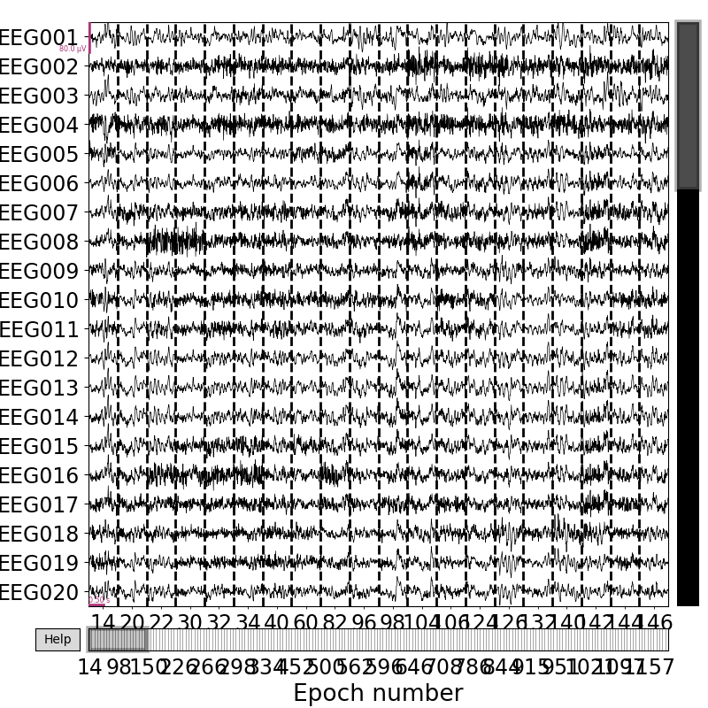
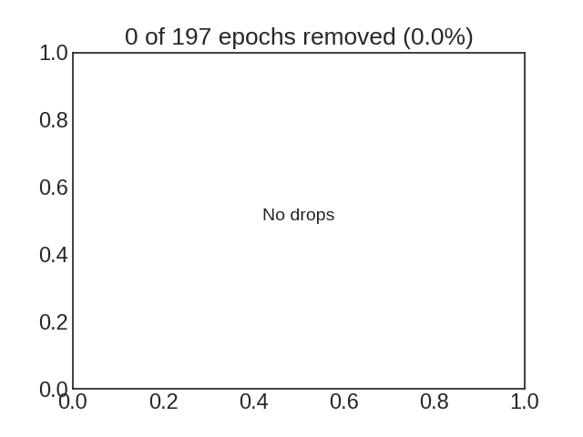

Note
Click here to download the full example code
This example demonstrates how to use autoreject to
visualize the bad sensors in each trial
# Author: Mainak Jas <mainak.jas@telecom-paristech.fr>
# Denis A. Engemann <denis.engemann@gmail.com>
# License: BSD-3-Clause
# sphinx_gallery_thumbnail_number = 2
First, we download the data from OpenfMRI which is hosted on OpenNeuro.
We will do this using openneuro-py which can be installed using pip
(pip install openneuro-py).
import os
import openneuro
import autoreject
dataset = 'ds000117' # The id code on OpenNeuro for this example dataset
subject_id = 16 # OpenfMRI format of subject numbering
target_dir = os.path.join(
os.path.dirname(autoreject.__file__), '..', 'examples', dataset)
if not os.path.isdir(target_dir):
os.makedirs(target_dir)
openneuro.download(dataset=dataset, target_dir=target_dir,
include=[f'sub-{subject_id}/ses-meg/'])
Hello! This is openneuro-py 2022.4.0. Great to see you!
Please report problems and bugs at
https://github.com/hoechenberger/openneuro-py/issues
Preparing to download ds000117 ...
Traversing directories for ds000117: 0 entities [00:00, ? entities/s]
Traversing directories for ds000117: 23 entities [00:00, 118.10 entities/s]
Traversing directories for ds000117: 35 entities [00:00, 55.37 entities/s]
Traversing directories for ds000117: 490 entities [00:00, 873.35 entities/s]
Traversing directories for ds000117: 956 entities [00:00, 1421.79 entities/s]
Traversing directories for ds000117: 1066 entities [00:06, 154.34 entities/s]
Retrieving up to 22 files (5 concurrent downloads).
CHANGES: 0%| | 0.00/1.79k [00:00<?, ?B/s]
README: 0%| | 0.00/5.92k [00:00<?, ?B/s]
sub-16_ses-meg_scans.tsv: 0%| | 0.00/475 [00:00<?, ?B/s]
participants.tsv: 0%| | 0.00/333 [00:00<?, ?B/s]
dataset_description.json: 0%| | 0.00/1.07k [00:00<?, ?B/s]
sub-16_ses-meg_task-facerecognition_run-01_events.tsv: 0%| | 0.00/6.19k [00:00<?, ?B/s]
sub-16_ses-meg_task-facerecognition_run-02_events.tsv: 0%| | 0.00/6.06k [00:00<?, ?B/s]
sub-16_ses-meg_task-facerecognition_run-03_events.tsv: 0%| | 0.00/6.19k [00:00<?, ?B/s]
sub-16_ses-meg_task-facerecognition_run-01_meg.fif: 0%| | 0.00/824M [00:00<?, ?B/s]
sub-16_ses-meg_task-facerecognition_run-06_events.tsv: 0%| | 0.00/6.24k [00:00<?, ?B/s]
sub-16_ses-meg_task-facerecognition_events.tsv: 0%| | 0.00/8.75k [00:00<?, ?B/s]
sub-16_ses-meg_task-facerecognition_run-02_meg.fif: 0%| | 0.00/835M [00:00<?, ?B/s]
sub-16_ses-meg_task-facerecognition_run-06_meg.fif: 0%| | 0.00/822M [00:00<?, ?B/s]
sub-16_ses-meg_task-facerecognition_run-01_meg.fif: 0%| | 1.01M/824M [00:00<01:22, 10.4MB/s]
sub-16_ses-meg_headshape.pos: 0%| | 0.00/4.22k [00:00<?, ?B/s]
sub-16_ses-meg_task-facerecognition_run-02_meg.fif: 0%| | 696k/835M [00:00<02:03, 7.11MB/s]
sub-16_ses-meg_task-facerecognition_run-06_meg.fif: 0%| | 717k/822M [00:00<01:57, 7.32MB/s]
sub-16_ses-meg_task-facerecognition_run-01_meg.fif: 0%| | 2.01M/824M [00:00<01:24, 10.2MB/s]
sub-16_ses-meg_task-facerecognition_run-03_meg.fif: 0%| | 0.00/832M [00:00<?, ?B/s]
sub-16_ses-meg_task-facerecognition_run-05_events.tsv: 0%| | 0.00/6.15k [00:00<?, ?B/s]
sub-16_ses-meg_task-facerecognition_run-02_meg.fif: 0%| | 1.63M/835M [00:00<01:39, 8.75MB/s]
sub-16_ses-meg_task-facerecognition_run-06_meg.fif: 0%| | 1.70M/822M [00:00<01:34, 9.13MB/s]
sub-16_ses-meg_task-facerecognition_run-03_meg.fif: 0%| | 708k/832M [00:00<02:00, 7.22MB/s]
sub-16_ses-meg_task-facerecognition_run-01_meg.fif: 0%| | 2.99M/824M [00:00<01:33, 9.18MB/s]
sub-16_ses-meg_task-facerecognition_channels.tsv: 0%| | 0.00/23.0k [00:00<?, ?B/s]
sub-16_ses-meg_task-facerecognition_run-02_meg.fif: 0%| | 2.47M/835M [00:00<01:44, 8.33MB/s]
sub-16_ses-meg_task-facerecognition_run-06_meg.fif: 0%| | 2.66M/822M [00:00<01:29, 9.55MB/s]
sub-16_ses-meg_task-facerecognition_run-03_meg.fif: 0%| | 1.40M/832M [00:00<01:58, 7.33MB/s]
sub-16_ses-meg_task-facerecognition_run-01_meg.fif: 0%| | 3.88M/824M [00:00<01:39, 8.63MB/s]
sub-16_ses-meg_task-facerecognition_run-02_meg.fif: 0%| | 3.30M/835M [00:00<01:43, 8.47MB/s]
sub-16_ses-meg_task-facerecognition_run-06_meg.fif: 1%| | 4.14M/822M [00:00<01:11, 11.9MB/s]
sub-16_ses-meg_coordsystem.json: 0%| | 0.00/1.81k [00:00<?, ?B/s]
sub-16_ses-meg_task-facerecognition_run-03_meg.fif: 0%| | 2.12M/832M [00:00<01:57, 7.38MB/s]
sub-16_ses-meg_task-facerecognition_run-06_meg.fif: 1%| | 5.38M/822M [00:00<01:09, 12.3MB/s]
sub-16_ses-meg_task-facerecognition_run-02_meg.fif: 0%| | 4.12M/835M [00:00<01:46, 8.16MB/s]
sub-16_ses-meg_task-facerecognition_run-01_meg.fif: 1%| | 4.71M/824M [00:00<01:44, 8.21MB/s]
sub-16_ses-meg_task-facerecognition_run-03_meg.fif: 0%| | 2.98M/832M [00:00<01:48, 8.03MB/s]
sub-16_ses-meg_task-facerecognition_run-04_meg.fif: 0%| | 0.00/830M [00:00<?, ?B/s]
sub-16_ses-meg_task-facerecognition_run-06_meg.fif: 1%| | 6.91M/822M [00:00<01:03, 13.5MB/s]
sub-16_ses-meg_task-facerecognition_run-02_meg.fif: 1%| | 5.01M/835M [00:00<01:41, 8.54MB/s]
sub-16_ses-meg_task-facerecognition_run-01_meg.fif: 1%| | 5.63M/824M [00:00<01:39, 8.61MB/s]
sub-16_ses-meg_task-facerecognition_run-03_meg.fif: 0%| | 3.79M/832M [00:00<01:46, 8.18MB/s]
sub-16_ses-meg_task-facerecognition_run-04_meg.fif: 0%| | 666k/830M [00:00<02:07, 6.81MB/s]
sub-16_ses-meg_task-facerecognition_run-06_meg.fif: 1%|1 | 8.24M/822M [00:00<01:02, 13.6MB/s]
sub-16_ses-meg_task-facerecognition_run-02_meg.fif: 1%| | 5.84M/835M [00:00<01:43, 8.37MB/s]
sub-16_ses-meg_task-facerecognition_run-01_meg.fif: 1%| | 6.46M/824M [00:00<01:44, 8.23MB/s]
sub-16_ses-meg_task-facerecognition_run-03_meg.fif: 1%| | 4.58M/832M [00:00<01:49, 7.93MB/s]
sub-16_ses-meg_task-facerecognition_run-04_meg.fif: 0%| | 1.40M/830M [00:00<01:57, 7.41MB/s]
sub-16_ses-meg_task-facerecognition_run-06_meg.fif: 1%|1 | 9.55M/822M [00:00<01:02, 13.6MB/s]
sub-16_ses-meg_task-facerecognition_run-02_meg.fif: 1%| | 6.66M/835M [00:00<01:46, 8.14MB/s]
sub-16_ses-meg_task-facerecognition_run-01_meg.fif: 1%| | 7.25M/824M [00:00<01:46, 8.06MB/s]
sub-16_ses-meg_task-facerecognition_run-03_meg.fif: 1%| | 5.34M/832M [00:00<01:50, 7.84MB/s]
sub-16_ses-meg_task-facerecognition_run-04_meg.fif: 0%| | 2.14M/830M [00:00<01:54, 7.59MB/s]
sub-16_ses-meg_task-facerecognition_run-06_meg.fif: 1%|1 | 10.9M/822M [00:00<01:03, 13.5MB/s]
sub-16_ses-meg_task-facerecognition_run-02_meg.fif: 1%| | 7.44M/835M [00:00<01:48, 7.99MB/s]
sub-16_ses-meg_task-facerecognition_run-01_meg.fif: 1%| | 8.03M/824M [00:00<01:47, 7.98MB/s]
sub-16_ses-meg_task-facerecognition_run-03_meg.fif: 1%| | 6.10M/832M [00:00<01:50, 7.81MB/s]
sub-16_ses-meg_task-facerecognition_run-04_meg.fif: 0%| | 2.89M/830M [00:00<01:53, 7.65MB/s]
sub-16_ses-meg_task-facerecognition_run-06_meg.fif: 1%|1 | 12.2M/822M [00:01<01:02, 13.6MB/s]
sub-16_ses-meg_task-facerecognition_run-02_meg.fif: 1%| | 8.20M/835M [00:01<01:49, 7.92MB/s]
sub-16_ses-meg_task-facerecognition_run-01_meg.fif: 1%|1 | 8.80M/824M [00:01<01:47, 7.93MB/s]
sub-16_ses-meg_task-facerecognition_run-03_meg.fif: 1%| | 6.85M/832M [00:00<01:51, 7.75MB/s]
sub-16_ses-meg_task-facerecognition_run-04_meg.fif: 0%| | 3.64M/830M [00:00<01:52, 7.70MB/s]
sub-16_ses-meg_task-facerecognition_run-06_meg.fif: 2%|1 | 13.5M/822M [00:01<01:02, 13.6MB/s]
sub-16_ses-meg_task-facerecognition_run-02_meg.fif: 1%|1 | 8.96M/835M [00:01<01:50, 7.86MB/s]
sub-16_ses-meg_task-facerecognition_run-01_meg.fif: 1%|1 | 9.56M/824M [00:01<01:48, 7.87MB/s]
sub-16_ses-meg_task-facerecognition_run-03_meg.fif: 1%| | 7.60M/832M [00:01<01:51, 7.73MB/s]
sub-16_ses-meg_task-facerecognition_run-04_meg.fif: 1%| | 4.39M/830M [00:00<01:52, 7.72MB/s]
sub-16_ses-meg_task-facerecognition_run-06_meg.fif: 2%|1 | 14.8M/822M [00:01<01:02, 13.5MB/s]
sub-16_ses-meg_task-facerecognition_run-02_meg.fif: 1%|1 | 10.1M/835M [00:01<01:36, 8.94MB/s]
sub-16_ses-meg_task-facerecognition_run-01_meg.fif: 1%|1 | 10.3M/824M [00:01<01:50, 7.73MB/s]
sub-16_ses-meg_task-facerecognition_run-03_meg.fif: 1%|1 | 8.34M/832M [00:01<01:53, 7.61MB/s]
sub-16_ses-meg_task-facerecognition_run-04_meg.fif: 1%| | 5.13M/830M [00:00<01:53, 7.62MB/s]
sub-16_ses-meg_task-facerecognition_run-06_meg.fif: 2%|1 | 16.1M/822M [00:01<01:03, 13.4MB/s]
sub-16_ses-meg_task-facerecognition_run-02_meg.fif: 1%|1 | 11.3M/835M [00:01<01:25, 10.2MB/s]
sub-16_ses-meg_task-facerecognition_run-01_meg.fif: 1%|1 | 11.1M/824M [00:01<01:51, 7.63MB/s]
sub-16_ses-meg_task-facerecognition_run-03_meg.fif: 1%|1 | 9.07M/832M [00:01<01:55, 7.49MB/s]
sub-16_ses-meg_task-facerecognition_run-04_meg.fif: 1%| | 5.86M/830M [00:00<01:55, 7.47MB/s]
sub-16_ses-meg_task-facerecognition_run-06_meg.fif: 2%|2 | 17.4M/822M [00:01<01:04, 13.0MB/s]
sub-16_ses-meg_task-facerecognition_run-02_meg.fif: 1%|1 | 12.5M/835M [00:01<01:19, 10.8MB/s]
sub-16_ses-meg_task-facerecognition_run-01_meg.fif: 1%|1 | 11.8M/824M [00:01<01:53, 7.47MB/s]
sub-16_ses-meg_task-facerecognition_run-03_meg.fif: 1%|1 | 9.79M/832M [00:01<01:57, 7.36MB/s]
sub-16_ses-meg_task-facerecognition_run-04_meg.fif: 1%| | 6.58M/830M [00:00<01:57, 7.33MB/s]
sub-16_ses-meg_task-facerecognition_run-06_meg.fif: 2%|2 | 18.6M/822M [00:01<01:05, 12.9MB/s]
sub-16_ses-meg_task-facerecognition_run-02_meg.fif: 2%|1 | 13.7M/835M [00:01<01:16, 11.3MB/s]
sub-16_ses-meg_task-facerecognition_run-01_meg.fif: 2%|1 | 12.7M/824M [00:01<01:44, 8.16MB/s]
sub-16_ses-meg_task-facerecognition_run-03_meg.fif: 1%|1 | 10.5M/832M [00:01<01:57, 7.31MB/s]
sub-16_ses-meg_task-facerecognition_run-04_meg.fif: 1%| | 7.29M/830M [00:01<01:58, 7.26MB/s]
sub-16_ses-meg_task-facerecognition_run-06_meg.fif: 2%|2 | 19.9M/822M [00:01<01:04, 13.0MB/s]
sub-16_ses-meg_task-facerecognition_run-02_meg.fif: 2%|1 | 14.9M/835M [00:01<01:13, 11.7MB/s]
sub-16_ses-meg_task-facerecognition_run-01_meg.fif: 2%|1 | 13.9M/824M [00:01<01:30, 9.41MB/s]
sub-16_ses-meg_task-facerecognition_run-03_meg.fif: 1%|1 | 11.2M/832M [00:01<01:58, 7.23MB/s]
sub-16_ses-meg_task-facerecognition_run-04_meg.fif: 1%| | 7.99M/830M [00:01<01:58, 7.27MB/s]
sub-16_ses-meg_task-facerecognition_run-06_meg.fif: 3%|2 | 21.1M/822M [00:01<01:05, 12.8MB/s]
sub-16_ses-meg_task-facerecognition_run-02_meg.fif: 2%|1 | 16.1M/835M [00:01<01:11, 11.9MB/s]
sub-16_ses-meg_task-facerecognition_run-01_meg.fif: 2%|1 | 15.1M/824M [00:01<01:22, 10.3MB/s]
sub-16_ses-meg_task-facerecognition_run-03_meg.fif: 1%|1 | 11.9M/832M [00:01<01:58, 7.25MB/s]
sub-16_ses-meg_task-facerecognition_run-04_meg.fif: 1%|1 | 8.69M/830M [00:01<01:59, 7.20MB/s]
sub-16_ses-meg_task-facerecognition_run-06_meg.fif: 3%|2 | 22.4M/822M [00:01<01:05, 12.8MB/s]
sub-16_ses-meg_task-facerecognition_run-02_meg.fif: 2%|2 | 17.3M/835M [00:01<01:10, 12.2MB/s]
sub-16_ses-meg_task-facerecognition_run-01_meg.fif: 2%|1 | 16.4M/824M [00:01<01:16, 11.1MB/s]
sub-16_ses-meg_task-facerecognition_run-03_meg.fif: 2%|1 | 12.6M/832M [00:01<01:59, 7.22MB/s]
sub-16_ses-meg_task-facerecognition_run-04_meg.fif: 1%|1 | 9.38M/830M [00:01<01:59, 7.23MB/s]
sub-16_ses-meg_task-facerecognition_run-06_meg.fif: 3%|2 | 23.6M/822M [00:01<01:06, 12.7MB/s]
sub-16_ses-meg_task-facerecognition_run-02_meg.fif: 2%|2 | 18.5M/835M [00:01<01:09, 12.3MB/s]
sub-16_ses-meg_task-facerecognition_run-01_meg.fif: 2%|2 | 17.6M/824M [00:02<01:13, 11.6MB/s]
sub-16_ses-meg_task-facerecognition_run-03_meg.fif: 2%|1 | 13.3M/832M [00:01<01:59, 7.21MB/s]
sub-16_ses-meg_task-facerecognition_run-04_meg.fif: 1%|1 | 10.1M/830M [00:01<01:59, 7.21MB/s]
sub-16_ses-meg_task-facerecognition_run-06_meg.fif: 3%|3 | 24.8M/822M [00:02<01:05, 12.7MB/s]
sub-16_ses-meg_task-facerecognition_run-02_meg.fif: 2%|2 | 19.7M/835M [00:02<01:08, 12.4MB/s]
sub-16_ses-meg_task-facerecognition_run-01_meg.fif: 2%|2 | 18.8M/824M [00:02<01:11, 11.8MB/s]
sub-16_ses-meg_task-facerecognition_run-03_meg.fif: 2%|1 | 14.0M/832M [00:01<01:57, 7.29MB/s]
sub-16_ses-meg_task-facerecognition_run-04_meg.fif: 1%|1 | 11.2M/830M [00:01<01:40, 8.57MB/s]
sub-16_ses-meg_task-facerecognition_run-06_meg.fif: 3%|3 | 26.0M/822M [00:02<01:06, 12.6MB/s]
sub-16_ses-meg_task-facerecognition_run-02_meg.fif: 3%|2 | 20.9M/835M [00:02<01:08, 12.4MB/s]
sub-16_ses-meg_task-facerecognition_run-01_meg.fif: 2%|2 | 19.9M/824M [00:02<01:10, 11.9MB/s]
sub-16_ses-meg_task-facerecognition_run-03_meg.fif: 2%|1 | 14.7M/832M [00:02<02:00, 7.11MB/s]
sub-16_ses-meg_task-facerecognition_run-04_meg.fif: 1%|1 | 12.4M/830M [00:01<01:28, 9.65MB/s]
sub-16_ses-meg_task-facerecognition_run-02_meg.fif: 3%|2 | 22.1M/835M [00:02<01:09, 12.3MB/s]
sub-16_ses-meg_task-facerecognition_run-06_meg.fif: 3%|3 | 27.2M/822M [00:02<01:07, 12.4MB/s]
sub-16_ses-meg_task-facerecognition_run-01_meg.fif: 3%|2 | 21.1M/824M [00:02<01:10, 12.0MB/s]
sub-16_ses-meg_task-facerecognition_run-03_meg.fif: 2%|1 | 15.6M/832M [00:02<01:49, 7.83MB/s]
sub-16_ses-meg_task-facerecognition_run-04_meg.fif: 2%|1 | 13.5M/830M [00:01<01:22, 10.3MB/s]
sub-16_ses-meg_task-facerecognition_run-06_meg.fif: 3%|3 | 28.4M/822M [00:02<01:07, 12.4MB/s]
sub-16_ses-meg_task-facerecognition_run-02_meg.fif: 3%|2 | 23.3M/835M [00:02<01:09, 12.2MB/s]
sub-16_ses-meg_task-facerecognition_run-01_meg.fif: 3%|2 | 22.3M/824M [00:02<01:09, 12.1MB/s]
sub-16_ses-meg_task-facerecognition_run-03_meg.fif: 2%|2 | 16.8M/832M [00:02<01:34, 9.08MB/s]
sub-16_ses-meg_task-facerecognition_run-04_meg.fif: 2%|1 | 14.6M/830M [00:01<01:19, 10.7MB/s]
sub-16_ses-meg_task-facerecognition_run-02_meg.fif: 3%|2 | 24.5M/835M [00:02<01:09, 12.2MB/s]
sub-16_ses-meg_task-facerecognition_run-06_meg.fif: 4%|3 | 29.6M/822M [00:02<01:07, 12.3MB/s]
sub-16_ses-meg_task-facerecognition_run-01_meg.fif: 3%|2 | 23.5M/824M [00:02<01:09, 12.1MB/s]
sub-16_ses-meg_task-facerecognition_run-03_meg.fif: 2%|2 | 18.0M/832M [00:02<01:24, 10.1MB/s]
sub-16_ses-meg_task-facerecognition_run-04_meg.fif: 2%|1 | 15.9M/830M [00:01<01:15, 11.3MB/s]
sub-16_ses-meg_task-facerecognition_run-02_meg.fif: 3%|3 | 25.7M/835M [00:02<01:09, 12.2MB/s]
sub-16_ses-meg_task-facerecognition_run-06_meg.fif: 4%|3 | 30.8M/822M [00:02<01:07, 12.2MB/s]
sub-16_ses-meg_task-facerecognition_run-01_meg.fif: 3%|2 | 24.7M/824M [00:02<01:09, 12.1MB/s]
sub-16_ses-meg_task-facerecognition_run-03_meg.fif: 2%|2 | 19.1M/832M [00:02<01:21, 10.5MB/s]
sub-16_ses-meg_task-facerecognition_run-04_meg.fif: 2%|2 | 17.0M/830M [00:02<01:14, 11.5MB/s]
sub-16_ses-meg_task-facerecognition_run-02_meg.fif: 3%|3 | 26.8M/835M [00:02<01:09, 12.2MB/s]
sub-16_ses-meg_task-facerecognition_run-06_meg.fif: 4%|3 | 32.0M/822M [00:02<01:07, 12.2MB/s]
sub-16_ses-meg_task-facerecognition_run-01_meg.fif: 3%|3 | 25.8M/824M [00:02<01:08, 12.1MB/s]
sub-16_ses-meg_task-facerecognition_run-03_meg.fif: 2%|2 | 20.3M/832M [00:02<01:17, 11.0MB/s]
sub-16_ses-meg_task-facerecognition_run-04_meg.fif: 2%|2 | 18.2M/830M [00:02<01:12, 11.8MB/s]
sub-16_ses-meg_task-facerecognition_run-02_meg.fif: 3%|3 | 28.1M/835M [00:02<01:08, 12.3MB/s]
sub-16_ses-meg_task-facerecognition_run-06_meg.fif: 4%|4 | 33.2M/822M [00:02<01:07, 12.3MB/s]
sub-16_ses-meg_task-facerecognition_run-01_meg.fif: 3%|3 | 27.0M/824M [00:02<01:08, 12.2MB/s]
sub-16_ses-meg_task-facerecognition_run-03_meg.fif: 3%|2 | 21.4M/832M [00:02<01:14, 11.3MB/s]
sub-16_ses-meg_task-facerecognition_run-04_meg.fif: 2%|2 | 19.4M/830M [00:02<01:11, 11.8MB/s]
sub-16_ses-meg_task-facerecognition_run-02_meg.fif: 4%|3 | 29.2M/835M [00:02<01:09, 12.2MB/s]
sub-16_ses-meg_task-facerecognition_run-06_meg.fif: 4%|4 | 34.3M/822M [00:02<01:07, 12.2MB/s]
sub-16_ses-meg_task-facerecognition_run-01_meg.fif: 3%|3 | 28.2M/824M [00:02<01:08, 12.1MB/s]
sub-16_ses-meg_task-facerecognition_run-03_meg.fif: 3%|2 | 22.6M/832M [00:02<01:13, 11.5MB/s]
sub-16_ses-meg_task-facerecognition_run-04_meg.fif: 2%|2 | 20.5M/830M [00:02<01:11, 11.9MB/s]
sub-16_ses-meg_task-facerecognition_run-06_meg.fif: 4%|4 | 35.5M/822M [00:02<01:07, 12.2MB/s]
sub-16_ses-meg_task-facerecognition_run-02_meg.fif: 4%|3 | 30.4M/835M [00:02<01:09, 12.1MB/s]
sub-16_ses-meg_task-facerecognition_run-01_meg.fif: 4%|3 | 29.3M/824M [00:03<01:08, 12.1MB/s]
sub-16_ses-meg_task-facerecognition_run-03_meg.fif: 3%|2 | 23.7M/832M [00:02<01:12, 11.6MB/s]
sub-16_ses-meg_task-facerecognition_run-04_meg.fif: 3%|2 | 21.7M/830M [00:02<01:11, 11.9MB/s]
sub-16_ses-meg_task-facerecognition_run-02_meg.fif: 4%|3 | 31.6M/835M [00:03<01:09, 12.1MB/s]
sub-16_ses-meg_task-facerecognition_run-06_meg.fif: 4%|4 | 36.7M/822M [00:03<01:08, 12.1MB/s]
sub-16_ses-meg_task-facerecognition_run-01_meg.fif: 4%|3 | 30.5M/824M [00:03<01:09, 12.0MB/s]
sub-16_ses-meg_task-facerecognition_run-03_meg.fif: 3%|2 | 24.8M/832M [00:02<01:12, 11.7MB/s]
sub-16_ses-meg_task-facerecognition_run-04_meg.fif: 3%|2 | 22.8M/830M [00:02<01:10, 11.9MB/s]
sub-16_ses-meg_task-facerecognition_run-02_meg.fif: 4%|3 | 32.7M/835M [00:03<01:09, 12.1MB/s]
sub-16_ses-meg_task-facerecognition_run-06_meg.fif: 5%|4 | 37.8M/822M [00:03<01:08, 12.0MB/s]
sub-16_ses-meg_task-facerecognition_run-01_meg.fif: 4%|3 | 31.6M/824M [00:03<01:09, 11.9MB/s]
sub-16_ses-meg_task-facerecognition_run-03_meg.fif: 3%|3 | 26.0M/832M [00:03<01:12, 11.7MB/s]
sub-16_ses-meg_task-facerecognition_run-04_meg.fif: 3%|2 | 24.0M/830M [00:02<01:11, 11.8MB/s]
sub-16_ses-meg_task-facerecognition_run-02_meg.fif: 4%|4 | 33.9M/835M [00:03<01:10, 11.9MB/s]
sub-16_ses-meg_task-facerecognition_run-06_meg.fif: 5%|4 | 39.0M/822M [00:03<01:08, 11.9MB/s]
sub-16_ses-meg_task-facerecognition_run-01_meg.fif: 4%|3 | 32.8M/824M [00:03<01:09, 11.9MB/s]
sub-16_ses-meg_task-facerecognition_run-03_meg.fif: 3%|3 | 27.1M/832M [00:03<01:12, 11.7MB/s]
sub-16_ses-meg_task-facerecognition_run-04_meg.fif: 3%|3 | 25.1M/830M [00:02<01:11, 11.9MB/s]
sub-16_ses-meg_task-facerecognition_run-02_meg.fif: 4%|4 | 35.1M/835M [00:03<01:09, 12.0MB/s]
sub-16_ses-meg_task-facerecognition_run-06_meg.fif: 5%|4 | 40.2M/822M [00:03<01:08, 11.9MB/s]
sub-16_ses-meg_task-facerecognition_run-01_meg.fif: 4%|4 | 34.0M/824M [00:03<01:08, 12.0MB/s]
sub-16_ses-meg_task-facerecognition_run-03_meg.fif: 3%|3 | 28.3M/832M [00:03<01:11, 11.8MB/s]
sub-16_ses-meg_task-facerecognition_run-04_meg.fif: 3%|3 | 26.3M/830M [00:02<01:10, 12.0MB/s]
sub-16_ses-meg_task-facerecognition_run-02_meg.fif: 4%|4 | 36.2M/835M [00:03<01:10, 11.9MB/s]
sub-16_ses-meg_task-facerecognition_run-06_meg.fif: 5%|5 | 41.3M/822M [00:03<01:09, 11.8MB/s]
sub-16_ses-meg_task-facerecognition_run-01_meg.fif: 4%|4 | 35.1M/824M [00:03<01:09, 11.9MB/s]
sub-16_ses-meg_task-facerecognition_run-03_meg.fif: 4%|3 | 29.4M/832M [00:03<01:11, 11.8MB/s]
sub-16_ses-meg_task-facerecognition_run-04_meg.fif: 3%|3 | 27.5M/830M [00:02<01:10, 12.0MB/s]
sub-16_ses-meg_task-facerecognition_run-02_meg.fif: 4%|4 | 37.4M/835M [00:03<01:10, 11.9MB/s]
sub-16_ses-meg_task-facerecognition_run-06_meg.fif: 5%|5 | 42.4M/822M [00:03<01:08, 11.9MB/s]
sub-16_ses-meg_task-facerecognition_run-01_meg.fif: 4%|4 | 36.3M/824M [00:03<01:08, 12.0MB/s]
sub-16_ses-meg_task-facerecognition_run-03_meg.fif: 4%|3 | 30.6M/832M [00:03<01:10, 12.0MB/s]
sub-16_ses-meg_task-facerecognition_run-04_meg.fif: 3%|3 | 28.6M/830M [00:03<01:10, 12.0MB/s]
sub-16_ses-meg_task-facerecognition_run-06_meg.fif: 5%|5 | 43.6M/822M [00:03<01:08, 12.0MB/s]
sub-16_ses-meg_task-facerecognition_run-02_meg.fif: 5%|4 | 38.6M/835M [00:03<01:09, 12.0MB/s]
sub-16_ses-meg_task-facerecognition_run-01_meg.fif: 5%|4 | 37.5M/824M [00:03<01:08, 12.1MB/s]
sub-16_ses-meg_task-facerecognition_run-03_meg.fif: 4%|3 | 31.8M/832M [00:03<01:10, 12.0MB/s]
sub-16_ses-meg_task-facerecognition_run-04_meg.fif: 4%|3 | 29.8M/830M [00:03<01:09, 12.0MB/s]
sub-16_ses-meg_task-facerecognition_run-02_meg.fif: 5%|4 | 39.7M/835M [00:03<01:08, 12.1MB/s]
sub-16_ses-meg_task-facerecognition_run-06_meg.fif: 5%|5 | 44.8M/822M [00:03<01:07, 12.0MB/s]
sub-16_ses-meg_task-facerecognition_run-01_meg.fif: 5%|4 | 38.7M/824M [00:03<01:07, 12.2MB/s]
sub-16_ses-meg_task-facerecognition_run-03_meg.fif: 4%|3 | 32.9M/832M [00:03<01:09, 12.1MB/s]
sub-16_ses-meg_task-facerecognition_run-04_meg.fif: 4%|3 | 31.0M/830M [00:03<01:09, 12.1MB/s]
sub-16_ses-meg_task-facerecognition_run-06_meg.fif: 6%|5 | 46.0M/822M [00:03<01:07, 12.1MB/s]
sub-16_ses-meg_task-facerecognition_run-02_meg.fif: 5%|4 | 40.9M/835M [00:03<01:09, 12.1MB/s]
sub-16_ses-meg_task-facerecognition_run-01_meg.fif: 5%|4 | 39.9M/824M [00:03<01:08, 12.0MB/s]
sub-16_ses-meg_task-facerecognition_run-03_meg.fif: 4%|4 | 34.1M/832M [00:03<01:09, 12.0MB/s]
sub-16_ses-meg_task-facerecognition_run-04_meg.fif: 4%|3 | 32.1M/830M [00:03<01:09, 12.0MB/s]
sub-16_ses-meg_task-facerecognition_run-06_meg.fif: 6%|5 | 47.1M/822M [00:03<01:07, 12.1MB/s]
sub-16_ses-meg_task-facerecognition_run-02_meg.fif: 5%|5 | 42.1M/835M [00:03<01:08, 12.2MB/s]
sub-16_ses-meg_task-facerecognition_run-01_meg.fif: 5%|4 | 41.1M/824M [00:04<01:07, 12.2MB/s]
sub-16_ses-meg_task-facerecognition_run-03_meg.fif: 4%|4 | 35.3M/832M [00:03<01:09, 12.1MB/s]
sub-16_ses-meg_task-facerecognition_run-04_meg.fif: 4%|4 | 33.3M/830M [00:03<01:08, 12.2MB/s]
sub-16_ses-meg_task-facerecognition_run-06_meg.fif: 6%|5 | 48.3M/822M [00:04<01:07, 12.0MB/s]
sub-16_ses-meg_task-facerecognition_run-02_meg.fif: 5%|5 | 43.3M/835M [00:04<01:08, 12.2MB/s]
sub-16_ses-meg_task-facerecognition_run-01_meg.fif: 5%|5 | 42.2M/824M [00:04<01:07, 12.2MB/s]
sub-16_ses-meg_task-facerecognition_run-03_meg.fif: 4%|4 | 36.5M/832M [00:03<01:08, 12.1MB/s]
sub-16_ses-meg_task-facerecognition_run-04_meg.fif: 4%|4 | 34.5M/830M [00:03<01:08, 12.1MB/s]
sub-16_ses-meg_task-facerecognition_run-06_meg.fif: 6%|6 | 49.5M/822M [00:04<01:06, 12.1MB/s]
sub-16_ses-meg_task-facerecognition_run-02_meg.fif: 5%|5 | 44.4M/835M [00:04<01:08, 12.1MB/s]
sub-16_ses-meg_task-facerecognition_run-01_meg.fif: 5%|5 | 43.4M/824M [00:04<01:07, 12.1MB/s]
sub-16_ses-meg_task-facerecognition_run-03_meg.fif: 5%|4 | 37.6M/832M [00:04<01:09, 12.1MB/s]
sub-16_ses-meg_task-facerecognition_run-04_meg.fif: 4%|4 | 35.7M/830M [00:03<01:08, 12.1MB/s]
sub-16_ses-meg_task-facerecognition_run-06_meg.fif: 6%|6 | 50.6M/822M [00:04<01:06, 12.1MB/s]
sub-16_ses-meg_task-facerecognition_run-02_meg.fif: 5%|5 | 45.6M/835M [00:04<01:09, 12.0MB/s]
sub-16_ses-meg_task-facerecognition_run-01_meg.fif: 5%|5 | 44.6M/824M [00:04<01:08, 12.0MB/s]
sub-16_ses-meg_task-facerecognition_run-03_meg.fif: 5%|4 | 38.8M/832M [00:04<01:09, 12.0MB/s]
sub-16_ses-meg_task-facerecognition_run-04_meg.fif: 4%|4 | 36.8M/830M [00:03<01:09, 12.0MB/s]
sub-16_ses-meg_task-facerecognition_run-06_meg.fif: 6%|6 | 51.8M/822M [00:04<01:07, 12.0MB/s]
sub-16_ses-meg_task-facerecognition_run-02_meg.fif: 6%|5 | 46.8M/835M [00:04<01:09, 12.0MB/s]
sub-16_ses-meg_task-facerecognition_run-01_meg.fif: 6%|5 | 45.8M/824M [00:04<01:07, 12.0MB/s]
sub-16_ses-meg_task-facerecognition_run-03_meg.fif: 5%|4 | 39.9M/832M [00:04<01:09, 12.0MB/s]
sub-16_ses-meg_task-facerecognition_run-04_meg.fif: 5%|4 | 38.0M/830M [00:03<01:09, 11.9MB/s]
sub-16_ses-meg_task-facerecognition_run-06_meg.fif: 6%|6 | 53.0M/822M [00:04<01:07, 11.9MB/s]
sub-16_ses-meg_task-facerecognition_run-02_meg.fif: 6%|5 | 47.9M/835M [00:04<01:09, 11.9MB/s]
sub-16_ses-meg_task-facerecognition_run-01_meg.fif: 6%|5 | 46.9M/824M [00:04<01:08, 11.9MB/s]
sub-16_ses-meg_task-facerecognition_run-03_meg.fif: 5%|4 | 41.1M/832M [00:04<01:09, 11.9MB/s]
sub-16_ses-meg_task-facerecognition_run-04_meg.fif: 5%|4 | 39.1M/830M [00:03<01:09, 11.9MB/s]
sub-16_ses-meg_task-facerecognition_run-06_meg.fif: 7%|6 | 54.1M/822M [00:04<01:07, 11.9MB/s]
sub-16_ses-meg_task-facerecognition_run-02_meg.fif: 6%|5 | 49.1M/835M [00:04<01:09, 11.9MB/s]
sub-16_ses-meg_task-facerecognition_run-01_meg.fif: 6%|5 | 48.1M/824M [00:04<01:08, 12.0MB/s]
sub-16_ses-meg_task-facerecognition_run-03_meg.fif: 5%|5 | 42.2M/832M [00:04<01:09, 11.9MB/s]
sub-16_ses-meg_task-facerecognition_run-04_meg.fif: 5%|4 | 40.4M/830M [00:04<01:08, 12.0MB/s]
sub-16_ses-meg_task-facerecognition_run-06_meg.fif: 7%|6 | 55.2M/822M [00:04<01:07, 11.9MB/s]
sub-16_ses-meg_task-facerecognition_run-02_meg.fif: 6%|6 | 50.2M/835M [00:04<01:08, 12.0MB/s]
sub-16_ses-meg_task-facerecognition_run-01_meg.fif: 6%|5 | 49.2M/824M [00:04<01:07, 12.0MB/s]
sub-16_ses-meg_task-facerecognition_run-03_meg.fif: 5%|5 | 43.4M/832M [00:04<01:09, 11.9MB/s]
sub-16_ses-meg_task-facerecognition_run-04_meg.fif: 5%|5 | 41.6M/830M [00:04<01:07, 12.2MB/s]
sub-16_ses-meg_task-facerecognition_run-06_meg.fif: 7%|6 | 56.4M/822M [00:04<01:07, 11.9MB/s]
sub-16_ses-meg_task-facerecognition_run-02_meg.fif: 6%|6 | 51.4M/835M [00:04<01:08, 12.0MB/s]
sub-16_ses-meg_task-facerecognition_run-01_meg.fif: 6%|6 | 50.4M/824M [00:04<01:07, 12.0MB/s]
sub-16_ses-meg_task-facerecognition_run-03_meg.fif: 5%|5 | 44.5M/832M [00:04<01:09, 11.9MB/s]
sub-16_ses-meg_task-facerecognition_run-04_meg.fif: 5%|5 | 42.7M/830M [00:04<01:08, 12.1MB/s]
sub-16_ses-meg_task-facerecognition_run-06_meg.fif: 7%|6 | 57.5M/822M [00:04<01:07, 11.8MB/s]
sub-16_ses-meg_task-facerecognition_run-02_meg.fif: 6%|6 | 52.5M/835M [00:04<01:08, 12.0MB/s]
sub-16_ses-meg_task-facerecognition_run-01_meg.fif: 6%|6 | 51.6M/824M [00:04<01:07, 12.0MB/s]
sub-16_ses-meg_task-facerecognition_run-03_meg.fif: 5%|5 | 45.7M/832M [00:04<01:08, 12.1MB/s]
sub-16_ses-meg_task-facerecognition_run-04_meg.fif: 5%|5 | 43.9M/830M [00:04<01:07, 12.2MB/s]
sub-16_ses-meg_task-facerecognition_run-06_meg.fif: 7%|7 | 58.7M/822M [00:04<01:06, 12.0MB/s]
sub-16_ses-meg_task-facerecognition_run-02_meg.fif: 6%|6 | 53.8M/835M [00:05<01:07, 12.1MB/s]
sub-16_ses-meg_task-facerecognition_run-01_meg.fif: 6%|6 | 52.7M/824M [00:05<01:07, 12.0MB/s]
sub-16_ses-meg_task-facerecognition_run-03_meg.fif: 6%|5 | 46.9M/832M [00:04<01:07, 12.2MB/s]
sub-16_ses-meg_task-facerecognition_run-04_meg.fif: 5%|5 | 45.1M/830M [00:04<01:08, 12.1MB/s]
sub-16_ses-meg_task-facerecognition_run-06_meg.fif: 7%|7 | 59.9M/822M [00:05<01:06, 12.1MB/s]
sub-16_ses-meg_task-facerecognition_run-02_meg.fif: 7%|6 | 55.0M/835M [00:05<01:06, 12.3MB/s]
sub-16_ses-meg_task-facerecognition_run-01_meg.fif: 7%|6 | 53.9M/824M [00:05<01:06, 12.1MB/s]
sub-16_ses-meg_task-facerecognition_run-03_meg.fif: 6%|5 | 48.1M/832M [00:04<01:07, 12.2MB/s]
sub-16_ses-meg_task-facerecognition_run-04_meg.fif: 6%|5 | 46.3M/830M [00:04<01:07, 12.3MB/s]
sub-16_ses-meg_task-facerecognition_run-06_meg.fif: 7%|7 | 61.0M/822M [00:05<01:06, 12.0MB/s]
sub-16_ses-meg_task-facerecognition_run-02_meg.fif: 7%|6 | 56.1M/835M [00:05<01:06, 12.2MB/s]
sub-16_ses-meg_task-facerecognition_run-01_meg.fif: 7%|6 | 55.1M/824M [00:05<01:06, 12.1MB/s]
sub-16_ses-meg_task-facerecognition_run-03_meg.fif: 6%|5 | 49.3M/832M [00:05<01:07, 12.1MB/s]
sub-16_ses-meg_task-facerecognition_run-04_meg.fif: 6%|5 | 47.5M/830M [00:04<01:08, 12.0MB/s]
sub-16_ses-meg_task-facerecognition_run-06_meg.fif: 8%|7 | 62.2M/822M [00:05<01:05, 12.1MB/s]
sub-16_ses-meg_task-facerecognition_run-02_meg.fif: 7%|6 | 57.3M/835M [00:05<01:07, 12.1MB/s]
sub-16_ses-meg_task-facerecognition_run-01_meg.fif: 7%|6 | 56.2M/824M [00:05<01:06, 12.1MB/s]
sub-16_ses-meg_task-facerecognition_run-03_meg.fif: 6%|6 | 50.5M/832M [00:05<01:07, 12.1MB/s]
sub-16_ses-meg_task-facerecognition_run-04_meg.fif: 6%|5 | 48.6M/830M [00:04<01:08, 12.0MB/s]
sub-16_ses-meg_task-facerecognition_run-06_meg.fif: 8%|7 | 63.4M/822M [00:05<01:06, 12.0MB/s]
sub-16_ses-meg_task-facerecognition_run-02_meg.fif: 7%|7 | 58.5M/835M [00:05<01:07, 12.1MB/s]
sub-16_ses-meg_task-facerecognition_run-01_meg.fif: 7%|6 | 57.4M/824M [00:05<01:06, 12.0MB/s]
sub-16_ses-meg_task-facerecognition_run-03_meg.fif: 6%|6 | 51.6M/832M [00:05<01:08, 12.0MB/s]
sub-16_ses-meg_task-facerecognition_run-04_meg.fif: 6%|5 | 49.8M/830M [00:04<01:08, 12.0MB/s]
sub-16_ses-meg_task-facerecognition_run-06_meg.fif: 8%|7 | 64.5M/822M [00:05<01:05, 12.0MB/s]
sub-16_ses-meg_task-facerecognition_run-02_meg.fif: 7%|7 | 59.6M/835M [00:05<01:07, 12.1MB/s]
sub-16_ses-meg_task-facerecognition_run-01_meg.fif: 7%|7 | 58.6M/824M [00:05<01:06, 12.1MB/s]
sub-16_ses-meg_task-facerecognition_run-03_meg.fif: 6%|6 | 52.8M/832M [00:05<01:07, 12.1MB/s]
sub-16_ses-meg_task-facerecognition_run-04_meg.fif: 6%|6 | 50.9M/830M [00:04<01:08, 12.0MB/s]
sub-16_ses-meg_task-facerecognition_run-06_meg.fif: 8%|7 | 65.7M/822M [00:05<01:06, 12.0MB/s]
sub-16_ses-meg_task-facerecognition_run-02_meg.fif: 7%|7 | 60.8M/835M [00:05<01:07, 12.0MB/s]
sub-16_ses-meg_task-facerecognition_run-01_meg.fif: 7%|7 | 59.7M/824M [00:05<01:05, 12.2MB/s]
sub-16_ses-meg_task-facerecognition_run-03_meg.fif: 6%|6 | 53.9M/832M [00:05<01:07, 12.1MB/s]
sub-16_ses-meg_task-facerecognition_run-04_meg.fif: 6%|6 | 52.1M/830M [00:05<01:07, 12.1MB/s]
sub-16_ses-meg_task-facerecognition_run-06_meg.fif: 8%|8 | 66.9M/822M [00:05<01:05, 12.1MB/s]
sub-16_ses-meg_task-facerecognition_run-02_meg.fif: 7%|7 | 62.0M/835M [00:05<01:06, 12.1MB/s]
sub-16_ses-meg_task-facerecognition_run-01_meg.fif: 7%|7 | 60.9M/824M [00:05<01:05, 12.2MB/s]
sub-16_ses-meg_task-facerecognition_run-03_meg.fif: 7%|6 | 55.1M/832M [00:05<01:07, 12.1MB/s]
sub-16_ses-meg_task-facerecognition_run-04_meg.fif: 6%|6 | 53.3M/830M [00:05<01:07, 12.1MB/s]
sub-16_ses-meg_task-facerecognition_run-06_meg.fif: 8%|8 | 68.0M/822M [00:05<01:05, 12.2MB/s]
sub-16_ses-meg_task-facerecognition_run-02_meg.fif: 8%|7 | 63.2M/835M [00:05<01:06, 12.2MB/s]
sub-16_ses-meg_task-facerecognition_run-01_meg.fif: 8%|7 | 62.1M/824M [00:05<01:05, 12.2MB/s]
sub-16_ses-meg_task-facerecognition_run-03_meg.fif: 7%|6 | 56.3M/832M [00:05<01:07, 12.0MB/s]
sub-16_ses-meg_task-facerecognition_run-04_meg.fif: 7%|6 | 54.5M/830M [00:05<01:07, 12.1MB/s]
sub-16_ses-meg_task-facerecognition_run-06_meg.fif: 8%|8 | 69.2M/822M [00:05<01:05, 12.0MB/s]
sub-16_ses-meg_task-facerecognition_run-02_meg.fif: 8%|7 | 64.4M/835M [00:05<01:06, 12.2MB/s]
sub-16_ses-meg_task-facerecognition_run-01_meg.fif: 8%|7 | 63.3M/824M [00:05<01:05, 12.2MB/s]
sub-16_ses-meg_task-facerecognition_run-03_meg.fif: 7%|6 | 57.4M/832M [00:05<01:07, 12.0MB/s]
sub-16_ses-meg_task-facerecognition_run-04_meg.fif: 7%|6 | 55.6M/830M [00:05<01:07, 12.0MB/s]
sub-16_ses-meg_task-facerecognition_run-06_meg.fif: 9%|8 | 70.4M/822M [00:06<01:05, 12.0MB/s]
sub-16_ses-meg_task-facerecognition_run-02_meg.fif: 8%|7 | 65.5M/835M [00:06<01:06, 12.1MB/s]
sub-16_ses-meg_task-facerecognition_run-01_meg.fif: 8%|7 | 64.5M/824M [00:06<01:04, 12.3MB/s]
sub-16_ses-meg_task-facerecognition_run-03_meg.fif: 7%|7 | 58.6M/832M [00:05<01:07, 12.1MB/s]
sub-16_ses-meg_task-facerecognition_run-04_meg.fif: 7%|6 | 56.8M/830M [00:05<01:06, 12.1MB/s]
sub-16_ses-meg_task-facerecognition_run-06_meg.fif: 9%|8 | 71.5M/822M [00:06<01:05, 12.0MB/s]
sub-16_ses-meg_task-facerecognition_run-02_meg.fif: 8%|7 | 66.7M/835M [00:06<01:06, 12.1MB/s]
sub-16_ses-meg_task-facerecognition_run-01_meg.fif: 8%|7 | 65.7M/824M [00:06<01:05, 12.1MB/s]
sub-16_ses-meg_task-facerecognition_run-03_meg.fif: 7%|7 | 59.8M/832M [00:06<01:07, 12.1MB/s]
sub-16_ses-meg_task-facerecognition_run-04_meg.fif: 7%|6 | 58.0M/830M [00:05<01:06, 12.2MB/s]
sub-16_ses-meg_task-facerecognition_run-06_meg.fif: 9%|8 | 72.7M/822M [00:06<01:05, 12.0MB/s]
sub-16_ses-meg_task-facerecognition_run-02_meg.fif: 8%|8 | 67.9M/835M [00:06<01:06, 12.1MB/s]
sub-16_ses-meg_task-facerecognition_run-01_meg.fif: 8%|8 | 66.8M/824M [00:06<01:05, 12.0MB/s]
sub-16_ses-meg_task-facerecognition_run-03_meg.fif: 7%|7 | 60.9M/832M [00:06<01:06, 12.1MB/s]
sub-16_ses-meg_task-facerecognition_run-04_meg.fif: 7%|7 | 59.2M/830M [00:05<01:06, 12.1MB/s]
sub-16_ses-meg_task-facerecognition_run-06_meg.fif: 9%|8 | 73.9M/822M [00:06<01:04, 12.1MB/s]
sub-16_ses-meg_task-facerecognition_run-02_meg.fif: 8%|8 | 69.0M/835M [00:06<01:06, 12.1MB/s]
sub-16_ses-meg_task-facerecognition_run-01_meg.fif: 8%|8 | 68.0M/824M [00:06<01:05, 12.1MB/s]
sub-16_ses-meg_task-facerecognition_run-03_meg.fif: 7%|7 | 62.1M/832M [00:06<01:06, 12.1MB/s]
sub-16_ses-meg_task-facerecognition_run-04_meg.fif: 7%|7 | 60.3M/830M [00:05<01:06, 12.1MB/s]
sub-16_ses-meg_task-facerecognition_run-06_meg.fif: 9%|9 | 75.1M/822M [00:06<01:04, 12.1MB/s]
sub-16_ses-meg_task-facerecognition_run-02_meg.fif: 8%|8 | 70.2M/835M [00:06<01:06, 12.1MB/s]
sub-16_ses-meg_task-facerecognition_run-01_meg.fif: 8%|8 | 69.2M/824M [00:06<01:05, 12.1MB/s]
sub-16_ses-meg_task-facerecognition_run-03_meg.fif: 8%|7 | 63.3M/832M [00:06<01:06, 12.1MB/s]
sub-16_ses-meg_task-facerecognition_run-04_meg.fif: 7%|7 | 61.5M/830M [00:05<01:06, 12.1MB/s]
sub-16_ses-meg_task-facerecognition_run-06_meg.fif: 9%|9 | 76.2M/822M [00:06<01:04, 12.1MB/s]
sub-16_ses-meg_task-facerecognition_run-02_meg.fif: 9%|8 | 71.3M/835M [00:06<01:07, 11.9MB/s]
sub-16_ses-meg_task-facerecognition_run-01_meg.fif: 9%|8 | 70.3M/824M [00:06<01:05, 12.0MB/s]
sub-16_ses-meg_task-facerecognition_run-03_meg.fif: 8%|7 | 64.5M/832M [00:06<01:06, 12.1MB/s]
sub-16_ses-meg_task-facerecognition_run-04_meg.fif: 8%|7 | 62.7M/830M [00:06<01:05, 12.3MB/s]
sub-16_ses-meg_task-facerecognition_run-06_meg.fif: 9%|9 | 77.4M/822M [00:06<01:03, 12.3MB/s]
sub-16_ses-meg_task-facerecognition_run-02_meg.fif: 9%|8 | 72.5M/835M [00:06<01:05, 12.1MB/s]
sub-16_ses-meg_task-facerecognition_run-01_meg.fif: 9%|8 | 71.5M/824M [00:06<01:04, 12.3MB/s]
sub-16_ses-meg_task-facerecognition_run-03_meg.fif: 8%|7 | 65.7M/832M [00:06<01:05, 12.3MB/s]
sub-16_ses-meg_task-facerecognition_run-04_meg.fif: 8%|7 | 63.9M/830M [00:06<01:05, 12.3MB/s]
sub-16_ses-meg_task-facerecognition_run-06_meg.fif: 10%|9 | 78.6M/822M [00:06<01:03, 12.3MB/s]
sub-16_ses-meg_task-facerecognition_run-02_meg.fif: 9%|8 | 73.7M/835M [00:06<01:05, 12.1MB/s]
sub-16_ses-meg_task-facerecognition_run-01_meg.fif: 9%|8 | 72.7M/824M [00:06<01:03, 12.3MB/s]
sub-16_ses-meg_task-facerecognition_run-03_meg.fif: 8%|8 | 66.9M/832M [00:06<01:05, 12.3MB/s]
sub-16_ses-meg_task-facerecognition_run-04_meg.fif: 8%|7 | 65.1M/830M [00:06<01:06, 12.1MB/s]
sub-16_ses-meg_task-facerecognition_run-06_meg.fif: 10%|9 | 79.8M/822M [00:06<01:04, 12.1MB/s]
sub-16_ses-meg_task-facerecognition_run-02_meg.fif: 9%|8 | 74.9M/835M [00:06<01:05, 12.1MB/s]
sub-16_ses-meg_task-facerecognition_run-01_meg.fif: 9%|8 | 73.9M/824M [00:06<01:04, 12.2MB/s]
sub-16_ses-meg_task-facerecognition_run-03_meg.fif: 8%|8 | 68.0M/832M [00:06<01:05, 12.2MB/s]
sub-16_ses-meg_task-facerecognition_run-04_meg.fif: 8%|7 | 66.3M/830M [00:06<01:05, 12.2MB/s]
sub-16_ses-meg_task-facerecognition_run-06_meg.fif: 10%|9 | 81.0M/822M [00:06<01:03, 12.2MB/s]
sub-16_ses-meg_task-facerecognition_run-02_meg.fif: 9%|9 | 76.1M/835M [00:06<01:05, 12.2MB/s]
sub-16_ses-meg_task-facerecognition_run-01_meg.fif: 9%|9 | 75.1M/824M [00:07<01:04, 12.2MB/s]
sub-16_ses-meg_task-facerecognition_run-03_meg.fif: 8%|8 | 69.2M/832M [00:06<01:05, 12.1MB/s]
sub-16_ses-meg_task-facerecognition_run-04_meg.fif: 8%|8 | 67.4M/830M [00:06<01:05, 12.1MB/s]
sub-16_ses-meg_task-facerecognition_run-06_meg.fif: 10%|9 | 82.1M/822M [00:07<01:03, 12.1MB/s]
sub-16_ses-meg_task-facerecognition_run-02_meg.fif: 9%|9 | 77.3M/835M [00:07<01:05, 12.1MB/s]
sub-16_ses-meg_task-facerecognition_run-01_meg.fif: 9%|9 | 76.3M/824M [00:07<01:04, 12.2MB/s]
sub-16_ses-meg_task-facerecognition_run-03_meg.fif: 8%|8 | 70.4M/832M [00:06<01:05, 12.2MB/s]
sub-16_ses-meg_task-facerecognition_run-04_meg.fif: 8%|8 | 68.6M/830M [00:06<01:05, 12.2MB/s]
sub-16_ses-meg_task-facerecognition_run-06_meg.fif: 10%|# | 83.3M/822M [00:07<01:03, 12.3MB/s]
sub-16_ses-meg_task-facerecognition_run-02_meg.fif: 9%|9 | 78.5M/835M [00:07<01:05, 12.1MB/s]
sub-16_ses-meg_task-facerecognition_run-01_meg.fif: 9%|9 | 77.5M/824M [00:07<01:03, 12.3MB/s]
sub-16_ses-meg_task-facerecognition_run-03_meg.fif: 9%|8 | 71.6M/832M [00:07<01:05, 12.3MB/s]
sub-16_ses-meg_task-facerecognition_run-04_meg.fif: 8%|8 | 69.8M/830M [00:06<01:05, 12.2MB/s]
sub-16_ses-meg_task-facerecognition_run-06_meg.fif: 10%|# | 84.5M/822M [00:07<01:03, 12.2MB/s]
sub-16_ses-meg_task-facerecognition_run-02_meg.fif: 10%|9 | 79.6M/835M [00:07<01:05, 12.1MB/s]
sub-16_ses-meg_task-facerecognition_run-01_meg.fif: 10%|9 | 78.7M/824M [00:07<01:03, 12.2MB/s]
sub-16_ses-meg_task-facerecognition_run-03_meg.fif: 9%|8 | 72.8M/832M [00:07<01:04, 12.2MB/s]
sub-16_ses-meg_task-facerecognition_run-04_meg.fif: 9%|8 | 71.0M/830M [00:06<01:04, 12.3MB/s]
sub-16_ses-meg_task-facerecognition_run-06_meg.fif: 10%|# | 85.7M/822M [00:07<01:03, 12.2MB/s]
sub-16_ses-meg_task-facerecognition_run-02_meg.fif: 10%|9 | 80.8M/835M [00:07<01:05, 12.0MB/s]
sub-16_ses-meg_task-facerecognition_run-01_meg.fif: 10%|9 | 79.9M/824M [00:07<01:04, 12.1MB/s]
sub-16_ses-meg_task-facerecognition_run-03_meg.fif: 9%|8 | 74.0M/832M [00:07<01:05, 12.1MB/s]
sub-16_ses-meg_task-facerecognition_run-04_meg.fif: 9%|8 | 72.2M/830M [00:06<01:05, 12.2MB/s]
sub-16_ses-meg_task-facerecognition_run-06_meg.fif: 11%|# | 86.9M/822M [00:07<01:03, 12.1MB/s]
sub-16_ses-meg_task-facerecognition_run-02_meg.fif: 10%|9 | 82.0M/835M [00:07<01:05, 12.0MB/s]
sub-16_ses-meg_task-facerecognition_run-01_meg.fif: 10%|9 | 81.0M/824M [00:07<01:04, 12.1MB/s]
sub-16_ses-meg_task-facerecognition_run-03_meg.fif: 9%|9 | 75.1M/832M [00:07<01:06, 12.0MB/s]
sub-16_ses-meg_task-facerecognition_run-04_meg.fif: 9%|8 | 73.4M/830M [00:06<01:05, 12.0MB/s]
sub-16_ses-meg_task-facerecognition_run-06_meg.fif: 11%|# | 88.0M/822M [00:07<01:04, 12.0MB/s]
sub-16_ses-meg_task-facerecognition_run-02_meg.fif: 10%|9 | 83.1M/835M [00:07<01:05, 12.1MB/s]
sub-16_ses-meg_task-facerecognition_run-01_meg.fif: 10%|9 | 82.2M/824M [00:07<01:04, 12.0MB/s]
sub-16_ses-meg_task-facerecognition_run-03_meg.fif: 9%|9 | 76.3M/832M [00:07<01:06, 12.0MB/s]
sub-16_ses-meg_task-facerecognition_run-04_meg.fif: 9%|8 | 74.5M/830M [00:07<01:05, 12.1MB/s]
sub-16_ses-meg_task-facerecognition_run-06_meg.fif: 11%|# | 89.2M/822M [00:07<01:04, 11.8MB/s]
sub-16_ses-meg_task-facerecognition_run-02_meg.fif: 10%|# | 84.3M/835M [00:07<01:05, 12.0MB/s]
sub-16_ses-meg_task-facerecognition_run-01_meg.fif: 10%|# | 83.3M/824M [00:07<01:04, 12.0MB/s]
sub-16_ses-meg_task-facerecognition_run-03_meg.fif: 9%|9 | 77.4M/832M [00:07<01:06, 11.9MB/s]
sub-16_ses-meg_task-facerecognition_run-04_meg.fif: 9%|9 | 75.7M/830M [00:07<01:05, 12.1MB/s]
sub-16_ses-meg_task-facerecognition_run-06_meg.fif: 11%|# | 90.3M/822M [00:07<01:04, 11.9MB/s]
sub-16_ses-meg_task-facerecognition_run-02_meg.fif: 10%|# | 85.5M/835M [00:07<01:06, 11.9MB/s]
sub-16_ses-meg_task-facerecognition_run-01_meg.fif: 10%|# | 84.5M/824M [00:07<01:05, 11.9MB/s]
sub-16_ses-meg_task-facerecognition_run-03_meg.fif: 9%|9 | 78.6M/832M [00:07<01:06, 11.9MB/s]
sub-16_ses-meg_task-facerecognition_run-04_meg.fif: 9%|9 | 76.9M/830M [00:07<01:06, 11.9MB/s]
sub-16_ses-meg_task-facerecognition_run-06_meg.fif: 11%|#1 | 91.5M/822M [00:07<01:04, 11.8MB/s]
sub-16_ses-meg_task-facerecognition_run-02_meg.fif: 10%|# | 86.6M/835M [00:07<01:05, 11.9MB/s]
sub-16_ses-meg_task-facerecognition_run-01_meg.fif: 10%|# | 85.6M/824M [00:07<01:05, 11.8MB/s]
sub-16_ses-meg_task-facerecognition_run-03_meg.fif: 10%|9 | 79.7M/832M [00:07<01:05, 12.0MB/s]
sub-16_ses-meg_task-facerecognition_run-04_meg.fif: 9%|9 | 78.0M/830M [00:07<01:05, 12.0MB/s]
sub-16_ses-meg_task-facerecognition_run-06_meg.fif: 11%|#1 | 92.6M/822M [00:07<01:04, 11.9MB/s]
sub-16_ses-meg_task-facerecognition_run-02_meg.fif: 11%|# | 87.8M/835M [00:07<01:06, 11.9MB/s]
sub-16_ses-meg_task-facerecognition_run-01_meg.fif: 11%|# | 86.8M/824M [00:08<01:04, 11.9MB/s]
sub-16_ses-meg_task-facerecognition_run-03_meg.fif: 10%|9 | 80.9M/832M [00:07<01:05, 12.0MB/s]
sub-16_ses-meg_task-facerecognition_run-04_meg.fif: 10%|9 | 79.2M/830M [00:07<01:05, 12.0MB/s]
sub-16_ses-meg_task-facerecognition_run-06_meg.fif: 11%|#1 | 93.8M/822M [00:08<01:04, 11.9MB/s]
sub-16_ses-meg_task-facerecognition_run-02_meg.fif: 11%|# | 89.0M/835M [00:08<01:05, 12.0MB/s]
sub-16_ses-meg_task-facerecognition_run-01_meg.fif: 11%|# | 88.0M/824M [00:08<01:04, 12.0MB/s]
sub-16_ses-meg_task-facerecognition_run-03_meg.fif: 10%|9 | 82.1M/832M [00:07<01:05, 12.1MB/s]
sub-16_ses-meg_task-facerecognition_run-04_meg.fif: 10%|9 | 80.4M/830M [00:07<01:05, 12.1MB/s]
sub-16_ses-meg_task-facerecognition_run-06_meg.fif: 12%|#1 | 94.9M/822M [00:08<01:04, 11.9MB/s]
sub-16_ses-meg_task-facerecognition_run-02_meg.fif: 11%|# | 90.1M/835M [00:08<01:04, 12.1MB/s]
sub-16_ses-meg_task-facerecognition_run-01_meg.fif: 11%|# | 89.1M/824M [00:08<01:03, 12.0MB/s]
sub-16_ses-meg_task-facerecognition_run-03_meg.fif: 10%|# | 83.2M/832M [00:08<01:05, 11.9MB/s]
sub-16_ses-meg_task-facerecognition_run-04_meg.fif: 10%|9 | 81.5M/830M [00:07<01:05, 12.1MB/s]
sub-16_ses-meg_task-facerecognition_run-06_meg.fif: 12%|#1 | 96.1M/822M [00:08<01:03, 12.0MB/s]
sub-16_ses-meg_task-facerecognition_run-02_meg.fif: 11%|# | 91.3M/835M [00:08<01:04, 12.0MB/s]
sub-16_ses-meg_task-facerecognition_run-01_meg.fif: 11%|# | 90.3M/824M [00:08<01:03, 12.0MB/s]
sub-16_ses-meg_task-facerecognition_run-03_meg.fif: 10%|# | 84.4M/832M [00:08<01:05, 11.9MB/s]
sub-16_ses-meg_task-facerecognition_run-04_meg.fif: 10%|9 | 82.7M/830M [00:07<01:05, 12.0MB/s]
sub-16_ses-meg_task-facerecognition_run-06_meg.fif: 12%|#1 | 97.3M/822M [00:08<01:03, 12.0MB/s]
sub-16_ses-meg_task-facerecognition_run-02_meg.fif: 11%|#1 | 92.5M/835M [00:08<01:04, 12.0MB/s]
sub-16_ses-meg_task-facerecognition_run-01_meg.fif: 11%|#1 | 91.5M/824M [00:08<01:03, 12.1MB/s]
sub-16_ses-meg_task-facerecognition_run-03_meg.fif: 10%|# | 85.6M/832M [00:08<01:04, 12.1MB/s]
sub-16_ses-meg_task-facerecognition_run-04_meg.fif: 10%|# | 83.9M/830M [00:07<01:04, 12.1MB/s]
sub-16_ses-meg_task-facerecognition_run-06_meg.fif: 12%|#1 | 98.5M/822M [00:08<01:02, 12.1MB/s]
sub-16_ses-meg_task-facerecognition_run-02_meg.fif: 11%|#1 | 93.7M/835M [00:08<01:04, 12.1MB/s]
sub-16_ses-meg_task-facerecognition_run-01_meg.fif: 11%|#1 | 92.7M/824M [00:08<01:03, 12.1MB/s]
sub-16_ses-meg_task-facerecognition_run-03_meg.fif: 10%|# | 86.8M/832M [00:08<01:05, 12.0MB/s]
sub-16_ses-meg_task-facerecognition_run-04_meg.fif: 10%|# | 85.0M/830M [00:07<01:04, 12.1MB/s]
sub-16_ses-meg_task-facerecognition_run-06_meg.fif: 12%|#2 | 99.7M/822M [00:08<01:02, 12.2MB/s]
sub-16_ses-meg_task-facerecognition_run-02_meg.fif: 11%|#1 | 94.8M/835M [00:08<01:04, 12.1MB/s]
sub-16_ses-meg_task-facerecognition_run-01_meg.fif: 11%|#1 | 93.8M/824M [00:08<01:03, 12.0MB/s]
sub-16_ses-meg_task-facerecognition_run-03_meg.fif: 11%|# | 87.9M/832M [00:08<01:05, 11.8MB/s]
sub-16_ses-meg_task-facerecognition_run-04_meg.fif: 10%|# | 86.2M/830M [00:08<01:04, 12.0MB/s]
sub-16_ses-meg_task-facerecognition_run-06_meg.fif: 12%|#2 | 101M/822M [00:08<01:02, 12.1MB/s]
sub-16_ses-meg_task-facerecognition_run-02_meg.fif: 11%|#1 | 96.0M/835M [00:08<01:05, 11.9MB/s]
sub-16_ses-meg_task-facerecognition_run-01_meg.fif: 12%|#1 | 95.0M/824M [00:08<01:03, 12.0MB/s]
sub-16_ses-meg_task-facerecognition_run-03_meg.fif: 11%|# | 89.1M/832M [00:08<01:05, 12.0MB/s]
sub-16_ses-meg_task-facerecognition_run-04_meg.fif: 11%|# | 87.4M/830M [00:08<01:04, 12.0MB/s]
sub-16_ses-meg_task-facerecognition_run-06_meg.fif: 12%|#2 | 102M/822M [00:08<01:03, 11.9MB/s]
sub-16_ses-meg_task-facerecognition_run-02_meg.fif: 12%|#1 | 97.1M/835M [00:08<01:04, 12.0MB/s]
sub-16_ses-meg_task-facerecognition_run-01_meg.fif: 12%|#1 | 96.1M/824M [00:08<01:03, 11.9MB/s]
sub-16_ses-meg_task-facerecognition_run-03_meg.fif: 11%|# | 90.2M/832M [00:08<01:05, 11.9MB/s]
sub-16_ses-meg_task-facerecognition_run-04_meg.fif: 11%|# | 88.5M/830M [00:08<01:04, 12.0MB/s]
sub-16_ses-meg_task-facerecognition_run-06_meg.fif: 13%|#2 | 103M/822M [00:08<01:02, 12.1MB/s]
sub-16_ses-meg_task-facerecognition_run-02_meg.fif: 12%|#1 | 98.3M/835M [00:08<01:04, 12.0MB/s]
sub-16_ses-meg_task-facerecognition_run-01_meg.fif: 12%|#1 | 97.3M/824M [00:08<01:03, 11.9MB/s]
sub-16_ses-meg_task-facerecognition_run-03_meg.fif: 11%|# | 91.4M/832M [00:08<01:04, 12.0MB/s]
sub-16_ses-meg_task-facerecognition_run-04_meg.fif: 11%|# | 89.7M/830M [00:08<01:04, 12.0MB/s]
sub-16_ses-meg_task-facerecognition_run-06_meg.fif: 13%|#2 | 104M/822M [00:08<01:02, 12.1MB/s]
sub-16_ses-meg_task-facerecognition_run-02_meg.fif: 12%|#1 | 99.5M/835M [00:08<01:04, 11.9MB/s]
sub-16_ses-meg_task-facerecognition_run-01_meg.fif: 12%|#1 | 98.4M/824M [00:09<01:03, 11.9MB/s]
sub-16_ses-meg_task-facerecognition_run-03_meg.fif: 11%|#1 | 92.6M/832M [00:08<01:04, 12.1MB/s]
sub-16_ses-meg_task-facerecognition_run-04_meg.fif: 11%|# | 90.9M/830M [00:08<01:04, 12.1MB/s]
sub-16_ses-meg_task-facerecognition_run-06_meg.fif: 13%|#2 | 106M/822M [00:09<01:01, 12.1MB/s]
sub-16_ses-meg_task-facerecognition_run-02_meg.fif: 12%|#2 | 101M/835M [00:09<01:04, 12.0MB/s]
sub-16_ses-meg_task-facerecognition_run-01_meg.fif: 12%|#2 | 99.6M/824M [00:09<01:04, 11.9MB/s]
sub-16_ses-meg_task-facerecognition_run-03_meg.fif: 11%|#1 | 93.8M/832M [00:08<01:04, 12.0MB/s]
sub-16_ses-meg_task-facerecognition_run-04_meg.fif: 11%|#1 | 92.1M/830M [00:08<01:03, 12.2MB/s]
sub-16_ses-meg_task-facerecognition_run-06_meg.fif: 13%|#2 | 107M/822M [00:09<01:01, 12.1MB/s]
sub-16_ses-meg_task-facerecognition_run-02_meg.fif: 12%|#2 | 102M/835M [00:09<01:03, 12.1MB/s]
sub-16_ses-meg_task-facerecognition_run-01_meg.fif: 12%|#2 | 101M/824M [00:09<01:03, 12.0MB/s]
sub-16_ses-meg_task-facerecognition_run-03_meg.fif: 11%|#1 | 94.9M/832M [00:09<01:04, 12.1MB/s]
sub-16_ses-meg_task-facerecognition_run-04_meg.fif: 11%|#1 | 93.3M/830M [00:08<01:03, 12.2MB/s]
sub-16_ses-meg_task-facerecognition_run-06_meg.fif: 13%|#3 | 108M/822M [00:09<01:01, 12.1MB/s]
sub-16_ses-meg_task-facerecognition_run-02_meg.fif: 12%|#2 | 103M/835M [00:09<01:03, 12.2MB/s]
sub-16_ses-meg_task-facerecognition_run-01_meg.fif: 12%|#2 | 102M/824M [00:09<01:02, 12.1MB/s]
sub-16_ses-meg_task-facerecognition_run-03_meg.fif: 12%|#1 | 96.1M/832M [00:09<01:02, 12.3MB/s]
sub-16_ses-meg_task-facerecognition_run-04_meg.fif: 11%|#1 | 94.5M/830M [00:08<01:02, 12.3MB/s]
sub-16_ses-meg_task-facerecognition_run-06_meg.fif: 13%|#3 | 109M/822M [00:09<01:01, 12.3MB/s]
sub-16_ses-meg_task-facerecognition_run-02_meg.fif: 12%|#2 | 104M/835M [00:09<01:02, 12.3MB/s]
sub-16_ses-meg_task-facerecognition_run-01_meg.fif: 13%|#2 | 103M/824M [00:09<01:02, 12.2MB/s]
sub-16_ses-meg_task-facerecognition_run-03_meg.fif: 12%|#1 | 97.3M/832M [00:09<01:02, 12.3MB/s]
sub-16_ses-meg_task-facerecognition_run-04_meg.fif: 12%|#1 | 95.7M/830M [00:08<01:02, 12.3MB/s]
sub-16_ses-meg_task-facerecognition_run-06_meg.fif: 13%|#3 | 110M/822M [00:09<01:01, 12.2MB/s]
sub-16_ses-meg_task-facerecognition_run-02_meg.fif: 13%|#2 | 105M/835M [00:09<01:02, 12.2MB/s]
sub-16_ses-meg_task-facerecognition_run-01_meg.fif: 13%|#2 | 104M/824M [00:09<01:02, 12.1MB/s]
sub-16_ses-meg_task-facerecognition_run-03_meg.fif: 12%|#1 | 98.5M/832M [00:09<01:02, 12.3MB/s]
sub-16_ses-meg_task-facerecognition_run-04_meg.fif: 12%|#1 | 96.9M/830M [00:08<01:02, 12.3MB/s]
sub-16_ses-meg_task-facerecognition_run-06_meg.fif: 14%|#3 | 111M/822M [00:09<01:01, 12.2MB/s]
sub-16_ses-meg_task-facerecognition_run-02_meg.fif: 13%|#2 | 107M/835M [00:09<01:03, 12.1MB/s]
sub-16_ses-meg_task-facerecognition_run-01_meg.fif: 13%|#2 | 105M/824M [00:09<01:02, 12.1MB/s]
sub-16_ses-meg_task-facerecognition_run-03_meg.fif: 12%|#1 | 99.7M/832M [00:09<01:04, 12.0MB/s]
sub-16_ses-meg_task-facerecognition_run-04_meg.fif: 12%|#1 | 98.0M/830M [00:09<01:03, 12.0MB/s]
sub-16_ses-meg_task-facerecognition_run-06_meg.fif: 14%|#3 | 113M/822M [00:09<01:01, 12.1MB/s]
sub-16_ses-meg_task-facerecognition_run-02_meg.fif: 13%|#2 | 108M/835M [00:09<01:03, 12.0MB/s]
sub-16_ses-meg_task-facerecognition_run-01_meg.fif: 13%|#2 | 107M/824M [00:09<01:03, 11.9MB/s]
sub-16_ses-meg_task-facerecognition_run-03_meg.fif: 12%|#2 | 101M/832M [00:09<01:03, 12.0MB/s]
sub-16_ses-meg_task-facerecognition_run-04_meg.fif: 12%|#1 | 99.2M/830M [00:09<01:04, 11.9MB/s]
sub-16_ses-meg_task-facerecognition_run-06_meg.fif: 14%|#3 | 114M/822M [00:09<01:02, 11.9MB/s]
sub-16_ses-meg_task-facerecognition_run-02_meg.fif: 13%|#3 | 109M/835M [00:09<01:04, 11.8MB/s]
sub-16_ses-meg_task-facerecognition_run-01_meg.fif: 13%|#3 | 108M/824M [00:09<01:04, 11.7MB/s]
sub-16_ses-meg_task-facerecognition_run-03_meg.fif: 12%|#2 | 102M/832M [00:09<01:04, 11.9MB/s]
sub-16_ses-meg_task-facerecognition_run-04_meg.fif: 12%|#2 | 100M/830M [00:09<01:04, 11.9MB/s]
sub-16_ses-meg_task-facerecognition_run-06_meg.fif: 14%|#3 | 115M/822M [00:09<01:01, 12.0MB/s]
sub-16_ses-meg_task-facerecognition_run-02_meg.fif: 13%|#3 | 110M/835M [00:09<01:04, 11.8MB/s]
sub-16_ses-meg_task-facerecognition_run-01_meg.fif: 13%|#3 | 109M/824M [00:09<01:03, 11.9MB/s]
sub-16_ses-meg_task-facerecognition_run-03_meg.fif: 12%|#2 | 103M/832M [00:09<01:04, 11.9MB/s]
sub-16_ses-meg_task-facerecognition_run-04_meg.fif: 12%|#2 | 101M/830M [00:09<01:04, 11.9MB/s]
sub-16_ses-meg_task-facerecognition_run-06_meg.fif: 14%|#4 | 116M/822M [00:09<01:01, 12.0MB/s]
sub-16_ses-meg_task-facerecognition_run-02_meg.fif: 13%|#3 | 111M/835M [00:10<01:03, 11.9MB/s]
sub-16_ses-meg_task-facerecognition_run-01_meg.fif: 13%|#3 | 110M/824M [00:10<01:03, 11.8MB/s]
sub-16_ses-meg_task-facerecognition_run-03_meg.fif: 13%|#2 | 104M/832M [00:09<01:04, 11.8MB/s]
sub-16_ses-meg_task-facerecognition_run-04_meg.fif: 12%|#2 | 103M/830M [00:09<01:03, 12.0MB/s]
sub-16_ses-meg_task-facerecognition_run-06_meg.fif: 14%|#4 | 117M/822M [00:10<01:01, 12.0MB/s]
sub-16_ses-meg_task-facerecognition_run-02_meg.fif: 13%|#3 | 112M/835M [00:10<01:04, 11.8MB/s]
sub-16_ses-meg_task-facerecognition_run-01_meg.fif: 14%|#3 | 111M/824M [00:10<01:03, 11.8MB/s]
sub-16_ses-meg_task-facerecognition_run-03_meg.fif: 13%|#2 | 105M/832M [00:09<01:03, 12.0MB/s]
sub-16_ses-meg_task-facerecognition_run-04_meg.fif: 13%|#2 | 104M/830M [00:09<01:03, 12.1MB/s]
sub-16_ses-meg_task-facerecognition_run-06_meg.fif: 14%|#4 | 118M/822M [00:10<01:01, 12.0MB/s]
sub-16_ses-meg_task-facerecognition_run-02_meg.fif: 14%|#3 | 113M/835M [00:10<01:03, 12.0MB/s]
sub-16_ses-meg_task-facerecognition_run-01_meg.fif: 14%|#3 | 112M/824M [00:10<01:02, 11.9MB/s]
sub-16_ses-meg_task-facerecognition_run-03_meg.fif: 13%|#2 | 107M/832M [00:10<01:03, 11.9MB/s]
sub-16_ses-meg_task-facerecognition_run-04_meg.fif: 13%|#2 | 105M/830M [00:09<01:02, 12.1MB/s]
sub-16_ses-meg_task-facerecognition_run-06_meg.fif: 15%|#4 | 120M/822M [00:10<01:00, 12.1MB/s]
sub-16_ses-meg_task-facerecognition_run-02_meg.fif: 14%|#3 | 115M/835M [00:10<01:02, 12.1MB/s]
sub-16_ses-meg_task-facerecognition_run-01_meg.fif: 14%|#3 | 114M/824M [00:10<01:01, 12.1MB/s]
sub-16_ses-meg_task-facerecognition_run-03_meg.fif: 13%|#2 | 108M/832M [00:10<01:03, 12.0MB/s]
sub-16_ses-meg_task-facerecognition_run-04_meg.fif: 13%|#2 | 106M/830M [00:09<01:02, 12.2MB/s]
sub-16_ses-meg_task-facerecognition_run-06_meg.fif: 15%|#4 | 121M/822M [00:10<01:00, 12.2MB/s]
sub-16_ses-meg_task-facerecognition_run-02_meg.fif: 14%|#3 | 116M/835M [00:10<01:02, 12.1MB/s]
sub-16_ses-meg_task-facerecognition_run-01_meg.fif: 14%|#3 | 115M/824M [00:10<01:01, 12.1MB/s]
sub-16_ses-meg_task-facerecognition_run-03_meg.fif: 13%|#3 | 109M/832M [00:10<01:03, 11.9MB/s]
sub-16_ses-meg_task-facerecognition_run-04_meg.fif: 13%|#2 | 107M/830M [00:09<01:02, 12.1MB/s]
sub-16_ses-meg_task-facerecognition_run-06_meg.fif: 15%|#4 | 122M/822M [00:10<01:00, 12.1MB/s]
sub-16_ses-meg_task-facerecognition_run-02_meg.fif: 14%|#4 | 117M/835M [00:10<01:01, 12.2MB/s]
sub-16_ses-meg_task-facerecognition_run-01_meg.fif: 14%|#4 | 116M/824M [00:10<01:01, 12.1MB/s]
sub-16_ses-meg_task-facerecognition_run-03_meg.fif: 13%|#3 | 110M/832M [00:10<01:02, 12.1MB/s]
sub-16_ses-meg_task-facerecognition_run-04_meg.fif: 13%|#3 | 109M/830M [00:09<01:01, 12.2MB/s]
sub-16_ses-meg_task-facerecognition_run-06_meg.fif: 15%|#4 | 123M/822M [00:10<01:00, 12.2MB/s]
sub-16_ses-meg_task-facerecognition_run-02_meg.fif: 14%|#4 | 118M/835M [00:10<01:01, 12.2MB/s]
sub-16_ses-meg_task-facerecognition_run-01_meg.fif: 14%|#4 | 117M/824M [00:10<01:00, 12.2MB/s]
sub-16_ses-meg_task-facerecognition_run-03_meg.fif: 13%|#3 | 111M/832M [00:10<01:02, 12.1MB/s]
sub-16_ses-meg_task-facerecognition_run-04_meg.fif: 13%|#3 | 110M/830M [00:10<01:02, 12.1MB/s]
sub-16_ses-meg_task-facerecognition_run-06_meg.fif: 15%|#5 | 124M/822M [00:10<01:00, 12.1MB/s]
sub-16_ses-meg_task-facerecognition_run-02_meg.fif: 14%|#4 | 119M/835M [00:10<01:02, 12.1MB/s]
sub-16_ses-meg_task-facerecognition_run-01_meg.fif: 14%|#4 | 118M/824M [00:10<01:00, 12.2MB/s]
sub-16_ses-meg_task-facerecognition_run-03_meg.fif: 14%|#3 | 112M/832M [00:10<01:02, 12.0MB/s]
sub-16_ses-meg_task-facerecognition_run-04_meg.fif: 13%|#3 | 111M/830M [00:10<01:02, 12.1MB/s]
sub-16_ses-meg_task-facerecognition_run-06_meg.fif: 15%|#5 | 125M/822M [00:10<01:00, 12.0MB/s]
sub-16_ses-meg_task-facerecognition_run-02_meg.fif: 14%|#4 | 121M/835M [00:10<01:02, 12.1MB/s]
sub-16_ses-meg_task-facerecognition_run-01_meg.fif: 15%|#4 | 120M/824M [00:10<01:01, 12.0MB/s]
sub-16_ses-meg_task-facerecognition_run-03_meg.fif: 14%|#3 | 114M/832M [00:10<01:03, 11.9MB/s]
sub-16_ses-meg_task-facerecognition_run-04_meg.fif: 13%|#3 | 112M/830M [00:10<01:02, 12.0MB/s]
sub-16_ses-meg_task-facerecognition_run-06_meg.fif: 15%|#5 | 127M/822M [00:10<01:00, 12.0MB/s]
sub-16_ses-meg_task-facerecognition_run-02_meg.fif: 15%|#4 | 122M/835M [00:10<01:02, 12.1MB/s]
sub-16_ses-meg_task-facerecognition_run-01_meg.fif: 15%|#4 | 121M/824M [00:10<01:01, 12.1MB/s]
sub-16_ses-meg_task-facerecognition_run-03_meg.fif: 14%|#3 | 115M/832M [00:10<01:02, 12.0MB/s]
sub-16_ses-meg_task-facerecognition_run-04_meg.fif: 14%|#3 | 113M/830M [00:10<01:03, 11.9MB/s]
sub-16_ses-meg_task-facerecognition_run-06_meg.fif: 16%|#5 | 128M/822M [00:10<01:00, 12.1MB/s]
sub-16_ses-meg_task-facerecognition_run-02_meg.fif: 15%|#4 | 123M/835M [00:11<01:01, 12.1MB/s]
sub-16_ses-meg_task-facerecognition_run-01_meg.fif: 15%|#4 | 122M/824M [00:11<01:00, 12.1MB/s]
sub-16_ses-meg_task-facerecognition_run-03_meg.fif: 14%|#3 | 116M/832M [00:10<01:02, 11.9MB/s]
sub-16_ses-meg_task-facerecognition_run-04_meg.fif: 14%|#3 | 114M/830M [00:10<01:02, 12.0MB/s]
sub-16_ses-meg_task-facerecognition_run-06_meg.fif: 16%|#5 | 129M/822M [00:11<01:00, 11.9MB/s]
sub-16_ses-meg_task-facerecognition_run-02_meg.fif: 15%|#4 | 124M/835M [00:11<01:02, 12.0MB/s]
sub-16_ses-meg_task-facerecognition_run-01_meg.fif: 15%|#4 | 123M/824M [00:11<01:01, 12.0MB/s]
sub-16_ses-meg_task-facerecognition_run-03_meg.fif: 14%|#4 | 117M/832M [00:11<01:02, 11.9MB/s]
sub-16_ses-meg_task-facerecognition_run-04_meg.fif: 14%|#3 | 116M/830M [00:10<01:02, 12.0MB/s]
sub-16_ses-meg_task-facerecognition_run-06_meg.fif: 16%|#5 | 130M/822M [00:11<01:00, 12.0MB/s]
sub-16_ses-meg_task-facerecognition_run-02_meg.fif: 15%|#4 | 125M/835M [00:11<01:02, 12.0MB/s]
sub-16_ses-meg_task-facerecognition_run-01_meg.fif: 15%|#5 | 124M/824M [00:11<01:00, 12.1MB/s]
sub-16_ses-meg_task-facerecognition_run-03_meg.fif: 14%|#4 | 118M/832M [00:11<01:02, 12.0MB/s]
sub-16_ses-meg_task-facerecognition_run-04_meg.fif: 14%|#4 | 117M/830M [00:10<01:02, 12.0MB/s]
sub-16_ses-meg_task-facerecognition_run-06_meg.fif: 16%|#5 | 131M/822M [00:11<01:00, 12.0MB/s]
sub-16_ses-meg_task-facerecognition_run-02_meg.fif: 15%|#5 | 126M/835M [00:11<01:02, 12.0MB/s]
sub-16_ses-meg_task-facerecognition_run-01_meg.fif: 15%|#5 | 125M/824M [00:11<01:00, 12.1MB/s]
sub-16_ses-meg_task-facerecognition_run-03_meg.fif: 14%|#4 | 119M/832M [00:11<01:01, 12.1MB/s]
sub-16_ses-meg_task-facerecognition_run-04_meg.fif: 14%|#4 | 118M/830M [00:10<01:02, 12.0MB/s]
sub-16_ses-meg_task-facerecognition_run-06_meg.fif: 16%|#6 | 132M/822M [00:11<01:00, 11.9MB/s]
sub-16_ses-meg_task-facerecognition_run-02_meg.fif: 15%|#5 | 127M/835M [00:11<01:02, 11.9MB/s]
sub-16_ses-meg_task-facerecognition_run-01_meg.fif: 15%|#5 | 127M/824M [00:11<01:00, 12.1MB/s]
sub-16_ses-meg_task-facerecognition_run-03_meg.fif: 14%|#4 | 121M/832M [00:11<01:02, 12.0MB/s]
sub-16_ses-meg_task-facerecognition_run-04_meg.fif: 14%|#4 | 119M/830M [00:10<01:02, 12.0MB/s]
sub-16_ses-meg_task-facerecognition_run-06_meg.fif: 16%|#6 | 134M/822M [00:11<01:00, 12.0MB/s]
sub-16_ses-meg_task-facerecognition_run-02_meg.fif: 15%|#5 | 129M/835M [00:11<01:01, 12.0MB/s]
sub-16_ses-meg_task-facerecognition_run-01_meg.fif: 16%|#5 | 128M/824M [00:11<01:00, 12.1MB/s]
sub-16_ses-meg_task-facerecognition_run-03_meg.fif: 15%|#4 | 122M/832M [00:11<01:01, 12.1MB/s]
sub-16_ses-meg_task-facerecognition_run-04_meg.fif: 14%|#4 | 120M/830M [00:11<01:01, 12.0MB/s]
sub-16_ses-meg_task-facerecognition_run-06_meg.fif: 16%|#6 | 135M/822M [00:11<00:59, 12.2MB/s]
sub-16_ses-meg_task-facerecognition_run-02_meg.fif: 16%|#5 | 130M/835M [00:11<01:00, 12.1MB/s]
sub-16_ses-meg_task-facerecognition_run-01_meg.fif: 16%|#5 | 129M/824M [00:11<00:59, 12.3MB/s]
sub-16_ses-meg_task-facerecognition_run-03_meg.fif: 15%|#4 | 123M/832M [00:11<01:00, 12.3MB/s]
sub-16_ses-meg_task-facerecognition_run-04_meg.fif: 15%|#4 | 121M/830M [00:11<01:01, 12.1MB/s]
sub-16_ses-meg_task-facerecognition_run-06_meg.fif: 17%|#6 | 136M/822M [00:11<00:59, 12.2MB/s]
sub-16_ses-meg_task-facerecognition_run-02_meg.fif: 16%|#5 | 131M/835M [00:11<01:01, 12.1MB/s]
sub-16_ses-meg_task-facerecognition_run-01_meg.fif: 16%|#5 | 130M/824M [00:11<00:59, 12.2MB/s]
sub-16_ses-meg_task-facerecognition_run-03_meg.fif: 15%|#4 | 124M/832M [00:11<01:00, 12.2MB/s]
sub-16_ses-meg_task-facerecognition_run-04_meg.fif: 15%|#4 | 123M/830M [00:11<01:01, 12.1MB/s]
sub-16_ses-meg_task-facerecognition_run-06_meg.fif: 17%|#6 | 137M/822M [00:11<00:59, 12.1MB/s]
sub-16_ses-meg_task-facerecognition_run-02_meg.fif: 16%|#5 | 132M/835M [00:11<01:00, 12.1MB/s]
sub-16_ses-meg_task-facerecognition_run-01_meg.fif: 16%|#5 | 131M/824M [00:11<00:59, 12.2MB/s]
sub-16_ses-meg_task-facerecognition_run-03_meg.fif: 15%|#5 | 125M/832M [00:11<01:01, 12.1MB/s]
sub-16_ses-meg_task-facerecognition_run-04_meg.fif: 15%|#4 | 124M/830M [00:11<01:00, 12.2MB/s]
sub-16_ses-meg_task-facerecognition_run-06_meg.fif: 17%|#6 | 138M/822M [00:11<00:59, 12.1MB/s]
sub-16_ses-meg_task-facerecognition_run-02_meg.fif: 16%|#5 | 133M/835M [00:11<01:00, 12.2MB/s]
sub-16_ses-meg_task-facerecognition_run-01_meg.fif: 16%|#6 | 132M/824M [00:12<01:00, 12.1MB/s]
sub-16_ses-meg_task-facerecognition_run-03_meg.fif: 15%|#5 | 127M/832M [00:11<00:59, 12.3MB/s]
sub-16_ses-meg_task-facerecognition_run-04_meg.fif: 15%|#5 | 125M/830M [00:11<01:00, 12.3MB/s]
sub-16_ses-meg_task-facerecognition_run-06_meg.fif: 17%|#6 | 140M/822M [00:12<00:58, 12.2MB/s]
sub-16_ses-meg_task-facerecognition_run-02_meg.fif: 16%|#6 | 135M/835M [00:12<00:59, 12.3MB/s]
sub-16_ses-meg_task-facerecognition_run-01_meg.fif: 16%|#6 | 134M/824M [00:12<00:59, 12.2MB/s]
sub-16_ses-meg_task-facerecognition_run-03_meg.fif: 15%|#5 | 128M/832M [00:11<00:59, 12.4MB/s]
sub-16_ses-meg_task-facerecognition_run-04_meg.fif: 15%|#5 | 126M/830M [00:11<00:59, 12.4MB/s]
sub-16_ses-meg_task-facerecognition_run-06_meg.fif: 17%|#7 | 141M/822M [00:12<00:58, 12.2MB/s]
sub-16_ses-meg_task-facerecognition_run-02_meg.fif: 16%|#6 | 136M/835M [00:12<00:59, 12.3MB/s]
sub-16_ses-meg_task-facerecognition_run-01_meg.fif: 16%|#6 | 135M/824M [00:12<00:57, 12.5MB/s]
sub-16_ses-meg_task-facerecognition_run-03_meg.fif: 16%|#5 | 129M/832M [00:12<00:58, 12.5MB/s]
sub-16_ses-meg_task-facerecognition_run-04_meg.fif: 15%|#5 | 127M/830M [00:11<00:59, 12.5MB/s]
sub-16_ses-meg_task-facerecognition_run-06_meg.fif: 17%|#7 | 142M/822M [00:12<00:57, 12.3MB/s]
sub-16_ses-meg_task-facerecognition_run-02_meg.fif: 16%|#6 | 137M/835M [00:12<00:59, 12.3MB/s]
sub-16_ses-meg_task-facerecognition_run-01_meg.fif: 17%|#6 | 136M/824M [00:12<00:57, 12.5MB/s]
sub-16_ses-meg_task-facerecognition_run-03_meg.fif: 16%|#5 | 130M/832M [00:12<00:59, 12.4MB/s]
sub-16_ses-meg_task-facerecognition_run-04_meg.fif: 15%|#5 | 129M/830M [00:11<00:59, 12.4MB/s]
sub-16_ses-meg_task-facerecognition_run-06_meg.fif: 17%|#7 | 143M/822M [00:12<00:58, 12.2MB/s]
sub-16_ses-meg_task-facerecognition_run-02_meg.fif: 17%|#6 | 138M/835M [00:12<00:59, 12.2MB/s]
sub-16_ses-meg_task-facerecognition_run-01_meg.fif: 17%|#6 | 137M/824M [00:12<00:58, 12.3MB/s]
sub-16_ses-meg_task-facerecognition_run-03_meg.fif: 16%|#5 | 131M/832M [00:12<01:00, 12.1MB/s]
sub-16_ses-meg_task-facerecognition_run-04_meg.fif: 16%|#5 | 130M/830M [00:11<01:01, 12.0MB/s]
sub-16_ses-meg_task-facerecognition_run-06_meg.fif: 18%|#7 | 144M/822M [00:12<00:59, 11.9MB/s]
sub-16_ses-meg_task-facerecognition_run-02_meg.fif: 17%|#6 | 139M/835M [00:12<01:01, 12.0MB/s]
sub-16_ses-meg_task-facerecognition_run-01_meg.fif: 17%|#6 | 139M/824M [00:12<00:59, 12.0MB/s]
sub-16_ses-meg_task-facerecognition_run-03_meg.fif: 16%|#5 | 133M/832M [00:12<01:00, 12.1MB/s]
sub-16_ses-meg_task-facerecognition_run-04_meg.fif: 16%|#5 | 131M/830M [00:11<01:01, 12.0MB/s]
sub-16_ses-meg_task-facerecognition_run-06_meg.fif: 18%|#7 | 145M/822M [00:12<00:59, 12.0MB/s]
sub-16_ses-meg_task-facerecognition_run-02_meg.fif: 17%|#6 | 141M/835M [00:12<00:59, 12.2MB/s]
sub-16_ses-meg_task-facerecognition_run-01_meg.fif: 17%|#6 | 140M/824M [00:12<00:59, 12.0MB/s]
sub-16_ses-meg_task-facerecognition_run-03_meg.fif: 16%|#6 | 134M/832M [00:12<00:59, 12.3MB/s]
sub-16_ses-meg_task-facerecognition_run-04_meg.fif: 16%|#5 | 132M/830M [00:12<00:59, 12.2MB/s]
sub-16_ses-meg_task-facerecognition_run-06_meg.fif: 18%|#7 | 147M/822M [00:12<00:58, 12.0MB/s]
sub-16_ses-meg_task-facerecognition_run-02_meg.fif: 17%|#6 | 142M/835M [00:12<00:59, 12.1MB/s]
sub-16_ses-meg_task-facerecognition_run-01_meg.fif: 17%|#7 | 141M/824M [00:12<00:59, 12.1MB/s]
sub-16_ses-meg_task-facerecognition_run-03_meg.fif: 16%|#6 | 135M/832M [00:12<00:59, 12.3MB/s]
sub-16_ses-meg_task-facerecognition_run-04_meg.fif: 16%|#6 | 133M/830M [00:12<00:59, 12.2MB/s]
sub-16_ses-meg_task-facerecognition_run-06_meg.fif: 18%|#7 | 148M/822M [00:12<00:57, 12.2MB/s]
sub-16_ses-meg_task-facerecognition_run-02_meg.fif: 17%|#7 | 143M/835M [00:12<00:59, 12.1MB/s]
sub-16_ses-meg_task-facerecognition_run-01_meg.fif: 17%|#7 | 142M/824M [00:12<00:58, 12.1MB/s]
sub-16_ses-meg_task-facerecognition_run-03_meg.fif: 16%|#6 | 136M/832M [00:12<01:00, 12.1MB/s]
sub-16_ses-meg_task-facerecognition_run-04_meg.fif: 16%|#6 | 135M/830M [00:12<01:00, 12.2MB/s]
sub-16_ses-meg_task-facerecognition_run-06_meg.fif: 18%|#8 | 149M/822M [00:12<00:58, 12.2MB/s]
sub-16_ses-meg_task-facerecognition_run-02_meg.fif: 17%|#7 | 144M/835M [00:12<00:59, 12.1MB/s]
sub-16_ses-meg_task-facerecognition_run-01_meg.fif: 17%|#7 | 143M/824M [00:12<00:59, 12.0MB/s]
sub-16_ses-meg_task-facerecognition_run-03_meg.fif: 17%|#6 | 137M/832M [00:12<01:00, 12.1MB/s]
sub-16_ses-meg_task-facerecognition_run-04_meg.fif: 16%|#6 | 136M/830M [00:12<01:00, 12.1MB/s]
sub-16_ses-meg_task-facerecognition_run-06_meg.fif: 18%|#8 | 150M/822M [00:12<00:58, 12.1MB/s]
sub-16_ses-meg_task-facerecognition_run-02_meg.fif: 17%|#7 | 145M/835M [00:12<00:59, 12.2MB/s]
sub-16_ses-meg_task-facerecognition_run-01_meg.fif: 18%|#7 | 144M/824M [00:13<00:59, 12.1MB/s]
sub-16_ses-meg_task-facerecognition_run-03_meg.fif: 17%|#6 | 139M/832M [00:12<00:59, 12.2MB/s]
sub-16_ses-meg_task-facerecognition_run-04_meg.fif: 16%|#6 | 137M/830M [00:12<00:59, 12.2MB/s]
sub-16_ses-meg_task-facerecognition_run-06_meg.fif: 18%|#8 | 151M/822M [00:13<00:57, 12.2MB/s]
sub-16_ses-meg_task-facerecognition_run-02_meg.fif: 18%|#7 | 146M/835M [00:13<01:00, 12.0MB/s]
sub-16_ses-meg_task-facerecognition_run-01_meg.fif: 18%|#7 | 146M/824M [00:13<00:58, 12.1MB/s]
sub-16_ses-meg_task-facerecognition_run-03_meg.fif: 17%|#6 | 140M/832M [00:12<00:59, 12.1MB/s]
sub-16_ses-meg_task-facerecognition_run-04_meg.fif: 17%|#6 | 138M/830M [00:12<00:59, 12.1MB/s]
sub-16_ses-meg_task-facerecognition_run-06_meg.fif: 19%|#8 | 153M/822M [00:13<00:57, 12.2MB/s]
sub-16_ses-meg_task-facerecognition_run-02_meg.fif: 18%|#7 | 148M/835M [00:13<00:59, 12.1MB/s]
sub-16_ses-meg_task-facerecognition_run-01_meg.fif: 18%|#7 | 147M/824M [00:13<00:59, 12.0MB/s]
sub-16_ses-meg_task-facerecognition_run-03_meg.fif: 17%|#6 | 141M/832M [00:13<00:59, 12.1MB/s]
sub-16_ses-meg_task-facerecognition_run-04_meg.fif: 17%|#6 | 139M/830M [00:12<01:00, 12.0MB/s]
sub-16_ses-meg_task-facerecognition_run-06_meg.fif: 19%|#8 | 154M/822M [00:13<00:57, 12.1MB/s]
sub-16_ses-meg_task-facerecognition_run-02_meg.fif: 18%|#7 | 149M/835M [00:13<00:59, 12.1MB/s]
sub-16_ses-meg_task-facerecognition_run-01_meg.fif: 18%|#7 | 148M/824M [00:13<00:59, 11.9MB/s]
sub-16_ses-meg_task-facerecognition_run-03_meg.fif: 17%|#7 | 142M/832M [00:13<01:00, 12.0MB/s]
sub-16_ses-meg_task-facerecognition_run-04_meg.fif: 17%|#6 | 140M/830M [00:12<01:00, 11.9MB/s]
sub-16_ses-meg_task-facerecognition_run-06_meg.fif: 19%|#8 | 155M/822M [00:13<00:57, 12.1MB/s]
sub-16_ses-meg_task-facerecognition_run-02_meg.fif: 18%|#7 | 150M/835M [00:13<01:00, 12.0MB/s]
sub-16_ses-meg_task-facerecognition_run-01_meg.fif: 18%|#8 | 149M/824M [00:13<00:58, 12.0MB/s]
sub-16_ses-meg_task-facerecognition_run-03_meg.fif: 17%|#7 | 143M/832M [00:13<01:00, 12.0MB/s]
sub-16_ses-meg_task-facerecognition_run-04_meg.fif: 17%|#7 | 142M/830M [00:12<01:01, 11.8MB/s]
sub-16_ses-meg_task-facerecognition_run-06_meg.fif: 19%|#8 | 156M/822M [00:13<00:58, 12.0MB/s]
sub-16_ses-meg_task-facerecognition_run-02_meg.fif: 18%|#8 | 151M/835M [00:13<01:00, 11.9MB/s]
sub-16_ses-meg_task-facerecognition_run-01_meg.fif: 18%|#8 | 150M/824M [00:13<00:58, 12.0MB/s]
sub-16_ses-meg_task-facerecognition_run-03_meg.fif: 17%|#7 | 144M/832M [00:13<01:00, 12.0MB/s]
sub-16_ses-meg_task-facerecognition_run-04_meg.fif: 17%|#7 | 143M/830M [00:12<01:00, 11.9MB/s]
sub-16_ses-meg_task-facerecognition_run-06_meg.fif: 19%|#9 | 157M/822M [00:13<00:57, 12.1MB/s]
sub-16_ses-meg_task-facerecognition_run-02_meg.fif: 18%|#8 | 152M/835M [00:13<00:59, 12.0MB/s]
sub-16_ses-meg_task-facerecognition_run-01_meg.fif: 18%|#8 | 151M/824M [00:13<00:58, 12.0MB/s]
sub-16_ses-meg_task-facerecognition_run-03_meg.fif: 17%|#7 | 146M/832M [00:13<00:59, 12.2MB/s]
sub-16_ses-meg_task-facerecognition_run-04_meg.fif: 17%|#7 | 144M/830M [00:13<00:59, 12.0MB/s]
sub-16_ses-meg_task-facerecognition_run-06_meg.fif: 19%|#9 | 159M/822M [00:13<00:56, 12.3MB/s]
sub-16_ses-meg_task-facerecognition_run-02_meg.fif: 18%|#8 | 154M/835M [00:13<00:58, 12.2MB/s]
sub-16_ses-meg_task-facerecognition_run-01_meg.fif: 19%|#8 | 153M/824M [00:13<00:57, 12.2MB/s]
sub-16_ses-meg_task-facerecognition_run-03_meg.fif: 18%|#7 | 147M/832M [00:13<00:59, 12.2MB/s]
sub-16_ses-meg_task-facerecognition_run-04_meg.fif: 17%|#7 | 145M/830M [00:13<00:59, 12.0MB/s]
sub-16_ses-meg_task-facerecognition_run-06_meg.fif: 19%|#9 | 160M/822M [00:13<00:56, 12.2MB/s]
sub-16_ses-meg_task-facerecognition_run-02_meg.fif: 19%|#8 | 155M/835M [00:13<00:59, 12.1MB/s]
sub-16_ses-meg_task-facerecognition_run-01_meg.fif: 19%|#8 | 154M/824M [00:13<00:58, 12.0MB/s]
sub-16_ses-meg_task-facerecognition_run-03_meg.fif: 18%|#7 | 148M/832M [00:13<00:59, 12.1MB/s]
sub-16_ses-meg_task-facerecognition_run-04_meg.fif: 18%|#7 | 146M/830M [00:13<00:59, 12.0MB/s]
sub-16_ses-meg_task-facerecognition_run-06_meg.fif: 20%|#9 | 161M/822M [00:13<00:57, 12.1MB/s]
sub-16_ses-meg_task-facerecognition_run-02_meg.fif: 19%|#8 | 156M/835M [00:13<00:59, 11.9MB/s]
sub-16_ses-meg_task-facerecognition_run-01_meg.fif: 19%|#8 | 155M/824M [00:13<00:58, 12.0MB/s]
sub-16_ses-meg_task-facerecognition_run-03_meg.fif: 18%|#7 | 149M/832M [00:13<00:59, 12.0MB/s]
sub-16_ses-meg_task-facerecognition_run-04_meg.fif: 18%|#7 | 147M/830M [00:13<01:00, 11.8MB/s]
sub-16_ses-meg_task-facerecognition_run-06_meg.fif: 20%|#9 | 162M/822M [00:13<00:57, 12.0MB/s]
sub-16_ses-meg_task-facerecognition_run-02_meg.fif: 19%|#8 | 157M/835M [00:14<01:00, 11.7MB/s]
sub-16_ses-meg_task-facerecognition_run-01_meg.fif: 19%|#8 | 156M/824M [00:14<00:59, 11.8MB/s]
sub-16_ses-meg_task-facerecognition_run-03_meg.fif: 18%|#8 | 150M/832M [00:13<01:00, 11.8MB/s]
sub-16_ses-meg_task-facerecognition_run-04_meg.fif: 18%|#7 | 148M/830M [00:13<01:00, 11.7MB/s]
sub-16_ses-meg_task-facerecognition_run-06_meg.fif: 20%|#9 | 163M/822M [00:14<00:57, 12.0MB/s]
sub-16_ses-meg_task-facerecognition_run-02_meg.fif: 19%|#8 | 158M/835M [00:14<01:00, 11.7MB/s]
sub-16_ses-meg_task-facerecognition_run-01_meg.fif: 19%|#9 | 157M/824M [00:14<00:59, 11.8MB/s]
sub-16_ses-meg_task-facerecognition_run-03_meg.fif: 18%|#8 | 151M/832M [00:13<01:00, 11.7MB/s]
sub-16_ses-meg_task-facerecognition_run-04_meg.fif: 18%|#8 | 150M/830M [00:13<01:00, 11.7MB/s]
sub-16_ses-meg_task-facerecognition_run-06_meg.fif: 20%|#9 | 164M/822M [00:14<00:57, 12.0MB/s]
sub-16_ses-meg_task-facerecognition_run-02_meg.fif: 19%|#9 | 159M/835M [00:14<00:59, 11.8MB/s]
sub-16_ses-meg_task-facerecognition_run-01_meg.fif: 19%|#9 | 158M/824M [00:14<00:58, 11.9MB/s]
sub-16_ses-meg_task-facerecognition_run-03_meg.fif: 18%|#8 | 153M/832M [00:14<01:00, 11.9MB/s]
sub-16_ses-meg_task-facerecognition_run-04_meg.fif: 18%|#8 | 151M/830M [00:13<01:00, 11.8MB/s]
sub-16_ses-meg_task-facerecognition_run-06_meg.fif: 20%|## | 166M/822M [00:14<00:56, 12.1MB/s]
sub-16_ses-meg_task-facerecognition_run-02_meg.fif: 19%|#9 | 160M/835M [00:14<00:59, 11.9MB/s]
sub-16_ses-meg_task-facerecognition_run-01_meg.fif: 19%|#9 | 160M/824M [00:14<00:58, 12.0MB/s]
sub-16_ses-meg_task-facerecognition_run-03_meg.fif: 18%|#8 | 154M/832M [00:14<00:59, 11.9MB/s]
sub-16_ses-meg_task-facerecognition_run-04_meg.fif: 18%|#8 | 152M/830M [00:13<00:59, 11.9MB/s]
sub-16_ses-meg_task-facerecognition_run-06_meg.fif: 20%|## | 167M/822M [00:14<00:56, 12.1MB/s]
sub-16_ses-meg_task-facerecognition_run-02_meg.fif: 19%|#9 | 162M/835M [00:14<00:59, 11.9MB/s]
sub-16_ses-meg_task-facerecognition_run-01_meg.fif: 20%|#9 | 161M/824M [00:14<00:58, 12.0MB/s]
sub-16_ses-meg_task-facerecognition_run-03_meg.fif: 19%|#8 | 155M/832M [00:14<00:59, 11.9MB/s]
sub-16_ses-meg_task-facerecognition_run-04_meg.fif: 18%|#8 | 153M/830M [00:13<00:59, 12.0MB/s]
sub-16_ses-meg_task-facerecognition_run-06_meg.fif: 20%|## | 168M/822M [00:14<00:57, 11.8MB/s]
sub-16_ses-meg_task-facerecognition_run-02_meg.fif: 19%|#9 | 163M/835M [00:14<00:59, 11.9MB/s]
sub-16_ses-meg_task-facerecognition_run-01_meg.fif: 20%|#9 | 162M/824M [00:14<00:58, 11.9MB/s]
sub-16_ses-meg_task-facerecognition_run-03_meg.fif: 19%|#8 | 156M/832M [00:14<00:59, 11.9MB/s]
sub-16_ses-meg_task-facerecognition_run-04_meg.fif: 19%|#8 | 154M/830M [00:13<01:00, 11.8MB/s]
sub-16_ses-meg_task-facerecognition_run-06_meg.fif: 21%|## | 169M/822M [00:14<00:57, 11.9MB/s]
sub-16_ses-meg_task-facerecognition_run-02_meg.fif: 20%|#9 | 164M/835M [00:14<00:59, 11.8MB/s]
sub-16_ses-meg_task-facerecognition_run-01_meg.fif: 20%|#9 | 163M/824M [00:14<00:58, 11.9MB/s]
sub-16_ses-meg_task-facerecognition_run-03_meg.fif: 19%|#8 | 157M/832M [00:14<00:59, 11.9MB/s]
sub-16_ses-meg_task-facerecognition_run-04_meg.fif: 19%|#8 | 155M/830M [00:14<01:00, 11.8MB/s]
sub-16_ses-meg_task-facerecognition_run-06_meg.fif: 21%|## | 170M/822M [00:14<00:57, 12.0MB/s]
sub-16_ses-meg_task-facerecognition_run-02_meg.fif: 20%|#9 | 165M/835M [00:14<00:58, 11.9MB/s]
sub-16_ses-meg_task-facerecognition_run-01_meg.fif: 20%|#9 | 164M/824M [00:14<00:57, 12.0MB/s]
sub-16_ses-meg_task-facerecognition_run-03_meg.fif: 19%|#9 | 158M/832M [00:14<00:59, 11.9MB/s]
sub-16_ses-meg_task-facerecognition_run-04_meg.fif: 19%|#8 | 157M/830M [00:14<00:59, 11.9MB/s]
sub-16_ses-meg_task-facerecognition_run-06_meg.fif: 21%|## | 171M/822M [00:14<00:56, 12.2MB/s]
sub-16_ses-meg_task-facerecognition_run-02_meg.fif: 20%|#9 | 166M/835M [00:14<00:58, 12.0MB/s]
sub-16_ses-meg_task-facerecognition_run-01_meg.fif: 20%|## | 165M/824M [00:14<00:57, 12.1MB/s]
sub-16_ses-meg_task-facerecognition_run-03_meg.fif: 19%|#9 | 160M/832M [00:14<00:57, 12.2MB/s]
sub-16_ses-meg_task-facerecognition_run-04_meg.fif: 19%|#8 | 158M/830M [00:14<00:58, 12.0MB/s]
sub-16_ses-meg_task-facerecognition_run-06_meg.fif: 21%|## | 173M/822M [00:14<00:55, 12.2MB/s]
sub-16_ses-meg_task-facerecognition_run-02_meg.fif: 20%|## | 167M/835M [00:14<00:57, 12.2MB/s]
sub-16_ses-meg_task-facerecognition_run-01_meg.fif: 20%|## | 167M/824M [00:14<00:56, 12.3MB/s]
sub-16_ses-meg_task-facerecognition_run-03_meg.fif: 19%|#9 | 161M/832M [00:14<00:57, 12.2MB/s]
sub-16_ses-meg_task-facerecognition_run-04_meg.fif: 19%|#9 | 159M/830M [00:14<00:58, 12.1MB/s]
sub-16_ses-meg_task-facerecognition_run-06_meg.fif: 21%|##1 | 174M/822M [00:14<00:55, 12.3MB/s]
sub-16_ses-meg_task-facerecognition_run-02_meg.fif: 20%|## | 169M/835M [00:15<00:57, 12.1MB/s]
sub-16_ses-meg_task-facerecognition_run-01_meg.fif: 20%|## | 168M/824M [00:15<00:56, 12.1MB/s]
sub-16_ses-meg_task-facerecognition_run-03_meg.fif: 19%|#9 | 162M/832M [00:14<00:58, 12.0MB/s]
sub-16_ses-meg_task-facerecognition_run-04_meg.fif: 19%|#9 | 160M/830M [00:14<00:58, 12.1MB/s]
sub-16_ses-meg_task-facerecognition_run-06_meg.fif: 21%|##1 | 175M/822M [00:15<00:55, 12.2MB/s]
sub-16_ses-meg_task-facerecognition_run-02_meg.fif: 20%|## | 170M/835M [00:15<00:57, 12.2MB/s]
sub-16_ses-meg_task-facerecognition_run-01_meg.fif: 21%|## | 169M/824M [00:15<00:56, 12.2MB/s]
sub-16_ses-meg_task-facerecognition_run-03_meg.fif: 20%|#9 | 163M/832M [00:14<00:58, 12.0MB/s]
sub-16_ses-meg_task-facerecognition_run-04_meg.fif: 19%|#9 | 161M/830M [00:14<00:58, 12.1MB/s]
sub-16_ses-meg_task-facerecognition_run-06_meg.fif: 21%|##1 | 176M/822M [00:15<00:55, 12.1MB/s]
sub-16_ses-meg_task-facerecognition_run-02_meg.fif: 20%|## | 171M/835M [00:15<00:57, 12.2MB/s]
sub-16_ses-meg_task-facerecognition_run-01_meg.fif: 21%|## | 170M/824M [00:15<00:56, 12.1MB/s]
sub-16_ses-meg_task-facerecognition_run-03_meg.fif: 20%|#9 | 164M/832M [00:15<00:57, 12.1MB/s]
sub-16_ses-meg_task-facerecognition_run-04_meg.fif: 20%|#9 | 162M/830M [00:14<00:59, 11.9MB/s]
sub-16_ses-meg_task-facerecognition_run-06_meg.fif: 22%|##1 | 177M/822M [00:15<00:56, 12.0MB/s]
sub-16_ses-meg_task-facerecognition_run-02_meg.fif: 21%|## | 172M/835M [00:15<00:57, 12.1MB/s]
sub-16_ses-meg_task-facerecognition_run-01_meg.fif: 21%|## | 171M/824M [00:15<00:56, 12.1MB/s]
sub-16_ses-meg_task-facerecognition_run-03_meg.fif: 20%|#9 | 165M/832M [00:15<00:58, 12.0MB/s]
sub-16_ses-meg_task-facerecognition_run-04_meg.fif: 20%|#9 | 164M/830M [00:14<00:58, 12.0MB/s]
sub-16_ses-meg_task-facerecognition_run-06_meg.fif: 22%|##1 | 178M/822M [00:15<00:56, 12.0MB/s]
sub-16_ses-meg_task-facerecognition_run-02_meg.fif: 21%|## | 173M/835M [00:15<00:57, 12.1MB/s]
sub-16_ses-meg_task-facerecognition_run-01_meg.fif: 21%|## | 172M/824M [00:15<00:57, 12.0MB/s]
sub-16_ses-meg_task-facerecognition_run-03_meg.fif: 20%|## | 167M/832M [00:15<00:58, 11.9MB/s]
sub-16_ses-meg_task-facerecognition_run-04_meg.fif: 20%|#9 | 165M/830M [00:14<00:58, 11.8MB/s]
sub-16_ses-meg_task-facerecognition_run-06_meg.fif: 22%|##1 | 180M/822M [00:15<00:57, 11.6MB/s]
sub-16_ses-meg_task-facerecognition_run-02_meg.fif: 21%|## | 174M/835M [00:15<00:59, 11.7MB/s]
sub-16_ses-meg_task-facerecognition_run-01_meg.fif: 21%|##1 | 174M/824M [00:15<00:58, 11.7MB/s]
sub-16_ses-meg_task-facerecognition_run-03_meg.fif: 20%|## | 168M/832M [00:15<00:59, 11.8MB/s]
sub-16_ses-meg_task-facerecognition_run-04_meg.fif: 20%|#9 | 166M/830M [00:14<00:59, 11.8MB/s]
sub-16_ses-meg_task-facerecognition_run-06_meg.fif: 22%|##1 | 181M/822M [00:15<00:57, 11.8MB/s]
sub-16_ses-meg_task-facerecognition_run-02_meg.fif: 21%|##1 | 176M/835M [00:15<00:58, 11.7MB/s]
sub-16_ses-meg_task-facerecognition_run-01_meg.fif: 21%|##1 | 175M/824M [00:15<00:57, 11.8MB/s]
sub-16_ses-meg_task-facerecognition_run-03_meg.fif: 20%|## | 169M/832M [00:15<00:58, 11.8MB/s]
sub-16_ses-meg_task-facerecognition_run-04_meg.fif: 20%|## | 167M/830M [00:15<00:58, 11.9MB/s]
sub-16_ses-meg_task-facerecognition_run-06_meg.fif: 22%|##2 | 182M/822M [00:15<00:56, 12.0MB/s]
sub-16_ses-meg_task-facerecognition_run-02_meg.fif: 21%|##1 | 177M/835M [00:15<00:57, 11.9MB/s]
sub-16_ses-meg_task-facerecognition_run-01_meg.fif: 21%|##1 | 176M/824M [00:15<00:56, 11.9MB/s]
sub-16_ses-meg_task-facerecognition_run-03_meg.fif: 20%|## | 170M/832M [00:15<00:57, 12.1MB/s]
sub-16_ses-meg_task-facerecognition_run-04_meg.fif: 20%|## | 168M/830M [00:15<00:58, 11.9MB/s]
sub-16_ses-meg_task-facerecognition_run-06_meg.fif: 22%|##2 | 183M/822M [00:15<00:55, 12.0MB/s]
sub-16_ses-meg_task-facerecognition_run-02_meg.fif: 21%|##1 | 178M/835M [00:15<00:56, 12.1MB/s]
sub-16_ses-meg_task-facerecognition_run-01_meg.fif: 22%|##1 | 177M/824M [00:15<00:56, 12.0MB/s]
sub-16_ses-meg_task-facerecognition_run-03_meg.fif: 21%|## | 171M/832M [00:15<00:57, 12.1MB/s]
sub-16_ses-meg_task-facerecognition_run-04_meg.fif: 20%|## | 169M/830M [00:15<00:57, 12.0MB/s]
sub-16_ses-meg_task-facerecognition_run-06_meg.fif: 22%|##2 | 184M/822M [00:15<00:55, 12.1MB/s]
sub-16_ses-meg_task-facerecognition_run-02_meg.fif: 21%|##1 | 179M/835M [00:15<00:57, 12.1MB/s]
sub-16_ses-meg_task-facerecognition_run-01_meg.fif: 22%|##1 | 178M/824M [00:16<00:56, 12.1MB/s]
sub-16_ses-meg_task-facerecognition_run-03_meg.fif: 21%|## | 172M/832M [00:15<00:57, 12.1MB/s]
sub-16_ses-meg_task-facerecognition_run-04_meg.fif: 21%|## | 171M/830M [00:15<00:57, 12.1MB/s]
sub-16_ses-meg_task-facerecognition_run-06_meg.fif: 23%|##2 | 185M/822M [00:16<00:54, 12.2MB/s]
sub-16_ses-meg_task-facerecognition_run-02_meg.fif: 22%|##1 | 180M/835M [00:16<00:56, 12.1MB/s]
sub-16_ses-meg_task-facerecognition_run-01_meg.fif: 22%|##1 | 180M/824M [00:16<00:55, 12.2MB/s]
sub-16_ses-meg_task-facerecognition_run-03_meg.fif: 21%|## | 174M/832M [00:15<00:56, 12.2MB/s]
sub-16_ses-meg_task-facerecognition_run-04_meg.fif: 21%|## | 172M/830M [00:15<00:56, 12.1MB/s]
sub-16_ses-meg_task-facerecognition_run-06_meg.fif: 23%|##2 | 187M/822M [00:16<00:54, 12.1MB/s]
sub-16_ses-meg_task-facerecognition_run-02_meg.fif: 22%|##1 | 182M/835M [00:16<00:55, 12.3MB/s]
sub-16_ses-meg_task-facerecognition_run-01_meg.fif: 22%|##1 | 181M/824M [00:16<00:55, 12.2MB/s]
sub-16_ses-meg_task-facerecognition_run-03_meg.fif: 21%|##1 | 175M/832M [00:16<00:56, 12.2MB/s]
sub-16_ses-meg_task-facerecognition_run-04_meg.fif: 21%|## | 173M/830M [00:15<00:56, 12.1MB/s]
sub-16_ses-meg_task-facerecognition_run-06_meg.fif: 23%|##2 | 188M/822M [00:16<00:54, 12.1MB/s]
sub-16_ses-meg_task-facerecognition_run-02_meg.fif: 22%|##1 | 183M/835M [00:16<00:55, 12.2MB/s]
sub-16_ses-meg_task-facerecognition_run-01_meg.fif: 22%|##2 | 182M/824M [00:16<00:55, 12.2MB/s]
sub-16_ses-meg_task-facerecognition_run-03_meg.fif: 21%|##1 | 176M/832M [00:16<00:56, 12.2MB/s]
sub-16_ses-meg_task-facerecognition_run-04_meg.fif: 21%|## | 174M/830M [00:15<00:57, 12.1MB/s]
sub-16_ses-meg_task-facerecognition_run-06_meg.fif: 23%|##2 | 189M/822M [00:16<00:54, 12.2MB/s]
sub-16_ses-meg_task-facerecognition_run-02_meg.fif: 22%|##2 | 184M/835M [00:16<00:56, 12.2MB/s]
sub-16_ses-meg_task-facerecognition_run-01_meg.fif: 22%|##2 | 183M/824M [00:16<00:55, 12.2MB/s]
sub-16_ses-meg_task-facerecognition_run-03_meg.fif: 21%|##1 | 177M/832M [00:16<00:56, 12.1MB/s]
sub-16_ses-meg_task-facerecognition_run-04_meg.fif: 21%|##1 | 175M/830M [00:15<00:57, 12.0MB/s]
sub-16_ses-meg_task-facerecognition_run-06_meg.fif: 23%|##3 | 190M/822M [00:16<00:53, 12.3MB/s]
sub-16_ses-meg_task-facerecognition_run-02_meg.fif: 22%|##2 | 185M/835M [00:16<00:56, 12.2MB/s]
sub-16_ses-meg_task-facerecognition_run-01_meg.fif: 22%|##2 | 184M/824M [00:16<00:54, 12.2MB/s]
sub-16_ses-meg_task-facerecognition_run-03_meg.fif: 21%|##1 | 178M/832M [00:16<00:56, 12.1MB/s]
sub-16_ses-meg_task-facerecognition_run-04_meg.fif: 21%|##1 | 176M/830M [00:15<00:57, 12.0MB/s]
sub-16_ses-meg_task-facerecognition_run-06_meg.fif: 23%|##3 | 191M/822M [00:16<00:54, 12.2MB/s]
sub-16_ses-meg_task-facerecognition_run-02_meg.fif: 22%|##2 | 186M/835M [00:16<00:55, 12.2MB/s]
sub-16_ses-meg_task-facerecognition_run-01_meg.fif: 23%|##2 | 185M/824M [00:16<00:55, 12.0MB/s]
sub-16_ses-meg_task-facerecognition_run-03_meg.fif: 22%|##1 | 179M/832M [00:16<00:56, 12.1MB/s]
sub-16_ses-meg_task-facerecognition_run-04_meg.fif: 21%|##1 | 178M/830M [00:16<00:56, 12.1MB/s]
sub-16_ses-meg_task-facerecognition_run-06_meg.fif: 23%|##3 | 193M/822M [00:16<00:54, 12.2MB/s]
sub-16_ses-meg_task-facerecognition_run-02_meg.fif: 22%|##2 | 187M/835M [00:16<00:56, 12.1MB/s]
sub-16_ses-meg_task-facerecognition_run-01_meg.fif: 23%|##2 | 187M/824M [00:16<00:55, 12.0MB/s]
sub-16_ses-meg_task-facerecognition_run-03_meg.fif: 22%|##1 | 181M/832M [00:16<00:57, 12.0MB/s]
sub-16_ses-meg_task-facerecognition_run-04_meg.fif: 22%|##1 | 179M/830M [00:16<00:56, 12.1MB/s]
sub-16_ses-meg_task-facerecognition_run-06_meg.fif: 24%|##3 | 194M/822M [00:16<00:54, 12.1MB/s]
sub-16_ses-meg_task-facerecognition_run-02_meg.fif: 23%|##2 | 189M/835M [00:16<00:56, 12.0MB/s]
sub-16_ses-meg_task-facerecognition_run-01_meg.fif: 23%|##2 | 188M/824M [00:16<00:55, 12.1MB/s]
sub-16_ses-meg_task-facerecognition_run-03_meg.fif: 22%|##1 | 182M/832M [00:16<00:57, 11.9MB/s]
sub-16_ses-meg_task-facerecognition_run-04_meg.fif: 22%|##1 | 180M/830M [00:16<00:56, 12.0MB/s]
sub-16_ses-meg_task-facerecognition_run-06_meg.fif: 24%|##3 | 195M/822M [00:16<00:54, 12.1MB/s]
sub-16_ses-meg_task-facerecognition_run-02_meg.fif: 23%|##2 | 190M/835M [00:16<00:56, 12.1MB/s]
sub-16_ses-meg_task-facerecognition_run-01_meg.fif: 23%|##2 | 189M/824M [00:16<00:55, 12.0MB/s]
sub-16_ses-meg_task-facerecognition_run-03_meg.fif: 22%|##1 | 183M/832M [00:16<00:57, 11.9MB/s]
sub-16_ses-meg_task-facerecognition_run-04_meg.fif: 22%|##1 | 181M/830M [00:16<00:56, 12.0MB/s]
sub-16_ses-meg_task-facerecognition_run-06_meg.fif: 24%|##3 | 196M/822M [00:16<00:54, 12.0MB/s]
sub-16_ses-meg_task-facerecognition_run-02_meg.fif: 23%|##2 | 191M/835M [00:16<00:56, 12.0MB/s]
sub-16_ses-meg_task-facerecognition_run-01_meg.fif: 23%|##3 | 190M/824M [00:17<00:55, 12.0MB/s]
sub-16_ses-meg_task-facerecognition_run-03_meg.fif: 22%|##2 | 184M/832M [00:16<00:57, 11.8MB/s]
sub-16_ses-meg_task-facerecognition_run-04_meg.fif: 22%|##1 | 182M/830M [00:16<00:56, 12.0MB/s]
sub-16_ses-meg_task-facerecognition_run-06_meg.fif: 24%|##3 | 197M/822M [00:17<00:54, 11.9MB/s]
sub-16_ses-meg_task-facerecognition_run-02_meg.fif: 23%|##2 | 192M/835M [00:17<00:57, 11.7MB/s]
sub-16_ses-meg_task-facerecognition_run-01_meg.fif: 23%|##3 | 191M/824M [00:17<00:56, 11.8MB/s]
sub-16_ses-meg_task-facerecognition_run-03_meg.fif: 22%|##2 | 185M/832M [00:16<00:57, 11.7MB/s]
sub-16_ses-meg_task-facerecognition_run-04_meg.fif: 22%|##2 | 183M/830M [00:16<00:57, 11.7MB/s]
sub-16_ses-meg_task-facerecognition_run-06_meg.fif: 24%|##4 | 198M/822M [00:17<00:56, 11.6MB/s]
sub-16_ses-meg_task-facerecognition_run-02_meg.fif: 23%|##3 | 193M/835M [00:17<00:59, 11.4MB/s]
sub-16_ses-meg_task-facerecognition_run-01_meg.fif: 23%|##3 | 192M/824M [00:17<00:58, 11.3MB/s]
sub-16_ses-meg_task-facerecognition_run-03_meg.fif: 22%|##2 | 186M/832M [00:17<01:00, 11.2MB/s]
sub-16_ses-meg_task-facerecognition_run-04_meg.fif: 22%|##2 | 185M/830M [00:16<01:01, 11.0MB/s]
sub-16_ses-meg_task-facerecognition_run-06_meg.fif: 24%|##4 | 199M/822M [00:17<00:59, 10.9MB/s]
sub-16_ses-meg_task-facerecognition_run-02_meg.fif: 23%|##3 | 194M/835M [00:17<01:02, 10.8MB/s]
sub-16_ses-meg_task-facerecognition_run-01_meg.fif: 23%|##3 | 193M/824M [00:17<01:02, 10.6MB/s]
sub-16_ses-meg_task-facerecognition_run-03_meg.fif: 23%|##2 | 187M/832M [00:17<01:03, 10.7MB/s]
sub-16_ses-meg_task-facerecognition_run-04_meg.fif: 22%|##2 | 186M/830M [00:16<01:05, 10.4MB/s]
sub-16_ses-meg_task-facerecognition_run-06_meg.fif: 24%|##4 | 201M/822M [00:17<01:03, 10.3MB/s]
sub-16_ses-meg_task-facerecognition_run-02_meg.fif: 23%|##3 | 195M/835M [00:17<01:04, 10.3MB/s]
sub-16_ses-meg_task-facerecognition_run-01_meg.fif: 24%|##3 | 194M/824M [00:17<01:03, 10.4MB/s]
sub-16_ses-meg_task-facerecognition_run-03_meg.fif: 23%|##2 | 188M/832M [00:17<01:04, 10.4MB/s]
sub-16_ses-meg_task-facerecognition_run-04_meg.fif: 22%|##2 | 187M/830M [00:16<01:04, 10.5MB/s]
sub-16_ses-meg_task-facerecognition_run-06_meg.fif: 25%|##4 | 202M/822M [00:17<01:00, 10.7MB/s]
sub-16_ses-meg_task-facerecognition_run-02_meg.fif: 24%|##3 | 196M/835M [00:17<01:01, 10.9MB/s]
sub-16_ses-meg_task-facerecognition_run-01_meg.fif: 24%|##3 | 196M/824M [00:17<01:00, 10.9MB/s]
sub-16_ses-meg_task-facerecognition_run-03_meg.fif: 23%|##2 | 190M/832M [00:17<01:01, 11.0MB/s]
sub-16_ses-meg_task-facerecognition_run-04_meg.fif: 23%|##2 | 188M/830M [00:16<01:00, 11.1MB/s]
sub-16_ses-meg_task-facerecognition_run-06_meg.fif: 25%|##4 | 203M/822M [00:17<00:59, 11.0MB/s]
sub-16_ses-meg_task-facerecognition_run-02_meg.fif: 24%|##3 | 198M/835M [00:17<00:59, 11.2MB/s]
sub-16_ses-meg_task-facerecognition_run-01_meg.fif: 24%|##3 | 197M/824M [00:17<00:58, 11.2MB/s]
sub-16_ses-meg_task-facerecognition_run-03_meg.fif: 23%|##2 | 191M/832M [00:17<00:59, 11.2MB/s]
sub-16_ses-meg_task-facerecognition_run-04_meg.fif: 23%|##2 | 189M/830M [00:17<00:59, 11.4MB/s]
sub-16_ses-meg_task-facerecognition_run-06_meg.fif: 25%|##4 | 204M/822M [00:17<00:57, 11.3MB/s]
sub-16_ses-meg_task-facerecognition_run-02_meg.fif: 24%|##3 | 199M/835M [00:17<00:58, 11.3MB/s]
sub-16_ses-meg_task-facerecognition_run-01_meg.fif: 24%|##4 | 198M/824M [00:17<00:57, 11.4MB/s]
sub-16_ses-meg_task-facerecognition_run-03_meg.fif: 23%|##3 | 192M/832M [00:17<00:58, 11.5MB/s]
sub-16_ses-meg_task-facerecognition_run-04_meg.fif: 23%|##2 | 190M/830M [00:17<00:58, 11.5MB/s]
sub-16_ses-meg_task-facerecognition_run-06_meg.fif: 25%|##4 | 205M/822M [00:17<00:55, 11.6MB/s]
sub-16_ses-meg_task-facerecognition_run-02_meg.fif: 24%|##3 | 200M/835M [00:17<00:57, 11.6MB/s]
sub-16_ses-meg_task-facerecognition_run-01_meg.fif: 24%|##4 | 199M/824M [00:17<00:56, 11.6MB/s]
sub-16_ses-meg_task-facerecognition_run-03_meg.fif: 23%|##3 | 193M/832M [00:17<00:57, 11.7MB/s]
sub-16_ses-meg_task-facerecognition_run-04_meg.fif: 23%|##3 | 191M/830M [00:17<00:56, 11.8MB/s]
sub-16_ses-meg_task-facerecognition_run-06_meg.fif: 25%|##5 | 206M/822M [00:17<00:54, 11.8MB/s]
sub-16_ses-meg_task-facerecognition_run-02_meg.fif: 24%|##4 | 201M/835M [00:17<00:56, 11.8MB/s]
sub-16_ses-meg_task-facerecognition_run-01_meg.fif: 24%|##4 | 200M/824M [00:17<00:55, 11.8MB/s]
sub-16_ses-meg_task-facerecognition_run-03_meg.fif: 23%|##3 | 194M/832M [00:17<00:56, 11.8MB/s]
sub-16_ses-meg_task-facerecognition_run-04_meg.fif: 23%|##3 | 193M/830M [00:17<00:56, 11.9MB/s]
sub-16_ses-meg_task-facerecognition_run-06_meg.fif: 25%|##5 | 208M/822M [00:17<00:53, 12.0MB/s]
sub-16_ses-meg_task-facerecognition_run-02_meg.fif: 24%|##4 | 202M/835M [00:18<00:55, 11.9MB/s]
sub-16_ses-meg_task-facerecognition_run-01_meg.fif: 24%|##4 | 201M/824M [00:18<00:54, 12.1MB/s]
sub-16_ses-meg_task-facerecognition_run-03_meg.fif: 23%|##3 | 195M/832M [00:17<00:55, 12.0MB/s]
sub-16_ses-meg_task-facerecognition_run-04_meg.fif: 23%|##3 | 194M/830M [00:17<00:55, 12.1MB/s]
sub-16_ses-meg_task-facerecognition_run-06_meg.fif: 25%|##5 | 209M/822M [00:18<00:53, 12.1MB/s]
sub-16_ses-meg_task-facerecognition_run-02_meg.fif: 24%|##4 | 204M/835M [00:18<00:55, 12.0MB/s]
sub-16_ses-meg_task-facerecognition_run-01_meg.fif: 25%|##4 | 203M/824M [00:18<00:54, 12.1MB/s]
sub-16_ses-meg_task-facerecognition_run-03_meg.fif: 24%|##3 | 197M/832M [00:17<00:55, 12.1MB/s]
sub-16_ses-meg_task-facerecognition_run-04_meg.fif: 23%|##3 | 195M/830M [00:17<00:55, 12.1MB/s]
sub-16_ses-meg_task-facerecognition_run-06_meg.fif: 26%|##5 | 210M/822M [00:18<00:52, 12.1MB/s]
sub-16_ses-meg_task-facerecognition_run-02_meg.fif: 25%|##4 | 205M/835M [00:18<00:54, 12.1MB/s]
sub-16_ses-meg_task-facerecognition_run-01_meg.fif: 25%|##4 | 204M/824M [00:18<00:53, 12.1MB/s]
sub-16_ses-meg_task-facerecognition_run-03_meg.fif: 24%|##3 | 198M/832M [00:18<00:54, 12.3MB/s]
sub-16_ses-meg_task-facerecognition_run-04_meg.fif: 24%|##3 | 196M/830M [00:17<00:54, 12.3MB/s]
sub-16_ses-meg_task-facerecognition_run-06_meg.fif: 26%|##5 | 211M/822M [00:18<00:52, 12.2MB/s]
sub-16_ses-meg_task-facerecognition_run-02_meg.fif: 25%|##4 | 206M/835M [00:18<00:54, 12.1MB/s]
sub-16_ses-meg_task-facerecognition_run-01_meg.fif: 25%|##4 | 205M/824M [00:18<00:52, 12.3MB/s]
sub-16_ses-meg_task-facerecognition_run-03_meg.fif: 24%|##3 | 199M/832M [00:18<00:54, 12.2MB/s]
sub-16_ses-meg_task-facerecognition_run-04_meg.fif: 24%|##3 | 197M/830M [00:17<00:54, 12.2MB/s]
sub-16_ses-meg_task-facerecognition_run-06_meg.fif: 26%|##5 | 212M/822M [00:18<00:52, 12.2MB/s]
sub-16_ses-meg_task-facerecognition_run-02_meg.fif: 25%|##4 | 207M/835M [00:18<00:54, 12.0MB/s]
sub-16_ses-meg_task-facerecognition_run-01_meg.fif: 25%|##5 | 206M/824M [00:18<00:53, 12.1MB/s]
sub-16_ses-meg_task-facerecognition_run-03_meg.fif: 24%|##4 | 200M/832M [00:18<00:55, 12.0MB/s]
sub-16_ses-meg_task-facerecognition_run-04_meg.fif: 24%|##3 | 199M/830M [00:17<00:55, 12.0MB/s]
sub-16_ses-meg_task-facerecognition_run-06_meg.fif: 26%|##5 | 213M/822M [00:18<00:52, 12.0MB/s]
sub-16_ses-meg_task-facerecognition_run-02_meg.fif: 25%|##4 | 208M/835M [00:18<00:55, 11.9MB/s]
sub-16_ses-meg_task-facerecognition_run-01_meg.fif: 25%|##5 | 207M/824M [00:18<00:53, 12.0MB/s]
sub-16_ses-meg_task-facerecognition_run-03_meg.fif: 24%|##4 | 201M/832M [00:18<00:54, 12.0MB/s]
sub-16_ses-meg_task-facerecognition_run-04_meg.fif: 24%|##4 | 200M/830M [00:17<00:54, 12.1MB/s]
sub-16_ses-meg_task-facerecognition_run-06_meg.fif: 26%|##6 | 215M/822M [00:18<00:52, 12.0MB/s]
sub-16_ses-meg_task-facerecognition_run-02_meg.fif: 25%|##5 | 209M/835M [00:18<00:55, 11.9MB/s]
sub-16_ses-meg_task-facerecognition_run-01_meg.fif: 25%|##5 | 209M/824M [00:18<00:53, 12.0MB/s]
sub-16_ses-meg_task-facerecognition_run-03_meg.fif: 24%|##4 | 203M/832M [00:18<00:54, 12.1MB/s]
sub-16_ses-meg_task-facerecognition_run-04_meg.fif: 24%|##4 | 201M/830M [00:18<00:54, 12.0MB/s]
sub-16_ses-meg_task-facerecognition_run-06_meg.fif: 26%|##6 | 216M/822M [00:18<00:53, 12.0MB/s]
sub-16_ses-meg_task-facerecognition_run-02_meg.fif: 25%|##5 | 210M/835M [00:18<00:54, 12.0MB/s]
sub-16_ses-meg_task-facerecognition_run-01_meg.fif: 25%|##5 | 210M/824M [00:18<00:53, 12.1MB/s]
sub-16_ses-meg_task-facerecognition_run-03_meg.fif: 24%|##4 | 204M/832M [00:18<00:54, 12.1MB/s]
sub-16_ses-meg_task-facerecognition_run-04_meg.fif: 24%|##4 | 202M/830M [00:18<00:54, 12.0MB/s]
sub-16_ses-meg_task-facerecognition_run-06_meg.fif: 26%|##6 | 217M/822M [00:18<00:52, 12.0MB/s]
sub-16_ses-meg_task-facerecognition_run-02_meg.fif: 25%|##5 | 212M/835M [00:18<00:54, 12.0MB/s]
sub-16_ses-meg_task-facerecognition_run-01_meg.fif: 26%|##5 | 211M/824M [00:18<00:53, 12.1MB/s]
sub-16_ses-meg_task-facerecognition_run-03_meg.fif: 25%|##4 | 205M/832M [00:18<00:54, 12.1MB/s]
sub-16_ses-meg_task-facerecognition_run-04_meg.fif: 24%|##4 | 203M/830M [00:18<00:55, 11.9MB/s]
sub-16_ses-meg_task-facerecognition_run-06_meg.fif: 27%|##6 | 218M/822M [00:18<00:52, 12.0MB/s]
sub-16_ses-meg_task-facerecognition_run-02_meg.fif: 25%|##5 | 213M/835M [00:18<00:54, 12.0MB/s]
sub-16_ses-meg_task-facerecognition_run-01_meg.fif: 26%|##5 | 212M/824M [00:19<00:52, 12.2MB/s]
sub-16_ses-meg_task-facerecognition_run-03_meg.fif: 25%|##4 | 206M/832M [00:18<00:53, 12.2MB/s]
sub-16_ses-meg_task-facerecognition_run-04_meg.fif: 25%|##4 | 204M/830M [00:18<00:54, 12.1MB/s]
sub-16_ses-meg_task-facerecognition_run-06_meg.fif: 27%|##6 | 219M/822M [00:19<00:52, 12.1MB/s]
sub-16_ses-meg_task-facerecognition_run-02_meg.fif: 26%|##5 | 214M/835M [00:19<00:54, 12.0MB/s]
sub-16_ses-meg_task-facerecognition_run-01_meg.fif: 26%|##5 | 213M/824M [00:19<00:52, 12.2MB/s]
sub-16_ses-meg_task-facerecognition_run-03_meg.fif: 25%|##4 | 207M/832M [00:18<00:53, 12.2MB/s]
sub-16_ses-meg_task-facerecognition_run-04_meg.fif: 25%|##4 | 206M/830M [00:18<00:54, 12.1MB/s]
sub-16_ses-meg_task-facerecognition_run-06_meg.fif: 27%|##6 | 220M/822M [00:19<00:51, 12.2MB/s]
sub-16_ses-meg_task-facerecognition_run-02_meg.fif: 26%|##5 | 215M/835M [00:19<00:53, 12.1MB/s]
sub-16_ses-meg_task-facerecognition_run-01_meg.fif: 26%|##6 | 214M/824M [00:19<00:52, 12.2MB/s]
sub-16_ses-meg_task-facerecognition_run-03_meg.fif: 25%|##5 | 209M/832M [00:19<00:53, 12.3MB/s]
sub-16_ses-meg_task-facerecognition_run-04_meg.fif: 25%|##4 | 207M/830M [00:18<00:53, 12.1MB/s]
sub-16_ses-meg_task-facerecognition_run-06_meg.fif: 27%|##6 | 222M/822M [00:19<00:51, 12.2MB/s]
sub-16_ses-meg_task-facerecognition_run-02_meg.fif: 26%|##5 | 216M/835M [00:19<00:53, 12.2MB/s]
sub-16_ses-meg_task-facerecognition_run-01_meg.fif: 26%|##6 | 216M/824M [00:19<00:52, 12.3MB/s]
sub-16_ses-meg_task-facerecognition_run-03_meg.fif: 25%|##5 | 210M/832M [00:19<00:53, 12.3MB/s]
sub-16_ses-meg_task-facerecognition_run-04_meg.fif: 25%|##5 | 208M/830M [00:18<00:52, 12.3MB/s]
sub-16_ses-meg_task-facerecognition_run-06_meg.fif: 27%|##7 | 223M/822M [00:19<00:51, 12.3MB/s]
sub-16_ses-meg_task-facerecognition_run-02_meg.fif: 26%|##6 | 218M/835M [00:19<00:52, 12.3MB/s]
sub-16_ses-meg_task-facerecognition_run-01_meg.fif: 26%|##6 | 217M/824M [00:19<00:52, 12.2MB/s]
sub-16_ses-meg_task-facerecognition_run-03_meg.fif: 25%|##5 | 211M/832M [00:19<00:53, 12.2MB/s]
sub-16_ses-meg_task-facerecognition_run-04_meg.fif: 25%|##5 | 209M/830M [00:18<00:53, 12.2MB/s]
sub-16_ses-meg_task-facerecognition_run-06_meg.fif: 27%|##7 | 224M/822M [00:19<00:51, 12.1MB/s]
sub-16_ses-meg_task-facerecognition_run-02_meg.fif: 26%|##6 | 219M/835M [00:19<00:52, 12.2MB/s]
sub-16_ses-meg_task-facerecognition_run-01_meg.fif: 26%|##6 | 218M/824M [00:19<00:52, 12.2MB/s]
sub-16_ses-meg_task-facerecognition_run-03_meg.fif: 25%|##5 | 212M/832M [00:19<00:52, 12.3MB/s]
sub-16_ses-meg_task-facerecognition_run-04_meg.fif: 25%|##5 | 210M/830M [00:18<00:52, 12.3MB/s]
sub-16_ses-meg_task-facerecognition_run-06_meg.fif: 27%|##7 | 225M/822M [00:19<00:51, 12.2MB/s]
sub-16_ses-meg_task-facerecognition_run-02_meg.fif: 26%|##6 | 220M/835M [00:19<00:51, 12.4MB/s]
sub-16_ses-meg_task-facerecognition_run-01_meg.fif: 27%|##6 | 219M/824M [00:19<00:51, 12.3MB/s]
sub-16_ses-meg_task-facerecognition_run-03_meg.fif: 26%|##5 | 213M/832M [00:19<00:52, 12.4MB/s]
sub-16_ses-meg_task-facerecognition_run-04_meg.fif: 25%|##5 | 211M/830M [00:19<00:52, 12.3MB/s]
sub-16_ses-meg_task-facerecognition_run-06_meg.fif: 28%|##7 | 226M/822M [00:19<00:50, 12.3MB/s]
sub-16_ses-meg_task-facerecognition_run-02_meg.fif: 26%|##6 | 221M/835M [00:19<00:52, 12.2MB/s]
sub-16_ses-meg_task-facerecognition_run-01_meg.fif: 27%|##6 | 220M/824M [00:19<00:51, 12.4MB/s]
sub-16_ses-meg_task-facerecognition_run-03_meg.fif: 26%|##5 | 215M/832M [00:19<00:52, 12.2MB/s]
sub-16_ses-meg_task-facerecognition_run-04_meg.fif: 26%|##5 | 213M/830M [00:19<00:52, 12.3MB/s]
sub-16_ses-meg_task-facerecognition_run-06_meg.fif: 28%|##7 | 228M/822M [00:19<00:51, 12.1MB/s]
sub-16_ses-meg_task-facerecognition_run-02_meg.fif: 27%|##6 | 222M/835M [00:19<00:51, 12.4MB/s]
sub-16_ses-meg_task-facerecognition_run-01_meg.fif: 27%|##6 | 222M/824M [00:19<00:51, 12.2MB/s]
sub-16_ses-meg_task-facerecognition_run-03_meg.fif: 26%|##5 | 216M/832M [00:19<00:53, 12.1MB/s]
sub-16_ses-meg_task-facerecognition_run-04_meg.fif: 26%|##5 | 214M/830M [00:19<00:53, 12.1MB/s]
sub-16_ses-meg_task-facerecognition_run-06_meg.fif: 28%|##7 | 229M/822M [00:19<00:51, 12.1MB/s]
sub-16_ses-meg_task-facerecognition_run-02_meg.fif: 27%|##6 | 224M/835M [00:19<00:52, 12.2MB/s]
sub-16_ses-meg_task-facerecognition_run-01_meg.fif: 27%|##7 | 223M/824M [00:19<00:51, 12.2MB/s]
sub-16_ses-meg_task-facerecognition_run-03_meg.fif: 26%|##6 | 217M/832M [00:19<00:53, 12.1MB/s]
sub-16_ses-meg_task-facerecognition_run-04_meg.fif: 26%|##5 | 215M/830M [00:19<00:53, 12.2MB/s]
sub-16_ses-meg_task-facerecognition_run-06_meg.fif: 28%|##7 | 230M/822M [00:19<00:51, 12.2MB/s]
sub-16_ses-meg_task-facerecognition_run-02_meg.fif: 27%|##6 | 225M/835M [00:19<00:52, 12.2MB/s]
sub-16_ses-meg_task-facerecognition_run-01_meg.fif: 27%|##7 | 224M/824M [00:20<00:51, 12.3MB/s]
sub-16_ses-meg_task-facerecognition_run-03_meg.fif: 26%|##6 | 218M/832M [00:19<00:53, 12.1MB/s]
sub-16_ses-meg_task-facerecognition_run-04_meg.fif: 26%|##6 | 216M/830M [00:19<00:52, 12.3MB/s]
sub-16_ses-meg_task-facerecognition_run-06_meg.fif: 28%|##8 | 231M/822M [00:20<00:50, 12.4MB/s]
sub-16_ses-meg_task-facerecognition_run-02_meg.fif: 27%|##7 | 226M/835M [00:20<00:51, 12.4MB/s]
sub-16_ses-meg_task-facerecognition_run-01_meg.fif: 27%|##7 | 225M/824M [00:20<00:50, 12.5MB/s]
sub-16_ses-meg_task-facerecognition_run-03_meg.fif: 26%|##6 | 219M/832M [00:19<00:52, 12.3MB/s]
sub-16_ses-meg_task-facerecognition_run-04_meg.fif: 26%|##6 | 217M/830M [00:19<00:51, 12.5MB/s]
sub-16_ses-meg_task-facerecognition_run-06_meg.fif: 28%|##8 | 232M/822M [00:20<00:49, 12.5MB/s]
sub-16_ses-meg_task-facerecognition_run-02_meg.fif: 27%|##7 | 227M/835M [00:20<00:50, 12.6MB/s]
sub-16_ses-meg_task-facerecognition_run-01_meg.fif: 27%|##7 | 226M/824M [00:20<00:50, 12.4MB/s]
sub-16_ses-meg_task-facerecognition_run-03_meg.fif: 26%|##6 | 220M/832M [00:20<00:52, 12.2MB/s]
sub-16_ses-meg_task-facerecognition_run-04_meg.fif: 26%|##6 | 219M/830M [00:19<00:52, 12.2MB/s]
sub-16_ses-meg_task-facerecognition_run-06_meg.fif: 28%|##8 | 234M/822M [00:20<00:50, 12.2MB/s]
sub-16_ses-meg_task-facerecognition_run-02_meg.fif: 27%|##7 | 228M/835M [00:20<00:51, 12.5MB/s]
sub-16_ses-meg_task-facerecognition_run-01_meg.fif: 28%|##7 | 228M/824M [00:20<00:50, 12.3MB/s]
sub-16_ses-meg_task-facerecognition_run-03_meg.fif: 27%|##6 | 222M/832M [00:20<00:52, 12.2MB/s]
sub-16_ses-meg_task-facerecognition_run-04_meg.fif: 26%|##6 | 220M/830M [00:19<00:52, 12.2MB/s]
sub-16_ses-meg_task-facerecognition_run-06_meg.fif: 29%|##8 | 235M/822M [00:20<00:50, 12.2MB/s]
sub-16_ses-meg_task-facerecognition_run-02_meg.fif: 27%|##7 | 230M/835M [00:20<00:51, 12.3MB/s]
sub-16_ses-meg_task-facerecognition_run-01_meg.fif: 28%|##7 | 229M/824M [00:20<00:51, 12.2MB/s]
sub-16_ses-meg_task-facerecognition_run-03_meg.fif: 27%|##6 | 223M/832M [00:20<00:52, 12.2MB/s]
sub-16_ses-meg_task-facerecognition_run-04_meg.fif: 27%|##6 | 221M/830M [00:19<00:52, 12.1MB/s]
sub-16_ses-meg_task-facerecognition_run-06_meg.fif: 29%|##8 | 236M/822M [00:20<00:50, 12.2MB/s]
sub-16_ses-meg_task-facerecognition_run-02_meg.fif: 28%|##7 | 231M/835M [00:20<00:51, 12.4MB/s]
sub-16_ses-meg_task-facerecognition_run-01_meg.fif: 28%|##7 | 230M/824M [00:20<00:50, 12.3MB/s]
sub-16_ses-meg_task-facerecognition_run-03_meg.fif: 27%|##6 | 224M/832M [00:20<00:52, 12.2MB/s]
sub-16_ses-meg_task-facerecognition_run-04_meg.fif: 27%|##6 | 222M/830M [00:19<00:52, 12.2MB/s]
sub-16_ses-meg_task-facerecognition_run-06_meg.fif: 29%|##8 | 237M/822M [00:20<00:49, 12.3MB/s]
sub-16_ses-meg_task-facerecognition_run-02_meg.fif: 28%|##7 | 232M/835M [00:20<00:51, 12.4MB/s]
sub-16_ses-meg_task-facerecognition_run-01_meg.fif: 28%|##8 | 231M/824M [00:20<00:50, 12.2MB/s]
sub-16_ses-meg_task-facerecognition_run-03_meg.fif: 27%|##7 | 225M/832M [00:20<00:52, 12.2MB/s]
sub-16_ses-meg_task-facerecognition_run-04_meg.fif: 27%|##6 | 223M/830M [00:20<00:51, 12.3MB/s]
sub-16_ses-meg_task-facerecognition_run-06_meg.fif: 29%|##8 | 238M/822M [00:20<00:50, 12.2MB/s]
sub-16_ses-meg_task-facerecognition_run-02_meg.fif: 28%|##7 | 233M/835M [00:20<00:51, 12.3MB/s]
sub-16_ses-meg_task-facerecognition_run-01_meg.fif: 28%|##8 | 232M/824M [00:20<00:51, 12.0MB/s]
sub-16_ses-meg_task-facerecognition_run-03_meg.fif: 27%|##7 | 226M/832M [00:20<00:52, 12.2MB/s]
sub-16_ses-meg_task-facerecognition_run-04_meg.fif: 27%|##7 | 225M/830M [00:20<00:52, 12.2MB/s]
sub-16_ses-meg_task-facerecognition_run-06_meg.fif: 29%|##9 | 239M/822M [00:20<00:50, 12.1MB/s]
sub-16_ses-meg_task-facerecognition_run-02_meg.fif: 28%|##8 | 234M/835M [00:20<00:51, 12.2MB/s]
sub-16_ses-meg_task-facerecognition_run-01_meg.fif: 28%|##8 | 234M/824M [00:20<00:50, 12.1MB/s]
sub-16_ses-meg_task-facerecognition_run-03_meg.fif: 27%|##7 | 228M/832M [00:20<00:52, 12.2MB/s]
sub-16_ses-meg_task-facerecognition_run-04_meg.fif: 27%|##7 | 226M/830M [00:20<00:52, 12.1MB/s]
sub-16_ses-meg_task-facerecognition_run-06_meg.fif: 29%|##9 | 241M/822M [00:20<00:50, 12.2MB/s]
sub-16_ses-meg_task-facerecognition_run-02_meg.fif: 28%|##8 | 236M/835M [00:20<00:51, 12.2MB/s]
sub-16_ses-meg_task-facerecognition_run-01_meg.fif: 29%|##8 | 235M/824M [00:20<00:50, 12.2MB/s]
sub-16_ses-meg_task-facerecognition_run-03_meg.fif: 27%|##7 | 229M/832M [00:20<00:52, 12.1MB/s]
sub-16_ses-meg_task-facerecognition_run-04_meg.fif: 27%|##7 | 227M/830M [00:20<00:52, 12.1MB/s]
sub-16_ses-meg_task-facerecognition_run-06_meg.fif: 29%|##9 | 242M/822M [00:20<00:49, 12.2MB/s]
sub-16_ses-meg_task-facerecognition_run-02_meg.fif: 28%|##8 | 237M/835M [00:20<00:51, 12.2MB/s]
sub-16_ses-meg_task-facerecognition_run-01_meg.fif: 29%|##8 | 236M/824M [00:21<00:50, 12.3MB/s]
sub-16_ses-meg_task-facerecognition_run-03_meg.fif: 28%|##7 | 230M/832M [00:20<00:52, 12.1MB/s]
sub-16_ses-meg_task-facerecognition_run-04_meg.fif: 27%|##7 | 228M/830M [00:20<00:51, 12.2MB/s]
sub-16_ses-meg_task-facerecognition_run-06_meg.fif: 30%|##9 | 243M/822M [00:21<00:50, 12.1MB/s]
sub-16_ses-meg_task-facerecognition_run-02_meg.fif: 28%|##8 | 238M/835M [00:21<00:51, 12.2MB/s]
sub-16_ses-meg_task-facerecognition_run-01_meg.fif: 29%|##8 | 237M/824M [00:21<00:50, 12.1MB/s]
sub-16_ses-meg_task-facerecognition_run-03_meg.fif: 28%|##7 | 231M/832M [00:20<00:51, 12.2MB/s]
sub-16_ses-meg_task-facerecognition_run-04_meg.fif: 28%|##7 | 229M/830M [00:20<00:52, 12.1MB/s]
sub-16_ses-meg_task-facerecognition_run-06_meg.fif: 30%|##9 | 244M/822M [00:21<00:49, 12.2MB/s]
sub-16_ses-meg_task-facerecognition_run-02_meg.fif: 29%|##8 | 239M/835M [00:21<00:51, 12.1MB/s]
sub-16_ses-meg_task-facerecognition_run-01_meg.fif: 29%|##8 | 238M/824M [00:21<00:50, 12.2MB/s]
sub-16_ses-meg_task-facerecognition_run-03_meg.fif: 28%|##7 | 232M/832M [00:21<00:51, 12.2MB/s]
sub-16_ses-meg_task-facerecognition_run-04_meg.fif: 28%|##7 | 231M/830M [00:20<00:52, 12.0MB/s]
sub-16_ses-meg_task-facerecognition_run-06_meg.fif: 30%|##9 | 245M/822M [00:21<00:49, 12.3MB/s]
sub-16_ses-meg_task-facerecognition_run-02_meg.fif: 29%|##8 | 240M/835M [00:21<00:51, 12.1MB/s]
sub-16_ses-meg_task-facerecognition_run-01_meg.fif: 29%|##9 | 239M/824M [00:21<00:50, 12.2MB/s]
sub-16_ses-meg_task-facerecognition_run-03_meg.fif: 28%|##8 | 233M/832M [00:21<00:51, 12.2MB/s]
sub-16_ses-meg_task-facerecognition_run-04_meg.fif: 28%|##7 | 232M/830M [00:20<00:51, 12.1MB/s]
sub-16_ses-meg_task-facerecognition_run-06_meg.fif: 30%|### | 247M/822M [00:21<00:48, 12.4MB/s]
sub-16_ses-meg_task-facerecognition_run-02_meg.fif: 29%|##8 | 241M/835M [00:21<00:50, 12.3MB/s]
sub-16_ses-meg_task-facerecognition_run-01_meg.fif: 29%|##9 | 241M/824M [00:21<00:49, 12.4MB/s]
sub-16_ses-meg_task-facerecognition_run-03_meg.fif: 28%|##8 | 235M/832M [00:21<00:50, 12.3MB/s]
sub-16_ses-meg_task-facerecognition_run-04_meg.fif: 28%|##8 | 233M/830M [00:20<00:50, 12.4MB/s]
sub-16_ses-meg_task-facerecognition_run-06_meg.fif: 30%|### | 248M/822M [00:21<00:48, 12.5MB/s]
sub-16_ses-meg_task-facerecognition_run-02_meg.fif: 29%|##9 | 243M/835M [00:21<00:50, 12.4MB/s]
sub-16_ses-meg_task-facerecognition_run-01_meg.fif: 29%|##9 | 242M/824M [00:21<00:48, 12.5MB/s]
sub-16_ses-meg_task-facerecognition_run-03_meg.fif: 28%|##8 | 236M/832M [00:21<00:50, 12.3MB/s]
sub-16_ses-meg_task-facerecognition_run-04_meg.fif: 28%|##8 | 234M/830M [00:20<00:50, 12.3MB/s]
sub-16_ses-meg_task-facerecognition_run-06_meg.fif: 30%|### | 249M/822M [00:21<00:49, 12.2MB/s]
sub-16_ses-meg_task-facerecognition_run-02_meg.fif: 29%|##9 | 244M/835M [00:21<00:50, 12.3MB/s]
sub-16_ses-meg_task-facerecognition_run-01_meg.fif: 30%|##9 | 243M/824M [00:21<00:49, 12.3MB/s]
sub-16_ses-meg_task-facerecognition_run-03_meg.fif: 28%|##8 | 237M/832M [00:21<00:51, 12.2MB/s]
sub-16_ses-meg_task-facerecognition_run-04_meg.fif: 28%|##8 | 235M/830M [00:21<00:50, 12.3MB/s]
sub-16_ses-meg_task-facerecognition_run-06_meg.fif: 30%|### | 250M/822M [00:21<00:48, 12.3MB/s]
sub-16_ses-meg_task-facerecognition_run-02_meg.fif: 29%|##9 | 245M/835M [00:21<00:50, 12.3MB/s]
sub-16_ses-meg_task-facerecognition_run-01_meg.fif: 30%|##9 | 244M/824M [00:21<00:50, 12.1MB/s]
sub-16_ses-meg_task-facerecognition_run-03_meg.fif: 29%|##8 | 238M/832M [00:21<00:51, 12.0MB/s]
sub-16_ses-meg_task-facerecognition_run-04_meg.fif: 28%|##8 | 237M/830M [00:21<00:51, 12.2MB/s]
sub-16_ses-meg_task-facerecognition_run-06_meg.fif: 31%|### | 251M/822M [00:21<00:48, 12.3MB/s]
sub-16_ses-meg_task-facerecognition_run-02_meg.fif: 29%|##9 | 246M/835M [00:21<00:50, 12.1MB/s]
sub-16_ses-meg_task-facerecognition_run-03_meg.fif: 29%|##8 | 239M/832M [00:21<00:51, 12.2MB/s]
sub-16_ses-meg_task-facerecognition_run-01_meg.fif: 30%|##9 | 245M/824M [00:21<00:50, 12.1MB/s]
sub-16_ses-meg_task-facerecognition_run-04_meg.fif: 29%|##8 | 238M/830M [00:21<00:50, 12.3MB/s]
sub-16_ses-meg_task-facerecognition_run-06_meg.fif: 31%|### | 253M/822M [00:21<00:48, 12.2MB/s]
sub-16_ses-meg_task-facerecognition_run-02_meg.fif: 30%|##9 | 247M/835M [00:21<00:51, 12.1MB/s]
sub-16_ses-meg_task-facerecognition_run-03_meg.fif: 29%|##8 | 241M/832M [00:21<00:50, 12.2MB/s]
sub-16_ses-meg_task-facerecognition_run-01_meg.fif: 30%|##9 | 247M/824M [00:21<00:49, 12.2MB/s]
sub-16_ses-meg_task-facerecognition_run-04_meg.fif: 29%|##8 | 239M/830M [00:21<00:50, 12.2MB/s]
sub-16_ses-meg_task-facerecognition_run-06_meg.fif: 31%|### | 254M/822M [00:21<00:48, 12.2MB/s]
sub-16_ses-meg_task-facerecognition_run-02_meg.fif: 30%|##9 | 249M/835M [00:21<00:50, 12.2MB/s]
sub-16_ses-meg_task-facerecognition_run-01_meg.fif: 30%|### | 248M/824M [00:22<00:49, 12.2MB/s]
sub-16_ses-meg_task-facerecognition_run-03_meg.fif: 29%|##9 | 242M/832M [00:21<00:51, 12.1MB/s]
sub-16_ses-meg_task-facerecognition_run-04_meg.fif: 29%|##8 | 240M/830M [00:21<00:50, 12.1MB/s]
sub-16_ses-meg_task-facerecognition_run-06_meg.fif: 31%|###1 | 255M/822M [00:22<00:49, 12.1MB/s]
sub-16_ses-meg_task-facerecognition_run-02_meg.fif: 30%|##9 | 250M/835M [00:22<00:50, 12.1MB/s]
sub-16_ses-meg_task-facerecognition_run-01_meg.fif: 30%|### | 249M/824M [00:22<00:49, 12.2MB/s]
sub-16_ses-meg_task-facerecognition_run-03_meg.fif: 29%|##9 | 243M/832M [00:21<00:51, 12.1MB/s]
sub-16_ses-meg_task-facerecognition_run-04_meg.fif: 29%|##9 | 241M/830M [00:21<00:50, 12.1MB/s]
sub-16_ses-meg_task-facerecognition_run-06_meg.fif: 31%|###1 | 256M/822M [00:22<00:48, 12.2MB/s]
sub-16_ses-meg_task-facerecognition_run-02_meg.fif: 30%|### | 251M/835M [00:22<00:50, 12.1MB/s]
sub-16_ses-meg_task-facerecognition_run-01_meg.fif: 30%|### | 250M/824M [00:22<00:49, 12.2MB/s]
sub-16_ses-meg_task-facerecognition_run-03_meg.fif: 29%|##9 | 244M/832M [00:22<00:51, 12.0MB/s]
sub-16_ses-meg_task-facerecognition_run-04_meg.fif: 29%|##9 | 242M/830M [00:21<00:49, 12.3MB/s]
sub-16_ses-meg_task-facerecognition_run-06_meg.fif: 31%|###1 | 257M/822M [00:22<00:47, 12.4MB/s]
sub-16_ses-meg_task-facerecognition_run-02_meg.fif: 30%|### | 252M/835M [00:22<00:50, 12.2MB/s]
sub-16_ses-meg_task-facerecognition_run-01_meg.fif: 31%|### | 251M/824M [00:22<00:48, 12.3MB/s]
sub-16_ses-meg_task-facerecognition_run-03_meg.fif: 29%|##9 | 245M/832M [00:22<00:50, 12.1MB/s]
sub-16_ses-meg_task-facerecognition_run-04_meg.fif: 29%|##9 | 244M/830M [00:21<00:49, 12.3MB/s]
sub-16_ses-meg_task-facerecognition_run-06_meg.fif: 31%|###1 | 259M/822M [00:22<00:48, 12.2MB/s]
sub-16_ses-meg_task-facerecognition_run-02_meg.fif: 30%|### | 253M/835M [00:22<00:50, 12.1MB/s]
sub-16_ses-meg_task-facerecognition_run-01_meg.fif: 31%|### | 253M/824M [00:22<00:49, 12.2MB/s]
sub-16_ses-meg_task-facerecognition_run-03_meg.fif: 30%|##9 | 246M/832M [00:22<00:50, 12.1MB/s]
sub-16_ses-meg_task-facerecognition_run-04_meg.fif: 29%|##9 | 245M/830M [00:21<00:50, 12.3MB/s]
sub-16_ses-meg_task-facerecognition_run-06_meg.fif: 32%|###1 | 260M/822M [00:22<00:48, 12.2MB/s]
sub-16_ses-meg_task-facerecognition_run-02_meg.fif: 30%|### | 255M/835M [00:22<00:50, 12.1MB/s]
sub-16_ses-meg_task-facerecognition_run-01_meg.fif: 31%|### | 254M/824M [00:22<00:49, 12.2MB/s]
sub-16_ses-meg_task-facerecognition_run-03_meg.fif: 30%|##9 | 248M/832M [00:22<00:50, 12.1MB/s]
sub-16_ses-meg_task-facerecognition_run-04_meg.fif: 30%|##9 | 246M/830M [00:21<00:49, 12.3MB/s]
sub-16_ses-meg_task-facerecognition_run-06_meg.fif: 32%|###1 | 261M/822M [00:22<00:47, 12.3MB/s]
sub-16_ses-meg_task-facerecognition_run-02_meg.fif: 31%|### | 256M/835M [00:22<00:49, 12.3MB/s]
sub-16_ses-meg_task-facerecognition_run-01_meg.fif: 31%|### | 255M/824M [00:22<00:48, 12.3MB/s]
sub-16_ses-meg_task-facerecognition_run-03_meg.fif: 30%|##9 | 249M/832M [00:22<00:50, 12.2MB/s]
sub-16_ses-meg_task-facerecognition_run-04_meg.fif: 30%|##9 | 247M/830M [00:22<00:49, 12.3MB/s]
sub-16_ses-meg_task-facerecognition_run-06_meg.fif: 32%|###1 | 262M/822M [00:22<00:48, 12.2MB/s]
sub-16_ses-meg_task-facerecognition_run-02_meg.fif: 31%|### | 257M/835M [00:22<00:49, 12.3MB/s]
sub-16_ses-meg_task-facerecognition_run-03_meg.fif: 30%|### | 250M/832M [00:22<00:49, 12.2MB/s]
sub-16_ses-meg_task-facerecognition_run-01_meg.fif: 31%|###1 | 256M/824M [00:22<00:48, 12.2MB/s]
sub-16_ses-meg_task-facerecognition_run-04_meg.fif: 30%|##9 | 248M/830M [00:22<00:50, 12.1MB/s]
sub-16_ses-meg_task-facerecognition_run-06_meg.fif: 32%|###2 | 263M/822M [00:22<00:48, 12.1MB/s]
sub-16_ses-meg_task-facerecognition_run-02_meg.fif: 31%|### | 258M/835M [00:22<00:49, 12.1MB/s]
sub-16_ses-meg_task-facerecognition_run-03_meg.fif: 30%|### | 251M/832M [00:22<00:50, 12.1MB/s]
sub-16_ses-meg_task-facerecognition_run-01_meg.fif: 31%|###1 | 257M/824M [00:22<00:49, 12.1MB/s]
sub-16_ses-meg_task-facerecognition_run-04_meg.fif: 30%|### | 250M/830M [00:22<00:50, 12.0MB/s]
sub-16_ses-meg_task-facerecognition_run-06_meg.fif: 32%|###2 | 264M/822M [00:22<00:49, 11.8MB/s]
sub-16_ses-meg_task-facerecognition_run-02_meg.fif: 31%|###1 | 259M/835M [00:22<00:50, 11.9MB/s]
sub-16_ses-meg_task-facerecognition_run-03_meg.fif: 30%|### | 252M/832M [00:22<00:49, 12.3MB/s]
sub-16_ses-meg_task-facerecognition_run-01_meg.fif: 31%|###1 | 258M/824M [00:22<00:49, 12.1MB/s]
sub-16_ses-meg_task-facerecognition_run-04_meg.fif: 30%|### | 251M/830M [00:22<00:50, 12.0MB/s]
sub-16_ses-meg_task-facerecognition_run-06_meg.fif: 32%|###2 | 266M/822M [00:22<00:48, 12.0MB/s]
sub-16_ses-meg_task-facerecognition_run-02_meg.fif: 31%|###1 | 260M/835M [00:23<00:49, 12.2MB/s]
sub-16_ses-meg_task-facerecognition_run-03_meg.fif: 30%|### | 253M/832M [00:22<00:49, 12.2MB/s]
sub-16_ses-meg_task-facerecognition_run-01_meg.fif: 32%|###1 | 260M/824M [00:23<00:48, 12.2MB/s]
sub-16_ses-meg_task-facerecognition_run-04_meg.fif: 30%|### | 252M/830M [00:22<00:50, 12.1MB/s]
sub-16_ses-meg_task-facerecognition_run-06_meg.fif: 32%|###2 | 267M/822M [00:23<00:48, 12.0MB/s]
sub-16_ses-meg_task-facerecognition_run-02_meg.fif: 31%|###1 | 262M/835M [00:23<00:49, 12.1MB/s]
sub-16_ses-meg_task-facerecognition_run-03_meg.fif: 31%|### | 255M/832M [00:22<00:49, 12.1MB/s]
sub-16_ses-meg_task-facerecognition_run-01_meg.fif: 32%|###1 | 261M/824M [00:23<00:48, 12.2MB/s]
sub-16_ses-meg_task-facerecognition_run-04_meg.fif: 30%|### | 253M/830M [00:22<00:50, 12.0MB/s]
sub-16_ses-meg_task-facerecognition_run-06_meg.fif: 33%|###2 | 268M/822M [00:23<00:48, 11.9MB/s]
sub-16_ses-meg_task-facerecognition_run-02_meg.fif: 31%|###1 | 263M/835M [00:23<00:49, 12.1MB/s]
sub-16_ses-meg_task-facerecognition_run-03_meg.fif: 31%|### | 256M/832M [00:23<00:49, 12.2MB/s]
sub-16_ses-meg_task-facerecognition_run-01_meg.fif: 32%|###1 | 262M/824M [00:23<00:48, 12.2MB/s]
sub-16_ses-meg_task-facerecognition_run-04_meg.fif: 31%|### | 254M/830M [00:22<00:50, 11.9MB/s]
sub-16_ses-meg_task-facerecognition_run-06_meg.fif: 33%|###2 | 269M/822M [00:23<00:48, 11.9MB/s]
sub-16_ses-meg_task-facerecognition_run-02_meg.fif: 32%|###1 | 264M/835M [00:23<00:50, 12.0MB/s]
sub-16_ses-meg_task-facerecognition_run-03_meg.fif: 31%|### | 257M/832M [00:23<00:50, 12.0MB/s]
sub-16_ses-meg_task-facerecognition_run-01_meg.fif: 32%|###1 | 263M/824M [00:23<00:48, 12.0MB/s]
sub-16_ses-meg_task-facerecognition_run-04_meg.fif: 31%|### | 255M/830M [00:22<00:49, 12.1MB/s]
sub-16_ses-meg_task-facerecognition_run-06_meg.fif: 33%|###2 | 270M/822M [00:23<00:48, 12.0MB/s]
sub-16_ses-meg_task-facerecognition_run-02_meg.fif: 32%|###1 | 265M/835M [00:23<00:49, 12.0MB/s]
sub-16_ses-meg_task-facerecognition_run-01_meg.fif: 32%|###2 | 264M/824M [00:23<00:48, 12.0MB/s]
sub-16_ses-meg_task-facerecognition_run-03_meg.fif: 31%|###1 | 258M/832M [00:23<00:50, 11.9MB/s]
sub-16_ses-meg_task-facerecognition_run-04_meg.fif: 31%|### | 257M/830M [00:22<00:50, 12.0MB/s]
sub-16_ses-meg_task-facerecognition_run-06_meg.fif: 33%|###3 | 271M/822M [00:23<00:48, 11.9MB/s]
sub-16_ses-meg_task-facerecognition_run-02_meg.fif: 32%|###1 | 266M/835M [00:23<00:49, 12.1MB/s]
sub-16_ses-meg_task-facerecognition_run-01_meg.fif: 32%|###2 | 266M/824M [00:23<00:48, 12.0MB/s]
sub-16_ses-meg_task-facerecognition_run-03_meg.fif: 31%|###1 | 259M/832M [00:23<00:50, 12.0MB/s]
sub-16_ses-meg_task-facerecognition_run-04_meg.fif: 31%|###1 | 258M/830M [00:22<00:50, 11.9MB/s]
sub-16_ses-meg_task-facerecognition_run-06_meg.fif: 33%|###3 | 273M/822M [00:23<00:48, 12.0MB/s]
sub-16_ses-meg_task-facerecognition_run-02_meg.fif: 32%|###2 | 267M/835M [00:23<00:49, 11.9MB/s]
sub-16_ses-meg_task-facerecognition_run-01_meg.fif: 32%|###2 | 267M/824M [00:23<00:48, 12.1MB/s]
sub-16_ses-meg_task-facerecognition_run-03_meg.fif: 31%|###1 | 260M/832M [00:23<00:49, 12.1MB/s]
sub-16_ses-meg_task-facerecognition_run-04_meg.fif: 31%|###1 | 259M/830M [00:23<00:49, 12.0MB/s]
sub-16_ses-meg_task-facerecognition_run-06_meg.fif: 33%|###3 | 274M/822M [00:23<00:48, 12.0MB/s]
sub-16_ses-meg_task-facerecognition_run-02_meg.fif: 32%|###2 | 269M/835M [00:23<00:49, 12.1MB/s]
sub-16_ses-meg_task-facerecognition_run-01_meg.fif: 33%|###2 | 268M/824M [00:23<00:47, 12.2MB/s]
sub-16_ses-meg_task-facerecognition_run-03_meg.fif: 31%|###1 | 262M/832M [00:23<00:49, 12.1MB/s]
sub-16_ses-meg_task-facerecognition_run-04_meg.fif: 31%|###1 | 260M/830M [00:23<00:49, 12.0MB/s]
sub-16_ses-meg_task-facerecognition_run-06_meg.fif: 33%|###3 | 275M/822M [00:23<00:48, 11.9MB/s]
sub-16_ses-meg_task-facerecognition_run-02_meg.fif: 32%|###2 | 270M/835M [00:23<00:49, 12.1MB/s]
sub-16_ses-meg_task-facerecognition_run-01_meg.fif: 33%|###2 | 269M/824M [00:23<00:47, 12.2MB/s]
sub-16_ses-meg_task-facerecognition_run-03_meg.fif: 32%|###1 | 263M/832M [00:23<00:49, 12.1MB/s]
sub-16_ses-meg_task-facerecognition_run-04_meg.fif: 31%|###1 | 261M/830M [00:23<00:49, 12.1MB/s]
sub-16_ses-meg_task-facerecognition_run-06_meg.fif: 34%|###3 | 276M/822M [00:23<00:47, 12.0MB/s]
sub-16_ses-meg_task-facerecognition_run-02_meg.fif: 32%|###2 | 271M/835M [00:23<00:48, 12.1MB/s]
sub-16_ses-meg_task-facerecognition_run-01_meg.fif: 33%|###2 | 270M/824M [00:23<00:47, 12.3MB/s]
sub-16_ses-meg_task-facerecognition_run-03_meg.fif: 32%|###1 | 264M/832M [00:23<00:49, 12.1MB/s]
sub-16_ses-meg_task-facerecognition_run-04_meg.fif: 32%|###1 | 262M/830M [00:23<00:49, 12.1MB/s]
sub-16_ses-meg_task-facerecognition_run-06_meg.fif: 34%|###3 | 277M/822M [00:24<00:47, 12.0MB/s]
sub-16_ses-meg_task-facerecognition_run-02_meg.fif: 33%|###2 | 272M/835M [00:24<00:48, 12.1MB/s]
sub-16_ses-meg_task-facerecognition_run-01_meg.fif: 33%|###2 | 271M/824M [00:24<00:48, 12.0MB/s]
sub-16_ses-meg_task-facerecognition_run-03_meg.fif: 32%|###1 | 265M/832M [00:23<00:49, 11.9MB/s]
sub-16_ses-meg_task-facerecognition_run-04_meg.fif: 32%|###1 | 264M/830M [00:23<00:49, 12.0MB/s]
sub-16_ses-meg_task-facerecognition_run-06_meg.fif: 34%|###3 | 278M/822M [00:24<00:47, 11.9MB/s]
sub-16_ses-meg_task-facerecognition_run-02_meg.fif: 33%|###2 | 273M/835M [00:24<00:49, 11.9MB/s]
sub-16_ses-meg_task-facerecognition_run-01_meg.fif: 33%|###3 | 273M/824M [00:24<00:47, 12.1MB/s]
sub-16_ses-meg_task-facerecognition_run-03_meg.fif: 32%|###2 | 266M/832M [00:23<00:49, 12.0MB/s]
sub-16_ses-meg_task-facerecognition_run-04_meg.fif: 32%|###1 | 265M/830M [00:23<00:48, 12.2MB/s]
sub-16_ses-meg_task-facerecognition_run-06_meg.fif: 34%|###4 | 280M/822M [00:24<00:46, 12.1MB/s]
sub-16_ses-meg_task-facerecognition_run-02_meg.fif: 33%|###2 | 274M/835M [00:24<00:48, 12.2MB/s]
sub-16_ses-meg_task-facerecognition_run-01_meg.fif: 33%|###3 | 274M/824M [00:24<00:47, 12.2MB/s]
sub-16_ses-meg_task-facerecognition_run-03_meg.fif: 32%|###2 | 268M/832M [00:24<00:48, 12.2MB/s]
sub-16_ses-meg_task-facerecognition_run-04_meg.fif: 32%|###2 | 266M/830M [00:23<00:48, 12.1MB/s]
sub-16_ses-meg_task-facerecognition_run-06_meg.fif: 34%|###4 | 281M/822M [00:24<00:46, 12.2MB/s]
sub-16_ses-meg_task-facerecognition_run-02_meg.fif: 33%|###2 | 276M/835M [00:24<00:48, 12.2MB/s]
sub-16_ses-meg_task-facerecognition_run-03_meg.fif: 32%|###2 | 269M/832M [00:24<00:48, 12.2MB/s]
sub-16_ses-meg_task-facerecognition_run-01_meg.fif: 33%|###3 | 275M/824M [00:24<00:47, 12.1MB/s]
sub-16_ses-meg_task-facerecognition_run-04_meg.fif: 32%|###2 | 267M/830M [00:23<00:48, 12.1MB/s]
sub-16_ses-meg_task-facerecognition_run-06_meg.fif: 34%|###4 | 282M/822M [00:24<00:46, 12.1MB/s]
sub-16_ses-meg_task-facerecognition_run-02_meg.fif: 33%|###3 | 277M/835M [00:24<00:48, 12.1MB/s]
sub-16_ses-meg_task-facerecognition_run-03_meg.fif: 32%|###2 | 270M/832M [00:24<00:48, 12.1MB/s]
sub-16_ses-meg_task-facerecognition_run-01_meg.fif: 34%|###3 | 276M/824M [00:24<00:47, 12.0MB/s]
sub-16_ses-meg_task-facerecognition_run-04_meg.fif: 32%|###2 | 268M/830M [00:23<00:48, 12.1MB/s]
sub-16_ses-meg_task-facerecognition_run-06_meg.fif: 34%|###4 | 283M/822M [00:24<00:46, 12.0MB/s]
sub-16_ses-meg_task-facerecognition_run-02_meg.fif: 33%|###3 | 278M/835M [00:24<00:48, 12.1MB/s]
sub-16_ses-meg_task-facerecognition_run-03_meg.fif: 33%|###2 | 271M/832M [00:24<00:48, 12.2MB/s]
sub-16_ses-meg_task-facerecognition_run-01_meg.fif: 34%|###3 | 277M/824M [00:24<00:46, 12.2MB/s]
sub-16_ses-meg_task-facerecognition_run-04_meg.fif: 32%|###2 | 269M/830M [00:24<00:48, 12.1MB/s]
sub-16_ses-meg_task-facerecognition_run-06_meg.fif: 35%|###4 | 284M/822M [00:24<00:46, 12.1MB/s]
sub-16_ses-meg_task-facerecognition_run-02_meg.fif: 33%|###3 | 279M/835M [00:24<00:48, 12.1MB/s]
sub-16_ses-meg_task-facerecognition_run-03_meg.fif: 33%|###2 | 272M/832M [00:24<00:48, 12.2MB/s]
sub-16_ses-meg_task-facerecognition_run-01_meg.fif: 34%|###3 | 279M/824M [00:24<00:46, 12.2MB/s]
sub-16_ses-meg_task-facerecognition_run-04_meg.fif: 33%|###2 | 271M/830M [00:24<00:48, 12.2MB/s]
sub-16_ses-meg_task-facerecognition_run-06_meg.fif: 35%|###4 | 286M/822M [00:24<00:45, 12.3MB/s]
sub-16_ses-meg_task-facerecognition_run-02_meg.fif: 34%|###3 | 280M/835M [00:24<00:47, 12.2MB/s]
sub-16_ses-meg_task-facerecognition_run-03_meg.fif: 33%|###2 | 273M/832M [00:24<00:47, 12.3MB/s]
sub-16_ses-meg_task-facerecognition_run-01_meg.fif: 34%|###3 | 280M/824M [00:24<00:46, 12.2MB/s]
sub-16_ses-meg_task-facerecognition_run-04_meg.fif: 33%|###2 | 272M/830M [00:24<00:48, 12.2MB/s]
sub-16_ses-meg_task-facerecognition_run-06_meg.fif: 35%|###4 | 287M/822M [00:24<00:46, 12.2MB/s]
sub-16_ses-meg_task-facerecognition_run-02_meg.fif: 34%|###3 | 282M/835M [00:24<00:47, 12.2MB/s]
sub-16_ses-meg_task-facerecognition_run-03_meg.fif: 33%|###3 | 275M/832M [00:24<00:48, 12.2MB/s]
sub-16_ses-meg_task-facerecognition_run-01_meg.fif: 34%|###4 | 281M/824M [00:24<00:47, 12.0MB/s]
sub-16_ses-meg_task-facerecognition_run-04_meg.fif: 33%|###2 | 273M/830M [00:24<00:48, 12.1MB/s]
sub-16_ses-meg_task-facerecognition_run-06_meg.fif: 35%|###5 | 288M/822M [00:24<00:45, 12.2MB/s]
sub-16_ses-meg_task-facerecognition_run-02_meg.fif: 34%|###3 | 283M/835M [00:24<00:47, 12.1MB/s]
sub-16_ses-meg_task-facerecognition_run-03_meg.fif: 33%|###3 | 276M/832M [00:24<00:47, 12.2MB/s]
sub-16_ses-meg_task-facerecognition_run-01_meg.fif: 34%|###4 | 282M/824M [00:25<00:47, 12.0MB/s]
sub-16_ses-meg_task-facerecognition_run-04_meg.fif: 33%|###3 | 274M/830M [00:24<00:48, 12.1MB/s]
sub-16_ses-meg_task-facerecognition_run-06_meg.fif: 35%|###5 | 289M/822M [00:25<00:45, 12.2MB/s]
sub-16_ses-meg_task-facerecognition_run-02_meg.fif: 34%|###3 | 284M/835M [00:25<00:47, 12.1MB/s]
sub-16_ses-meg_task-facerecognition_run-03_meg.fif: 33%|###3 | 277M/832M [00:24<00:47, 12.4MB/s]
sub-16_ses-meg_task-facerecognition_run-01_meg.fif: 34%|###4 | 283M/824M [00:25<00:47, 12.0MB/s]
sub-16_ses-meg_task-facerecognition_run-04_meg.fif: 33%|###3 | 275M/830M [00:24<00:47, 12.3MB/s]
sub-16_ses-meg_task-facerecognition_run-06_meg.fif: 35%|###5 | 290M/822M [00:25<00:44, 12.4MB/s]
sub-16_ses-meg_task-facerecognition_run-02_meg.fif: 34%|###4 | 285M/835M [00:25<00:47, 12.2MB/s]
sub-16_ses-meg_task-facerecognition_run-03_meg.fif: 33%|###3 | 278M/832M [00:25<00:46, 12.5MB/s]
sub-16_ses-meg_task-facerecognition_run-01_meg.fif: 35%|###4 | 284M/824M [00:25<00:46, 12.2MB/s]
sub-16_ses-meg_task-facerecognition_run-04_meg.fif: 33%|###3 | 277M/830M [00:24<00:46, 12.4MB/s]
sub-16_ses-meg_task-facerecognition_run-06_meg.fif: 35%|###5 | 292M/822M [00:25<00:44, 12.5MB/s]
sub-16_ses-meg_task-facerecognition_run-02_meg.fif: 34%|###4 | 286M/835M [00:25<00:46, 12.4MB/s]
sub-16_ses-meg_task-facerecognition_run-03_meg.fif: 34%|###3 | 280M/832M [00:25<00:46, 12.4MB/s]
sub-16_ses-meg_task-facerecognition_run-01_meg.fif: 35%|###4 | 286M/824M [00:25<00:45, 12.3MB/s]
sub-16_ses-meg_task-facerecognition_run-04_meg.fif: 33%|###3 | 278M/830M [00:24<00:46, 12.3MB/s]
sub-16_ses-meg_task-facerecognition_run-02_meg.fif: 34%|###4 | 288M/835M [00:25<00:46, 12.3MB/s]
sub-16_ses-meg_task-facerecognition_run-06_meg.fif: 36%|###5 | 293M/822M [00:25<00:44, 12.3MB/s]
sub-16_ses-meg_task-facerecognition_run-01_meg.fif: 35%|###4 | 287M/824M [00:25<00:45, 12.3MB/s]
sub-16_ses-meg_task-facerecognition_run-03_meg.fif: 34%|###3 | 281M/832M [00:25<00:47, 12.2MB/s]
sub-16_ses-meg_task-facerecognition_run-04_meg.fif: 34%|###3 | 279M/830M [00:24<00:47, 12.2MB/s]
sub-16_ses-meg_task-facerecognition_run-02_meg.fif: 35%|###4 | 289M/835M [00:25<00:46, 12.2MB/s]
sub-16_ses-meg_task-facerecognition_run-06_meg.fif: 36%|###5 | 294M/822M [00:25<00:45, 12.3MB/s]
sub-16_ses-meg_task-facerecognition_run-01_meg.fif: 35%|###4 | 288M/824M [00:25<00:46, 12.2MB/s]
sub-16_ses-meg_task-facerecognition_run-03_meg.fif: 34%|###3 | 282M/832M [00:25<00:47, 12.2MB/s]
sub-16_ses-meg_task-facerecognition_run-04_meg.fif: 34%|###3 | 280M/830M [00:24<00:47, 12.1MB/s]
sub-16_ses-meg_task-facerecognition_run-02_meg.fif: 35%|###4 | 290M/835M [00:25<00:46, 12.2MB/s]
sub-16_ses-meg_task-facerecognition_run-06_meg.fif: 36%|###5 | 295M/822M [00:25<00:45, 12.1MB/s]
sub-16_ses-meg_task-facerecognition_run-03_meg.fif: 34%|###4 | 283M/832M [00:25<00:47, 12.2MB/s]
sub-16_ses-meg_task-facerecognition_run-01_meg.fif: 35%|###5 | 289M/824M [00:25<00:46, 12.1MB/s]
sub-16_ses-meg_task-facerecognition_run-04_meg.fif: 34%|###3 | 281M/830M [00:25<00:47, 12.1MB/s]
sub-16_ses-meg_task-facerecognition_run-02_meg.fif: 35%|###4 | 291M/835M [00:25<00:46, 12.4MB/s]
sub-16_ses-meg_task-facerecognition_run-06_meg.fif: 36%|###6 | 296M/822M [00:25<00:45, 12.2MB/s]
sub-16_ses-meg_task-facerecognition_run-03_meg.fif: 34%|###4 | 284M/832M [00:25<00:46, 12.2MB/s]
sub-16_ses-meg_task-facerecognition_run-01_meg.fif: 35%|###5 | 290M/824M [00:25<00:45, 12.2MB/s]
sub-16_ses-meg_task-facerecognition_run-04_meg.fif: 34%|###4 | 283M/830M [00:25<00:46, 12.3MB/s]
sub-16_ses-meg_task-facerecognition_run-02_meg.fif: 35%|###4 | 292M/835M [00:25<00:46, 12.3MB/s]
sub-16_ses-meg_task-facerecognition_run-06_meg.fif: 36%|###6 | 298M/822M [00:25<00:44, 12.3MB/s]
sub-16_ses-meg_task-facerecognition_run-03_meg.fif: 34%|###4 | 285M/832M [00:25<00:46, 12.4MB/s]
sub-16_ses-meg_task-facerecognition_run-01_meg.fif: 35%|###5 | 292M/824M [00:25<00:45, 12.2MB/s]
sub-16_ses-meg_task-facerecognition_run-04_meg.fif: 34%|###4 | 284M/830M [00:25<00:45, 12.5MB/s]
sub-16_ses-meg_task-facerecognition_run-02_meg.fif: 35%|###5 | 294M/835M [00:25<00:44, 12.6MB/s]
sub-16_ses-meg_task-facerecognition_run-06_meg.fif: 36%|###6 | 299M/822M [00:25<00:43, 12.6MB/s]
sub-16_ses-meg_task-facerecognition_run-03_meg.fif: 34%|###4 | 287M/832M [00:25<00:45, 12.6MB/s]
sub-16_ses-meg_task-facerecognition_run-01_meg.fif: 36%|###5 | 293M/824M [00:25<00:44, 12.4MB/s]
sub-16_ses-meg_task-facerecognition_run-04_meg.fif: 34%|###4 | 285M/830M [00:25<00:45, 12.6MB/s]
sub-16_ses-meg_task-facerecognition_run-02_meg.fif: 35%|###5 | 295M/835M [00:25<00:45, 12.6MB/s]
sub-16_ses-meg_task-facerecognition_run-06_meg.fif: 36%|###6 | 300M/822M [00:25<00:43, 12.5MB/s]
sub-16_ses-meg_task-facerecognition_run-03_meg.fif: 35%|###4 | 288M/832M [00:25<00:45, 12.5MB/s]
sub-16_ses-meg_task-facerecognition_run-01_meg.fif: 36%|###5 | 294M/824M [00:26<00:45, 12.3MB/s]
sub-16_ses-meg_task-facerecognition_run-04_meg.fif: 34%|###4 | 286M/830M [00:25<00:46, 12.2MB/s]
sub-16_ses-meg_task-facerecognition_run-02_meg.fif: 35%|###5 | 296M/835M [00:26<00:45, 12.4MB/s]
sub-16_ses-meg_task-facerecognition_run-06_meg.fif: 37%|###6 | 301M/822M [00:26<00:44, 12.3MB/s]
sub-16_ses-meg_task-facerecognition_run-01_meg.fif: 36%|###5 | 295M/824M [00:26<00:44, 12.3MB/s]
sub-16_ses-meg_task-facerecognition_run-03_meg.fif: 35%|###4 | 289M/832M [00:25<00:45, 12.4MB/s]
sub-16_ses-meg_task-facerecognition_run-04_meg.fif: 35%|###4 | 288M/830M [00:25<00:46, 12.3MB/s]
sub-16_ses-meg_task-facerecognition_run-02_meg.fif: 36%|###5 | 297M/835M [00:26<00:45, 12.4MB/s]
sub-16_ses-meg_task-facerecognition_run-06_meg.fif: 37%|###6 | 302M/822M [00:26<00:44, 12.2MB/s]
sub-16_ses-meg_task-facerecognition_run-01_meg.fif: 36%|###5 | 296M/824M [00:26<00:44, 12.4MB/s]
sub-16_ses-meg_task-facerecognition_run-03_meg.fif: 35%|###4 | 290M/832M [00:26<00:45, 12.4MB/s]
sub-16_ses-meg_task-facerecognition_run-04_meg.fif: 35%|###4 | 289M/830M [00:25<00:46, 12.1MB/s]
sub-16_ses-meg_task-facerecognition_run-02_meg.fif: 36%|###5 | 298M/835M [00:26<00:46, 12.2MB/s]
sub-16_ses-meg_task-facerecognition_run-06_meg.fif: 37%|###6 | 304M/822M [00:26<00:44, 12.2MB/s]
sub-16_ses-meg_task-facerecognition_run-01_meg.fif: 36%|###6 | 298M/824M [00:26<00:45, 12.2MB/s]
sub-16_ses-meg_task-facerecognition_run-03_meg.fif: 35%|###5 | 291M/832M [00:26<00:46, 12.3MB/s]
sub-16_ses-meg_task-facerecognition_run-04_meg.fif: 35%|###4 | 290M/830M [00:25<00:46, 12.2MB/s]
sub-16_ses-meg_task-facerecognition_run-02_meg.fif: 36%|###5 | 300M/835M [00:26<00:45, 12.4MB/s]
sub-16_ses-meg_task-facerecognition_run-06_meg.fif: 37%|###7 | 305M/822M [00:26<00:43, 12.3MB/s]
sub-16_ses-meg_task-facerecognition_run-01_meg.fif: 36%|###6 | 299M/824M [00:26<00:44, 12.4MB/s]
sub-16_ses-meg_task-facerecognition_run-03_meg.fif: 35%|###5 | 293M/832M [00:26<00:46, 12.2MB/s]
sub-16_ses-meg_task-facerecognition_run-04_meg.fif: 35%|###5 | 291M/830M [00:25<00:45, 12.3MB/s]
sub-16_ses-meg_task-facerecognition_run-02_meg.fif: 36%|###6 | 301M/835M [00:26<00:45, 12.2MB/s]
sub-16_ses-meg_task-facerecognition_run-06_meg.fif: 37%|###7 | 306M/822M [00:26<00:44, 12.2MB/s]
sub-16_ses-meg_task-facerecognition_run-03_meg.fif: 35%|###5 | 294M/832M [00:26<00:46, 12.0MB/s]
sub-16_ses-meg_task-facerecognition_run-01_meg.fif: 36%|###6 | 300M/824M [00:26<00:45, 12.1MB/s]
sub-16_ses-meg_task-facerecognition_run-04_meg.fif: 35%|###5 | 292M/830M [00:25<00:45, 12.3MB/s]
sub-16_ses-meg_task-facerecognition_run-02_meg.fif: 36%|###6 | 302M/835M [00:26<00:45, 12.2MB/s]
sub-16_ses-meg_task-facerecognition_run-06_meg.fif: 37%|###7 | 307M/822M [00:26<00:44, 12.1MB/s]
sub-16_ses-meg_task-facerecognition_run-03_meg.fif: 35%|###5 | 295M/832M [00:26<00:46, 12.2MB/s]
sub-16_ses-meg_task-facerecognition_run-01_meg.fif: 37%|###6 | 301M/824M [00:26<00:44, 12.3MB/s]
sub-16_ses-meg_task-facerecognition_run-04_meg.fif: 35%|###5 | 294M/830M [00:26<00:45, 12.2MB/s]
sub-16_ses-meg_task-facerecognition_run-02_meg.fif: 36%|###6 | 303M/835M [00:26<00:45, 12.2MB/s]
sub-16_ses-meg_task-facerecognition_run-06_meg.fif: 38%|###7 | 308M/822M [00:26<00:44, 12.1MB/s]
sub-16_ses-meg_task-facerecognition_run-03_meg.fif: 36%|###5 | 296M/832M [00:26<00:45, 12.2MB/s]
sub-16_ses-meg_task-facerecognition_run-01_meg.fif: 37%|###6 | 302M/824M [00:26<00:44, 12.2MB/s]
sub-16_ses-meg_task-facerecognition_run-04_meg.fif: 35%|###5 | 295M/830M [00:26<00:45, 12.3MB/s]
sub-16_ses-meg_task-facerecognition_run-02_meg.fif: 36%|###6 | 304M/835M [00:26<00:45, 12.2MB/s]
sub-16_ses-meg_task-facerecognition_run-06_meg.fif: 38%|###7 | 309M/822M [00:26<00:44, 12.1MB/s]
sub-16_ses-meg_task-facerecognition_run-03_meg.fif: 36%|###5 | 297M/832M [00:26<00:45, 12.2MB/s]
sub-16_ses-meg_task-facerecognition_run-01_meg.fif: 37%|###6 | 304M/824M [00:26<00:44, 12.1MB/s]
sub-16_ses-meg_task-facerecognition_run-04_meg.fif: 36%|###5 | 296M/830M [00:26<00:45, 12.2MB/s]
sub-16_ses-meg_task-facerecognition_run-02_meg.fif: 37%|###6 | 305M/835M [00:26<00:45, 12.2MB/s]
sub-16_ses-meg_task-facerecognition_run-06_meg.fif: 38%|###7 | 311M/822M [00:26<00:43, 12.3MB/s]
sub-16_ses-meg_task-facerecognition_run-03_meg.fif: 36%|###5 | 299M/832M [00:26<00:45, 12.4MB/s]
sub-16_ses-meg_task-facerecognition_run-01_meg.fif: 37%|###6 | 305M/824M [00:26<00:44, 12.2MB/s]
sub-16_ses-meg_task-facerecognition_run-04_meg.fif: 36%|###5 | 297M/830M [00:26<00:45, 12.3MB/s]
sub-16_ses-meg_task-facerecognition_run-02_meg.fif: 37%|###6 | 307M/835M [00:26<00:45, 12.2MB/s]
sub-16_ses-meg_task-facerecognition_run-06_meg.fif: 38%|###7 | 312M/822M [00:26<00:44, 12.1MB/s]
sub-16_ses-meg_task-facerecognition_run-03_meg.fif: 36%|###6 | 300M/832M [00:26<00:45, 12.3MB/s]
sub-16_ses-meg_task-facerecognition_run-01_meg.fif: 37%|###7 | 306M/824M [00:27<00:44, 12.2MB/s]
sub-16_ses-meg_task-facerecognition_run-04_meg.fif: 36%|###5 | 298M/830M [00:26<00:45, 12.4MB/s]
sub-16_ses-meg_task-facerecognition_run-02_meg.fif: 37%|###6 | 308M/835M [00:27<00:45, 12.3MB/s]
sub-16_ses-meg_task-facerecognition_run-06_meg.fif: 38%|###8 | 313M/822M [00:27<00:43, 12.2MB/s]
sub-16_ses-meg_task-facerecognition_run-03_meg.fif: 36%|###6 | 301M/832M [00:26<00:44, 12.4MB/s]
sub-16_ses-meg_task-facerecognition_run-01_meg.fif: 37%|###7 | 307M/824M [00:27<00:44, 12.2MB/s]
sub-16_ses-meg_task-facerecognition_run-04_meg.fif: 36%|###6 | 299M/830M [00:26<00:45, 12.3MB/s]
sub-16_ses-meg_task-facerecognition_run-02_meg.fif: 37%|###6 | 309M/835M [00:27<00:44, 12.3MB/s]
sub-16_ses-meg_task-facerecognition_run-06_meg.fif: 38%|###8 | 314M/822M [00:27<00:43, 12.2MB/s]
sub-16_ses-meg_task-facerecognition_run-03_meg.fif: 36%|###6 | 302M/832M [00:27<00:45, 12.3MB/s]
sub-16_ses-meg_task-facerecognition_run-01_meg.fif: 37%|###7 | 308M/824M [00:27<00:43, 12.3MB/s]
sub-16_ses-meg_task-facerecognition_run-04_meg.fif: 36%|###6 | 301M/830M [00:26<00:45, 12.2MB/s]
sub-16_ses-meg_task-facerecognition_run-02_meg.fif: 37%|###7 | 310M/835M [00:27<00:45, 12.2MB/s]
sub-16_ses-meg_task-facerecognition_run-06_meg.fif: 38%|###8 | 315M/822M [00:27<00:43, 12.2MB/s]
sub-16_ses-meg_task-facerecognition_run-01_meg.fif: 38%|###7 | 309M/824M [00:27<00:43, 12.3MB/s]
sub-16_ses-meg_task-facerecognition_run-03_meg.fif: 36%|###6 | 303M/832M [00:27<00:45, 12.2MB/s]
sub-16_ses-meg_task-facerecognition_run-04_meg.fif: 36%|###6 | 302M/830M [00:26<00:44, 12.3MB/s]
sub-16_ses-meg_task-facerecognition_run-02_meg.fif: 37%|###7 | 311M/835M [00:27<00:45, 12.2MB/s]
sub-16_ses-meg_task-facerecognition_run-06_meg.fif: 39%|###8 | 317M/822M [00:27<00:43, 12.2MB/s]
sub-16_ses-meg_task-facerecognition_run-01_meg.fif: 38%|###7 | 311M/824M [00:27<00:43, 12.3MB/s]
sub-16_ses-meg_task-facerecognition_run-03_meg.fif: 37%|###6 | 305M/832M [00:27<00:45, 12.2MB/s]
sub-16_ses-meg_task-facerecognition_run-04_meg.fif: 36%|###6 | 303M/830M [00:26<00:44, 12.3MB/s]
sub-16_ses-meg_task-facerecognition_run-02_meg.fif: 37%|###7 | 313M/835M [00:27<00:45, 12.1MB/s]
sub-16_ses-meg_task-facerecognition_run-06_meg.fif: 39%|###8 | 318M/822M [00:27<00:43, 12.3MB/s]
sub-16_ses-meg_task-facerecognition_run-01_meg.fif: 38%|###7 | 312M/824M [00:27<00:43, 12.3MB/s]
sub-16_ses-meg_task-facerecognition_run-03_meg.fif: 37%|###6 | 306M/832M [00:27<00:45, 12.1MB/s]
sub-16_ses-meg_task-facerecognition_run-04_meg.fif: 37%|###6 | 304M/830M [00:26<00:45, 12.2MB/s]
sub-16_ses-meg_task-facerecognition_run-02_meg.fif: 38%|###7 | 314M/835M [00:27<00:45, 12.1MB/s]
sub-16_ses-meg_task-facerecognition_run-06_meg.fif: 39%|###8 | 319M/822M [00:27<00:43, 12.1MB/s]
sub-16_ses-meg_task-facerecognition_run-01_meg.fif: 38%|###8 | 313M/824M [00:27<00:43, 12.2MB/s]
sub-16_ses-meg_task-facerecognition_run-03_meg.fif: 37%|###6 | 307M/832M [00:27<00:45, 12.0MB/s]
sub-16_ses-meg_task-facerecognition_run-04_meg.fif: 37%|###6 | 305M/830M [00:27<00:46, 12.0MB/s]
sub-16_ses-meg_task-facerecognition_run-02_meg.fif: 38%|###7 | 315M/835M [00:27<00:45, 11.9MB/s]
sub-16_ses-meg_task-facerecognition_run-06_meg.fif: 39%|###8 | 320M/822M [00:27<00:43, 12.0MB/s]
sub-16_ses-meg_task-facerecognition_run-01_meg.fif: 38%|###8 | 314M/824M [00:27<00:44, 12.0MB/s]
sub-16_ses-meg_task-facerecognition_run-03_meg.fif: 37%|###7 | 308M/832M [00:27<00:46, 11.9MB/s]
sub-16_ses-meg_task-facerecognition_run-04_meg.fif: 37%|###6 | 307M/830M [00:27<00:45, 12.0MB/s]
sub-16_ses-meg_task-facerecognition_run-02_meg.fif: 38%|###7 | 316M/835M [00:27<00:45, 12.0MB/s]
sub-16_ses-meg_task-facerecognition_run-06_meg.fif: 39%|###9 | 321M/822M [00:27<00:43, 12.0MB/s]
sub-16_ses-meg_task-facerecognition_run-03_meg.fif: 37%|###7 | 309M/832M [00:27<00:46, 11.9MB/s]
sub-16_ses-meg_task-facerecognition_run-01_meg.fif: 38%|###8 | 315M/824M [00:27<00:45, 11.8MB/s]
sub-16_ses-meg_task-facerecognition_run-04_meg.fif: 37%|###7 | 308M/830M [00:27<00:46, 11.9MB/s]
sub-16_ses-meg_task-facerecognition_run-02_meg.fif: 38%|###7 | 317M/835M [00:27<00:45, 11.9MB/s]
sub-16_ses-meg_task-facerecognition_run-06_meg.fif: 39%|###9 | 322M/822M [00:27<00:43, 11.9MB/s]
sub-16_ses-meg_task-facerecognition_run-03_meg.fif: 37%|###7 | 310M/832M [00:27<00:46, 11.8MB/s]
sub-16_ses-meg_task-facerecognition_run-01_meg.fif: 38%|###8 | 316M/824M [00:27<00:44, 11.9MB/s]
sub-16_ses-meg_task-facerecognition_run-04_meg.fif: 37%|###7 | 309M/830M [00:27<00:45, 12.0MB/s]
sub-16_ses-meg_task-facerecognition_run-02_meg.fif: 38%|###8 | 318M/835M [00:28<00:45, 11.9MB/s]
sub-16_ses-meg_task-facerecognition_run-06_meg.fif: 39%|###9 | 324M/822M [00:27<00:43, 12.0MB/s]
sub-16_ses-meg_task-facerecognition_run-03_meg.fif: 37%|###7 | 312M/832M [00:27<00:45, 11.9MB/s]
sub-16_ses-meg_task-facerecognition_run-01_meg.fif: 39%|###8 | 318M/824M [00:28<00:44, 11.9MB/s]
sub-16_ses-meg_task-facerecognition_run-04_meg.fif: 37%|###7 | 310M/830M [00:27<00:45, 11.9MB/s]
sub-16_ses-meg_task-facerecognition_run-02_meg.fif: 38%|###8 | 319M/835M [00:28<00:45, 11.9MB/s]
sub-16_ses-meg_task-facerecognition_run-06_meg.fif: 40%|###9 | 325M/822M [00:28<00:43, 12.0MB/s]
sub-16_ses-meg_task-facerecognition_run-03_meg.fif: 38%|###7 | 313M/832M [00:27<00:45, 12.0MB/s]
sub-16_ses-meg_task-facerecognition_run-01_meg.fif: 39%|###8 | 319M/824M [00:28<00:44, 11.9MB/s]
sub-16_ses-meg_task-facerecognition_run-04_meg.fif: 37%|###7 | 311M/830M [00:27<00:45, 12.0MB/s]
sub-16_ses-meg_task-facerecognition_run-02_meg.fif: 38%|###8 | 321M/835M [00:28<00:45, 11.9MB/s]
sub-16_ses-meg_task-facerecognition_run-06_meg.fif: 40%|###9 | 326M/822M [00:28<00:43, 12.0MB/s]
sub-16_ses-meg_task-facerecognition_run-01_meg.fif: 39%|###8 | 320M/824M [00:28<00:44, 12.0MB/s]
sub-16_ses-meg_task-facerecognition_run-03_meg.fif: 38%|###7 | 314M/832M [00:28<00:45, 11.9MB/s]
sub-16_ses-meg_task-facerecognition_run-04_meg.fif: 38%|###7 | 312M/830M [00:27<00:44, 12.1MB/s]
sub-16_ses-meg_task-facerecognition_run-02_meg.fif: 39%|###8 | 322M/835M [00:28<00:45, 12.0MB/s]
sub-16_ses-meg_task-facerecognition_run-06_meg.fif: 40%|###9 | 327M/822M [00:28<00:43, 12.0MB/s]
sub-16_ses-meg_task-facerecognition_run-01_meg.fif: 39%|###8 | 321M/824M [00:28<00:43, 12.0MB/s]
sub-16_ses-meg_task-facerecognition_run-03_meg.fif: 38%|###7 | 315M/832M [00:28<00:45, 12.0MB/s]
sub-16_ses-meg_task-facerecognition_run-04_meg.fif: 38%|###7 | 314M/830M [00:27<00:45, 12.0MB/s]
sub-16_ses-meg_task-facerecognition_run-02_meg.fif: 39%|###8 | 323M/835M [00:28<00:44, 11.9MB/s]
sub-16_ses-meg_task-facerecognition_run-06_meg.fif: 40%|###9 | 328M/822M [00:28<00:43, 12.0MB/s]
sub-16_ses-meg_task-facerecognition_run-01_meg.fif: 39%|###9 | 322M/824M [00:28<00:43, 12.1MB/s]
sub-16_ses-meg_task-facerecognition_run-03_meg.fif: 38%|###8 | 316M/832M [00:28<00:44, 12.1MB/s]
sub-16_ses-meg_task-facerecognition_run-02_meg.fif: 39%|###8 | 324M/835M [00:28<00:45, 11.9MB/s]
sub-16_ses-meg_task-facerecognition_run-04_meg.fif: 38%|###7 | 315M/830M [00:27<00:45, 11.9MB/s]
sub-16_ses-meg_task-facerecognition_run-06_meg.fif: 40%|#### | 329M/822M [00:28<00:43, 12.0MB/s]
sub-16_ses-meg_task-facerecognition_run-01_meg.fif: 39%|###9 | 323M/824M [00:28<00:43, 12.0MB/s]
sub-16_ses-meg_task-facerecognition_run-03_meg.fif: 38%|###8 | 317M/832M [00:28<00:44, 12.1MB/s]
sub-16_ses-meg_task-facerecognition_run-02_meg.fif: 39%|###8 | 325M/835M [00:28<00:44, 12.0MB/s]
sub-16_ses-meg_task-facerecognition_run-04_meg.fif: 38%|###8 | 316M/830M [00:28<00:45, 11.9MB/s]
sub-16_ses-meg_task-facerecognition_run-06_meg.fif: 40%|#### | 331M/822M [00:28<00:43, 11.9MB/s]
sub-16_ses-meg_task-facerecognition_run-01_meg.fif: 39%|###9 | 325M/824M [00:28<00:43, 11.9MB/s]
sub-16_ses-meg_task-facerecognition_run-03_meg.fif: 38%|###8 | 319M/832M [00:28<00:44, 12.0MB/s]
sub-16_ses-meg_task-facerecognition_run-02_meg.fif: 39%|###9 | 326M/835M [00:28<00:44, 12.1MB/s]
sub-16_ses-meg_task-facerecognition_run-04_meg.fif: 38%|###8 | 317M/830M [00:28<00:44, 12.1MB/s]
sub-16_ses-meg_task-facerecognition_run-06_meg.fif: 40%|#### | 332M/822M [00:28<00:42, 12.0MB/s]
sub-16_ses-meg_task-facerecognition_run-03_meg.fif: 38%|###8 | 320M/832M [00:28<00:44, 12.2MB/s]
sub-16_ses-meg_task-facerecognition_run-01_meg.fif: 40%|###9 | 326M/824M [00:28<00:43, 12.1MB/s]
sub-16_ses-meg_task-facerecognition_run-02_meg.fif: 39%|###9 | 328M/835M [00:28<00:43, 12.2MB/s]
sub-16_ses-meg_task-facerecognition_run-04_meg.fif: 38%|###8 | 318M/830M [00:28<00:44, 12.2MB/s]
sub-16_ses-meg_task-facerecognition_run-06_meg.fif: 40%|#### | 333M/822M [00:28<00:42, 12.1MB/s]
sub-16_ses-meg_task-facerecognition_run-01_meg.fif: 40%|###9 | 327M/824M [00:28<00:43, 12.1MB/s]
sub-16_ses-meg_task-facerecognition_run-03_meg.fif: 39%|###8 | 321M/832M [00:28<00:44, 12.1MB/s]
sub-16_ses-meg_task-facerecognition_run-02_meg.fif: 39%|###9 | 329M/835M [00:28<00:43, 12.2MB/s]
sub-16_ses-meg_task-facerecognition_run-04_meg.fif: 38%|###8 | 319M/830M [00:28<00:43, 12.2MB/s]
sub-16_ses-meg_task-facerecognition_run-06_meg.fif: 41%|#### | 334M/822M [00:28<00:42, 12.1MB/s]
sub-16_ses-meg_task-facerecognition_run-01_meg.fif: 40%|###9 | 328M/824M [00:28<00:43, 12.1MB/s]
sub-16_ses-meg_task-facerecognition_run-03_meg.fif: 39%|###8 | 322M/832M [00:28<00:44, 12.0MB/s]
sub-16_ses-meg_task-facerecognition_run-04_meg.fif: 39%|###8 | 321M/830M [00:28<00:43, 12.2MB/s]
sub-16_ses-meg_task-facerecognition_run-02_meg.fif: 40%|###9 | 330M/835M [00:29<00:43, 12.1MB/s]
sub-16_ses-meg_task-facerecognition_run-06_meg.fif: 41%|#### | 335M/822M [00:29<00:42, 12.1MB/s]
sub-16_ses-meg_task-facerecognition_run-03_meg.fif: 39%|###8 | 323M/832M [00:28<00:44, 12.0MB/s]
sub-16_ses-meg_task-facerecognition_run-01_meg.fif: 40%|###9 | 329M/824M [00:29<00:43, 11.9MB/s]
sub-16_ses-meg_task-facerecognition_run-04_meg.fif: 39%|###8 | 322M/830M [00:28<00:44, 12.1MB/s]
sub-16_ses-meg_task-facerecognition_run-02_meg.fif: 40%|###9 | 331M/835M [00:29<00:44, 11.9MB/s]
sub-16_ses-meg_task-facerecognition_run-06_meg.fif: 41%|#### | 336M/822M [00:29<00:43, 11.8MB/s]
sub-16_ses-meg_task-facerecognition_run-01_meg.fif: 40%|#### | 330M/824M [00:29<00:45, 11.5MB/s]
sub-16_ses-meg_task-facerecognition_run-03_meg.fif: 39%|###8 | 324M/832M [00:29<00:46, 11.5MB/s]
sub-16_ses-meg_task-facerecognition_run-02_meg.fif: 40%|###9 | 332M/835M [00:29<00:45, 11.6MB/s]
sub-16_ses-meg_task-facerecognition_run-04_meg.fif: 39%|###8 | 323M/830M [00:28<00:45, 11.7MB/s]
sub-16_ses-meg_task-facerecognition_run-06_meg.fif: 41%|####1 | 338M/822M [00:29<00:43, 11.6MB/s]
sub-16_ses-meg_task-facerecognition_run-01_meg.fif: 40%|#### | 332M/824M [00:29<00:44, 11.7MB/s]
sub-16_ses-meg_task-facerecognition_run-03_meg.fif: 39%|###9 | 326M/832M [00:29<00:45, 11.6MB/s]
sub-16_ses-meg_task-facerecognition_run-02_meg.fif: 40%|###9 | 333M/835M [00:29<00:44, 11.7MB/s]
sub-16_ses-meg_task-facerecognition_run-04_meg.fif: 39%|###9 | 324M/830M [00:28<00:45, 11.7MB/s]
sub-16_ses-meg_task-facerecognition_run-06_meg.fif: 41%|####1 | 339M/822M [00:29<00:43, 11.8MB/s]
sub-16_ses-meg_task-facerecognition_run-01_meg.fif: 40%|#### | 333M/824M [00:29<00:43, 12.0MB/s]
sub-16_ses-meg_task-facerecognition_run-03_meg.fif: 39%|###9 | 327M/832M [00:29<00:45, 11.7MB/s]
sub-16_ses-meg_task-facerecognition_run-02_meg.fif: 40%|#### | 335M/835M [00:29<00:44, 11.9MB/s]
sub-16_ses-meg_task-facerecognition_run-04_meg.fif: 39%|###9 | 325M/830M [00:28<00:44, 11.9MB/s]
sub-16_ses-meg_task-facerecognition_run-06_meg.fif: 41%|####1 | 340M/822M [00:29<00:42, 11.8MB/s]
sub-16_ses-meg_task-facerecognition_run-01_meg.fif: 41%|#### | 334M/824M [00:29<00:42, 12.0MB/s]
sub-16_ses-meg_task-facerecognition_run-03_meg.fif: 39%|###9 | 328M/832M [00:29<00:45, 11.7MB/s]
sub-16_ses-meg_task-facerecognition_run-02_meg.fif: 40%|#### | 336M/835M [00:29<00:43, 11.9MB/s]
sub-16_ses-meg_task-facerecognition_run-04_meg.fif: 39%|###9 | 326M/830M [00:28<00:44, 11.8MB/s]
sub-16_ses-meg_task-facerecognition_run-06_meg.fif: 41%|####1 | 341M/822M [00:29<00:42, 11.8MB/s]
sub-16_ses-meg_task-facerecognition_run-01_meg.fif: 41%|#### | 335M/824M [00:29<00:42, 11.9MB/s]
sub-16_ses-meg_task-facerecognition_run-03_meg.fif: 40%|###9 | 329M/832M [00:29<00:44, 11.7MB/s]
sub-16_ses-meg_task-facerecognition_run-02_meg.fif: 40%|#### | 337M/835M [00:29<00:43, 12.0MB/s]
sub-16_ses-meg_task-facerecognition_run-04_meg.fif: 39%|###9 | 328M/830M [00:29<00:44, 11.9MB/s]
sub-16_ses-meg_task-facerecognition_run-06_meg.fif: 42%|####1 | 342M/822M [00:29<00:42, 11.9MB/s]
sub-16_ses-meg_task-facerecognition_run-03_meg.fif: 40%|###9 | 330M/832M [00:29<00:44, 11.8MB/s]
sub-16_ses-meg_task-facerecognition_run-01_meg.fif: 41%|#### | 336M/824M [00:29<00:42, 12.0MB/s]
sub-16_ses-meg_task-facerecognition_run-02_meg.fif: 40%|#### | 338M/835M [00:29<00:43, 12.0MB/s]
sub-16_ses-meg_task-facerecognition_run-04_meg.fif: 40%|###9 | 329M/830M [00:29<00:43, 12.1MB/s]
sub-16_ses-meg_task-facerecognition_run-06_meg.fif: 42%|####1 | 343M/822M [00:29<00:41, 12.0MB/s]
sub-16_ses-meg_task-facerecognition_run-03_meg.fif: 40%|###9 | 331M/832M [00:29<00:43, 11.9MB/s]
sub-16_ses-meg_task-facerecognition_run-01_meg.fif: 41%|#### | 338M/824M [00:29<00:41, 12.2MB/s]
sub-16_ses-meg_task-facerecognition_run-02_meg.fif: 41%|#### | 339M/835M [00:29<00:43, 12.0MB/s]
sub-16_ses-meg_task-facerecognition_run-04_meg.fif: 40%|###9 | 330M/830M [00:29<00:43, 12.0MB/s]
sub-16_ses-meg_task-facerecognition_run-06_meg.fif: 42%|####1 | 344M/822M [00:29<00:41, 12.0MB/s]
sub-16_ses-meg_task-facerecognition_run-03_meg.fif: 40%|###9 | 332M/832M [00:29<00:43, 12.0MB/s]
sub-16_ses-meg_task-facerecognition_run-01_meg.fif: 41%|####1 | 339M/824M [00:29<00:42, 12.1MB/s]
sub-16_ses-meg_task-facerecognition_run-02_meg.fif: 41%|#### | 340M/835M [00:29<00:42, 12.1MB/s]
sub-16_ses-meg_task-facerecognition_run-04_meg.fif: 40%|###9 | 331M/830M [00:29<00:43, 12.0MB/s]
sub-16_ses-meg_task-facerecognition_run-06_meg.fif: 42%|####2 | 346M/822M [00:29<00:42, 11.9MB/s]
sub-16_ses-meg_task-facerecognition_run-03_meg.fif: 40%|#### | 334M/832M [00:29<00:43, 12.1MB/s]
sub-16_ses-meg_task-facerecognition_run-01_meg.fif: 41%|####1 | 340M/824M [00:30<00:41, 12.1MB/s]
sub-16_ses-meg_task-facerecognition_run-02_meg.fif: 41%|#### | 342M/835M [00:30<00:43, 12.0MB/s]
sub-16_ses-meg_task-facerecognition_run-04_meg.fif: 40%|#### | 332M/830M [00:29<00:43, 12.1MB/s]
sub-16_ses-meg_task-facerecognition_run-06_meg.fif: 42%|####2 | 347M/822M [00:30<00:41, 12.0MB/s]
sub-16_ses-meg_task-facerecognition_run-03_meg.fif: 40%|#### | 335M/832M [00:29<00:43, 12.0MB/s]
sub-16_ses-meg_task-facerecognition_run-01_meg.fif: 41%|####1 | 341M/824M [00:30<00:42, 12.0MB/s]
sub-16_ses-meg_task-facerecognition_run-02_meg.fif: 41%|####1 | 343M/835M [00:30<00:42, 12.1MB/s]
sub-16_ses-meg_task-facerecognition_run-04_meg.fif: 40%|#### | 333M/830M [00:29<00:42, 12.2MB/s]
sub-16_ses-meg_task-facerecognition_run-06_meg.fif: 42%|####2 | 348M/822M [00:30<00:41, 12.1MB/s]
sub-16_ses-meg_task-facerecognition_run-03_meg.fif: 40%|#### | 336M/832M [00:30<00:43, 12.1MB/s]
sub-16_ses-meg_task-facerecognition_run-01_meg.fif: 42%|####1 | 342M/824M [00:30<00:41, 12.0MB/s]
sub-16_ses-meg_task-facerecognition_run-02_meg.fif: 41%|####1 | 344M/835M [00:30<00:42, 12.0MB/s]
sub-16_ses-meg_task-facerecognition_run-04_meg.fif: 40%|#### | 335M/830M [00:29<00:42, 12.1MB/s]
sub-16_ses-meg_task-facerecognition_run-06_meg.fif: 42%|####2 | 349M/822M [00:30<00:40, 12.2MB/s]
sub-16_ses-meg_task-facerecognition_run-03_meg.fif: 41%|#### | 337M/832M [00:30<00:43, 12.1MB/s]
sub-16_ses-meg_task-facerecognition_run-01_meg.fif: 42%|####1 | 343M/824M [00:30<00:41, 12.2MB/s]
sub-16_ses-meg_task-facerecognition_run-02_meg.fif: 41%|####1 | 345M/835M [00:30<00:42, 12.0MB/s]
sub-16_ses-meg_task-facerecognition_run-04_meg.fif: 40%|#### | 336M/830M [00:29<00:42, 12.1MB/s]
sub-16_ses-meg_task-facerecognition_run-06_meg.fif: 43%|####2 | 350M/822M [00:30<00:40, 12.2MB/s]
sub-16_ses-meg_task-facerecognition_run-03_meg.fif: 41%|#### | 338M/832M [00:30<00:43, 11.9MB/s]
sub-16_ses-meg_task-facerecognition_run-01_meg.fif: 42%|####1 | 345M/824M [00:30<00:41, 12.1MB/s]
sub-16_ses-meg_task-facerecognition_run-02_meg.fif: 41%|####1 | 346M/835M [00:30<00:42, 12.1MB/s]
sub-16_ses-meg_task-facerecognition_run-04_meg.fif: 41%|#### | 337M/830M [00:29<00:42, 12.1MB/s]
sub-16_ses-meg_task-facerecognition_run-06_meg.fif: 43%|####2 | 352M/822M [00:30<00:40, 12.3MB/s]
sub-16_ses-meg_task-facerecognition_run-03_meg.fif: 41%|#### | 339M/832M [00:30<00:42, 12.0MB/s]
sub-16_ses-meg_task-facerecognition_run-01_meg.fif: 42%|####1 | 346M/824M [00:30<00:41, 12.1MB/s]
sub-16_ses-meg_task-facerecognition_run-02_meg.fif: 42%|####1 | 347M/835M [00:30<00:42, 12.1MB/s]
sub-16_ses-meg_task-facerecognition_run-04_meg.fif: 41%|#### | 338M/830M [00:29<00:42, 12.2MB/s]
sub-16_ses-meg_task-facerecognition_run-06_meg.fif: 43%|####2 | 353M/822M [00:30<00:39, 12.3MB/s]
sub-16_ses-meg_task-facerecognition_run-03_meg.fif: 41%|#### | 341M/832M [00:30<00:42, 12.1MB/s]
sub-16_ses-meg_task-facerecognition_run-01_meg.fif: 42%|####2 | 347M/824M [00:30<00:41, 12.2MB/s]
sub-16_ses-meg_task-facerecognition_run-02_meg.fif: 42%|####1 | 349M/835M [00:30<00:41, 12.3MB/s]
sub-16_ses-meg_task-facerecognition_run-04_meg.fif: 41%|#### | 339M/830M [00:30<00:42, 12.2MB/s]
sub-16_ses-meg_task-facerecognition_run-06_meg.fif: 43%|####3 | 354M/822M [00:30<00:39, 12.4MB/s]
sub-16_ses-meg_task-facerecognition_run-03_meg.fif: 41%|####1 | 342M/832M [00:30<00:42, 12.1MB/s]
sub-16_ses-meg_task-facerecognition_run-01_meg.fif: 42%|####2 | 348M/824M [00:30<00:41, 12.1MB/s]
sub-16_ses-meg_task-facerecognition_run-02_meg.fif: 42%|####1 | 350M/835M [00:30<00:42, 12.1MB/s]
sub-16_ses-meg_task-facerecognition_run-04_meg.fif: 41%|####1 | 341M/830M [00:30<00:42, 12.2MB/s]
sub-16_ses-meg_task-facerecognition_run-06_meg.fif: 43%|####3 | 355M/822M [00:30<00:39, 12.3MB/s]
sub-16_ses-meg_task-facerecognition_run-03_meg.fif: 41%|####1 | 343M/832M [00:30<00:42, 12.1MB/s]
sub-16_ses-meg_task-facerecognition_run-01_meg.fif: 42%|####2 | 349M/824M [00:30<00:41, 12.1MB/s]
sub-16_ses-meg_task-facerecognition_run-02_meg.fif: 42%|####2 | 351M/835M [00:30<00:42, 11.8MB/s]
sub-16_ses-meg_task-facerecognition_run-04_meg.fif: 41%|####1 | 342M/830M [00:30<00:42, 12.0MB/s]
sub-16_ses-meg_task-facerecognition_run-06_meg.fif: 43%|####3 | 356M/822M [00:30<00:40, 11.9MB/s]
sub-16_ses-meg_task-facerecognition_run-03_meg.fif: 41%|####1 | 344M/832M [00:30<00:43, 11.7MB/s]
sub-16_ses-meg_task-facerecognition_run-01_meg.fif: 43%|####2 | 350M/824M [00:30<00:42, 11.6MB/s]
sub-16_ses-meg_task-facerecognition_run-02_meg.fif: 42%|####2 | 352M/835M [00:30<00:43, 11.7MB/s]
sub-16_ses-meg_task-facerecognition_run-04_meg.fif: 41%|####1 | 343M/830M [00:30<00:43, 11.7MB/s]
sub-16_ses-meg_task-facerecognition_run-06_meg.fif: 43%|####3 | 357M/822M [00:30<00:41, 11.8MB/s]
sub-16_ses-meg_task-facerecognition_run-03_meg.fif: 42%|####1 | 345M/832M [00:30<00:43, 11.8MB/s]
sub-16_ses-meg_task-facerecognition_run-01_meg.fif: 43%|####2 | 352M/824M [00:31<00:42, 11.7MB/s]
sub-16_ses-meg_task-facerecognition_run-02_meg.fif: 42%|####2 | 353M/835M [00:31<00:42, 11.8MB/s]
sub-16_ses-meg_task-facerecognition_run-04_meg.fif: 41%|####1 | 344M/830M [00:30<00:43, 11.8MB/s]
sub-16_ses-meg_task-facerecognition_run-06_meg.fif: 44%|####3 | 359M/822M [00:31<00:41, 11.8MB/s]
sub-16_ses-meg_task-facerecognition_run-03_meg.fif: 42%|####1 | 346M/832M [00:30<00:43, 11.8MB/s]
sub-16_ses-meg_task-facerecognition_run-01_meg.fif: 43%|####2 | 353M/824M [00:31<00:42, 11.8MB/s]
sub-16_ses-meg_task-facerecognition_run-02_meg.fif: 42%|####2 | 354M/835M [00:31<00:42, 11.8MB/s]
sub-16_ses-meg_task-facerecognition_run-04_meg.fif: 42%|####1 | 345M/830M [00:30<00:42, 11.9MB/s]
sub-16_ses-meg_task-facerecognition_run-06_meg.fif: 44%|####3 | 360M/822M [00:31<00:41, 11.8MB/s]
sub-16_ses-meg_task-facerecognition_run-03_meg.fif: 42%|####1 | 348M/832M [00:31<00:43, 11.8MB/s]
sub-16_ses-meg_task-facerecognition_run-01_meg.fif: 43%|####2 | 354M/824M [00:31<00:41, 11.8MB/s]
sub-16_ses-meg_task-facerecognition_run-02_meg.fif: 43%|####2 | 355M/835M [00:31<00:42, 11.7MB/s]
sub-16_ses-meg_task-facerecognition_run-04_meg.fif: 42%|####1 | 346M/830M [00:30<00:42, 12.0MB/s]
sub-16_ses-meg_task-facerecognition_run-06_meg.fif: 44%|####3 | 361M/822M [00:31<00:41, 11.8MB/s]
sub-16_ses-meg_task-facerecognition_run-03_meg.fif: 42%|####1 | 349M/832M [00:31<00:42, 11.9MB/s]
sub-16_ses-meg_task-facerecognition_run-01_meg.fif: 43%|####3 | 355M/824M [00:31<00:41, 11.9MB/s]
sub-16_ses-meg_task-facerecognition_run-02_meg.fif: 43%|####2 | 357M/835M [00:31<00:42, 11.9MB/s]
sub-16_ses-meg_task-facerecognition_run-04_meg.fif: 42%|####1 | 348M/830M [00:30<00:42, 12.0MB/s]
sub-16_ses-meg_task-facerecognition_run-06_meg.fif: 44%|####4 | 362M/822M [00:31<00:40, 11.9MB/s]
sub-16_ses-meg_task-facerecognition_run-03_meg.fif: 42%|####2 | 350M/832M [00:31<00:42, 11.8MB/s]
sub-16_ses-meg_task-facerecognition_run-01_meg.fif: 43%|####3 | 356M/824M [00:31<00:40, 12.0MB/s]
sub-16_ses-meg_task-facerecognition_run-02_meg.fif: 43%|####2 | 358M/835M [00:31<00:42, 11.9MB/s]
sub-16_ses-meg_task-facerecognition_run-04_meg.fif: 42%|####1 | 349M/830M [00:30<00:41, 12.1MB/s]
sub-16_ses-meg_task-facerecognition_run-06_meg.fif: 44%|####4 | 363M/822M [00:31<00:39, 12.1MB/s]
sub-16_ses-meg_task-facerecognition_run-03_meg.fif: 42%|####2 | 351M/832M [00:31<00:41, 12.1MB/s]
sub-16_ses-meg_task-facerecognition_run-01_meg.fif: 43%|####3 | 357M/824M [00:31<00:40, 12.1MB/s]
sub-16_ses-meg_task-facerecognition_run-02_meg.fif: 43%|####2 | 359M/835M [00:31<00:41, 11.9MB/s]
sub-16_ses-meg_task-facerecognition_run-04_meg.fif: 42%|####2 | 350M/830M [00:30<00:42, 12.0MB/s]
sub-16_ses-meg_task-facerecognition_run-06_meg.fif: 44%|####4 | 364M/822M [00:31<00:39, 12.0MB/s]
sub-16_ses-meg_task-facerecognition_run-03_meg.fif: 42%|####2 | 352M/832M [00:31<00:41, 12.0MB/s]
sub-16_ses-meg_task-facerecognition_run-01_meg.fif: 44%|####3 | 359M/824M [00:31<00:40, 12.0MB/s]
sub-16_ses-meg_task-facerecognition_run-02_meg.fif: 43%|####3 | 360M/835M [00:31<00:41, 12.0MB/s]
sub-16_ses-meg_task-facerecognition_run-04_meg.fif: 42%|####2 | 351M/830M [00:31<00:41, 12.0MB/s]
sub-16_ses-meg_task-facerecognition_run-06_meg.fif: 44%|####4 | 366M/822M [00:31<00:39, 12.1MB/s]
sub-16_ses-meg_task-facerecognition_run-03_meg.fif: 42%|####2 | 354M/832M [00:31<00:41, 12.2MB/s]
sub-16_ses-meg_task-facerecognition_run-01_meg.fif: 44%|####3 | 360M/824M [00:31<00:40, 12.1MB/s]
sub-16_ses-meg_task-facerecognition_run-02_meg.fif: 43%|####3 | 361M/835M [00:31<00:40, 12.2MB/s]
sub-16_ses-meg_task-facerecognition_run-04_meg.fif: 42%|####2 | 352M/830M [00:31<00:41, 12.2MB/s]
sub-16_ses-meg_task-facerecognition_run-06_meg.fif: 45%|####4 | 367M/822M [00:31<00:39, 12.2MB/s]
sub-16_ses-meg_task-facerecognition_run-03_meg.fif: 43%|####2 | 355M/832M [00:31<00:40, 12.2MB/s]
sub-16_ses-meg_task-facerecognition_run-01_meg.fif: 44%|####3 | 361M/824M [00:31<00:40, 12.1MB/s]
sub-16_ses-meg_task-facerecognition_run-02_meg.fif: 43%|####3 | 363M/835M [00:31<00:41, 12.1MB/s]
sub-16_ses-meg_task-facerecognition_run-06_meg.fif: 45%|####4 | 368M/822M [00:31<00:39, 12.2MB/s]
sub-16_ses-meg_task-facerecognition_run-04_meg.fif: 43%|####2 | 353M/830M [00:31<00:41, 12.1MB/s]
sub-16_ses-meg_task-facerecognition_run-03_meg.fif: 43%|####2 | 356M/832M [00:31<00:41, 12.1MB/s]
sub-16_ses-meg_task-facerecognition_run-01_meg.fif: 44%|####3 | 362M/824M [00:31<00:40, 12.1MB/s]
sub-16_ses-meg_task-facerecognition_run-02_meg.fif: 44%|####3 | 364M/835M [00:31<00:40, 12.1MB/s]
sub-16_ses-meg_task-facerecognition_run-04_meg.fif: 43%|####2 | 355M/830M [00:31<00:41, 12.0MB/s]
sub-16_ses-meg_task-facerecognition_run-06_meg.fif: 45%|####4 | 369M/822M [00:31<00:39, 12.0MB/s]
sub-16_ses-meg_task-facerecognition_run-03_meg.fif: 43%|####2 | 357M/832M [00:31<00:41, 12.1MB/s]
sub-16_ses-meg_task-facerecognition_run-01_meg.fif: 44%|####4 | 363M/824M [00:32<00:40, 12.0MB/s]
sub-16_ses-meg_task-facerecognition_run-02_meg.fif: 44%|####3 | 365M/835M [00:32<00:40, 12.1MB/s]
sub-16_ses-meg_task-facerecognition_run-04_meg.fif: 43%|####2 | 356M/830M [00:31<00:41, 12.1MB/s]
sub-16_ses-meg_task-facerecognition_run-06_meg.fif: 45%|####5 | 370M/822M [00:32<00:39, 12.0MB/s]
sub-16_ses-meg_task-facerecognition_run-01_meg.fif: 44%|####4 | 364M/824M [00:32<00:40, 12.0MB/s]
sub-16_ses-meg_task-facerecognition_run-03_meg.fif: 43%|####3 | 358M/832M [00:31<00:41, 12.0MB/s]
sub-16_ses-meg_task-facerecognition_run-02_meg.fif: 44%|####3 | 366M/835M [00:32<00:41, 12.0MB/s]
sub-16_ses-meg_task-facerecognition_run-06_meg.fif: 45%|####5 | 371M/822M [00:32<00:39, 12.0MB/s]
sub-16_ses-meg_task-facerecognition_run-04_meg.fif: 43%|####2 | 357M/830M [00:31<00:41, 12.0MB/s]
sub-16_ses-meg_task-facerecognition_run-01_meg.fif: 44%|####4 | 366M/824M [00:32<00:39, 12.0MB/s]
sub-16_ses-meg_task-facerecognition_run-03_meg.fif: 43%|####3 | 359M/832M [00:32<00:41, 12.0MB/s]
sub-16_ses-meg_task-facerecognition_run-02_meg.fif: 44%|####3 | 367M/835M [00:32<00:41, 11.9MB/s]
sub-16_ses-meg_task-facerecognition_run-04_meg.fif: 43%|####3 | 358M/830M [00:31<00:40, 12.1MB/s]
sub-16_ses-meg_task-facerecognition_run-06_meg.fif: 45%|####5 | 373M/822M [00:32<00:39, 12.0MB/s]
sub-16_ses-meg_task-facerecognition_run-01_meg.fif: 45%|####4 | 367M/824M [00:32<00:39, 12.1MB/s]
sub-16_ses-meg_task-facerecognition_run-03_meg.fif: 43%|####3 | 360M/832M [00:32<00:41, 11.9MB/s]
sub-16_ses-meg_task-facerecognition_run-02_meg.fif: 44%|####4 | 368M/835M [00:32<00:40, 12.2MB/s]
sub-16_ses-meg_task-facerecognition_run-04_meg.fif: 43%|####3 | 359M/830M [00:31<00:40, 12.1MB/s]
sub-16_ses-meg_task-facerecognition_run-06_meg.fif: 45%|####5 | 374M/822M [00:32<00:39, 12.0MB/s]
sub-16_ses-meg_task-facerecognition_run-01_meg.fif: 45%|####4 | 368M/824M [00:32<00:39, 12.0MB/s]
sub-16_ses-meg_task-facerecognition_run-03_meg.fif: 43%|####3 | 362M/832M [00:32<00:41, 11.9MB/s]
sub-16_ses-meg_task-facerecognition_run-02_meg.fif: 44%|####4 | 370M/835M [00:32<00:40, 12.1MB/s]
sub-16_ses-meg_task-facerecognition_run-04_meg.fif: 43%|####3 | 360M/830M [00:31<00:40, 12.2MB/s]
sub-16_ses-meg_task-facerecognition_run-06_meg.fif: 46%|####5 | 375M/822M [00:32<00:38, 12.1MB/s]
sub-16_ses-meg_task-facerecognition_run-01_meg.fif: 45%|####4 | 369M/824M [00:32<00:38, 12.2MB/s]
sub-16_ses-meg_task-facerecognition_run-03_meg.fif: 44%|####3 | 363M/832M [00:32<00:40, 12.0MB/s]
sub-16_ses-meg_task-facerecognition_run-02_meg.fif: 44%|####4 | 371M/835M [00:32<00:40, 12.0MB/s]
sub-16_ses-meg_task-facerecognition_run-06_meg.fif: 46%|####5 | 376M/822M [00:32<00:38, 12.1MB/s]
sub-16_ses-meg_task-facerecognition_run-04_meg.fif: 44%|####3 | 362M/830M [00:31<00:40, 12.0MB/s]
sub-16_ses-meg_task-facerecognition_run-01_meg.fif: 45%|####4 | 370M/824M [00:32<00:40, 11.9MB/s]
sub-16_ses-meg_task-facerecognition_run-03_meg.fif: 44%|####3 | 364M/832M [00:32<00:41, 11.7MB/s]
sub-16_ses-meg_task-facerecognition_run-02_meg.fif: 45%|####4 | 372M/835M [00:32<00:40, 11.9MB/s]
sub-16_ses-meg_task-facerecognition_run-04_meg.fif: 44%|####3 | 363M/830M [00:32<00:41, 11.8MB/s]
sub-16_ses-meg_task-facerecognition_run-06_meg.fif: 46%|####5 | 377M/822M [00:32<00:39, 11.8MB/s]
sub-16_ses-meg_task-facerecognition_run-01_meg.fif: 45%|####5 | 371M/824M [00:32<00:40, 11.8MB/s]
sub-16_ses-meg_task-facerecognition_run-03_meg.fif: 44%|####3 | 365M/832M [00:32<00:41, 11.7MB/s]
sub-16_ses-meg_task-facerecognition_run-02_meg.fif: 45%|####4 | 373M/835M [00:32<00:40, 11.9MB/s]
sub-16_ses-meg_task-facerecognition_run-04_meg.fif: 44%|####3 | 364M/830M [00:32<00:40, 12.0MB/s]
sub-16_ses-meg_task-facerecognition_run-06_meg.fif: 46%|####6 | 378M/822M [00:32<00:38, 12.0MB/s]
sub-16_ses-meg_task-facerecognition_run-01_meg.fif: 45%|####5 | 373M/824M [00:32<00:39, 11.9MB/s]
sub-16_ses-meg_task-facerecognition_run-03_meg.fif: 44%|####4 | 366M/832M [00:32<00:41, 11.8MB/s]
sub-16_ses-meg_task-facerecognition_run-02_meg.fif: 45%|####4 | 374M/835M [00:32<00:40, 11.9MB/s]
sub-16_ses-meg_task-facerecognition_run-04_meg.fif: 44%|####3 | 365M/830M [00:32<00:40, 12.0MB/s]
sub-16_ses-meg_task-facerecognition_run-06_meg.fif: 46%|####6 | 380M/822M [00:32<00:38, 12.1MB/s]
sub-16_ses-meg_task-facerecognition_run-01_meg.fif: 45%|####5 | 374M/824M [00:32<00:39, 12.0MB/s]
sub-16_ses-meg_task-facerecognition_run-03_meg.fif: 44%|####4 | 367M/832M [00:32<00:40, 11.9MB/s]
sub-16_ses-meg_task-facerecognition_run-02_meg.fif: 45%|####4 | 375M/835M [00:32<00:40, 12.0MB/s]
sub-16_ses-meg_task-facerecognition_run-04_meg.fif: 44%|####4 | 366M/830M [00:32<00:40, 12.0MB/s]
sub-16_ses-meg_task-facerecognition_run-06_meg.fif: 46%|####6 | 381M/822M [00:32<00:38, 12.1MB/s]
sub-16_ses-meg_task-facerecognition_run-01_meg.fif: 46%|####5 | 375M/824M [00:33<00:39, 12.0MB/s]
sub-16_ses-meg_task-facerecognition_run-03_meg.fif: 44%|####4 | 369M/832M [00:32<00:40, 12.1MB/s]
sub-16_ses-meg_task-facerecognition_run-02_meg.fif: 45%|####5 | 377M/835M [00:33<00:40, 12.0MB/s]
sub-16_ses-meg_task-facerecognition_run-06_meg.fif: 46%|####6 | 382M/822M [00:33<00:38, 12.0MB/s]
sub-16_ses-meg_task-facerecognition_run-04_meg.fif: 44%|####4 | 367M/830M [00:32<00:40, 11.9MB/s]
sub-16_ses-meg_task-facerecognition_run-01_meg.fif: 46%|####5 | 376M/824M [00:33<00:39, 12.0MB/s]
sub-16_ses-meg_task-facerecognition_run-03_meg.fif: 44%|####4 | 370M/832M [00:32<00:40, 12.0MB/s]
sub-16_ses-meg_task-facerecognition_run-02_meg.fif: 45%|####5 | 378M/835M [00:33<00:39, 12.0MB/s]
sub-16_ses-meg_task-facerecognition_run-06_meg.fif: 47%|####6 | 383M/822M [00:33<00:38, 12.1MB/s]
sub-16_ses-meg_task-facerecognition_run-04_meg.fif: 44%|####4 | 369M/830M [00:32<00:40, 12.0MB/s]
sub-16_ses-meg_task-facerecognition_run-01_meg.fif: 46%|####5 | 377M/824M [00:33<00:39, 12.0MB/s]
sub-16_ses-meg_task-facerecognition_run-03_meg.fif: 45%|####4 | 371M/832M [00:33<00:40, 12.0MB/s]
sub-16_ses-meg_task-facerecognition_run-02_meg.fif: 45%|####5 | 379M/835M [00:33<00:39, 12.1MB/s]
sub-16_ses-meg_task-facerecognition_run-06_meg.fif: 47%|####6 | 384M/822M [00:33<00:37, 12.1MB/s]
sub-16_ses-meg_task-facerecognition_run-04_meg.fif: 45%|####4 | 370M/830M [00:32<00:40, 12.0MB/s]
sub-16_ses-meg_task-facerecognition_run-01_meg.fif: 46%|####5 | 378M/824M [00:33<00:38, 12.1MB/s]
sub-16_ses-meg_task-facerecognition_run-03_meg.fif: 45%|####4 | 372M/832M [00:33<00:39, 12.1MB/s]
sub-16_ses-meg_task-facerecognition_run-02_meg.fif: 45%|####5 | 380M/835M [00:33<00:39, 12.1MB/s]
sub-16_ses-meg_task-facerecognition_run-06_meg.fif: 47%|####6 | 386M/822M [00:33<00:37, 12.2MB/s]
sub-16_ses-meg_task-facerecognition_run-04_meg.fif: 45%|####4 | 371M/830M [00:32<00:39, 12.1MB/s]
sub-16_ses-meg_task-facerecognition_run-01_meg.fif: 46%|####6 | 380M/824M [00:33<00:38, 12.1MB/s]
sub-16_ses-meg_task-facerecognition_run-03_meg.fif: 45%|####4 | 373M/832M [00:33<00:39, 12.2MB/s]
sub-16_ses-meg_task-facerecognition_run-02_meg.fif: 46%|####5 | 381M/835M [00:33<00:39, 12.1MB/s]
sub-16_ses-meg_task-facerecognition_run-04_meg.fif: 45%|####4 | 372M/830M [00:32<00:38, 12.4MB/s]
sub-16_ses-meg_task-facerecognition_run-06_meg.fif: 47%|####7 | 387M/822M [00:33<00:37, 12.2MB/s]
sub-16_ses-meg_task-facerecognition_run-01_meg.fif: 46%|####6 | 381M/824M [00:33<00:38, 12.2MB/s]
sub-16_ses-meg_task-facerecognition_run-03_meg.fif: 45%|####5 | 375M/832M [00:33<00:39, 12.0MB/s]
sub-16_ses-meg_task-facerecognition_run-02_meg.fif: 46%|####5 | 382M/835M [00:33<00:39, 12.1MB/s]
sub-16_ses-meg_task-facerecognition_run-06_meg.fif: 47%|####7 | 388M/822M [00:33<00:37, 12.3MB/s]
sub-16_ses-meg_task-facerecognition_run-04_meg.fif: 45%|####4 | 373M/830M [00:33<00:38, 12.3MB/s]
sub-16_ses-meg_task-facerecognition_run-01_meg.fif: 46%|####6 | 382M/824M [00:33<00:38, 12.2MB/s]
sub-16_ses-meg_task-facerecognition_run-03_meg.fif: 45%|####5 | 376M/832M [00:33<00:39, 12.1MB/s]
sub-16_ses-meg_task-facerecognition_run-02_meg.fif: 46%|####5 | 384M/835M [00:33<00:38, 12.2MB/s]
sub-16_ses-meg_task-facerecognition_run-06_meg.fif: 47%|####7 | 389M/822M [00:33<00:36, 12.3MB/s]
sub-16_ses-meg_task-facerecognition_run-04_meg.fif: 45%|####5 | 375M/830M [00:33<00:38, 12.3MB/s]
sub-16_ses-meg_task-facerecognition_run-01_meg.fif: 47%|####6 | 383M/824M [00:33<00:37, 12.2MB/s]
sub-16_ses-meg_task-facerecognition_run-03_meg.fif: 45%|####5 | 377M/832M [00:33<00:39, 12.2MB/s]
sub-16_ses-meg_task-facerecognition_run-02_meg.fif: 46%|####6 | 385M/835M [00:33<00:38, 12.3MB/s]
sub-16_ses-meg_task-facerecognition_run-06_meg.fif: 47%|####7 | 390M/822M [00:33<00:36, 12.3MB/s]
sub-16_ses-meg_task-facerecognition_run-04_meg.fif: 45%|####5 | 376M/830M [00:33<00:38, 12.3MB/s]
sub-16_ses-meg_task-facerecognition_run-01_meg.fif: 47%|####6 | 384M/824M [00:33<00:38, 12.0MB/s]
sub-16_ses-meg_task-facerecognition_run-03_meg.fif: 45%|####5 | 378M/832M [00:33<00:39, 12.0MB/s]
sub-16_ses-meg_task-facerecognition_run-02_meg.fif: 46%|####6 | 386M/835M [00:33<00:39, 12.1MB/s]
sub-16_ses-meg_task-facerecognition_run-04_meg.fif: 45%|####5 | 377M/830M [00:33<00:39, 12.1MB/s]
sub-16_ses-meg_task-facerecognition_run-06_meg.fif: 48%|####7 | 391M/822M [00:33<00:37, 12.0MB/s]
sub-16_ses-meg_task-facerecognition_run-01_meg.fif: 47%|####6 | 385M/824M [00:34<00:38, 12.1MB/s]
sub-16_ses-meg_task-facerecognition_run-03_meg.fif: 46%|####5 | 379M/832M [00:33<00:39, 11.9MB/s]
sub-16_ses-meg_task-facerecognition_run-02_meg.fif: 46%|####6 | 387M/835M [00:34<00:38, 12.2MB/s]
sub-16_ses-meg_task-facerecognition_run-06_meg.fif: 48%|####7 | 393M/822M [00:34<00:37, 12.0MB/s]
sub-16_ses-meg_task-facerecognition_run-04_meg.fif: 46%|####5 | 378M/830M [00:33<00:39, 12.1MB/s]
sub-16_ses-meg_task-facerecognition_run-01_meg.fif: 47%|####6 | 387M/824M [00:34<00:37, 12.1MB/s]
sub-16_ses-meg_task-facerecognition_run-03_meg.fif: 46%|####5 | 380M/832M [00:33<00:39, 12.0MB/s]
sub-16_ses-meg_task-facerecognition_run-02_meg.fif: 46%|####6 | 388M/835M [00:34<00:38, 12.2MB/s]
sub-16_ses-meg_task-facerecognition_run-06_meg.fif: 48%|####7 | 394M/822M [00:34<00:37, 12.0MB/s]
sub-16_ses-meg_task-facerecognition_run-04_meg.fif: 46%|####5 | 379M/830M [00:33<00:39, 12.1MB/s]
sub-16_ses-meg_task-facerecognition_run-01_meg.fif: 47%|####7 | 388M/824M [00:34<00:38, 12.0MB/s]
sub-16_ses-meg_task-facerecognition_run-03_meg.fif: 46%|####5 | 382M/832M [00:34<00:39, 12.1MB/s]
sub-16_ses-meg_task-facerecognition_run-02_meg.fif: 47%|####6 | 389M/835M [00:34<00:38, 12.3MB/s]
sub-16_ses-meg_task-facerecognition_run-06_meg.fif: 48%|####8 | 395M/822M [00:34<00:36, 12.2MB/s]
sub-16_ses-meg_task-facerecognition_run-04_meg.fif: 46%|####5 | 380M/830M [00:33<00:38, 12.3MB/s]
sub-16_ses-meg_task-facerecognition_run-01_meg.fif: 47%|####7 | 389M/824M [00:34<00:37, 12.1MB/s]
sub-16_ses-meg_task-facerecognition_run-03_meg.fif: 46%|####6 | 383M/832M [00:34<00:38, 12.2MB/s]
sub-16_ses-meg_task-facerecognition_run-02_meg.fif: 47%|####6 | 391M/835M [00:34<00:38, 12.1MB/s]
sub-16_ses-meg_task-facerecognition_run-06_meg.fif: 48%|####8 | 396M/822M [00:34<00:36, 12.1MB/s]
sub-16_ses-meg_task-facerecognition_run-04_meg.fif: 46%|####5 | 382M/830M [00:33<00:38, 12.1MB/s]
sub-16_ses-meg_task-facerecognition_run-01_meg.fif: 47%|####7 | 390M/824M [00:34<00:37, 12.0MB/s]
sub-16_ses-meg_task-facerecognition_run-03_meg.fif: 46%|####6 | 384M/832M [00:34<00:39, 12.0MB/s]
sub-16_ses-meg_task-facerecognition_run-02_meg.fif: 47%|####6 | 392M/835M [00:34<00:38, 12.1MB/s]
sub-16_ses-meg_task-facerecognition_run-06_meg.fif: 48%|####8 | 397M/822M [00:34<00:37, 11.7MB/s]
sub-16_ses-meg_task-facerecognition_run-04_meg.fif: 46%|####6 | 383M/830M [00:33<00:40, 11.7MB/s]
sub-16_ses-meg_task-facerecognition_run-01_meg.fif: 48%|####7 | 391M/824M [00:34<00:39, 11.5MB/s]
sub-16_ses-meg_task-facerecognition_run-03_meg.fif: 46%|####6 | 385M/832M [00:34<00:40, 11.6MB/s]
sub-16_ses-meg_task-facerecognition_run-02_meg.fif: 47%|####7 | 393M/835M [00:34<00:40, 11.4MB/s]
sub-16_ses-meg_task-facerecognition_run-06_meg.fif: 48%|####8 | 398M/822M [00:34<00:39, 11.3MB/s]
sub-16_ses-meg_task-facerecognition_run-04_meg.fif: 46%|####6 | 384M/830M [00:33<00:41, 11.3MB/s]
sub-16_ses-meg_task-facerecognition_run-01_meg.fif: 48%|####7 | 392M/824M [00:34<00:41, 11.0MB/s]
sub-16_ses-meg_task-facerecognition_run-03_meg.fif: 46%|####6 | 386M/832M [00:34<00:42, 10.9MB/s]
sub-16_ses-meg_task-facerecognition_run-02_meg.fif: 47%|####7 | 394M/835M [00:34<00:42, 11.0MB/s]
sub-16_ses-meg_task-facerecognition_run-06_meg.fif: 49%|####8 | 399M/822M [00:34<00:41, 10.6MB/s]
sub-16_ses-meg_task-facerecognition_run-04_meg.fif: 46%|####6 | 385M/830M [00:34<00:44, 10.5MB/s]
sub-16_ses-meg_task-facerecognition_run-01_meg.fif: 48%|####7 | 393M/824M [00:34<00:43, 10.3MB/s]
sub-16_ses-meg_task-facerecognition_run-03_meg.fif: 47%|####6 | 387M/832M [00:34<00:44, 10.5MB/s]
sub-16_ses-meg_task-facerecognition_run-02_meg.fif: 47%|####7 | 395M/835M [00:34<00:43, 10.7MB/s]
sub-16_ses-meg_task-facerecognition_run-06_meg.fif: 49%|####8 | 401M/822M [00:34<00:42, 10.5MB/s]
sub-16_ses-meg_task-facerecognition_run-04_meg.fif: 46%|####6 | 386M/830M [00:34<00:44, 10.5MB/s]
sub-16_ses-meg_task-facerecognition_run-01_meg.fif: 48%|####7 | 395M/824M [00:34<00:42, 10.7MB/s]
sub-16_ses-meg_task-facerecognition_run-03_meg.fif: 47%|####6 | 388M/832M [00:34<00:43, 10.6MB/s]
sub-16_ses-meg_task-facerecognition_run-02_meg.fif: 47%|####7 | 396M/835M [00:34<00:41, 11.0MB/s]
sub-16_ses-meg_task-facerecognition_run-06_meg.fif: 49%|####8 | 402M/822M [00:34<00:40, 10.9MB/s]
sub-16_ses-meg_task-facerecognition_run-04_meg.fif: 47%|####6 | 387M/830M [00:34<00:42, 10.9MB/s]
sub-16_ses-meg_task-facerecognition_run-01_meg.fif: 48%|####8 | 396M/824M [00:34<00:40, 11.1MB/s]
sub-16_ses-meg_task-facerecognition_run-03_meg.fif: 47%|####6 | 390M/832M [00:34<00:41, 11.1MB/s]
sub-16_ses-meg_task-facerecognition_run-02_meg.fif: 48%|####7 | 397M/835M [00:34<00:40, 11.2MB/s]
sub-16_ses-meg_task-facerecognition_run-06_meg.fif: 49%|####9 | 403M/822M [00:34<00:39, 11.2MB/s]
sub-16_ses-meg_task-facerecognition_run-04_meg.fif: 47%|####6 | 388M/830M [00:34<00:41, 11.2MB/s]
sub-16_ses-meg_task-facerecognition_run-01_meg.fif: 48%|####8 | 397M/824M [00:35<00:39, 11.4MB/s]
sub-16_ses-meg_task-facerecognition_run-03_meg.fif: 47%|####6 | 391M/832M [00:34<00:40, 11.3MB/s]
sub-16_ses-meg_task-facerecognition_run-02_meg.fif: 48%|####7 | 399M/835M [00:35<00:39, 11.5MB/s]
sub-16_ses-meg_task-facerecognition_run-06_meg.fif: 49%|####9 | 404M/822M [00:35<00:38, 11.5MB/s]
sub-16_ses-meg_task-facerecognition_run-04_meg.fif: 47%|####6 | 390M/830M [00:34<00:40, 11.3MB/s]
sub-16_ses-meg_task-facerecognition_run-01_meg.fif: 48%|####8 | 398M/824M [00:35<00:39, 11.4MB/s]
sub-16_ses-meg_task-facerecognition_run-03_meg.fif: 47%|####7 | 392M/832M [00:34<00:40, 11.5MB/s]
sub-16_ses-meg_task-facerecognition_run-02_meg.fif: 48%|####7 | 400M/835M [00:35<00:39, 11.6MB/s]
sub-16_ses-meg_task-facerecognition_run-06_meg.fif: 49%|####9 | 405M/822M [00:35<00:37, 11.6MB/s]
sub-16_ses-meg_task-facerecognition_run-04_meg.fif: 47%|####7 | 391M/830M [00:34<00:39, 11.6MB/s]
sub-16_ses-meg_task-facerecognition_run-01_meg.fif: 48%|####8 | 399M/824M [00:35<00:38, 11.6MB/s]
sub-16_ses-meg_task-facerecognition_run-03_meg.fif: 47%|####7 | 393M/832M [00:35<00:39, 11.5MB/s]
sub-16_ses-meg_task-facerecognition_run-02_meg.fif: 48%|####7 | 401M/835M [00:35<00:39, 11.7MB/s]
sub-16_ses-meg_task-facerecognition_run-06_meg.fif: 49%|####9 | 406M/822M [00:35<00:37, 11.7MB/s]
sub-16_ses-meg_task-facerecognition_run-04_meg.fif: 47%|####7 | 392M/830M [00:34<00:39, 11.8MB/s]
sub-16_ses-meg_task-facerecognition_run-01_meg.fif: 49%|####8 | 400M/824M [00:35<00:37, 11.8MB/s]
sub-16_ses-meg_task-facerecognition_run-03_meg.fif: 47%|####7 | 394M/832M [00:35<00:39, 11.7MB/s]
sub-16_ses-meg_task-facerecognition_run-02_meg.fif: 48%|####8 | 402M/835M [00:35<00:38, 11.8MB/s]
sub-16_ses-meg_task-facerecognition_run-06_meg.fif: 50%|####9 | 407M/822M [00:35<00:36, 11.9MB/s]
sub-16_ses-meg_task-facerecognition_run-04_meg.fif: 47%|####7 | 393M/830M [00:34<00:38, 11.8MB/s]
sub-16_ses-meg_task-facerecognition_run-01_meg.fif: 49%|####8 | 401M/824M [00:35<00:37, 11.8MB/s]
sub-16_ses-meg_task-facerecognition_run-03_meg.fif: 48%|####7 | 395M/832M [00:35<00:38, 11.8MB/s]
sub-16_ses-meg_task-facerecognition_run-02_meg.fif: 48%|####8 | 403M/835M [00:35<00:38, 11.9MB/s]
sub-16_ses-meg_task-facerecognition_run-06_meg.fif: 50%|####9 | 409M/822M [00:35<00:36, 11.9MB/s]
sub-16_ses-meg_task-facerecognition_run-04_meg.fif: 47%|####7 | 394M/830M [00:34<00:38, 11.9MB/s]
sub-16_ses-meg_task-facerecognition_run-01_meg.fif: 49%|####8 | 403M/824M [00:35<00:36, 12.0MB/s]
sub-16_ses-meg_task-facerecognition_run-03_meg.fif: 48%|####7 | 397M/832M [00:35<00:37, 12.1MB/s]
sub-16_ses-meg_task-facerecognition_run-02_meg.fif: 48%|####8 | 404M/835M [00:35<00:37, 12.0MB/s]
sub-16_ses-meg_task-facerecognition_run-06_meg.fif: 50%|####9 | 410M/822M [00:35<00:35, 12.2MB/s]
sub-16_ses-meg_task-facerecognition_run-04_meg.fif: 48%|####7 | 395M/830M [00:34<00:37, 12.2MB/s]
sub-16_ses-meg_task-facerecognition_run-01_meg.fif: 49%|####9 | 404M/824M [00:35<00:35, 12.2MB/s]
sub-16_ses-meg_task-facerecognition_run-03_meg.fif: 48%|####7 | 398M/832M [00:35<00:37, 12.1MB/s]
sub-16_ses-meg_task-facerecognition_run-02_meg.fif: 49%|####8 | 406M/835M [00:35<00:36, 12.2MB/s]
sub-16_ses-meg_task-facerecognition_run-06_meg.fif: 50%|##### | 411M/822M [00:35<00:35, 12.2MB/s]
sub-16_ses-meg_task-facerecognition_run-04_meg.fif: 48%|####7 | 397M/830M [00:35<00:37, 12.3MB/s]
sub-16_ses-meg_task-facerecognition_run-01_meg.fif: 49%|####9 | 405M/824M [00:35<00:35, 12.2MB/s]
sub-16_ses-meg_task-facerecognition_run-03_meg.fif: 48%|####7 | 399M/832M [00:35<00:37, 12.3MB/s]
sub-16_ses-meg_task-facerecognition_run-02_meg.fif: 49%|####8 | 407M/835M [00:35<00:36, 12.2MB/s]
sub-16_ses-meg_task-facerecognition_run-06_meg.fif: 50%|##### | 412M/822M [00:35<00:35, 12.2MB/s]
sub-16_ses-meg_task-facerecognition_run-04_meg.fif: 48%|####7 | 398M/830M [00:35<00:37, 12.2MB/s]
sub-16_ses-meg_task-facerecognition_run-01_meg.fif: 49%|####9 | 406M/824M [00:35<00:35, 12.2MB/s]
sub-16_ses-meg_task-facerecognition_run-03_meg.fif: 48%|####8 | 400M/832M [00:35<00:36, 12.3MB/s]
sub-16_ses-meg_task-facerecognition_run-02_meg.fif: 49%|####8 | 408M/835M [00:35<00:36, 12.2MB/s]
sub-16_ses-meg_task-facerecognition_run-06_meg.fif: 50%|##### | 413M/822M [00:35<00:35, 12.2MB/s]
sub-16_ses-meg_task-facerecognition_run-04_meg.fif: 48%|####8 | 399M/830M [00:35<00:36, 12.3MB/s]
sub-16_ses-meg_task-facerecognition_run-01_meg.fif: 49%|####9 | 407M/824M [00:35<00:35, 12.3MB/s]
sub-16_ses-meg_task-facerecognition_run-03_meg.fif: 48%|####8 | 401M/832M [00:35<00:36, 12.4MB/s]
sub-16_ses-meg_task-facerecognition_run-02_meg.fif: 49%|####8 | 409M/835M [00:35<00:36, 12.1MB/s]
sub-16_ses-meg_task-facerecognition_run-06_meg.fif: 50%|##### | 415M/822M [00:35<00:34, 12.2MB/s]
sub-16_ses-meg_task-facerecognition_run-04_meg.fif: 48%|####8 | 400M/830M [00:35<00:36, 12.3MB/s]
sub-16_ses-meg_task-facerecognition_run-01_meg.fif: 50%|####9 | 409M/824M [00:36<00:35, 12.4MB/s]
sub-16_ses-meg_task-facerecognition_run-03_meg.fif: 48%|####8 | 402M/832M [00:35<00:36, 12.3MB/s]
sub-16_ses-meg_task-facerecognition_run-02_meg.fif: 49%|####9 | 410M/835M [00:36<00:36, 12.3MB/s]
sub-16_ses-meg_task-facerecognition_run-06_meg.fif: 51%|##### | 416M/822M [00:36<00:34, 12.2MB/s]
sub-16_ses-meg_task-facerecognition_run-04_meg.fif: 48%|####8 | 401M/830M [00:35<00:36, 12.3MB/s]
sub-16_ses-meg_task-facerecognition_run-01_meg.fif: 50%|####9 | 410M/824M [00:36<00:35, 12.4MB/s]
sub-16_ses-meg_task-facerecognition_run-03_meg.fif: 49%|####8 | 404M/832M [00:35<00:36, 12.3MB/s]
sub-16_ses-meg_task-facerecognition_run-02_meg.fif: 49%|####9 | 412M/835M [00:36<00:36, 12.2MB/s]
sub-16_ses-meg_task-facerecognition_run-06_meg.fif: 51%|##### | 417M/822M [00:36<00:35, 12.1MB/s]
sub-16_ses-meg_task-facerecognition_run-04_meg.fif: 48%|####8 | 402M/830M [00:35<00:36, 12.2MB/s]
sub-16_ses-meg_task-facerecognition_run-01_meg.fif: 50%|####9 | 411M/824M [00:36<00:35, 12.2MB/s]
sub-16_ses-meg_task-facerecognition_run-03_meg.fif: 49%|####8 | 405M/832M [00:36<00:36, 12.2MB/s]
sub-16_ses-meg_task-facerecognition_run-02_meg.fif: 49%|####9 | 413M/835M [00:36<00:36, 12.1MB/s]
sub-16_ses-meg_task-facerecognition_run-06_meg.fif: 51%|##### | 418M/822M [00:36<00:35, 12.0MB/s]
sub-16_ses-meg_task-facerecognition_run-04_meg.fif: 49%|####8 | 404M/830M [00:35<00:36, 12.1MB/s]
sub-16_ses-meg_task-facerecognition_run-01_meg.fif: 50%|##### | 412M/824M [00:36<00:35, 12.1MB/s]
sub-16_ses-meg_task-facerecognition_run-03_meg.fif: 49%|####8 | 406M/832M [00:36<00:36, 12.2MB/s]
sub-16_ses-meg_task-facerecognition_run-02_meg.fif: 50%|####9 | 414M/835M [00:36<00:36, 12.2MB/s]
sub-16_ses-meg_task-facerecognition_run-06_meg.fif: 51%|#####1 | 419M/822M [00:36<00:34, 12.1MB/s]
sub-16_ses-meg_task-facerecognition_run-04_meg.fif: 49%|####8 | 405M/830M [00:35<00:36, 12.2MB/s]
sub-16_ses-meg_task-facerecognition_run-01_meg.fif: 50%|##### | 413M/824M [00:36<00:35, 12.2MB/s]
sub-16_ses-meg_task-facerecognition_run-03_meg.fif: 49%|####8 | 407M/832M [00:36<00:36, 12.2MB/s]
sub-16_ses-meg_task-facerecognition_run-02_meg.fif: 50%|####9 | 415M/835M [00:36<00:36, 12.2MB/s]
sub-16_ses-meg_task-facerecognition_run-06_meg.fif: 51%|#####1 | 420M/822M [00:36<00:34, 12.2MB/s]
sub-16_ses-meg_task-facerecognition_run-04_meg.fif: 49%|####8 | 406M/830M [00:35<00:36, 12.2MB/s]
sub-16_ses-meg_task-facerecognition_run-01_meg.fif: 50%|##### | 415M/824M [00:36<00:34, 12.4MB/s]
sub-16_ses-meg_task-facerecognition_run-03_meg.fif: 49%|####9 | 408M/832M [00:36<00:35, 12.4MB/s]
sub-16_ses-meg_task-facerecognition_run-02_meg.fif: 50%|####9 | 416M/835M [00:36<00:35, 12.2MB/s]
sub-16_ses-meg_task-facerecognition_run-04_meg.fif: 49%|####9 | 407M/830M [00:36<00:36, 12.3MB/s]
sub-16_ses-meg_task-facerecognition_run-06_meg.fif: 51%|#####1 | 422M/822M [00:36<00:34, 12.2MB/s]
sub-16_ses-meg_task-facerecognition_run-01_meg.fif: 50%|##### | 416M/824M [00:36<00:34, 12.3MB/s]
sub-16_ses-meg_task-facerecognition_run-03_meg.fif: 49%|####9 | 410M/832M [00:36<00:35, 12.3MB/s]
sub-16_ses-meg_task-facerecognition_run-02_meg.fif: 50%|####9 | 417M/835M [00:36<00:35, 12.3MB/s]
sub-16_ses-meg_task-facerecognition_run-04_meg.fif: 49%|####9 | 408M/830M [00:36<00:35, 12.4MB/s]
sub-16_ses-meg_task-facerecognition_run-06_meg.fif: 51%|#####1 | 423M/822M [00:36<00:34, 12.2MB/s]
sub-16_ses-meg_task-facerecognition_run-01_meg.fif: 51%|##### | 417M/824M [00:36<00:34, 12.3MB/s]
sub-16_ses-meg_task-facerecognition_run-03_meg.fif: 49%|####9 | 411M/832M [00:36<00:35, 12.3MB/s]
sub-16_ses-meg_task-facerecognition_run-02_meg.fif: 50%|##### | 419M/835M [00:36<00:35, 12.4MB/s]
sub-16_ses-meg_task-facerecognition_run-04_meg.fif: 49%|####9 | 410M/830M [00:36<00:35, 12.4MB/s]
sub-16_ses-meg_task-facerecognition_run-06_meg.fif: 52%|#####1 | 424M/822M [00:36<00:33, 12.5MB/s]
sub-16_ses-meg_task-facerecognition_run-01_meg.fif: 51%|##### | 418M/824M [00:36<00:34, 12.5MB/s]
sub-16_ses-meg_task-facerecognition_run-03_meg.fif: 50%|####9 | 412M/832M [00:36<00:35, 12.5MB/s]
sub-16_ses-meg_task-facerecognition_run-02_meg.fif: 50%|##### | 420M/835M [00:36<00:34, 12.5MB/s]
sub-16_ses-meg_task-facerecognition_run-04_meg.fif: 49%|####9 | 411M/830M [00:36<00:34, 12.6MB/s]
sub-16_ses-meg_task-facerecognition_run-06_meg.fif: 52%|#####1 | 425M/822M [00:36<00:33, 12.5MB/s]
sub-16_ses-meg_task-facerecognition_run-01_meg.fif: 51%|##### | 419M/824M [00:37<00:34, 12.4MB/s]
sub-16_ses-meg_task-facerecognition_run-03_meg.fif: 50%|####9 | 413M/832M [00:36<00:34, 12.6MB/s]
sub-16_ses-meg_task-facerecognition_run-02_meg.fif: 50%|##### | 421M/835M [00:37<00:35, 12.4MB/s]
sub-16_ses-meg_task-facerecognition_run-04_meg.fif: 50%|####9 | 412M/830M [00:36<00:34, 12.6MB/s]
sub-16_ses-meg_task-facerecognition_run-06_meg.fif: 52%|#####1 | 427M/822M [00:37<00:33, 12.5MB/s]
sub-16_ses-meg_task-facerecognition_run-01_meg.fif: 51%|#####1 | 421M/824M [00:37<00:34, 12.4MB/s]
sub-16_ses-meg_task-facerecognition_run-03_meg.fif: 50%|####9 | 415M/832M [00:36<00:34, 12.6MB/s]
sub-16_ses-meg_task-facerecognition_run-02_meg.fif: 51%|##### | 422M/835M [00:37<00:34, 12.5MB/s]
sub-16_ses-meg_task-facerecognition_run-04_meg.fif: 50%|####9 | 413M/830M [00:36<00:34, 12.6MB/s]
sub-16_ses-meg_task-facerecognition_run-06_meg.fif: 52%|#####2 | 428M/822M [00:37<00:33, 12.5MB/s]
sub-16_ses-meg_task-facerecognition_run-01_meg.fif: 51%|#####1 | 422M/824M [00:37<00:33, 12.4MB/s]
sub-16_ses-meg_task-facerecognition_run-03_meg.fif: 50%|####9 | 416M/832M [00:37<00:35, 12.4MB/s]
sub-16_ses-meg_task-facerecognition_run-02_meg.fif: 51%|##### | 424M/835M [00:37<00:34, 12.5MB/s]
sub-16_ses-meg_task-facerecognition_run-04_meg.fif: 50%|####9 | 415M/830M [00:36<00:34, 12.5MB/s]
sub-16_ses-meg_task-facerecognition_run-06_meg.fif: 52%|#####2 | 429M/822M [00:37<00:33, 12.5MB/s]
sub-16_ses-meg_task-facerecognition_run-01_meg.fif: 51%|#####1 | 423M/824M [00:37<00:33, 12.6MB/s]
sub-16_ses-meg_task-facerecognition_run-03_meg.fif: 50%|##### | 417M/832M [00:37<00:35, 12.4MB/s]
sub-16_ses-meg_task-facerecognition_run-02_meg.fif: 51%|##### | 425M/835M [00:37<00:34, 12.5MB/s]
sub-16_ses-meg_task-facerecognition_run-06_meg.fif: 52%|#####2 | 430M/822M [00:37<00:33, 12.1MB/s]
sub-16_ses-meg_task-facerecognition_run-04_meg.fif: 50%|##### | 416M/830M [00:36<00:35, 12.1MB/s]
sub-16_ses-meg_task-facerecognition_run-01_meg.fif: 52%|#####1 | 424M/824M [00:37<00:35, 11.9MB/s]
sub-16_ses-meg_task-facerecognition_run-03_meg.fif: 50%|##### | 418M/832M [00:37<00:36, 11.9MB/s]
sub-16_ses-meg_task-facerecognition_run-02_meg.fif: 51%|##### | 426M/835M [00:37<00:36, 11.9MB/s]
sub-16_ses-meg_task-facerecognition_run-06_meg.fif: 52%|#####2 | 431M/822M [00:37<00:34, 12.0MB/s]
sub-16_ses-meg_task-facerecognition_run-04_meg.fif: 50%|##### | 417M/830M [00:36<00:36, 12.0MB/s]
sub-16_ses-meg_task-facerecognition_run-01_meg.fif: 52%|#####1 | 425M/824M [00:37<00:34, 12.0MB/s]
sub-16_ses-meg_task-facerecognition_run-03_meg.fif: 50%|##### | 419M/832M [00:37<00:35, 12.1MB/s]
sub-16_ses-meg_task-facerecognition_run-02_meg.fif: 51%|#####1 | 427M/835M [00:37<00:35, 12.0MB/s]
sub-16_ses-meg_task-facerecognition_run-04_meg.fif: 50%|##### | 418M/830M [00:36<00:35, 12.1MB/s]
sub-16_ses-meg_task-facerecognition_run-06_meg.fif: 53%|#####2 | 433M/822M [00:37<00:33, 12.1MB/s]
sub-16_ses-meg_task-facerecognition_run-01_meg.fif: 52%|#####1 | 427M/824M [00:37<00:34, 12.0MB/s]
sub-16_ses-meg_task-facerecognition_run-03_meg.fif: 51%|##### | 421M/832M [00:37<00:35, 12.1MB/s]
sub-16_ses-meg_task-facerecognition_run-02_meg.fif: 51%|#####1 | 428M/835M [00:37<00:35, 12.1MB/s]
sub-16_ses-meg_task-facerecognition_run-04_meg.fif: 51%|##### | 419M/830M [00:37<00:35, 12.2MB/s]
sub-16_ses-meg_task-facerecognition_run-06_meg.fif: 53%|#####2 | 434M/822M [00:37<00:33, 12.2MB/s]
sub-16_ses-meg_task-facerecognition_run-01_meg.fif: 52%|#####1 | 428M/824M [00:37<00:34, 12.1MB/s]
sub-16_ses-meg_task-facerecognition_run-03_meg.fif: 51%|##### | 422M/832M [00:37<00:35, 12.1MB/s]
sub-16_ses-meg_task-facerecognition_run-02_meg.fif: 51%|#####1 | 429M/835M [00:37<00:35, 11.9MB/s]
sub-16_ses-meg_task-facerecognition_run-04_meg.fif: 51%|##### | 421M/830M [00:37<00:35, 12.0MB/s]
sub-16_ses-meg_task-facerecognition_run-06_meg.fif: 53%|#####2 | 435M/822M [00:37<00:34, 11.9MB/s]
sub-16_ses-meg_task-facerecognition_run-01_meg.fif: 52%|#####2 | 429M/824M [00:37<00:34, 11.9MB/s]
sub-16_ses-meg_task-facerecognition_run-03_meg.fif: 51%|##### | 423M/832M [00:37<00:35, 12.0MB/s]
sub-16_ses-meg_task-facerecognition_run-02_meg.fif: 52%|#####1 | 431M/835M [00:37<00:35, 12.0MB/s]
sub-16_ses-meg_task-facerecognition_run-04_meg.fif: 51%|##### | 422M/830M [00:37<00:35, 12.1MB/s]
sub-16_ses-meg_task-facerecognition_run-06_meg.fif: 53%|#####3 | 436M/822M [00:37<00:33, 12.2MB/s]
sub-16_ses-meg_task-facerecognition_run-01_meg.fif: 52%|#####2 | 430M/824M [00:37<00:33, 12.1MB/s]
sub-16_ses-meg_task-facerecognition_run-03_meg.fif: 51%|##### | 424M/832M [00:37<00:34, 12.2MB/s]
sub-16_ses-meg_task-facerecognition_run-02_meg.fif: 52%|#####1 | 432M/835M [00:37<00:34, 12.2MB/s]
sub-16_ses-meg_task-facerecognition_run-04_meg.fif: 51%|##### | 423M/830M [00:37<00:34, 12.3MB/s]
sub-16_ses-meg_task-facerecognition_run-06_meg.fif: 53%|#####3 | 437M/822M [00:37<00:32, 12.3MB/s]
sub-16_ses-meg_task-facerecognition_run-01_meg.fif: 52%|#####2 | 431M/824M [00:38<00:33, 12.4MB/s]
sub-16_ses-meg_task-facerecognition_run-03_meg.fif: 51%|#####1 | 425M/832M [00:37<00:34, 12.4MB/s]
sub-16_ses-meg_task-facerecognition_run-02_meg.fif: 52%|#####1 | 433M/835M [00:38<00:34, 12.4MB/s]
sub-16_ses-meg_task-facerecognition_run-04_meg.fif: 51%|#####1 | 424M/830M [00:37<00:34, 12.3MB/s]
sub-16_ses-meg_task-facerecognition_run-06_meg.fif: 53%|#####3 | 439M/822M [00:38<00:32, 12.3MB/s]
sub-16_ses-meg_task-facerecognition_run-01_meg.fif: 53%|#####2 | 433M/824M [00:38<00:33, 12.4MB/s]
sub-16_ses-meg_task-facerecognition_run-03_meg.fif: 51%|#####1 | 427M/832M [00:37<00:34, 12.4MB/s]
sub-16_ses-meg_task-facerecognition_run-02_meg.fif: 52%|#####1 | 434M/835M [00:38<00:33, 12.4MB/s]
sub-16_ses-meg_task-facerecognition_run-04_meg.fif: 51%|#####1 | 425M/830M [00:37<00:34, 12.3MB/s]
sub-16_ses-meg_task-facerecognition_run-06_meg.fif: 54%|#####3 | 440M/822M [00:38<00:32, 12.4MB/s]
sub-16_ses-meg_task-facerecognition_run-01_meg.fif: 53%|#####2 | 434M/824M [00:38<00:32, 12.4MB/s]
sub-16_ses-meg_task-facerecognition_run-03_meg.fif: 51%|#####1 | 428M/832M [00:38<00:34, 12.3MB/s]
sub-16_ses-meg_task-facerecognition_run-02_meg.fif: 52%|#####2 | 435M/835M [00:38<00:33, 12.4MB/s]
sub-16_ses-meg_task-facerecognition_run-04_meg.fif: 51%|#####1 | 427M/830M [00:37<00:34, 12.4MB/s]
sub-16_ses-meg_task-facerecognition_run-06_meg.fif: 54%|#####3 | 441M/822M [00:38<00:32, 12.3MB/s]
sub-16_ses-meg_task-facerecognition_run-01_meg.fif: 53%|#####2 | 435M/824M [00:38<00:32, 12.4MB/s]
sub-16_ses-meg_task-facerecognition_run-03_meg.fif: 52%|#####1 | 429M/832M [00:38<00:34, 12.3MB/s]
sub-16_ses-meg_task-facerecognition_run-02_meg.fif: 52%|#####2 | 437M/835M [00:38<00:34, 12.2MB/s]
sub-16_ses-meg_task-facerecognition_run-04_meg.fif: 52%|#####1 | 428M/830M [00:37<00:34, 12.3MB/s]
sub-16_ses-meg_task-facerecognition_run-06_meg.fif: 54%|#####3 | 442M/822M [00:38<00:32, 12.2MB/s]
sub-16_ses-meg_task-facerecognition_run-01_meg.fif: 53%|#####2 | 436M/824M [00:38<00:33, 12.2MB/s]
sub-16_ses-meg_task-facerecognition_run-03_meg.fif: 52%|#####1 | 430M/832M [00:38<00:34, 12.3MB/s]
sub-16_ses-meg_task-facerecognition_run-02_meg.fif: 52%|#####2 | 438M/835M [00:38<00:34, 12.2MB/s]
sub-16_ses-meg_task-facerecognition_run-04_meg.fif: 52%|#####1 | 429M/830M [00:37<00:34, 12.3MB/s]
sub-16_ses-meg_task-facerecognition_run-06_meg.fif: 54%|#####3 | 443M/822M [00:38<00:32, 12.1MB/s]
sub-16_ses-meg_task-facerecognition_run-01_meg.fif: 53%|#####3 | 437M/824M [00:38<00:33, 12.2MB/s]
sub-16_ses-meg_task-facerecognition_run-03_meg.fif: 52%|#####1 | 431M/832M [00:38<00:34, 12.3MB/s]
sub-16_ses-meg_task-facerecognition_run-02_meg.fif: 53%|#####2 | 439M/835M [00:38<00:33, 12.3MB/s]
sub-16_ses-meg_task-facerecognition_run-04_meg.fif: 52%|#####1 | 430M/830M [00:37<00:33, 12.4MB/s]
sub-16_ses-meg_task-facerecognition_run-06_meg.fif: 54%|#####4 | 445M/822M [00:38<00:32, 12.2MB/s]
sub-16_ses-meg_task-facerecognition_run-01_meg.fif: 53%|#####3 | 439M/824M [00:38<00:32, 12.3MB/s]
sub-16_ses-meg_task-facerecognition_run-03_meg.fif: 52%|#####1 | 432M/832M [00:38<00:33, 12.4MB/s]
sub-16_ses-meg_task-facerecognition_run-02_meg.fif: 53%|#####2 | 440M/835M [00:38<00:33, 12.3MB/s]
sub-16_ses-meg_task-facerecognition_run-04_meg.fif: 52%|#####1 | 431M/830M [00:38<00:33, 12.4MB/s]
sub-16_ses-meg_task-facerecognition_run-06_meg.fif: 54%|#####4 | 446M/822M [00:38<00:32, 12.2MB/s]
sub-16_ses-meg_task-facerecognition_run-01_meg.fif: 53%|#####3 | 440M/824M [00:38<00:32, 12.3MB/s]
sub-16_ses-meg_task-facerecognition_run-03_meg.fif: 52%|#####2 | 434M/832M [00:38<00:34, 12.2MB/s]
sub-16_ses-meg_task-facerecognition_run-02_meg.fif: 53%|#####2 | 441M/835M [00:38<00:33, 12.2MB/s]
sub-16_ses-meg_task-facerecognition_run-04_meg.fif: 52%|#####2 | 433M/830M [00:38<00:33, 12.4MB/s]
sub-16_ses-meg_task-facerecognition_run-06_meg.fif: 54%|#####4 | 447M/822M [00:38<00:31, 12.4MB/s]
sub-16_ses-meg_task-facerecognition_run-01_meg.fif: 54%|#####3 | 441M/824M [00:38<00:32, 12.3MB/s]
sub-16_ses-meg_task-facerecognition_run-03_meg.fif: 52%|#####2 | 435M/832M [00:38<00:34, 12.2MB/s]
sub-16_ses-meg_task-facerecognition_run-02_meg.fif: 53%|#####2 | 443M/835M [00:38<00:33, 12.2MB/s]
sub-16_ses-meg_task-facerecognition_run-04_meg.fif: 52%|#####2 | 434M/830M [00:38<00:34, 12.2MB/s]
sub-16_ses-meg_task-facerecognition_run-06_meg.fif: 55%|#####4 | 448M/822M [00:38<00:32, 12.1MB/s]
sub-16_ses-meg_task-facerecognition_run-01_meg.fif: 54%|#####3 | 442M/824M [00:38<00:32, 12.2MB/s]
sub-16_ses-meg_task-facerecognition_run-03_meg.fif: 52%|#####2 | 436M/832M [00:38<00:33, 12.3MB/s]
sub-16_ses-meg_task-facerecognition_run-02_meg.fif: 53%|#####3 | 444M/835M [00:38<00:33, 12.2MB/s]
sub-16_ses-meg_task-facerecognition_run-04_meg.fif: 52%|#####2 | 435M/830M [00:38<00:34, 12.2MB/s]
sub-16_ses-meg_task-facerecognition_run-06_meg.fif: 55%|#####4 | 449M/822M [00:38<00:32, 12.2MB/s]
sub-16_ses-meg_task-facerecognition_run-01_meg.fif: 54%|#####3 | 443M/824M [00:39<00:32, 12.2MB/s]
sub-16_ses-meg_task-facerecognition_run-03_meg.fif: 53%|#####2 | 437M/832M [00:38<00:34, 12.2MB/s]
sub-16_ses-meg_task-facerecognition_run-02_meg.fif: 53%|#####3 | 445M/835M [00:39<00:33, 12.3MB/s]
sub-16_ses-meg_task-facerecognition_run-04_meg.fif: 53%|#####2 | 436M/830M [00:38<00:33, 12.3MB/s]
sub-16_ses-meg_task-facerecognition_run-06_meg.fif: 55%|#####4 | 451M/822M [00:39<00:31, 12.3MB/s]
sub-16_ses-meg_task-facerecognition_run-01_meg.fif: 54%|#####3 | 444M/824M [00:39<00:32, 12.1MB/s]
sub-16_ses-meg_task-facerecognition_run-03_meg.fif: 53%|#####2 | 438M/832M [00:38<00:34, 12.1MB/s]
sub-16_ses-meg_task-facerecognition_run-02_meg.fif: 53%|#####3 | 446M/835M [00:39<00:33, 12.3MB/s]
sub-16_ses-meg_task-facerecognition_run-04_meg.fif: 53%|#####2 | 437M/830M [00:38<00:33, 12.3MB/s]
sub-16_ses-meg_task-facerecognition_run-06_meg.fif: 55%|#####4 | 452M/822M [00:39<00:31, 12.4MB/s]
sub-16_ses-meg_task-facerecognition_run-01_meg.fif: 54%|#####4 | 446M/824M [00:39<00:32, 12.1MB/s]
sub-16_ses-meg_task-facerecognition_run-03_meg.fif: 53%|#####2 | 440M/832M [00:39<00:33, 12.3MB/s]
sub-16_ses-meg_task-facerecognition_run-02_meg.fif: 54%|#####3 | 447M/835M [00:39<00:32, 12.4MB/s]
sub-16_ses-meg_task-facerecognition_run-04_meg.fif: 53%|#####2 | 438M/830M [00:38<00:33, 12.2MB/s]
sub-16_ses-meg_task-facerecognition_run-06_meg.fif: 55%|#####5 | 453M/822M [00:39<00:31, 12.4MB/s]
sub-16_ses-meg_task-facerecognition_run-01_meg.fif: 54%|#####4 | 447M/824M [00:39<00:32, 12.2MB/s]
sub-16_ses-meg_task-facerecognition_run-03_meg.fif: 53%|#####2 | 441M/832M [00:39<00:33, 12.4MB/s]
sub-16_ses-meg_task-facerecognition_run-02_meg.fif: 54%|#####3 | 449M/835M [00:39<00:32, 12.5MB/s]
sub-16_ses-meg_task-facerecognition_run-04_meg.fif: 53%|#####2 | 440M/830M [00:38<00:33, 12.2MB/s]
sub-16_ses-meg_task-facerecognition_run-06_meg.fif: 55%|#####5 | 454M/822M [00:39<00:31, 12.4MB/s]
sub-16_ses-meg_task-facerecognition_run-01_meg.fif: 54%|#####4 | 448M/824M [00:39<00:32, 12.2MB/s]
sub-16_ses-meg_task-facerecognition_run-03_meg.fif: 53%|#####3 | 442M/832M [00:39<00:33, 12.3MB/s]
sub-16_ses-meg_task-facerecognition_run-02_meg.fif: 54%|#####3 | 450M/835M [00:39<00:32, 12.4MB/s]
sub-16_ses-meg_task-facerecognition_run-04_meg.fif: 53%|#####3 | 441M/830M [00:38<00:33, 12.4MB/s]
sub-16_ses-meg_task-facerecognition_run-06_meg.fif: 55%|#####5 | 455M/822M [00:39<00:30, 12.5MB/s]
sub-16_ses-meg_task-facerecognition_run-01_meg.fif: 55%|#####4 | 449M/824M [00:39<00:31, 12.5MB/s]
sub-16_ses-meg_task-facerecognition_run-03_meg.fif: 53%|#####3 | 443M/832M [00:39<00:32, 12.4MB/s]
sub-16_ses-meg_task-facerecognition_run-02_meg.fif: 54%|#####3 | 451M/835M [00:39<00:32, 12.6MB/s]
sub-16_ses-meg_task-facerecognition_run-04_meg.fif: 53%|#####3 | 442M/830M [00:38<00:32, 12.5MB/s]
sub-16_ses-meg_task-facerecognition_run-06_meg.fif: 56%|#####5 | 457M/822M [00:39<00:30, 12.4MB/s]
sub-16_ses-meg_task-facerecognition_run-01_meg.fif: 55%|#####4 | 450M/824M [00:39<00:31, 12.3MB/s]
sub-16_ses-meg_task-facerecognition_run-03_meg.fif: 53%|#####3 | 444M/832M [00:39<00:33, 12.3MB/s]
sub-16_ses-meg_task-facerecognition_run-02_meg.fif: 54%|#####4 | 452M/835M [00:39<00:32, 12.3MB/s]
sub-16_ses-meg_task-facerecognition_run-04_meg.fif: 53%|#####3 | 443M/830M [00:39<00:32, 12.4MB/s]
sub-16_ses-meg_task-facerecognition_run-06_meg.fif: 56%|#####5 | 458M/822M [00:39<00:31, 12.3MB/s]
sub-16_ses-meg_task-facerecognition_run-01_meg.fif: 55%|#####4 | 452M/824M [00:39<00:31, 12.2MB/s]
sub-16_ses-meg_task-facerecognition_run-03_meg.fif: 54%|#####3 | 446M/832M [00:39<00:33, 12.2MB/s]
sub-16_ses-meg_task-facerecognition_run-02_meg.fif: 54%|#####4 | 453M/835M [00:39<00:32, 12.3MB/s]
sub-16_ses-meg_task-facerecognition_run-04_meg.fif: 54%|#####3 | 444M/830M [00:39<00:32, 12.4MB/s]
sub-16_ses-meg_task-facerecognition_run-06_meg.fif: 56%|#####5 | 459M/822M [00:39<00:30, 12.4MB/s]
sub-16_ses-meg_task-facerecognition_run-01_meg.fif: 55%|#####4 | 453M/824M [00:39<00:31, 12.3MB/s]
sub-16_ses-meg_task-facerecognition_run-03_meg.fif: 54%|#####3 | 447M/832M [00:39<00:32, 12.3MB/s]
sub-16_ses-meg_task-facerecognition_run-02_meg.fif: 54%|#####4 | 455M/835M [00:39<00:32, 12.3MB/s]
sub-16_ses-meg_task-facerecognition_run-04_meg.fif: 54%|#####3 | 446M/830M [00:39<00:33, 12.1MB/s]
sub-16_ses-meg_task-facerecognition_run-06_meg.fif: 56%|#####5 | 460M/822M [00:39<00:31, 12.2MB/s]
sub-16_ses-meg_task-facerecognition_run-01_meg.fif: 55%|#####5 | 454M/824M [00:39<00:32, 12.1MB/s]
sub-16_ses-meg_task-facerecognition_run-03_meg.fif: 54%|#####3 | 448M/832M [00:39<00:33, 12.1MB/s]
sub-16_ses-meg_task-facerecognition_run-02_meg.fif: 55%|#####4 | 456M/835M [00:39<00:32, 12.2MB/s]
sub-16_ses-meg_task-facerecognition_run-04_meg.fif: 54%|#####3 | 447M/830M [00:39<00:32, 12.2MB/s]
sub-16_ses-meg_task-facerecognition_run-06_meg.fif: 56%|#####6 | 461M/822M [00:39<00:30, 12.2MB/s]
sub-16_ses-meg_task-facerecognition_run-01_meg.fif: 55%|#####5 | 455M/824M [00:40<00:32, 12.1MB/s]
sub-16_ses-meg_task-facerecognition_run-03_meg.fif: 54%|#####3 | 449M/832M [00:39<00:33, 12.1MB/s]
sub-16_ses-meg_task-facerecognition_run-02_meg.fif: 55%|#####4 | 457M/835M [00:40<00:32, 12.3MB/s]
sub-16_ses-meg_task-facerecognition_run-04_meg.fif: 54%|#####3 | 448M/830M [00:39<00:32, 12.3MB/s]
sub-16_ses-meg_task-facerecognition_run-06_meg.fif: 56%|#####6 | 463M/822M [00:40<00:30, 12.3MB/s]
sub-16_ses-meg_task-facerecognition_run-01_meg.fif: 55%|#####5 | 456M/824M [00:40<00:31, 12.1MB/s]
sub-16_ses-meg_task-facerecognition_run-03_meg.fif: 54%|#####4 | 450M/832M [00:39<00:32, 12.2MB/s]
sub-16_ses-meg_task-facerecognition_run-02_meg.fif: 55%|#####4 | 458M/835M [00:40<00:32, 12.2MB/s]
sub-16_ses-meg_task-facerecognition_run-04_meg.fif: 54%|#####4 | 449M/830M [00:39<00:32, 12.1MB/s]
sub-16_ses-meg_task-facerecognition_run-06_meg.fif: 56%|#####6 | 464M/822M [00:40<00:30, 12.3MB/s]
sub-16_ses-meg_task-facerecognition_run-01_meg.fif: 56%|#####5 | 458M/824M [00:40<00:31, 12.2MB/s]
sub-16_ses-meg_task-facerecognition_run-03_meg.fif: 54%|#####4 | 451M/832M [00:40<00:32, 12.2MB/s]
sub-16_ses-meg_task-facerecognition_run-02_meg.fif: 55%|#####4 | 459M/835M [00:40<00:32, 12.2MB/s]
sub-16_ses-meg_task-facerecognition_run-04_meg.fif: 54%|#####4 | 450M/830M [00:39<00:32, 12.1MB/s]
sub-16_ses-meg_task-facerecognition_run-06_meg.fif: 57%|#####6 | 465M/822M [00:40<00:30, 12.2MB/s]
sub-16_ses-meg_task-facerecognition_run-01_meg.fif: 56%|#####5 | 459M/824M [00:40<00:31, 12.2MB/s]
sub-16_ses-meg_task-facerecognition_run-03_meg.fif: 54%|#####4 | 453M/832M [00:40<00:33, 12.0MB/s]
sub-16_ses-meg_task-facerecognition_run-02_meg.fif: 55%|#####5 | 460M/835M [00:40<00:32, 12.1MB/s]
sub-16_ses-meg_task-facerecognition_run-04_meg.fif: 54%|#####4 | 452M/830M [00:39<00:32, 12.2MB/s]
sub-16_ses-meg_task-facerecognition_run-06_meg.fif: 57%|#####6 | 466M/822M [00:40<00:30, 12.1MB/s]
sub-16_ses-meg_task-facerecognition_run-01_meg.fif: 56%|#####5 | 460M/824M [00:40<00:31, 12.2MB/s]
sub-16_ses-meg_task-facerecognition_run-03_meg.fif: 55%|#####4 | 454M/832M [00:40<00:32, 12.0MB/s]
sub-16_ses-meg_task-facerecognition_run-02_meg.fif: 55%|#####5 | 462M/835M [00:40<00:32, 12.0MB/s]
sub-16_ses-meg_task-facerecognition_run-04_meg.fif: 55%|#####4 | 453M/830M [00:39<00:32, 12.0MB/s]
sub-16_ses-meg_task-facerecognition_run-06_meg.fif: 57%|#####6 | 467M/822M [00:40<00:30, 12.1MB/s]
sub-16_ses-meg_task-facerecognition_run-01_meg.fif: 56%|#####5 | 461M/824M [00:40<00:31, 12.0MB/s]
sub-16_ses-meg_task-facerecognition_run-03_meg.fif: 55%|#####4 | 455M/832M [00:40<00:32, 12.0MB/s]
sub-16_ses-meg_task-facerecognition_run-02_meg.fif: 55%|#####5 | 463M/835M [00:40<00:32, 12.1MB/s]
sub-16_ses-meg_task-facerecognition_run-04_meg.fif: 55%|#####4 | 454M/830M [00:39<00:32, 12.0MB/s]
sub-16_ses-meg_task-facerecognition_run-06_meg.fif: 57%|#####6 | 468M/822M [00:40<00:30, 12.1MB/s]
sub-16_ses-meg_task-facerecognition_run-01_meg.fif: 56%|#####6 | 462M/824M [00:40<00:31, 12.0MB/s]
sub-16_ses-meg_task-facerecognition_run-03_meg.fif: 55%|#####4 | 456M/832M [00:40<00:32, 12.1MB/s]
sub-16_ses-meg_task-facerecognition_run-02_meg.fif: 56%|#####5 | 464M/835M [00:40<00:31, 12.2MB/s]
sub-16_ses-meg_task-facerecognition_run-04_meg.fif: 55%|#####4 | 455M/830M [00:40<00:32, 12.0MB/s]
sub-16_ses-meg_task-facerecognition_run-06_meg.fif: 57%|#####7 | 470M/822M [00:40<00:30, 12.0MB/s]
sub-16_ses-meg_task-facerecognition_run-01_meg.fif: 56%|#####6 | 463M/824M [00:40<00:31, 12.0MB/s]
sub-16_ses-meg_task-facerecognition_run-03_meg.fif: 55%|#####4 | 457M/832M [00:40<00:32, 12.1MB/s]
sub-16_ses-meg_task-facerecognition_run-02_meg.fif: 56%|#####5 | 465M/835M [00:40<00:31, 12.2MB/s]
sub-16_ses-meg_task-facerecognition_run-06_meg.fif: 57%|#####7 | 471M/822M [00:40<00:30, 12.0MB/s]
sub-16_ses-meg_task-facerecognition_run-04_meg.fif: 55%|#####4 | 456M/830M [00:40<00:32, 12.1MB/s]
sub-16_ses-meg_task-facerecognition_run-01_meg.fif: 56%|#####6 | 465M/824M [00:40<00:31, 12.1MB/s]
sub-16_ses-meg_task-facerecognition_run-03_meg.fif: 55%|#####5 | 458M/832M [00:40<00:32, 12.1MB/s]
sub-16_ses-meg_task-facerecognition_run-02_meg.fif: 56%|#####5 | 466M/835M [00:40<00:31, 12.2MB/s]
sub-16_ses-meg_task-facerecognition_run-06_meg.fif: 57%|#####7 | 472M/822M [00:40<00:30, 12.2MB/s]
sub-16_ses-meg_task-facerecognition_run-04_meg.fif: 55%|#####5 | 458M/830M [00:40<00:32, 12.1MB/s]
sub-16_ses-meg_task-facerecognition_run-01_meg.fif: 57%|#####6 | 466M/824M [00:40<00:30, 12.3MB/s]
sub-16_ses-meg_task-facerecognition_run-03_meg.fif: 55%|#####5 | 460M/832M [00:40<00:31, 12.4MB/s]
sub-16_ses-meg_task-facerecognition_run-02_meg.fif: 56%|#####5 | 468M/835M [00:40<00:31, 12.4MB/s]
sub-16_ses-meg_task-facerecognition_run-06_meg.fif: 58%|#####7 | 473M/822M [00:40<00:29, 12.3MB/s]
sub-16_ses-meg_task-facerecognition_run-04_meg.fif: 55%|#####5 | 459M/830M [00:40<00:31, 12.2MB/s]
sub-16_ses-meg_task-facerecognition_run-01_meg.fif: 57%|#####6 | 467M/824M [00:41<00:30, 12.2MB/s]
sub-16_ses-meg_task-facerecognition_run-03_meg.fif: 55%|#####5 | 461M/832M [00:40<00:31, 12.3MB/s]
sub-16_ses-meg_task-facerecognition_run-02_meg.fif: 56%|#####6 | 469M/835M [00:41<00:31, 12.3MB/s]
sub-16_ses-meg_task-facerecognition_run-06_meg.fif: 58%|#####7 | 474M/822M [00:41<00:29, 12.2MB/s]
sub-16_ses-meg_task-facerecognition_run-04_meg.fif: 55%|#####5 | 460M/830M [00:40<00:31, 12.2MB/s]
sub-16_ses-meg_task-facerecognition_run-01_meg.fif: 57%|#####6 | 468M/824M [00:41<00:30, 12.3MB/s]
sub-16_ses-meg_task-facerecognition_run-03_meg.fif: 56%|#####5 | 462M/832M [00:40<00:31, 12.2MB/s]
sub-16_ses-meg_task-facerecognition_run-02_meg.fif: 56%|#####6 | 470M/835M [00:41<00:31, 12.4MB/s]
sub-16_ses-meg_task-facerecognition_run-04_meg.fif: 56%|#####5 | 461M/830M [00:40<00:31, 12.2MB/s]
sub-16_ses-meg_task-facerecognition_run-06_meg.fif: 58%|#####7 | 476M/822M [00:41<00:29, 12.2MB/s]
sub-16_ses-meg_task-facerecognition_run-01_meg.fif: 57%|#####6 | 469M/824M [00:41<00:30, 12.1MB/s]
sub-16_ses-meg_task-facerecognition_run-03_meg.fif: 56%|#####5 | 463M/832M [00:41<00:32, 12.1MB/s]
sub-16_ses-meg_task-facerecognition_run-02_meg.fif: 56%|#####6 | 471M/835M [00:41<00:30, 12.3MB/s]
sub-16_ses-meg_task-facerecognition_run-06_meg.fif: 58%|#####7 | 477M/822M [00:41<00:29, 12.2MB/s]
sub-16_ses-meg_task-facerecognition_run-04_meg.fif: 56%|#####5 | 462M/830M [00:40<00:32, 12.0MB/s]
sub-16_ses-meg_task-facerecognition_run-01_meg.fif: 57%|#####7 | 471M/824M [00:41<00:30, 12.1MB/s]
sub-16_ses-meg_task-facerecognition_run-03_meg.fif: 56%|#####5 | 464M/832M [00:41<00:31, 12.1MB/s]
sub-16_ses-meg_task-facerecognition_run-02_meg.fif: 57%|#####6 | 472M/835M [00:41<00:31, 12.2MB/s]
sub-16_ses-meg_task-facerecognition_run-06_meg.fif: 58%|#####8 | 478M/822M [00:41<00:29, 12.1MB/s]
sub-16_ses-meg_task-facerecognition_run-04_meg.fif: 56%|#####5 | 463M/830M [00:40<00:32, 12.0MB/s]
sub-16_ses-meg_task-facerecognition_run-01_meg.fif: 57%|#####7 | 472M/824M [00:41<00:30, 12.1MB/s]
sub-16_ses-meg_task-facerecognition_run-03_meg.fif: 56%|#####5 | 466M/832M [00:41<00:31, 12.0MB/s]
sub-16_ses-meg_task-facerecognition_run-02_meg.fif: 57%|#####6 | 474M/835M [00:41<00:31, 12.2MB/s]
sub-16_ses-meg_task-facerecognition_run-06_meg.fif: 58%|#####8 | 479M/822M [00:41<00:29, 12.0MB/s]
sub-16_ses-meg_task-facerecognition_run-04_meg.fif: 56%|#####5 | 465M/830M [00:40<00:31, 12.0MB/s]
sub-16_ses-meg_task-facerecognition_run-01_meg.fif: 57%|#####7 | 473M/824M [00:41<00:30, 11.9MB/s]
sub-16_ses-meg_task-facerecognition_run-03_meg.fif: 56%|#####6 | 467M/832M [00:41<00:32, 11.8MB/s]
sub-16_ses-meg_task-facerecognition_run-02_meg.fif: 57%|#####6 | 475M/835M [00:41<00:31, 12.1MB/s]
sub-16_ses-meg_task-facerecognition_run-06_meg.fif: 58%|#####8 | 480M/822M [00:41<00:30, 11.9MB/s]
sub-16_ses-meg_task-facerecognition_run-04_meg.fif: 56%|#####6 | 466M/830M [00:41<00:32, 11.9MB/s]
sub-16_ses-meg_task-facerecognition_run-01_meg.fif: 58%|#####7 | 474M/824M [00:41<00:30, 11.9MB/s]
sub-16_ses-meg_task-facerecognition_run-03_meg.fif: 56%|#####6 | 468M/832M [00:41<00:31, 12.0MB/s]
sub-16_ses-meg_task-facerecognition_run-02_meg.fif: 57%|#####6 | 476M/835M [00:41<00:31, 12.0MB/s]
sub-16_ses-meg_task-facerecognition_run-06_meg.fif: 59%|#####8 | 481M/822M [00:41<00:29, 12.0MB/s]
sub-16_ses-meg_task-facerecognition_run-04_meg.fif: 56%|#####6 | 467M/830M [00:41<00:31, 11.9MB/s]
sub-16_ses-meg_task-facerecognition_run-01_meg.fif: 58%|#####7 | 475M/824M [00:41<00:30, 12.0MB/s]
sub-16_ses-meg_task-facerecognition_run-03_meg.fif: 56%|#####6 | 469M/832M [00:41<00:31, 12.0MB/s]
sub-16_ses-meg_task-facerecognition_run-02_meg.fif: 57%|#####7 | 477M/835M [00:41<00:31, 12.0MB/s]
sub-16_ses-meg_task-facerecognition_run-06_meg.fif: 59%|#####8 | 482M/822M [00:41<00:29, 12.0MB/s]
sub-16_ses-meg_task-facerecognition_run-04_meg.fif: 56%|#####6 | 468M/830M [00:41<00:31, 11.9MB/s]
sub-16_ses-meg_task-facerecognition_run-01_meg.fif: 58%|#####7 | 476M/824M [00:41<00:30, 11.9MB/s]
sub-16_ses-meg_task-facerecognition_run-03_meg.fif: 57%|#####6 | 470M/832M [00:41<00:32, 11.8MB/s]
sub-16_ses-meg_task-facerecognition_run-02_meg.fif: 57%|#####7 | 478M/835M [00:41<00:31, 11.8MB/s]
sub-16_ses-meg_task-facerecognition_run-06_meg.fif: 59%|#####8 | 484M/822M [00:41<00:29, 11.9MB/s]
sub-16_ses-meg_task-facerecognition_run-04_meg.fif: 57%|#####6 | 469M/830M [00:41<00:31, 11.9MB/s]
sub-16_ses-meg_task-facerecognition_run-01_meg.fif: 58%|#####7 | 477M/824M [00:42<00:30, 11.8MB/s]
sub-16_ses-meg_task-facerecognition_run-03_meg.fif: 57%|#####6 | 471M/832M [00:41<00:31, 12.0MB/s]
sub-16_ses-meg_task-facerecognition_run-02_meg.fif: 57%|#####7 | 479M/835M [00:42<00:31, 11.8MB/s]
sub-16_ses-meg_task-facerecognition_run-06_meg.fif: 59%|#####8 | 485M/822M [00:42<00:29, 12.0MB/s]
sub-16_ses-meg_task-facerecognition_run-04_meg.fif: 57%|#####6 | 470M/830M [00:41<00:31, 11.9MB/s]
sub-16_ses-meg_task-facerecognition_run-01_meg.fif: 58%|#####8 | 479M/824M [00:42<00:30, 11.9MB/s]
sub-16_ses-meg_task-facerecognition_run-03_meg.fif: 57%|#####6 | 473M/832M [00:41<00:31, 12.1MB/s]
sub-16_ses-meg_task-facerecognition_run-02_meg.fif: 58%|#####7 | 481M/835M [00:42<00:31, 12.0MB/s]
sub-16_ses-meg_task-facerecognition_run-06_meg.fif: 59%|#####9 | 486M/822M [00:42<00:29, 12.0MB/s]
sub-16_ses-meg_task-facerecognition_run-04_meg.fif: 57%|#####6 | 471M/830M [00:41<00:31, 12.0MB/s]
sub-16_ses-meg_task-facerecognition_run-01_meg.fif: 58%|#####8 | 480M/824M [00:42<00:29, 12.2MB/s]
sub-16_ses-meg_task-facerecognition_run-03_meg.fif: 57%|#####6 | 474M/832M [00:42<00:30, 12.2MB/s]
sub-16_ses-meg_task-facerecognition_run-02_meg.fif: 58%|#####7 | 482M/835M [00:42<00:30, 12.2MB/s]
sub-16_ses-meg_task-facerecognition_run-06_meg.fif: 59%|#####9 | 487M/822M [00:42<00:28, 12.2MB/s]
sub-16_ses-meg_task-facerecognition_run-04_meg.fif: 57%|#####6 | 473M/830M [00:41<00:31, 12.0MB/s]
sub-16_ses-meg_task-facerecognition_run-01_meg.fif: 58%|#####8 | 481M/824M [00:42<00:29, 12.1MB/s]
sub-16_ses-meg_task-facerecognition_run-03_meg.fif: 57%|#####7 | 475M/832M [00:42<00:30, 12.2MB/s]
sub-16_ses-meg_task-facerecognition_run-02_meg.fif: 58%|#####7 | 483M/835M [00:42<00:30, 12.2MB/s]
sub-16_ses-meg_task-facerecognition_run-04_meg.fif: 57%|#####7 | 474M/830M [00:41<00:30, 12.1MB/s]
sub-16_ses-meg_task-facerecognition_run-06_meg.fif: 59%|#####9 | 488M/822M [00:42<00:29, 12.0MB/s]
sub-16_ses-meg_task-facerecognition_run-01_meg.fif: 59%|#####8 | 482M/824M [00:42<00:29, 12.1MB/s]
sub-16_ses-meg_task-facerecognition_run-03_meg.fif: 57%|#####7 | 476M/832M [00:42<00:30, 12.3MB/s]
sub-16_ses-meg_task-facerecognition_run-02_meg.fif: 58%|#####7 | 484M/835M [00:42<00:30, 12.2MB/s]
sub-16_ses-meg_task-facerecognition_run-04_meg.fif: 57%|#####7 | 475M/830M [00:41<00:30, 12.2MB/s]
sub-16_ses-meg_task-facerecognition_run-06_meg.fif: 60%|#####9 | 490M/822M [00:42<00:28, 12.1MB/s]
sub-16_ses-meg_task-facerecognition_run-01_meg.fif: 59%|#####8 | 483M/824M [00:42<00:29, 12.1MB/s]
sub-16_ses-meg_task-facerecognition_run-03_meg.fif: 57%|#####7 | 477M/832M [00:42<00:30, 12.3MB/s]
sub-16_ses-meg_task-facerecognition_run-02_meg.fif: 58%|#####8 | 485M/835M [00:42<00:30, 12.2MB/s]
sub-16_ses-meg_task-facerecognition_run-06_meg.fif: 60%|#####9 | 491M/822M [00:42<00:28, 12.1MB/s]
sub-16_ses-meg_task-facerecognition_run-04_meg.fif: 57%|#####7 | 476M/830M [00:41<00:30, 12.1MB/s]
sub-16_ses-meg_task-facerecognition_run-01_meg.fif: 59%|#####8 | 485M/824M [00:42<00:29, 12.2MB/s]
sub-16_ses-meg_task-facerecognition_run-03_meg.fif: 58%|#####7 | 479M/832M [00:42<00:30, 12.0MB/s]
sub-16_ses-meg_task-facerecognition_run-02_meg.fif: 58%|#####8 | 486M/835M [00:42<00:29, 12.4MB/s]
sub-16_ses-meg_task-facerecognition_run-06_meg.fif: 60%|#####9 | 492M/822M [00:42<00:28, 12.3MB/s]
sub-16_ses-meg_task-facerecognition_run-04_meg.fif: 58%|#####7 | 477M/830M [00:42<00:30, 12.2MB/s]
sub-16_ses-meg_task-facerecognition_run-01_meg.fif: 59%|#####8 | 486M/824M [00:42<00:28, 12.2MB/s]
sub-16_ses-meg_task-facerecognition_run-03_meg.fif: 58%|#####7 | 480M/832M [00:42<00:30, 12.0MB/s]
sub-16_ses-meg_task-facerecognition_run-02_meg.fif: 58%|#####8 | 488M/835M [00:42<00:29, 12.3MB/s]
sub-16_ses-meg_task-facerecognition_run-06_meg.fif: 60%|#####9 | 493M/822M [00:42<00:28, 12.2MB/s]
sub-16_ses-meg_task-facerecognition_run-04_meg.fif: 58%|#####7 | 479M/830M [00:42<00:30, 12.1MB/s]
sub-16_ses-meg_task-facerecognition_run-01_meg.fif: 59%|#####9 | 487M/824M [00:42<00:28, 12.3MB/s]
sub-16_ses-meg_task-facerecognition_run-03_meg.fif: 58%|#####7 | 481M/832M [00:42<00:30, 12.2MB/s]
sub-16_ses-meg_task-facerecognition_run-02_meg.fif: 59%|#####8 | 489M/835M [00:42<00:29, 12.3MB/s]
sub-16_ses-meg_task-facerecognition_run-06_meg.fif: 60%|###### | 494M/822M [00:42<00:28, 12.2MB/s]
sub-16_ses-meg_task-facerecognition_run-04_meg.fif: 58%|#####7 | 480M/830M [00:42<00:30, 12.2MB/s]
sub-16_ses-meg_task-facerecognition_run-01_meg.fif: 59%|#####9 | 488M/824M [00:42<00:28, 12.3MB/s]
sub-16_ses-meg_task-facerecognition_run-03_meg.fif: 58%|#####7 | 482M/832M [00:42<00:30, 12.2MB/s]
sub-16_ses-meg_task-facerecognition_run-02_meg.fif: 59%|#####8 | 490M/835M [00:42<00:29, 12.3MB/s]
sub-16_ses-meg_task-facerecognition_run-06_meg.fif: 60%|###### | 495M/822M [00:42<00:28, 12.1MB/s]
sub-16_ses-meg_task-facerecognition_run-04_meg.fif: 58%|#####7 | 481M/830M [00:42<00:30, 12.1MB/s]
sub-16_ses-meg_task-facerecognition_run-01_meg.fif: 59%|#####9 | 489M/824M [00:43<00:28, 12.1MB/s]
sub-16_ses-meg_task-facerecognition_run-03_meg.fif: 58%|#####8 | 483M/832M [00:42<00:30, 12.0MB/s]
sub-16_ses-meg_task-facerecognition_run-02_meg.fif: 59%|#####8 | 491M/835M [00:43<00:29, 12.1MB/s]
sub-16_ses-meg_task-facerecognition_run-06_meg.fif: 60%|###### | 497M/822M [00:43<00:28, 12.0MB/s]
sub-16_ses-meg_task-facerecognition_run-04_meg.fif: 58%|#####8 | 482M/830M [00:42<00:30, 12.0MB/s]
sub-16_ses-meg_task-facerecognition_run-01_meg.fif: 60%|#####9 | 490M/824M [00:43<00:28, 12.1MB/s]
sub-16_ses-meg_task-facerecognition_run-03_meg.fif: 58%|#####8 | 484M/832M [00:42<00:30, 12.0MB/s]
sub-16_ses-meg_task-facerecognition_run-02_meg.fif: 59%|#####8 | 492M/835M [00:43<00:29, 12.0MB/s]
sub-16_ses-meg_task-facerecognition_run-06_meg.fif: 61%|###### | 498M/822M [00:43<00:28, 12.1MB/s]
sub-16_ses-meg_task-facerecognition_run-04_meg.fif: 58%|#####8 | 483M/830M [00:42<00:30, 12.0MB/s]
sub-16_ses-meg_task-facerecognition_run-01_meg.fif: 60%|#####9 | 492M/824M [00:43<00:28, 12.2MB/s]
sub-16_ses-meg_task-facerecognition_run-03_meg.fif: 58%|#####8 | 486M/832M [00:43<00:29, 12.2MB/s]
sub-16_ses-meg_task-facerecognition_run-02_meg.fif: 59%|#####9 | 494M/835M [00:43<00:29, 12.1MB/s]
sub-16_ses-meg_task-facerecognition_run-06_meg.fif: 61%|###### | 499M/822M [00:43<00:27, 12.1MB/s]
sub-16_ses-meg_task-facerecognition_run-04_meg.fif: 58%|#####8 | 484M/830M [00:42<00:30, 12.1MB/s]
sub-16_ses-meg_task-facerecognition_run-01_meg.fif: 60%|#####9 | 493M/824M [00:43<00:28, 12.2MB/s]
sub-16_ses-meg_task-facerecognition_run-03_meg.fif: 59%|#####8 | 487M/832M [00:43<00:29, 12.2MB/s]
sub-16_ses-meg_task-facerecognition_run-02_meg.fif: 59%|#####9 | 495M/835M [00:43<00:29, 12.2MB/s]
sub-16_ses-meg_task-facerecognition_run-06_meg.fif: 61%|###### | 500M/822M [00:43<00:28, 12.0MB/s]
sub-16_ses-meg_task-facerecognition_run-04_meg.fif: 58%|#####8 | 486M/830M [00:42<00:29, 12.1MB/s]
sub-16_ses-meg_task-facerecognition_run-01_meg.fif: 60%|#####9 | 494M/824M [00:43<00:28, 12.2MB/s]
sub-16_ses-meg_task-facerecognition_run-03_meg.fif: 59%|#####8 | 488M/832M [00:43<00:29, 12.1MB/s]
sub-16_ses-meg_task-facerecognition_run-02_meg.fif: 59%|#####9 | 496M/835M [00:43<00:28, 12.3MB/s]
sub-16_ses-meg_task-facerecognition_run-06_meg.fif: 61%|###### | 501M/822M [00:43<00:27, 12.1MB/s]
sub-16_ses-meg_task-facerecognition_run-04_meg.fif: 59%|#####8 | 487M/830M [00:42<00:29, 12.3MB/s]
sub-16_ses-meg_task-facerecognition_run-01_meg.fif: 60%|###### | 495M/824M [00:43<00:28, 12.2MB/s]
sub-16_ses-meg_task-facerecognition_run-03_meg.fif: 59%|#####8 | 489M/832M [00:43<00:29, 12.3MB/s]
sub-16_ses-meg_task-facerecognition_run-02_meg.fif: 60%|#####9 | 497M/835M [00:43<00:29, 12.2MB/s]
sub-16_ses-meg_task-facerecognition_run-06_meg.fif: 61%|######1 | 502M/822M [00:43<00:27, 12.2MB/s]
sub-16_ses-meg_task-facerecognition_run-04_meg.fif: 59%|#####8 | 488M/830M [00:42<00:28, 12.4MB/s]
sub-16_ses-meg_task-facerecognition_run-01_meg.fif: 60%|###### | 496M/824M [00:43<00:28, 12.2MB/s]
sub-16_ses-meg_task-facerecognition_run-03_meg.fif: 59%|#####8 | 490M/832M [00:43<00:28, 12.4MB/s]
sub-16_ses-meg_task-facerecognition_run-02_meg.fif: 60%|#####9 | 498M/835M [00:43<00:28, 12.3MB/s]
sub-16_ses-meg_task-facerecognition_run-06_meg.fif: 61%|######1 | 504M/822M [00:43<00:27, 12.2MB/s]
sub-16_ses-meg_task-facerecognition_run-04_meg.fif: 59%|#####8 | 489M/830M [00:43<00:28, 12.4MB/s]
sub-16_ses-meg_task-facerecognition_run-01_meg.fif: 60%|###### | 498M/824M [00:43<00:28, 12.1MB/s]
sub-16_ses-meg_task-facerecognition_run-03_meg.fif: 59%|#####9 | 492M/832M [00:43<00:29, 12.3MB/s]
sub-16_ses-meg_task-facerecognition_run-02_meg.fif: 60%|#####9 | 500M/835M [00:43<00:29, 12.0MB/s]
sub-16_ses-meg_task-facerecognition_run-06_meg.fif: 61%|######1 | 505M/822M [00:43<00:27, 12.0MB/s]
sub-16_ses-meg_task-facerecognition_run-04_meg.fif: 59%|#####9 | 490M/830M [00:43<00:29, 12.2MB/s]
sub-16_ses-meg_task-facerecognition_run-01_meg.fif: 61%|###### | 499M/824M [00:43<00:28, 12.1MB/s]
sub-16_ses-meg_task-facerecognition_run-03_meg.fif: 59%|#####9 | 493M/832M [00:43<00:29, 12.2MB/s]
sub-16_ses-meg_task-facerecognition_run-02_meg.fif: 60%|#####9 | 501M/835M [00:43<00:29, 12.0MB/s]
sub-16_ses-meg_task-facerecognition_run-06_meg.fif: 62%|######1 | 506M/822M [00:43<00:27, 12.0MB/s]
sub-16_ses-meg_task-facerecognition_run-04_meg.fif: 59%|#####9 | 492M/830M [00:43<00:29, 12.0MB/s]
sub-16_ses-meg_task-facerecognition_run-01_meg.fif: 61%|###### | 500M/824M [00:43<00:28, 12.0MB/s]
sub-16_ses-meg_task-facerecognition_run-03_meg.fif: 59%|#####9 | 494M/832M [00:43<00:28, 12.2MB/s]
sub-16_ses-meg_task-facerecognition_run-02_meg.fif: 60%|###### | 502M/835M [00:43<00:28, 12.1MB/s]
sub-16_ses-meg_task-facerecognition_run-06_meg.fif: 62%|######1 | 507M/822M [00:43<00:27, 12.2MB/s]
sub-16_ses-meg_task-facerecognition_run-04_meg.fif: 59%|#####9 | 493M/830M [00:43<00:29, 12.1MB/s]
sub-16_ses-meg_task-facerecognition_run-01_meg.fif: 61%|###### | 501M/824M [00:44<00:28, 12.0MB/s]
sub-16_ses-meg_task-facerecognition_run-03_meg.fif: 60%|#####9 | 495M/832M [00:43<00:29, 12.1MB/s]
sub-16_ses-meg_task-facerecognition_run-02_meg.fif: 60%|###### | 503M/835M [00:44<00:29, 11.9MB/s]
sub-16_ses-meg_task-facerecognition_run-04_meg.fif: 59%|#####9 | 494M/830M [00:43<00:29, 12.0MB/s]
sub-16_ses-meg_task-facerecognition_run-06_meg.fif: 62%|######1 | 508M/822M [00:44<00:27, 11.8MB/s]
sub-16_ses-meg_task-facerecognition_run-01_meg.fif: 61%|###### | 502M/824M [00:44<00:28, 11.9MB/s]
sub-16_ses-meg_task-facerecognition_run-03_meg.fif: 60%|#####9 | 496M/832M [00:43<00:29, 12.1MB/s]
sub-16_ses-meg_task-facerecognition_run-02_meg.fif: 60%|###### | 504M/835M [00:44<00:28, 12.0MB/s]
sub-16_ses-meg_task-facerecognition_run-04_meg.fif: 60%|#####9 | 495M/830M [00:43<00:29, 12.0MB/s]
sub-16_ses-meg_task-facerecognition_run-06_meg.fif: 62%|######1 | 510M/822M [00:44<00:27, 12.0MB/s]
sub-16_ses-meg_task-facerecognition_run-01_meg.fif: 61%|######1 | 503M/824M [00:44<00:28, 11.9MB/s]
sub-16_ses-meg_task-facerecognition_run-03_meg.fif: 60%|#####9 | 498M/832M [00:44<00:28, 12.2MB/s]
sub-16_ses-meg_task-facerecognition_run-02_meg.fif: 61%|###### | 505M/835M [00:44<00:28, 12.1MB/s]
sub-16_ses-meg_task-facerecognition_run-04_meg.fif: 60%|#####9 | 496M/830M [00:43<00:29, 11.9MB/s]
sub-16_ses-meg_task-facerecognition_run-06_meg.fif: 62%|######2 | 511M/822M [00:44<00:27, 11.9MB/s]
sub-16_ses-meg_task-facerecognition_run-01_meg.fif: 61%|######1 | 505M/824M [00:44<00:28, 11.9MB/s]
sub-16_ses-meg_task-facerecognition_run-03_meg.fif: 60%|#####9 | 499M/832M [00:44<00:28, 12.1MB/s]
sub-16_ses-meg_task-facerecognition_run-02_meg.fif: 61%|###### | 507M/835M [00:44<00:28, 12.1MB/s]
sub-16_ses-meg_task-facerecognition_run-06_meg.fif: 62%|######2 | 512M/822M [00:44<00:26, 12.1MB/s]
sub-16_ses-meg_task-facerecognition_run-04_meg.fif: 60%|#####9 | 497M/830M [00:43<00:29, 11.9MB/s]
sub-16_ses-meg_task-facerecognition_run-01_meg.fif: 61%|######1 | 506M/824M [00:44<00:27, 12.1MB/s]
sub-16_ses-meg_task-facerecognition_run-03_meg.fif: 60%|###### | 500M/832M [00:44<00:28, 12.2MB/s]
sub-16_ses-meg_task-facerecognition_run-02_meg.fif: 61%|###### | 508M/835M [00:44<00:28, 12.1MB/s]
sub-16_ses-meg_task-facerecognition_run-06_meg.fif: 62%|######2 | 513M/822M [00:44<00:26, 12.4MB/s]
sub-16_ses-meg_task-facerecognition_run-04_meg.fif: 60%|###### | 499M/830M [00:43<00:28, 12.1MB/s]
sub-16_ses-meg_task-facerecognition_run-01_meg.fif: 62%|######1 | 507M/824M [00:44<00:27, 12.2MB/s]
sub-16_ses-meg_task-facerecognition_run-03_meg.fif: 60%|###### | 501M/832M [00:44<00:28, 12.3MB/s]
sub-16_ses-meg_task-facerecognition_run-02_meg.fif: 61%|###### | 509M/835M [00:44<00:28, 12.1MB/s]
sub-16_ses-meg_task-facerecognition_run-04_meg.fif: 60%|###### | 500M/830M [00:43<00:28, 12.1MB/s]
sub-16_ses-meg_task-facerecognition_run-06_meg.fif: 63%|######2 | 514M/822M [00:44<00:26, 12.1MB/s]
sub-16_ses-meg_task-facerecognition_run-01_meg.fif: 62%|######1 | 508M/824M [00:44<00:27, 12.1MB/s]
sub-16_ses-meg_task-facerecognition_run-03_meg.fif: 60%|###### | 502M/832M [00:44<00:28, 12.1MB/s]
sub-16_ses-meg_task-facerecognition_run-02_meg.fif: 61%|######1 | 510M/835M [00:44<00:28, 12.1MB/s]
sub-16_ses-meg_task-facerecognition_run-04_meg.fif: 60%|###### | 501M/830M [00:44<00:28, 12.1MB/s]
sub-16_ses-meg_task-facerecognition_run-06_meg.fif: 63%|######2 | 516M/822M [00:44<00:26, 12.2MB/s]
sub-16_ses-meg_task-facerecognition_run-01_meg.fif: 62%|######1 | 509M/824M [00:44<00:27, 12.1MB/s]
sub-16_ses-meg_task-facerecognition_run-03_meg.fif: 61%|###### | 503M/832M [00:44<00:28, 12.0MB/s]
sub-16_ses-meg_task-facerecognition_run-02_meg.fif: 61%|######1 | 511M/835M [00:44<00:28, 12.1MB/s]
sub-16_ses-meg_task-facerecognition_run-04_meg.fif: 60%|###### | 502M/830M [00:44<00:28, 12.1MB/s]
sub-16_ses-meg_task-facerecognition_run-06_meg.fif: 63%|######2 | 517M/822M [00:44<00:26, 12.1MB/s]
sub-16_ses-meg_task-facerecognition_run-01_meg.fif: 62%|######1 | 510M/824M [00:44<00:27, 12.0MB/s]
sub-16_ses-meg_task-facerecognition_run-03_meg.fif: 61%|###### | 505M/832M [00:44<00:28, 12.0MB/s]
sub-16_ses-meg_task-facerecognition_run-02_meg.fif: 61%|######1 | 512M/835M [00:44<00:28, 12.0MB/s]
sub-16_ses-meg_task-facerecognition_run-04_meg.fif: 61%|###### | 503M/830M [00:44<00:28, 12.0MB/s]
sub-16_ses-meg_task-facerecognition_run-06_meg.fif: 63%|######3 | 518M/822M [00:44<00:26, 12.0MB/s]
sub-16_ses-meg_task-facerecognition_run-01_meg.fif: 62%|######2 | 512M/824M [00:44<00:27, 11.9MB/s]
sub-16_ses-meg_task-facerecognition_run-03_meg.fif: 61%|###### | 506M/832M [00:44<00:28, 11.9MB/s]
sub-16_ses-meg_task-facerecognition_run-02_meg.fif: 61%|######1 | 514M/835M [00:44<00:28, 12.0MB/s]
sub-16_ses-meg_task-facerecognition_run-04_meg.fif: 61%|###### | 505M/830M [00:44<00:28, 12.0MB/s]
sub-16_ses-meg_task-facerecognition_run-06_meg.fif: 63%|######3 | 519M/822M [00:44<00:26, 12.1MB/s]
sub-16_ses-meg_task-facerecognition_run-01_meg.fif: 62%|######2 | 513M/824M [00:45<00:27, 12.0MB/s]
sub-16_ses-meg_task-facerecognition_run-03_meg.fif: 61%|###### | 507M/832M [00:44<00:28, 11.9MB/s]
sub-16_ses-meg_task-facerecognition_run-02_meg.fif: 62%|######1 | 515M/835M [00:45<00:27, 12.1MB/s]
sub-16_ses-meg_task-facerecognition_run-04_meg.fif: 61%|###### | 506M/830M [00:44<00:28, 12.1MB/s]
sub-16_ses-meg_task-facerecognition_run-06_meg.fif: 63%|######3 | 520M/822M [00:45<00:26, 12.2MB/s]
sub-16_ses-meg_task-facerecognition_run-01_meg.fif: 62%|######2 | 514M/824M [00:45<00:26, 12.1MB/s]
sub-16_ses-meg_task-facerecognition_run-03_meg.fif: 61%|######1 | 508M/832M [00:44<00:28, 12.1MB/s]
sub-16_ses-meg_task-facerecognition_run-02_meg.fif: 62%|######1 | 516M/835M [00:45<00:27, 12.1MB/s]
sub-16_ses-meg_task-facerecognition_run-04_meg.fif: 61%|######1 | 507M/830M [00:44<00:27, 12.1MB/s]
sub-16_ses-meg_task-facerecognition_run-06_meg.fif: 63%|######3 | 521M/822M [00:45<00:26, 12.1MB/s]
sub-16_ses-meg_task-facerecognition_run-01_meg.fif: 63%|######2 | 515M/824M [00:45<00:27, 12.0MB/s]
sub-16_ses-meg_task-facerecognition_run-03_meg.fif: 61%|######1 | 509M/832M [00:45<00:28, 11.9MB/s]
sub-16_ses-meg_task-facerecognition_run-02_meg.fif: 62%|######1 | 517M/835M [00:45<00:27, 12.1MB/s]
sub-16_ses-meg_task-facerecognition_run-04_meg.fif: 61%|######1 | 508M/830M [00:44<00:28, 12.1MB/s]
sub-16_ses-meg_task-facerecognition_run-06_meg.fif: 64%|######3 | 523M/822M [00:45<00:25, 12.2MB/s]
sub-16_ses-meg_task-facerecognition_run-01_meg.fif: 63%|######2 | 516M/824M [00:45<00:26, 12.0MB/s]
sub-16_ses-meg_task-facerecognition_run-03_meg.fif: 61%|######1 | 511M/832M [00:45<00:27, 12.1MB/s]
sub-16_ses-meg_task-facerecognition_run-02_meg.fif: 62%|######2 | 518M/835M [00:45<00:27, 12.1MB/s]
sub-16_ses-meg_task-facerecognition_run-04_meg.fif: 61%|######1 | 509M/830M [00:44<00:27, 12.1MB/s]
sub-16_ses-meg_task-facerecognition_run-06_meg.fif: 64%|######3 | 524M/822M [00:45<00:25, 12.1MB/s]
sub-16_ses-meg_task-facerecognition_run-01_meg.fif: 63%|######2 | 517M/824M [00:45<00:26, 12.2MB/s]
sub-16_ses-meg_task-facerecognition_run-03_meg.fif: 61%|######1 | 512M/832M [00:45<00:28, 12.0MB/s]
sub-16_ses-meg_task-facerecognition_run-02_meg.fif: 62%|######2 | 519M/835M [00:45<00:27, 12.1MB/s]
sub-16_ses-meg_task-facerecognition_run-04_meg.fif: 61%|######1 | 510M/830M [00:44<00:27, 12.1MB/s]
sub-16_ses-meg_task-facerecognition_run-06_meg.fif: 64%|######3 | 525M/822M [00:45<00:25, 12.2MB/s]
sub-16_ses-meg_task-facerecognition_run-01_meg.fif: 63%|######2 | 519M/824M [00:45<00:26, 12.2MB/s]
sub-16_ses-meg_task-facerecognition_run-03_meg.fif: 62%|######1 | 513M/832M [00:45<00:27, 12.1MB/s]
sub-16_ses-meg_task-facerecognition_run-02_meg.fif: 62%|######2 | 521M/835M [00:45<00:27, 12.2MB/s]
sub-16_ses-meg_task-facerecognition_run-04_meg.fif: 62%|######1 | 512M/830M [00:45<00:27, 12.0MB/s]
sub-16_ses-meg_task-facerecognition_run-06_meg.fif: 64%|######4 | 526M/822M [00:45<00:25, 12.2MB/s]
sub-16_ses-meg_task-facerecognition_run-01_meg.fif: 63%|######3 | 520M/824M [00:45<00:26, 12.2MB/s]
sub-16_ses-meg_task-facerecognition_run-03_meg.fif: 62%|######1 | 514M/832M [00:45<00:28, 11.9MB/s]
sub-16_ses-meg_task-facerecognition_run-02_meg.fif: 62%|######2 | 522M/835M [00:45<00:27, 12.0MB/s]
sub-16_ses-meg_task-facerecognition_run-04_meg.fif: 62%|######1 | 513M/830M [00:45<00:27, 12.0MB/s]
sub-16_ses-meg_task-facerecognition_run-06_meg.fif: 64%|######4 | 527M/822M [00:45<00:25, 12.1MB/s]
sub-16_ses-meg_task-facerecognition_run-01_meg.fif: 63%|######3 | 521M/824M [00:45<00:26, 12.1MB/s]
sub-16_ses-meg_task-facerecognition_run-03_meg.fif: 62%|######1 | 515M/832M [00:45<00:27, 11.9MB/s]
sub-16_ses-meg_task-facerecognition_run-02_meg.fif: 63%|######2 | 523M/835M [00:45<00:27, 12.0MB/s]
sub-16_ses-meg_task-facerecognition_run-04_meg.fif: 62%|######1 | 514M/830M [00:45<00:27, 12.0MB/s]
sub-16_ses-meg_task-facerecognition_run-06_meg.fif: 64%|######4 | 528M/822M [00:45<00:25, 12.1MB/s]
sub-16_ses-meg_task-facerecognition_run-01_meg.fif: 63%|######3 | 522M/824M [00:45<00:25, 12.2MB/s]
sub-16_ses-meg_task-facerecognition_run-03_meg.fif: 62%|######2 | 516M/832M [00:45<00:27, 12.1MB/s]
sub-16_ses-meg_task-facerecognition_run-02_meg.fif: 63%|######2 | 524M/835M [00:45<00:26, 12.1MB/s]
sub-16_ses-meg_task-facerecognition_run-04_meg.fif: 62%|######2 | 515M/830M [00:45<00:27, 12.0MB/s]
sub-16_ses-meg_task-facerecognition_run-06_meg.fif: 64%|######4 | 530M/822M [00:45<00:25, 12.2MB/s]
sub-16_ses-meg_task-facerecognition_run-01_meg.fif: 64%|######3 | 523M/824M [00:45<00:25, 12.1MB/s]
sub-16_ses-meg_task-facerecognition_run-03_meg.fif: 62%|######2 | 518M/832M [00:45<00:27, 12.1MB/s]
sub-16_ses-meg_task-facerecognition_run-02_meg.fif: 63%|######2 | 525M/835M [00:45<00:26, 12.1MB/s]
sub-16_ses-meg_task-facerecognition_run-04_meg.fif: 62%|######2 | 516M/830M [00:45<00:27, 12.0MB/s]
sub-16_ses-meg_task-facerecognition_run-06_meg.fif: 65%|######4 | 531M/822M [00:45<00:25, 12.1MB/s]
sub-16_ses-meg_task-facerecognition_run-01_meg.fif: 64%|######3 | 525M/824M [00:46<00:25, 12.2MB/s]
sub-16_ses-meg_task-facerecognition_run-03_meg.fif: 62%|######2 | 519M/832M [00:45<00:27, 12.0MB/s]
sub-16_ses-meg_task-facerecognition_run-02_meg.fif: 63%|######3 | 527M/835M [00:46<00:26, 12.2MB/s]
sub-16_ses-meg_task-facerecognition_run-04_meg.fif: 62%|######2 | 517M/830M [00:45<00:27, 12.1MB/s]
sub-16_ses-meg_task-facerecognition_run-06_meg.fif: 65%|######4 | 532M/822M [00:46<00:24, 12.2MB/s]
sub-16_ses-meg_task-facerecognition_run-01_meg.fif: 64%|######3 | 526M/824M [00:46<00:25, 12.1MB/s]
sub-16_ses-meg_task-facerecognition_run-03_meg.fif: 62%|######2 | 520M/832M [00:46<00:27, 12.1MB/s]
sub-16_ses-meg_task-facerecognition_run-02_meg.fif: 63%|######3 | 528M/835M [00:46<00:26, 12.2MB/s]
sub-16_ses-meg_task-facerecognition_run-04_meg.fif: 62%|######2 | 519M/830M [00:45<00:26, 12.1MB/s]
sub-16_ses-meg_task-facerecognition_run-06_meg.fif: 65%|######4 | 533M/822M [00:46<00:24, 12.2MB/s]
sub-16_ses-meg_task-facerecognition_run-01_meg.fif: 64%|######3 | 527M/824M [00:46<00:25, 12.2MB/s]
sub-16_ses-meg_task-facerecognition_run-03_meg.fif: 63%|######2 | 521M/832M [00:46<00:27, 11.8MB/s]
sub-16_ses-meg_task-facerecognition_run-02_meg.fif: 63%|######3 | 529M/835M [00:46<00:26, 12.0MB/s]
sub-16_ses-meg_task-facerecognition_run-04_meg.fif: 63%|######2 | 520M/830M [00:45<00:27, 11.8MB/s]
sub-16_ses-meg_task-facerecognition_run-06_meg.fif: 65%|######5 | 534M/822M [00:46<00:25, 12.0MB/s]
sub-16_ses-meg_task-facerecognition_run-01_meg.fif: 64%|######4 | 528M/824M [00:46<00:26, 11.8MB/s]
sub-16_ses-meg_task-facerecognition_run-03_meg.fif: 63%|######2 | 522M/832M [00:46<00:28, 11.5MB/s]
sub-16_ses-meg_task-facerecognition_run-02_meg.fif: 63%|######3 | 530M/835M [00:46<00:27, 11.7MB/s]
sub-16_ses-meg_task-facerecognition_run-06_meg.fif: 65%|######5 | 536M/822M [00:46<00:25, 11.7MB/s]
sub-16_ses-meg_task-facerecognition_run-04_meg.fif: 63%|######2 | 521M/830M [00:45<00:28, 11.5MB/s]
sub-16_ses-meg_task-facerecognition_run-01_meg.fif: 64%|######4 | 529M/824M [00:46<00:26, 11.7MB/s]
sub-16_ses-meg_task-facerecognition_run-03_meg.fif: 63%|######2 | 523M/832M [00:46<00:28, 11.5MB/s]
sub-16_ses-meg_task-facerecognition_run-02_meg.fif: 64%|######3 | 531M/835M [00:46<00:27, 11.8MB/s]
sub-16_ses-meg_task-facerecognition_run-06_meg.fif: 65%|######5 | 537M/822M [00:46<00:25, 11.9MB/s]
sub-16_ses-meg_task-facerecognition_run-04_meg.fif: 63%|######2 | 522M/830M [00:45<00:27, 11.8MB/s]
sub-16_ses-meg_task-facerecognition_run-01_meg.fif: 64%|######4 | 530M/824M [00:46<00:25, 11.9MB/s]
sub-16_ses-meg_task-facerecognition_run-03_meg.fif: 63%|######3 | 524M/832M [00:46<00:27, 11.8MB/s]
sub-16_ses-meg_task-facerecognition_run-02_meg.fif: 64%|######3 | 532M/835M [00:46<00:26, 11.9MB/s]
sub-16_ses-meg_task-facerecognition_run-04_meg.fif: 63%|######3 | 523M/830M [00:46<00:26, 11.9MB/s]
sub-16_ses-meg_task-facerecognition_run-06_meg.fif: 65%|######5 | 538M/822M [00:46<00:24, 12.0MB/s]
sub-16_ses-meg_task-facerecognition_run-01_meg.fif: 65%|######4 | 532M/824M [00:46<00:25, 11.9MB/s]
sub-16_ses-meg_task-facerecognition_run-03_meg.fif: 63%|######3 | 526M/832M [00:46<00:26, 12.0MB/s]
sub-16_ses-meg_task-facerecognition_run-02_meg.fif: 64%|######3 | 534M/835M [00:46<00:26, 12.1MB/s]
sub-16_ses-meg_task-facerecognition_run-06_meg.fif: 66%|######5 | 539M/822M [00:46<00:24, 12.1MB/s]
sub-16_ses-meg_task-facerecognition_run-04_meg.fif: 63%|######3 | 524M/830M [00:46<00:26, 12.1MB/s]
sub-16_ses-meg_task-facerecognition_run-01_meg.fif: 65%|######4 | 533M/824M [00:46<00:25, 12.0MB/s]
sub-16_ses-meg_task-facerecognition_run-03_meg.fif: 63%|######3 | 527M/832M [00:46<00:26, 12.1MB/s]
sub-16_ses-meg_task-facerecognition_run-02_meg.fif: 64%|######4 | 535M/835M [00:46<00:26, 12.0MB/s]
sub-16_ses-meg_task-facerecognition_run-06_meg.fif: 66%|######5 | 540M/822M [00:46<00:24, 12.2MB/s]
sub-16_ses-meg_task-facerecognition_run-04_meg.fif: 63%|######3 | 526M/830M [00:46<00:26, 12.2MB/s]
sub-16_ses-meg_task-facerecognition_run-01_meg.fif: 65%|######4 | 534M/824M [00:46<00:25, 12.0MB/s]
sub-16_ses-meg_task-facerecognition_run-03_meg.fif: 63%|######3 | 528M/832M [00:46<00:26, 12.0MB/s]
sub-16_ses-meg_task-facerecognition_run-02_meg.fif: 64%|######4 | 536M/835M [00:46<00:25, 12.1MB/s]
sub-16_ses-meg_task-facerecognition_run-04_meg.fif: 63%|######3 | 527M/830M [00:46<00:26, 12.1MB/s]
sub-16_ses-meg_task-facerecognition_run-06_meg.fif: 66%|######5 | 542M/822M [00:46<00:24, 12.1MB/s]
sub-16_ses-meg_task-facerecognition_run-01_meg.fif: 65%|######4 | 535M/824M [00:47<00:25, 12.1MB/s]
sub-16_ses-meg_task-facerecognition_run-03_meg.fif: 64%|######3 | 529M/832M [00:46<00:26, 12.1MB/s]
sub-16_ses-meg_task-facerecognition_run-02_meg.fif: 64%|######4 | 537M/835M [00:47<00:25, 12.1MB/s]
sub-16_ses-meg_task-facerecognition_run-06_meg.fif: 66%|######6 | 543M/822M [00:47<00:24, 12.0MB/s]
sub-16_ses-meg_task-facerecognition_run-04_meg.fif: 64%|######3 | 528M/830M [00:46<00:26, 12.0MB/s]
sub-16_ses-meg_task-facerecognition_run-01_meg.fif: 65%|######5 | 536M/824M [00:47<00:25, 12.0MB/s]
sub-16_ses-meg_task-facerecognition_run-03_meg.fif: 64%|######3 | 530M/832M [00:46<00:26, 12.0MB/s]
sub-16_ses-meg_task-facerecognition_run-02_meg.fif: 64%|######4 | 538M/835M [00:47<00:25, 12.1MB/s]
sub-16_ses-meg_task-facerecognition_run-06_meg.fif: 66%|######6 | 544M/822M [00:47<00:24, 12.1MB/s]
sub-16_ses-meg_task-facerecognition_run-04_meg.fif: 64%|######3 | 529M/830M [00:46<00:26, 12.1MB/s]
sub-16_ses-meg_task-facerecognition_run-01_meg.fif: 65%|######5 | 537M/824M [00:47<00:24, 12.2MB/s]
sub-16_ses-meg_task-facerecognition_run-03_meg.fif: 64%|######3 | 531M/832M [00:47<00:25, 12.2MB/s]
sub-16_ses-meg_task-facerecognition_run-02_meg.fif: 65%|######4 | 539M/835M [00:47<00:25, 12.2MB/s]
sub-16_ses-meg_task-facerecognition_run-06_meg.fif: 66%|######6 | 545M/822M [00:47<00:23, 12.1MB/s]
sub-16_ses-meg_task-facerecognition_run-04_meg.fif: 64%|######3 | 530M/830M [00:46<00:25, 12.1MB/s]
sub-16_ses-meg_task-facerecognition_run-01_meg.fif: 65%|######5 | 539M/824M [00:47<00:24, 12.3MB/s]
sub-16_ses-meg_task-facerecognition_run-03_meg.fif: 64%|######4 | 533M/832M [00:47<00:25, 12.2MB/s]
sub-16_ses-meg_task-facerecognition_run-02_meg.fif: 65%|######4 | 541M/835M [00:47<00:25, 12.2MB/s]
sub-16_ses-meg_task-facerecognition_run-06_meg.fif: 66%|######6 | 546M/822M [00:47<00:23, 12.1MB/s]
sub-16_ses-meg_task-facerecognition_run-04_meg.fif: 64%|######4 | 532M/830M [00:46<00:25, 12.1MB/s]
sub-16_ses-meg_task-facerecognition_run-01_meg.fif: 66%|######5 | 540M/824M [00:47<00:24, 12.2MB/s]
sub-16_ses-meg_task-facerecognition_run-03_meg.fif: 64%|######4 | 534M/832M [00:47<00:25, 12.2MB/s]
sub-16_ses-meg_task-facerecognition_run-02_meg.fif: 65%|######4 | 542M/835M [00:47<00:25, 12.0MB/s]
sub-16_ses-meg_task-facerecognition_run-06_meg.fif: 67%|######6 | 547M/822M [00:47<00:23, 12.1MB/s]
sub-16_ses-meg_task-facerecognition_run-04_meg.fif: 64%|######4 | 533M/830M [00:46<00:25, 12.0MB/s]
sub-16_ses-meg_task-facerecognition_run-01_meg.fif: 66%|######5 | 541M/824M [00:47<00:24, 12.0MB/s]
sub-16_ses-meg_task-facerecognition_run-03_meg.fif: 64%|######4 | 535M/832M [00:47<00:25, 12.2MB/s]
sub-16_ses-meg_task-facerecognition_run-02_meg.fif: 65%|######4 | 543M/835M [00:47<00:25, 12.1MB/s]
sub-16_ses-meg_task-facerecognition_run-06_meg.fif: 67%|######6 | 549M/822M [00:47<00:23, 12.3MB/s]
sub-16_ses-meg_task-facerecognition_run-04_meg.fif: 64%|######4 | 534M/830M [00:46<00:25, 12.1MB/s]
sub-16_ses-meg_task-facerecognition_run-01_meg.fif: 66%|######5 | 542M/824M [00:47<00:24, 12.1MB/s]
sub-16_ses-meg_task-facerecognition_run-03_meg.fif: 64%|######4 | 536M/832M [00:47<00:25, 12.1MB/s]
sub-16_ses-meg_task-facerecognition_run-02_meg.fif: 65%|######5 | 544M/835M [00:47<00:25, 12.0MB/s]
sub-16_ses-meg_task-facerecognition_run-06_meg.fif: 67%|######6 | 550M/822M [00:47<00:23, 12.2MB/s]
sub-16_ses-meg_task-facerecognition_run-04_meg.fif: 64%|######4 | 535M/830M [00:47<00:25, 12.1MB/s]
sub-16_ses-meg_task-facerecognition_run-01_meg.fif: 66%|######5 | 543M/824M [00:47<00:24, 12.0MB/s]
sub-16_ses-meg_task-facerecognition_run-03_meg.fif: 65%|######4 | 537M/832M [00:47<00:25, 12.1MB/s]
sub-16_ses-meg_task-facerecognition_run-02_meg.fif: 65%|######5 | 545M/835M [00:47<00:25, 12.1MB/s]
sub-16_ses-meg_task-facerecognition_run-06_meg.fif: 67%|######7 | 551M/822M [00:47<00:23, 12.2MB/s]
sub-16_ses-meg_task-facerecognition_run-04_meg.fif: 65%|######4 | 536M/830M [00:47<00:25, 12.1MB/s]
sub-16_ses-meg_task-facerecognition_run-01_meg.fif: 66%|######6 | 545M/824M [00:47<00:24, 12.1MB/s]
sub-16_ses-meg_task-facerecognition_run-03_meg.fif: 65%|######4 | 539M/832M [00:47<00:25, 12.2MB/s]
sub-16_ses-meg_task-facerecognition_run-02_meg.fif: 65%|######5 | 546M/835M [00:47<00:24, 12.2MB/s]
sub-16_ses-meg_task-facerecognition_run-06_meg.fif: 67%|######7 | 552M/822M [00:47<00:23, 12.2MB/s]
sub-16_ses-meg_task-facerecognition_run-04_meg.fif: 65%|######4 | 537M/830M [00:47<00:25, 12.1MB/s]
sub-16_ses-meg_task-facerecognition_run-01_meg.fif: 66%|######6 | 546M/824M [00:47<00:24, 12.1MB/s]
sub-16_ses-meg_task-facerecognition_run-03_meg.fif: 65%|######4 | 540M/832M [00:47<00:25, 12.1MB/s]
sub-16_ses-meg_task-facerecognition_run-02_meg.fif: 66%|######5 | 548M/835M [00:47<00:24, 12.1MB/s]
sub-16_ses-meg_task-facerecognition_run-06_meg.fif: 67%|######7 | 553M/822M [00:47<00:23, 12.1MB/s]
sub-16_ses-meg_task-facerecognition_run-04_meg.fif: 65%|######4 | 539M/830M [00:47<00:25, 12.1MB/s]
sub-16_ses-meg_task-facerecognition_run-01_meg.fif: 66%|######6 | 547M/824M [00:48<00:23, 12.2MB/s]
sub-16_ses-meg_task-facerecognition_run-03_meg.fif: 65%|######5 | 541M/832M [00:47<00:25, 12.1MB/s]
sub-16_ses-meg_task-facerecognition_run-02_meg.fif: 66%|######5 | 549M/835M [00:48<00:24, 12.2MB/s]
sub-16_ses-meg_task-facerecognition_run-06_meg.fif: 67%|######7 | 554M/822M [00:48<00:23, 12.1MB/s]
sub-16_ses-meg_task-facerecognition_run-04_meg.fif: 65%|######5 | 540M/830M [00:47<00:25, 12.2MB/s]
sub-16_ses-meg_task-facerecognition_run-01_meg.fif: 67%|######6 | 548M/824M [00:48<00:23, 12.1MB/s]
sub-16_ses-meg_task-facerecognition_run-03_meg.fif: 65%|######5 | 542M/832M [00:47<00:25, 12.0MB/s]
sub-16_ses-meg_task-facerecognition_run-02_meg.fif: 66%|######5 | 550M/835M [00:48<00:24, 12.1MB/s]
sub-16_ses-meg_task-facerecognition_run-06_meg.fif: 68%|######7 | 556M/822M [00:48<00:23, 11.9MB/s]
sub-16_ses-meg_task-facerecognition_run-04_meg.fif: 65%|######5 | 541M/830M [00:47<00:25, 12.0MB/s]
sub-16_ses-meg_task-facerecognition_run-01_meg.fif: 67%|######6 | 549M/824M [00:48<00:23, 12.0MB/s]
sub-16_ses-meg_task-facerecognition_run-03_meg.fif: 65%|######5 | 543M/832M [00:48<00:25, 11.9MB/s]
sub-16_ses-meg_task-facerecognition_run-02_meg.fif: 66%|######5 | 551M/835M [00:48<00:24, 11.9MB/s]
sub-16_ses-meg_task-facerecognition_run-06_meg.fif: 68%|######7 | 557M/822M [00:48<00:23, 12.0MB/s]
sub-16_ses-meg_task-facerecognition_run-04_meg.fif: 65%|######5 | 542M/830M [00:47<00:25, 12.1MB/s]
sub-16_ses-meg_task-facerecognition_run-01_meg.fif: 67%|######6 | 550M/824M [00:48<00:23, 12.1MB/s]
sub-16_ses-meg_task-facerecognition_run-03_meg.fif: 65%|######5 | 544M/832M [00:48<00:25, 11.9MB/s]
sub-16_ses-meg_task-facerecognition_run-02_meg.fif: 66%|######6 | 552M/835M [00:48<00:24, 11.9MB/s]
sub-16_ses-meg_task-facerecognition_run-06_meg.fif: 68%|######7 | 558M/822M [00:48<00:22, 12.1MB/s]
sub-16_ses-meg_task-facerecognition_run-04_meg.fif: 65%|######5 | 543M/830M [00:47<00:24, 12.1MB/s]
sub-16_ses-meg_task-facerecognition_run-01_meg.fif: 67%|######6 | 552M/824M [00:48<00:23, 11.9MB/s]
sub-16_ses-meg_task-facerecognition_run-03_meg.fif: 66%|######5 | 546M/832M [00:48<00:25, 11.8MB/s]
sub-16_ses-meg_task-facerecognition_run-02_meg.fif: 66%|######6 | 553M/835M [00:48<00:25, 11.7MB/s]
sub-16_ses-meg_task-facerecognition_run-06_meg.fif: 68%|######8 | 559M/822M [00:48<00:23, 11.8MB/s]
sub-16_ses-meg_task-facerecognition_run-04_meg.fif: 66%|######5 | 544M/830M [00:47<00:25, 11.8MB/s]
sub-16_ses-meg_task-facerecognition_run-01_meg.fif: 67%|######7 | 553M/824M [00:48<00:24, 11.7MB/s]
sub-16_ses-meg_task-facerecognition_run-03_meg.fif: 66%|######5 | 547M/832M [00:48<00:25, 11.6MB/s]
sub-16_ses-meg_task-facerecognition_run-02_meg.fif: 66%|######6 | 555M/835M [00:48<00:24, 11.8MB/s]
sub-16_ses-meg_task-facerecognition_run-06_meg.fif: 68%|######8 | 560M/822M [00:48<00:22, 12.0MB/s]
sub-16_ses-meg_task-facerecognition_run-04_meg.fif: 66%|######5 | 546M/830M [00:47<00:25, 11.8MB/s]
sub-16_ses-meg_task-facerecognition_run-01_meg.fif: 67%|######7 | 554M/824M [00:48<00:24, 11.7MB/s]
sub-16_ses-meg_task-facerecognition_run-03_meg.fif: 66%|######5 | 548M/832M [00:48<00:25, 11.6MB/s]
sub-16_ses-meg_task-facerecognition_run-02_meg.fif: 67%|######6 | 556M/835M [00:48<00:24, 11.7MB/s]
sub-16_ses-meg_task-facerecognition_run-06_meg.fif: 68%|######8 | 562M/822M [00:48<00:22, 11.9MB/s]
sub-16_ses-meg_task-facerecognition_run-04_meg.fif: 66%|######5 | 547M/830M [00:48<00:24, 11.9MB/s]
sub-16_ses-meg_task-facerecognition_run-01_meg.fif: 67%|######7 | 555M/824M [00:48<00:23, 11.9MB/s]
sub-16_ses-meg_task-facerecognition_run-03_meg.fif: 66%|######5 | 549M/832M [00:48<00:25, 11.9MB/s]
sub-16_ses-meg_task-facerecognition_run-02_meg.fif: 67%|######6 | 557M/835M [00:48<00:24, 12.0MB/s]
sub-16_ses-meg_task-facerecognition_run-06_meg.fif: 68%|######8 | 563M/822M [00:48<00:22, 12.0MB/s]
sub-16_ses-meg_task-facerecognition_run-04_meg.fif: 66%|######5 | 548M/830M [00:48<00:24, 11.9MB/s]
sub-16_ses-meg_task-facerecognition_run-01_meg.fif: 68%|######7 | 556M/824M [00:48<00:23, 12.0MB/s]
sub-16_ses-meg_task-facerecognition_run-03_meg.fif: 66%|######6 | 550M/832M [00:48<00:24, 11.9MB/s]
sub-16_ses-meg_task-facerecognition_run-02_meg.fif: 67%|######6 | 558M/835M [00:48<00:24, 12.0MB/s]
sub-16_ses-meg_task-facerecognition_run-06_meg.fif: 69%|######8 | 564M/822M [00:48<00:22, 12.0MB/s]
sub-16_ses-meg_task-facerecognition_run-04_meg.fif: 66%|######6 | 549M/830M [00:48<00:24, 11.9MB/s]
sub-16_ses-meg_task-facerecognition_run-01_meg.fif: 68%|######7 | 557M/824M [00:48<00:23, 11.9MB/s]
sub-16_ses-meg_task-facerecognition_run-03_meg.fif: 66%|######6 | 551M/832M [00:48<00:24, 12.0MB/s]
sub-16_ses-meg_task-facerecognition_run-02_meg.fif: 67%|######6 | 559M/835M [00:48<00:24, 12.0MB/s]
sub-16_ses-meg_task-facerecognition_run-06_meg.fif: 69%|######8 | 565M/822M [00:48<00:22, 12.0MB/s]
sub-16_ses-meg_task-facerecognition_run-04_meg.fif: 66%|######6 | 550M/830M [00:48<00:24, 11.8MB/s]
sub-16_ses-meg_task-facerecognition_run-01_meg.fif: 68%|######7 | 558M/824M [00:49<00:23, 11.9MB/s]
sub-16_ses-meg_task-facerecognition_run-03_meg.fif: 66%|######6 | 552M/832M [00:48<00:24, 12.0MB/s]
sub-16_ses-meg_task-facerecognition_run-02_meg.fif: 67%|######7 | 560M/835M [00:49<00:24, 11.9MB/s]
sub-16_ses-meg_task-facerecognition_run-06_meg.fif: 69%|######8 | 566M/822M [00:49<00:22, 12.0MB/s]
sub-16_ses-meg_task-facerecognition_run-04_meg.fif: 66%|######6 | 551M/830M [00:48<00:24, 12.0MB/s]
sub-16_ses-meg_task-facerecognition_run-01_meg.fif: 68%|######7 | 560M/824M [00:49<00:23, 12.0MB/s]
sub-16_ses-meg_task-facerecognition_run-03_meg.fif: 67%|######6 | 554M/832M [00:48<00:24, 12.0MB/s]
sub-16_ses-meg_task-facerecognition_run-02_meg.fif: 67%|######7 | 562M/835M [00:49<00:24, 11.9MB/s]
sub-16_ses-meg_task-facerecognition_run-06_meg.fif: 69%|######9 | 567M/822M [00:49<00:21, 12.1MB/s]
sub-16_ses-meg_task-facerecognition_run-04_meg.fif: 67%|######6 | 553M/830M [00:48<00:23, 12.2MB/s]
sub-16_ses-meg_task-facerecognition_run-01_meg.fif: 68%|######8 | 561M/824M [00:49<00:22, 12.1MB/s]
sub-16_ses-meg_task-facerecognition_run-03_meg.fif: 67%|######6 | 555M/832M [00:49<00:23, 12.2MB/s]
sub-16_ses-meg_task-facerecognition_run-02_meg.fif: 67%|######7 | 563M/835M [00:49<00:23, 12.0MB/s]
sub-16_ses-meg_task-facerecognition_run-06_meg.fif: 69%|######9 | 569M/822M [00:49<00:21, 12.2MB/s]
sub-16_ses-meg_task-facerecognition_run-04_meg.fif: 67%|######6 | 554M/830M [00:48<00:24, 12.0MB/s]
sub-16_ses-meg_task-facerecognition_run-01_meg.fif: 68%|######8 | 562M/824M [00:49<00:22, 12.1MB/s]
sub-16_ses-meg_task-facerecognition_run-03_meg.fif: 67%|######6 | 556M/832M [00:49<00:24, 11.9MB/s]
sub-16_ses-meg_task-facerecognition_run-02_meg.fif: 68%|######7 | 564M/835M [00:49<00:23, 11.9MB/s]
sub-16_ses-meg_task-facerecognition_run-06_meg.fif: 69%|######9 | 570M/822M [00:49<00:21, 12.1MB/s]
sub-16_ses-meg_task-facerecognition_run-04_meg.fif: 67%|######6 | 555M/830M [00:48<00:24, 12.0MB/s]
sub-16_ses-meg_task-facerecognition_run-01_meg.fif: 68%|######8 | 563M/824M [00:49<00:23, 11.9MB/s]
sub-16_ses-meg_task-facerecognition_run-03_meg.fif: 67%|######6 | 557M/832M [00:49<00:24, 12.0MB/s]
sub-16_ses-meg_task-facerecognition_run-02_meg.fif: 68%|######7 | 565M/835M [00:49<00:23, 12.0MB/s]
sub-16_ses-meg_task-facerecognition_run-06_meg.fif: 69%|######9 | 571M/822M [00:49<00:22, 12.0MB/s]
sub-16_ses-meg_task-facerecognition_run-04_meg.fif: 67%|######6 | 556M/830M [00:48<00:23, 12.0MB/s]
sub-16_ses-meg_task-facerecognition_run-01_meg.fif: 69%|######8 | 564M/824M [00:49<00:22, 11.9MB/s]
sub-16_ses-meg_task-facerecognition_run-03_meg.fif: 67%|######7 | 558M/832M [00:49<00:23, 12.1MB/s]
sub-16_ses-meg_task-facerecognition_run-02_meg.fif: 68%|######7 | 566M/835M [00:49<00:23, 12.0MB/s]
sub-16_ses-meg_task-facerecognition_run-06_meg.fif: 70%|######9 | 572M/822M [00:49<00:21, 12.0MB/s]
sub-16_ses-meg_task-facerecognition_run-04_meg.fif: 67%|######7 | 557M/830M [00:48<00:23, 12.0MB/s]
sub-16_ses-meg_task-facerecognition_run-01_meg.fif: 69%|######8 | 566M/824M [00:49<00:22, 12.1MB/s]
sub-16_ses-meg_task-facerecognition_run-03_meg.fif: 67%|######7 | 559M/832M [00:49<00:23, 12.2MB/s]
sub-16_ses-meg_task-facerecognition_run-02_meg.fif: 68%|######7 | 567M/835M [00:49<00:23, 12.1MB/s]
sub-16_ses-meg_task-facerecognition_run-06_meg.fif: 70%|######9 | 573M/822M [00:49<00:21, 12.1MB/s]
sub-16_ses-meg_task-facerecognition_run-04_meg.fif: 67%|######7 | 558M/830M [00:49<00:23, 12.1MB/s]
sub-16_ses-meg_task-facerecognition_run-01_meg.fif: 69%|######8 | 567M/824M [00:49<00:22, 12.0MB/s]
sub-16_ses-meg_task-facerecognition_run-03_meg.fif: 67%|######7 | 561M/832M [00:49<00:24, 11.9MB/s]
sub-16_ses-meg_task-facerecognition_run-02_meg.fif: 68%|######8 | 569M/835M [00:49<00:23, 11.9MB/s]
sub-16_ses-meg_task-facerecognition_run-06_meg.fif: 70%|######9 | 574M/822M [00:49<00:21, 11.9MB/s]
sub-16_ses-meg_task-facerecognition_run-04_meg.fif: 67%|######7 | 560M/830M [00:49<00:23, 12.0MB/s]
sub-16_ses-meg_task-facerecognition_run-01_meg.fif: 69%|######8 | 568M/824M [00:49<00:22, 12.0MB/s]
sub-16_ses-meg_task-facerecognition_run-03_meg.fif: 68%|######7 | 562M/832M [00:49<00:23, 11.9MB/s]
sub-16_ses-meg_task-facerecognition_run-02_meg.fif: 68%|######8 | 570M/835M [00:49<00:23, 11.9MB/s]
sub-16_ses-meg_task-facerecognition_run-06_meg.fif: 70%|####### | 576M/822M [00:49<00:21, 12.0MB/s]
sub-16_ses-meg_task-facerecognition_run-04_meg.fif: 68%|######7 | 561M/830M [00:49<00:23, 12.1MB/s]
sub-16_ses-meg_task-facerecognition_run-01_meg.fif: 69%|######9 | 569M/824M [00:49<00:22, 12.1MB/s]
sub-16_ses-meg_task-facerecognition_run-02_meg.fif: 68%|######8 | 571M/835M [00:49<00:22, 12.2MB/s]
sub-16_ses-meg_task-facerecognition_run-03_meg.fif: 68%|######7 | 563M/832M [00:49<00:23, 12.2MB/s]
sub-16_ses-meg_task-facerecognition_run-06_meg.fif: 70%|####### | 577M/822M [00:49<00:21, 12.0MB/s]
sub-16_ses-meg_task-facerecognition_run-04_meg.fif: 68%|######7 | 562M/830M [00:49<00:23, 12.1MB/s]
sub-16_ses-meg_task-facerecognition_run-01_meg.fif: 69%|######9 | 570M/824M [00:50<00:22, 12.0MB/s]
sub-16_ses-meg_task-facerecognition_run-03_meg.fif: 68%|######7 | 564M/832M [00:49<00:23, 12.2MB/s]
sub-16_ses-meg_task-facerecognition_run-02_meg.fif: 68%|######8 | 572M/835M [00:50<00:22, 12.2MB/s]
sub-16_ses-meg_task-facerecognition_run-06_meg.fif: 70%|####### | 578M/822M [00:50<00:21, 12.0MB/s]
sub-16_ses-meg_task-facerecognition_run-04_meg.fif: 68%|######7 | 563M/830M [00:49<00:23, 12.0MB/s]
sub-16_ses-meg_task-facerecognition_run-01_meg.fif: 69%|######9 | 571M/824M [00:50<00:21, 12.1MB/s]
sub-16_ses-meg_task-facerecognition_run-03_meg.fif: 68%|######7 | 565M/832M [00:49<00:23, 12.1MB/s]
sub-16_ses-meg_task-facerecognition_run-02_meg.fif: 69%|######8 | 573M/835M [00:50<00:22, 12.1MB/s]
sub-16_ses-meg_task-facerecognition_run-06_meg.fif: 70%|####### | 579M/822M [00:50<00:21, 12.1MB/s]
sub-16_ses-meg_task-facerecognition_run-04_meg.fif: 68%|######7 | 564M/830M [00:49<00:23, 12.0MB/s]
sub-16_ses-meg_task-facerecognition_run-01_meg.fif: 70%|######9 | 573M/824M [00:50<00:21, 12.1MB/s]
sub-16_ses-meg_task-facerecognition_run-03_meg.fif: 68%|######8 | 567M/832M [00:50<00:23, 12.1MB/s]
sub-16_ses-meg_task-facerecognition_run-02_meg.fif: 69%|######8 | 574M/835M [00:50<00:22, 12.1MB/s]
sub-16_ses-meg_task-facerecognition_run-06_meg.fif: 71%|####### | 580M/822M [00:50<00:20, 12.1MB/s]
sub-16_ses-meg_task-facerecognition_run-04_meg.fif: 68%|######8 | 566M/830M [00:49<00:23, 12.0MB/s]
sub-16_ses-meg_task-facerecognition_run-01_meg.fif: 70%|######9 | 574M/824M [00:50<00:21, 12.1MB/s]
sub-16_ses-meg_task-facerecognition_run-02_meg.fif: 69%|######8 | 576M/835M [00:50<00:22, 12.0MB/s]
sub-16_ses-meg_task-facerecognition_run-03_meg.fif: 68%|######8 | 568M/832M [00:50<00:23, 11.9MB/s]
sub-16_ses-meg_task-facerecognition_run-06_meg.fif: 71%|####### | 581M/822M [00:50<00:21, 11.8MB/s]
sub-16_ses-meg_task-facerecognition_run-04_meg.fif: 68%|######8 | 567M/830M [00:49<00:23, 11.6MB/s]
sub-16_ses-meg_task-facerecognition_run-01_meg.fif: 70%|######9 | 575M/824M [00:50<00:22, 11.7MB/s]
sub-16_ses-meg_task-facerecognition_run-02_meg.fif: 69%|######9 | 577M/835M [00:50<00:23, 11.7MB/s]
sub-16_ses-meg_task-facerecognition_run-03_meg.fif: 68%|######8 | 569M/832M [00:50<00:24, 11.5MB/s]
sub-16_ses-meg_task-facerecognition_run-06_meg.fif: 71%|####### | 582M/822M [00:50<00:22, 11.4MB/s]
sub-16_ses-meg_task-facerecognition_run-04_meg.fif: 68%|######8 | 568M/830M [00:49<00:24, 11.4MB/s]
sub-16_ses-meg_task-facerecognition_run-01_meg.fif: 70%|######9 | 576M/824M [00:50<00:22, 11.4MB/s]
sub-16_ses-meg_task-facerecognition_run-02_meg.fif: 69%|######9 | 578M/835M [00:50<00:23, 11.3MB/s]
sub-16_ses-meg_task-facerecognition_run-03_meg.fif: 69%|######8 | 570M/832M [00:50<00:24, 11.1MB/s]
sub-16_ses-meg_task-facerecognition_run-06_meg.fif: 71%|####### | 584M/822M [00:50<00:23, 10.8MB/s]
sub-16_ses-meg_task-facerecognition_run-04_meg.fif: 69%|######8 | 569M/830M [00:50<00:25, 10.8MB/s]
sub-16_ses-meg_task-facerecognition_run-01_meg.fif: 70%|####### | 577M/824M [00:50<00:23, 10.9MB/s]
sub-16_ses-meg_task-facerecognition_run-02_meg.fif: 69%|######9 | 579M/835M [00:50<00:24, 10.8MB/s]
sub-16_ses-meg_task-facerecognition_run-03_meg.fif: 69%|######8 | 571M/832M [00:50<00:25, 10.6MB/s]
sub-16_ses-meg_task-facerecognition_run-06_meg.fif: 71%|#######1 | 585M/822M [00:50<00:23, 10.5MB/s]
sub-16_ses-meg_task-facerecognition_run-04_meg.fif: 69%|######8 | 570M/830M [00:50<00:26, 10.5MB/s]
sub-16_ses-meg_task-facerecognition_run-01_meg.fif: 70%|####### | 578M/824M [00:50<00:24, 10.4MB/s]
sub-16_ses-meg_task-facerecognition_run-02_meg.fif: 69%|######9 | 580M/835M [00:50<00:25, 10.4MB/s]
sub-16_ses-meg_task-facerecognition_run-03_meg.fif: 69%|######8 | 572M/832M [00:50<00:26, 10.3MB/s]
sub-16_ses-meg_task-facerecognition_run-06_meg.fif: 71%|#######1 | 586M/822M [00:50<00:23, 10.5MB/s]
sub-16_ses-meg_task-facerecognition_run-04_meg.fif: 69%|######8 | 571M/830M [00:50<00:25, 10.5MB/s]
sub-16_ses-meg_task-facerecognition_run-01_meg.fif: 70%|####### | 579M/824M [00:50<00:24, 10.7MB/s]
sub-16_ses-meg_task-facerecognition_run-02_meg.fif: 70%|######9 | 581M/835M [00:50<00:24, 10.9MB/s]
sub-16_ses-meg_task-facerecognition_run-03_meg.fif: 69%|######8 | 573M/832M [00:50<00:24, 10.9MB/s]
sub-16_ses-meg_task-facerecognition_run-06_meg.fif: 71%|#######1 | 587M/822M [00:50<00:22, 11.1MB/s]
sub-16_ses-meg_task-facerecognition_run-04_meg.fif: 69%|######8 | 572M/830M [00:50<00:24, 11.1MB/s]
sub-16_ses-meg_task-facerecognition_run-01_meg.fif: 70%|####### | 580M/824M [00:51<00:23, 11.1MB/s]
sub-16_ses-meg_task-facerecognition_run-02_meg.fif: 70%|######9 | 582M/835M [00:51<00:23, 11.2MB/s]
sub-16_ses-meg_task-facerecognition_run-03_meg.fif: 69%|######9 | 574M/832M [00:50<00:23, 11.3MB/s]
sub-16_ses-meg_task-facerecognition_run-06_meg.fif: 72%|#######1 | 588M/822M [00:51<00:21, 11.3MB/s]
sub-16_ses-meg_task-facerecognition_run-04_meg.fif: 69%|######9 | 573M/830M [00:50<00:23, 11.4MB/s]
sub-16_ses-meg_task-facerecognition_run-01_meg.fif: 71%|####### | 582M/824M [00:51<00:22, 11.3MB/s]
sub-16_ses-meg_task-facerecognition_run-02_meg.fif: 70%|######9 | 583M/835M [00:51<00:23, 11.4MB/s]
sub-16_ses-meg_task-facerecognition_run-03_meg.fif: 69%|######9 | 576M/832M [00:50<00:23, 11.5MB/s]
sub-16_ses-meg_task-facerecognition_run-06_meg.fif: 72%|#######1 | 589M/822M [00:51<00:21, 11.6MB/s]
sub-16_ses-meg_task-facerecognition_run-04_meg.fif: 69%|######9 | 574M/830M [00:50<00:23, 11.6MB/s]
sub-16_ses-meg_task-facerecognition_run-01_meg.fif: 71%|####### | 583M/824M [00:51<00:22, 11.4MB/s]
sub-16_ses-meg_task-facerecognition_run-02_meg.fif: 70%|######9 | 585M/835M [00:51<00:23, 11.4MB/s]
sub-16_ses-meg_task-facerecognition_run-03_meg.fif: 69%|######9 | 577M/832M [00:51<00:23, 11.5MB/s]
sub-16_ses-meg_task-facerecognition_run-06_meg.fif: 72%|#######1 | 590M/822M [00:51<00:20, 11.6MB/s]
sub-16_ses-meg_task-facerecognition_run-04_meg.fif: 69%|######9 | 576M/830M [00:50<00:23, 11.6MB/s]
sub-16_ses-meg_task-facerecognition_run-01_meg.fif: 71%|####### | 584M/824M [00:51<00:21, 11.5MB/s]
sub-16_ses-meg_task-facerecognition_run-02_meg.fif: 70%|####### | 586M/835M [00:51<00:22, 11.6MB/s]
sub-16_ses-meg_task-facerecognition_run-03_meg.fif: 69%|######9 | 578M/832M [00:51<00:22, 11.7MB/s]
sub-16_ses-meg_task-facerecognition_run-06_meg.fif: 72%|#######1 | 591M/822M [00:51<00:20, 11.9MB/s]
sub-16_ses-meg_task-facerecognition_run-04_meg.fif: 69%|######9 | 577M/830M [00:50<00:22, 11.7MB/s]
sub-16_ses-meg_task-facerecognition_run-01_meg.fif: 71%|#######1 | 585M/824M [00:51<00:21, 11.7MB/s]
sub-16_ses-meg_task-facerecognition_run-02_meg.fif: 70%|####### | 587M/835M [00:51<00:21, 11.9MB/s]
sub-16_ses-meg_task-facerecognition_run-03_meg.fif: 70%|######9 | 579M/832M [00:51<00:22, 11.9MB/s]
sub-16_ses-meg_task-facerecognition_run-06_meg.fif: 72%|#######2 | 593M/822M [00:51<00:20, 11.9MB/s]
sub-16_ses-meg_task-facerecognition_run-04_meg.fif: 70%|######9 | 578M/830M [00:50<00:22, 11.8MB/s]
sub-16_ses-meg_task-facerecognition_run-01_meg.fif: 71%|#######1 | 586M/824M [00:51<00:21, 11.8MB/s]
sub-16_ses-meg_task-facerecognition_run-02_meg.fif: 70%|####### | 588M/835M [00:51<00:21, 12.0MB/s]
sub-16_ses-meg_task-facerecognition_run-03_meg.fif: 70%|######9 | 580M/832M [00:51<00:21, 12.0MB/s]
sub-16_ses-meg_task-facerecognition_run-06_meg.fif: 72%|#######2 | 594M/822M [00:51<00:19, 12.0MB/s]
sub-16_ses-meg_task-facerecognition_run-04_meg.fif: 70%|######9 | 579M/830M [00:50<00:21, 12.0MB/s]
sub-16_ses-meg_task-facerecognition_run-01_meg.fif: 71%|#######1 | 587M/824M [00:51<00:20, 11.9MB/s]
sub-16_ses-meg_task-facerecognition_run-02_meg.fif: 71%|####### | 589M/835M [00:51<00:21, 11.9MB/s]
sub-16_ses-meg_task-facerecognition_run-03_meg.fif: 70%|######9 | 581M/832M [00:51<00:21, 11.9MB/s]
sub-16_ses-meg_task-facerecognition_run-06_meg.fif: 72%|#######2 | 595M/822M [00:51<00:19, 12.0MB/s]
sub-16_ses-meg_task-facerecognition_run-04_meg.fif: 70%|######9 | 580M/830M [00:51<00:22, 11.9MB/s]
sub-16_ses-meg_task-facerecognition_run-01_meg.fif: 71%|#######1 | 588M/824M [00:51<00:20, 11.9MB/s]
sub-16_ses-meg_task-facerecognition_run-02_meg.fif: 71%|####### | 590M/835M [00:51<00:21, 12.0MB/s]
sub-16_ses-meg_task-facerecognition_run-03_meg.fif: 70%|####### | 583M/832M [00:51<00:21, 12.0MB/s]
sub-16_ses-meg_task-facerecognition_run-06_meg.fif: 73%|#######2 | 596M/822M [00:51<00:19, 12.0MB/s]
sub-16_ses-meg_task-facerecognition_run-04_meg.fif: 70%|####### | 581M/830M [00:51<00:21, 12.0MB/s]
sub-16_ses-meg_task-facerecognition_run-01_meg.fif: 72%|#######1 | 590M/824M [00:51<00:20, 12.1MB/s]
sub-16_ses-meg_task-facerecognition_run-02_meg.fif: 71%|####### | 592M/835M [00:51<00:21, 12.0MB/s]
sub-16_ses-meg_task-facerecognition_run-03_meg.fif: 70%|####### | 584M/832M [00:51<00:21, 12.1MB/s]
sub-16_ses-meg_task-facerecognition_run-06_meg.fif: 73%|#######2 | 597M/822M [00:51<00:19, 12.0MB/s]
sub-16_ses-meg_task-facerecognition_run-04_meg.fif: 70%|####### | 583M/830M [00:51<00:21, 12.0MB/s]
sub-16_ses-meg_task-facerecognition_run-01_meg.fif: 72%|#######1 | 591M/824M [00:51<00:20, 12.2MB/s]
sub-16_ses-meg_task-facerecognition_run-02_meg.fif: 71%|####### | 593M/835M [00:51<00:20, 12.1MB/s]
sub-16_ses-meg_task-facerecognition_run-03_meg.fif: 70%|####### | 585M/832M [00:51<00:21, 12.2MB/s]
sub-16_ses-meg_task-facerecognition_run-06_meg.fif: 73%|#######2 | 598M/822M [00:51<00:19, 12.1MB/s]
sub-16_ses-meg_task-facerecognition_run-04_meg.fif: 70%|####### | 584M/830M [00:51<00:21, 12.2MB/s]
sub-16_ses-meg_task-facerecognition_run-01_meg.fif: 72%|#######1 | 592M/824M [00:52<00:19, 12.3MB/s]
sub-16_ses-meg_task-facerecognition_run-02_meg.fif: 71%|#######1 | 594M/835M [00:52<00:20, 12.2MB/s]
sub-16_ses-meg_task-facerecognition_run-03_meg.fif: 70%|####### | 586M/832M [00:51<00:21, 12.2MB/s]
sub-16_ses-meg_task-facerecognition_run-06_meg.fif: 73%|#######2 | 600M/822M [00:52<00:19, 12.2MB/s]
sub-16_ses-meg_task-facerecognition_run-04_meg.fif: 70%|####### | 585M/830M [00:51<00:21, 12.2MB/s]
sub-16_ses-meg_task-facerecognition_run-01_meg.fif: 72%|#######2 | 593M/824M [00:52<00:19, 12.1MB/s]
sub-16_ses-meg_task-facerecognition_run-02_meg.fif: 71%|#######1 | 595M/835M [00:52<00:20, 12.1MB/s]
sub-16_ses-meg_task-facerecognition_run-03_meg.fif: 71%|####### | 587M/832M [00:51<00:21, 12.1MB/s]
sub-16_ses-meg_task-facerecognition_run-06_meg.fif: 73%|#######3 | 601M/822M [00:52<00:19, 12.2MB/s]
sub-16_ses-meg_task-facerecognition_run-04_meg.fif: 71%|####### | 586M/830M [00:51<00:21, 12.1MB/s]
sub-16_ses-meg_task-facerecognition_run-01_meg.fif: 72%|#######2 | 594M/824M [00:52<00:19, 12.1MB/s]
sub-16_ses-meg_task-facerecognition_run-02_meg.fif: 71%|#######1 | 596M/835M [00:52<00:20, 12.0MB/s]
sub-16_ses-meg_task-facerecognition_run-03_meg.fif: 71%|####### | 589M/832M [00:52<00:21, 12.1MB/s]
sub-16_ses-meg_task-facerecognition_run-06_meg.fif: 73%|#######3 | 602M/822M [00:52<00:19, 12.1MB/s]
sub-16_ses-meg_task-facerecognition_run-04_meg.fif: 71%|####### | 587M/830M [00:51<00:20, 12.2MB/s]
sub-16_ses-meg_task-facerecognition_run-01_meg.fif: 72%|#######2 | 596M/824M [00:52<00:19, 12.0MB/s]
sub-16_ses-meg_task-facerecognition_run-02_meg.fif: 72%|#######1 | 598M/835M [00:52<00:20, 12.1MB/s]
sub-16_ses-meg_task-facerecognition_run-03_meg.fif: 71%|####### | 590M/832M [00:52<00:21, 12.0MB/s]
sub-16_ses-meg_task-facerecognition_run-06_meg.fif: 73%|#######3 | 603M/822M [00:52<00:19, 12.0MB/s]
sub-16_ses-meg_task-facerecognition_run-04_meg.fif: 71%|####### | 589M/830M [00:51<00:21, 12.0MB/s]
sub-16_ses-meg_task-facerecognition_run-01_meg.fif: 72%|#######2 | 597M/824M [00:52<00:19, 12.0MB/s]
sub-16_ses-meg_task-facerecognition_run-02_meg.fif: 72%|#######1 | 599M/835M [00:52<00:20, 11.9MB/s]
sub-16_ses-meg_task-facerecognition_run-03_meg.fif: 71%|#######1 | 591M/832M [00:52<00:21, 11.8MB/s]
sub-16_ses-meg_task-facerecognition_run-06_meg.fif: 74%|#######3 | 604M/822M [00:52<00:18, 12.1MB/s]
sub-16_ses-meg_task-facerecognition_run-04_meg.fif: 71%|#######1 | 590M/830M [00:51<00:20, 12.1MB/s]
sub-16_ses-meg_task-facerecognition_run-01_meg.fif: 73%|#######2 | 598M/824M [00:52<00:19, 12.0MB/s]
sub-16_ses-meg_task-facerecognition_run-02_meg.fif: 72%|#######1 | 600M/835M [00:52<00:20, 12.0MB/s]
sub-16_ses-meg_task-facerecognition_run-03_meg.fif: 71%|#######1 | 592M/832M [00:52<00:20, 12.0MB/s]
sub-16_ses-meg_task-facerecognition_run-06_meg.fif: 74%|#######3 | 606M/822M [00:52<00:18, 12.1MB/s]
sub-16_ses-meg_task-facerecognition_run-04_meg.fif: 71%|#######1 | 591M/830M [00:51<00:20, 12.1MB/s]
sub-16_ses-meg_task-facerecognition_run-01_meg.fif: 73%|#######2 | 599M/824M [00:52<00:19, 12.2MB/s]
sub-16_ses-meg_task-facerecognition_run-02_meg.fif: 72%|#######1 | 601M/835M [00:52<00:20, 12.1MB/s]
sub-16_ses-meg_task-facerecognition_run-03_meg.fif: 71%|#######1 | 593M/832M [00:52<00:20, 12.0MB/s]
sub-16_ses-meg_task-facerecognition_run-06_meg.fif: 74%|#######3 | 607M/822M [00:52<00:18, 12.1MB/s]
sub-16_ses-meg_task-facerecognition_run-04_meg.fif: 71%|#######1 | 592M/830M [00:52<00:20, 12.1MB/s]
sub-16_ses-meg_task-facerecognition_run-01_meg.fif: 73%|#######2 | 600M/824M [00:52<00:19, 12.1MB/s]
sub-16_ses-meg_task-facerecognition_run-02_meg.fif: 72%|#######2 | 602M/835M [00:52<00:20, 12.1MB/s]
sub-16_ses-meg_task-facerecognition_run-03_meg.fif: 71%|#######1 | 594M/832M [00:52<00:20, 12.1MB/s]
sub-16_ses-meg_task-facerecognition_run-06_meg.fif: 74%|#######3 | 608M/822M [00:52<00:18, 12.2MB/s]
sub-16_ses-meg_task-facerecognition_run-04_meg.fif: 71%|#######1 | 593M/830M [00:52<00:20, 12.1MB/s]
sub-16_ses-meg_task-facerecognition_run-01_meg.fif: 73%|#######3 | 601M/824M [00:52<00:19, 12.1MB/s]
sub-16_ses-meg_task-facerecognition_run-02_meg.fif: 72%|#######2 | 603M/835M [00:52<00:20, 12.1MB/s]
sub-16_ses-meg_task-facerecognition_run-03_meg.fif: 72%|#######1 | 596M/832M [00:52<00:20, 12.0MB/s]
sub-16_ses-meg_task-facerecognition_run-06_meg.fif: 74%|#######4 | 609M/822M [00:52<00:18, 12.2MB/s]
sub-16_ses-meg_task-facerecognition_run-04_meg.fif: 72%|#######1 | 594M/830M [00:52<00:20, 12.0MB/s]
sub-16_ses-meg_task-facerecognition_run-01_meg.fif: 73%|#######3 | 603M/824M [00:52<00:18, 12.3MB/s]
sub-16_ses-meg_task-facerecognition_run-02_meg.fif: 72%|#######2 | 605M/835M [00:52<00:19, 12.4MB/s]
sub-16_ses-meg_task-facerecognition_run-03_meg.fif: 72%|#######1 | 597M/832M [00:52<00:20, 12.3MB/s]
sub-16_ses-meg_task-facerecognition_run-06_meg.fif: 74%|#######4 | 610M/822M [00:52<00:18, 12.3MB/s]
sub-16_ses-meg_task-facerecognition_run-04_meg.fif: 72%|#######1 | 596M/830M [00:52<00:20, 12.2MB/s]
sub-16_ses-meg_task-facerecognition_run-01_meg.fif: 73%|#######3 | 604M/824M [00:53<00:18, 12.4MB/s]
sub-16_ses-meg_task-facerecognition_run-02_meg.fif: 73%|#######2 | 606M/835M [00:53<00:19, 12.3MB/s]
sub-16_ses-meg_task-facerecognition_run-03_meg.fif: 72%|#######1 | 598M/832M [00:52<00:20, 12.2MB/s]
sub-16_ses-meg_task-facerecognition_run-06_meg.fif: 74%|#######4 | 611M/822M [00:53<00:17, 12.3MB/s]
sub-16_ses-meg_task-facerecognition_run-04_meg.fif: 72%|#######1 | 597M/830M [00:52<00:19, 12.3MB/s]
sub-16_ses-meg_task-facerecognition_run-01_meg.fif: 73%|#######3 | 605M/824M [00:53<00:18, 12.4MB/s]
sub-16_ses-meg_task-facerecognition_run-02_meg.fif: 73%|#######2 | 607M/835M [00:53<00:19, 12.3MB/s]
sub-16_ses-meg_task-facerecognition_run-03_meg.fif: 72%|#######2 | 599M/832M [00:52<00:19, 12.3MB/s]
sub-16_ses-meg_task-facerecognition_run-06_meg.fif: 75%|#######4 | 613M/822M [00:53<00:17, 12.4MB/s]
sub-16_ses-meg_task-facerecognition_run-04_meg.fif: 72%|#######2 | 598M/830M [00:52<00:19, 12.4MB/s]
sub-16_ses-meg_task-facerecognition_run-01_meg.fif: 74%|#######3 | 606M/824M [00:53<00:18, 12.4MB/s]
sub-16_ses-meg_task-facerecognition_run-02_meg.fif: 73%|#######2 | 608M/835M [00:53<00:19, 12.3MB/s]
sub-16_ses-meg_task-facerecognition_run-03_meg.fif: 72%|#######2 | 600M/832M [00:53<00:20, 12.1MB/s]
sub-16_ses-meg_task-facerecognition_run-06_meg.fif: 75%|#######4 | 614M/822M [00:53<00:17, 12.2MB/s]
sub-16_ses-meg_task-facerecognition_run-04_meg.fif: 72%|#######2 | 599M/830M [00:52<00:19, 12.1MB/s]
sub-16_ses-meg_task-facerecognition_run-01_meg.fif: 74%|#######3 | 607M/824M [00:53<00:18, 12.1MB/s]
sub-16_ses-meg_task-facerecognition_run-02_meg.fif: 73%|#######2 | 609M/835M [00:53<00:19, 12.3MB/s]
sub-16_ses-meg_task-facerecognition_run-03_meg.fif: 72%|#######2 | 602M/832M [00:53<00:19, 12.2MB/s]
sub-16_ses-meg_task-facerecognition_run-06_meg.fif: 75%|#######4 | 615M/822M [00:53<00:17, 12.4MB/s]
sub-16_ses-meg_task-facerecognition_run-04_meg.fif: 72%|#######2 | 600M/830M [00:52<00:19, 12.3MB/s]
sub-16_ses-meg_task-facerecognition_run-01_meg.fif: 74%|#######3 | 609M/824M [00:53<00:18, 12.3MB/s]
sub-16_ses-meg_task-facerecognition_run-02_meg.fif: 73%|#######3 | 611M/835M [00:53<00:19, 12.3MB/s]
sub-16_ses-meg_task-facerecognition_run-03_meg.fif: 72%|#######2 | 603M/832M [00:53<00:19, 12.2MB/s]
sub-16_ses-meg_task-facerecognition_run-06_meg.fif: 75%|#######4 | 616M/822M [00:53<00:17, 12.4MB/s]
sub-16_ses-meg_task-facerecognition_run-04_meg.fif: 72%|#######2 | 602M/830M [00:52<00:19, 12.3MB/s]
sub-16_ses-meg_task-facerecognition_run-01_meg.fif: 74%|#######4 | 610M/824M [00:53<00:18, 12.3MB/s]
sub-16_ses-meg_task-facerecognition_run-02_meg.fif: 73%|#######3 | 612M/835M [00:53<00:19, 12.2MB/s]
sub-16_ses-meg_task-facerecognition_run-03_meg.fif: 73%|#######2 | 604M/832M [00:53<00:19, 12.1MB/s]
sub-16_ses-meg_task-facerecognition_run-06_meg.fif: 75%|#######5 | 617M/822M [00:53<00:17, 12.3MB/s]
sub-16_ses-meg_task-facerecognition_run-04_meg.fif: 73%|#######2 | 603M/830M [00:53<00:19, 12.1MB/s]
sub-16_ses-meg_task-facerecognition_run-01_meg.fif: 74%|#######4 | 611M/824M [00:53<00:18, 12.2MB/s]
sub-16_ses-meg_task-facerecognition_run-02_meg.fif: 73%|#######3 | 613M/835M [00:53<00:19, 12.2MB/s]
sub-16_ses-meg_task-facerecognition_run-03_meg.fif: 73%|#######2 | 605M/832M [00:53<00:19, 12.0MB/s]
sub-16_ses-meg_task-facerecognition_run-06_meg.fif: 75%|#######5 | 619M/822M [00:53<00:17, 12.2MB/s]
sub-16_ses-meg_task-facerecognition_run-04_meg.fif: 73%|#######2 | 604M/830M [00:53<00:19, 12.1MB/s]
sub-16_ses-meg_task-facerecognition_run-01_meg.fif: 74%|#######4 | 612M/824M [00:53<00:18, 12.1MB/s]
sub-16_ses-meg_task-facerecognition_run-02_meg.fif: 74%|#######3 | 614M/835M [00:53<00:18, 12.2MB/s]
sub-16_ses-meg_task-facerecognition_run-03_meg.fif: 73%|#######2 | 606M/832M [00:53<00:19, 12.1MB/s]
sub-16_ses-meg_task-facerecognition_run-06_meg.fif: 75%|#######5 | 620M/822M [00:53<00:17, 12.2MB/s]
sub-16_ses-meg_task-facerecognition_run-04_meg.fif: 73%|#######2 | 605M/830M [00:53<00:19, 12.1MB/s]
sub-16_ses-meg_task-facerecognition_run-01_meg.fif: 74%|#######4 | 613M/824M [00:53<00:18, 12.0MB/s]
sub-16_ses-meg_task-facerecognition_run-02_meg.fif: 74%|#######3 | 615M/835M [00:53<00:19, 12.1MB/s]
sub-16_ses-meg_task-facerecognition_run-03_meg.fif: 73%|#######3 | 607M/832M [00:53<00:19, 12.0MB/s]
sub-16_ses-meg_task-facerecognition_run-06_meg.fif: 76%|#######5 | 621M/822M [00:53<00:17, 12.1MB/s]
sub-16_ses-meg_task-facerecognition_run-04_meg.fif: 73%|#######3 | 606M/830M [00:53<00:19, 12.1MB/s]
sub-16_ses-meg_task-facerecognition_run-01_meg.fif: 75%|#######4 | 615M/824M [00:53<00:18, 12.2MB/s]
sub-16_ses-meg_task-facerecognition_run-02_meg.fif: 74%|#######3 | 616M/835M [00:53<00:18, 12.1MB/s]
sub-16_ses-meg_task-facerecognition_run-03_meg.fif: 73%|#######3 | 609M/832M [00:53<00:19, 12.0MB/s]
sub-16_ses-meg_task-facerecognition_run-06_meg.fif: 76%|#######5 | 622M/822M [00:53<00:17, 12.2MB/s]
sub-16_ses-meg_task-facerecognition_run-04_meg.fif: 73%|#######3 | 607M/830M [00:53<00:19, 12.2MB/s]
sub-16_ses-meg_task-facerecognition_run-01_meg.fif: 75%|#######4 | 616M/824M [00:54<00:17, 12.2MB/s]
sub-16_ses-meg_task-facerecognition_run-02_meg.fif: 74%|#######3 | 618M/835M [00:54<00:18, 12.2MB/s]
sub-16_ses-meg_task-facerecognition_run-03_meg.fif: 73%|#######3 | 610M/832M [00:53<00:19, 12.0MB/s]
sub-16_ses-meg_task-facerecognition_run-06_meg.fif: 76%|#######5 | 623M/822M [00:54<00:16, 12.3MB/s]
sub-16_ses-meg_task-facerecognition_run-04_meg.fif: 73%|#######3 | 609M/830M [00:53<00:19, 12.2MB/s]
sub-16_ses-meg_task-facerecognition_run-01_meg.fif: 75%|#######4 | 617M/824M [00:54<00:17, 12.3MB/s]
sub-16_ses-meg_task-facerecognition_run-02_meg.fif: 74%|#######4 | 619M/835M [00:54<00:18, 12.2MB/s]
sub-16_ses-meg_task-facerecognition_run-03_meg.fif: 73%|#######3 | 611M/832M [00:54<00:19, 12.2MB/s]
sub-16_ses-meg_task-facerecognition_run-06_meg.fif: 76%|#######5 | 625M/822M [00:54<00:17, 12.1MB/s]
sub-16_ses-meg_task-facerecognition_run-04_meg.fif: 73%|#######3 | 610M/830M [00:53<00:19, 12.0MB/s]
sub-16_ses-meg_task-facerecognition_run-01_meg.fif: 75%|#######5 | 618M/824M [00:54<00:17, 12.2MB/s]
sub-16_ses-meg_task-facerecognition_run-02_meg.fif: 74%|#######4 | 620M/835M [00:54<00:18, 12.1MB/s]
sub-16_ses-meg_task-facerecognition_run-03_meg.fif: 74%|#######3 | 612M/832M [00:54<00:19, 12.1MB/s]
sub-16_ses-meg_task-facerecognition_run-06_meg.fif: 76%|#######6 | 626M/822M [00:54<00:16, 12.2MB/s]
sub-16_ses-meg_task-facerecognition_run-04_meg.fif: 74%|#######3 | 611M/830M [00:53<00:19, 12.1MB/s]
sub-16_ses-meg_task-facerecognition_run-01_meg.fif: 75%|#######5 | 619M/824M [00:54<00:17, 12.1MB/s]
sub-16_ses-meg_task-facerecognition_run-02_meg.fif: 74%|#######4 | 621M/835M [00:54<00:18, 12.2MB/s]
sub-16_ses-meg_task-facerecognition_run-03_meg.fif: 74%|#######3 | 613M/832M [00:54<00:19, 12.0MB/s]
sub-16_ses-meg_task-facerecognition_run-06_meg.fif: 76%|#######6 | 627M/822M [00:54<00:16, 12.2MB/s]
sub-16_ses-meg_task-facerecognition_run-04_meg.fif: 74%|#######3 | 612M/830M [00:53<00:18, 12.2MB/s]
sub-16_ses-meg_task-facerecognition_run-01_meg.fif: 75%|#######5 | 620M/824M [00:54<00:17, 12.1MB/s]
sub-16_ses-meg_task-facerecognition_run-02_meg.fif: 74%|#######4 | 622M/835M [00:54<00:18, 12.2MB/s]
sub-16_ses-meg_task-facerecognition_run-03_meg.fif: 74%|#######3 | 614M/832M [00:54<00:18, 12.1MB/s]
sub-16_ses-meg_task-facerecognition_run-06_meg.fif: 76%|#######6 | 628M/822M [00:54<00:16, 12.3MB/s]
sub-16_ses-meg_task-facerecognition_run-04_meg.fif: 74%|#######3 | 613M/830M [00:53<00:18, 12.1MB/s]
sub-16_ses-meg_task-facerecognition_run-01_meg.fif: 75%|#######5 | 622M/824M [00:54<00:17, 12.2MB/s]
sub-16_ses-meg_task-facerecognition_run-02_meg.fif: 75%|#######4 | 623M/835M [00:54<00:18, 12.1MB/s]
sub-16_ses-meg_task-facerecognition_run-03_meg.fif: 74%|#######3 | 616M/832M [00:54<00:18, 12.0MB/s]
sub-16_ses-meg_task-facerecognition_run-06_meg.fif: 77%|#######6 | 629M/822M [00:54<00:16, 12.1MB/s]
sub-16_ses-meg_task-facerecognition_run-04_meg.fif: 74%|#######4 | 614M/830M [00:54<00:18, 12.0MB/s]
sub-16_ses-meg_task-facerecognition_run-01_meg.fif: 76%|#######5 | 623M/824M [00:54<00:17, 12.2MB/s]
sub-16_ses-meg_task-facerecognition_run-02_meg.fif: 75%|#######4 | 625M/835M [00:54<00:18, 12.1MB/s]
sub-16_ses-meg_task-facerecognition_run-03_meg.fif: 74%|#######4 | 617M/832M [00:54<00:18, 12.0MB/s]
sub-16_ses-meg_task-facerecognition_run-06_meg.fif: 77%|#######6 | 631M/822M [00:54<00:16, 12.2MB/s]
sub-16_ses-meg_task-facerecognition_run-04_meg.fif: 74%|#######4 | 616M/830M [00:54<00:18, 12.1MB/s]
sub-16_ses-meg_task-facerecognition_run-01_meg.fif: 76%|#######5 | 624M/824M [00:54<00:17, 12.2MB/s]
sub-16_ses-meg_task-facerecognition_run-02_meg.fif: 75%|#######4 | 626M/835M [00:54<00:18, 12.1MB/s]
sub-16_ses-meg_task-facerecognition_run-03_meg.fif: 74%|#######4 | 618M/832M [00:54<00:18, 12.1MB/s]
sub-16_ses-meg_task-facerecognition_run-06_meg.fif: 77%|#######6 | 632M/822M [00:54<00:16, 12.3MB/s]
sub-16_ses-meg_task-facerecognition_run-04_meg.fif: 74%|#######4 | 617M/830M [00:54<00:18, 12.1MB/s]
sub-16_ses-meg_task-facerecognition_run-01_meg.fif: 76%|#######5 | 625M/824M [00:54<00:17, 12.2MB/s]
sub-16_ses-meg_task-facerecognition_run-02_meg.fif: 75%|#######5 | 627M/835M [00:54<00:17, 12.4MB/s]
sub-16_ses-meg_task-facerecognition_run-03_meg.fif: 74%|#######4 | 619M/832M [00:54<00:18, 12.2MB/s]
sub-16_ses-meg_task-facerecognition_run-06_meg.fif: 77%|#######6 | 633M/822M [00:54<00:16, 12.2MB/s]
sub-16_ses-meg_task-facerecognition_run-04_meg.fif: 74%|#######4 | 618M/830M [00:54<00:18, 12.1MB/s]
sub-16_ses-meg_task-facerecognition_run-01_meg.fif: 76%|#######6 | 626M/824M [00:55<00:17, 12.1MB/s]
sub-16_ses-meg_task-facerecognition_run-02_meg.fif: 75%|#######5 | 628M/835M [00:54<00:18, 12.0MB/s]
sub-16_ses-meg_task-facerecognition_run-03_meg.fif: 75%|#######4 | 620M/832M [00:54<00:18, 12.0MB/s]
sub-16_ses-meg_task-facerecognition_run-06_meg.fif: 77%|#######7 | 634M/822M [00:55<00:16, 12.0MB/s]
sub-16_ses-meg_task-facerecognition_run-04_meg.fif: 75%|#######4 | 619M/830M [00:54<00:18, 12.0MB/s]
sub-16_ses-meg_task-facerecognition_run-01_meg.fif: 76%|#######6 | 627M/824M [00:55<00:17, 12.1MB/s]
sub-16_ses-meg_task-facerecognition_run-02_meg.fif: 75%|#######5 | 629M/835M [00:55<00:17, 12.2MB/s]
sub-16_ses-meg_task-facerecognition_run-03_meg.fif: 75%|#######4 | 621M/832M [00:54<00:18, 12.1MB/s]
sub-16_ses-meg_task-facerecognition_run-06_meg.fif: 77%|#######7 | 635M/822M [00:55<00:16, 12.0MB/s]
sub-16_ses-meg_task-facerecognition_run-04_meg.fif: 75%|#######4 | 620M/830M [00:54<00:18, 12.1MB/s]
sub-16_ses-meg_task-facerecognition_run-01_meg.fif: 76%|#######6 | 629M/824M [00:55<00:17, 11.9MB/s]
sub-16_ses-meg_task-facerecognition_run-02_meg.fif: 75%|#######5 | 631M/835M [00:55<00:17, 12.2MB/s]
sub-16_ses-meg_task-facerecognition_run-03_meg.fif: 75%|#######4 | 623M/832M [00:55<00:18, 12.1MB/s]
sub-16_ses-meg_task-facerecognition_run-06_meg.fif: 77%|#######7 | 636M/822M [00:55<00:16, 12.2MB/s]
sub-16_ses-meg_task-facerecognition_run-04_meg.fif: 75%|#######4 | 622M/830M [00:54<00:17, 12.2MB/s]
sub-16_ses-meg_task-facerecognition_run-01_meg.fif: 76%|#######6 | 630M/824M [00:55<00:16, 12.1MB/s]
sub-16_ses-meg_task-facerecognition_run-02_meg.fif: 76%|#######5 | 632M/835M [00:55<00:17, 12.2MB/s]
sub-16_ses-meg_task-facerecognition_run-03_meg.fif: 75%|#######4 | 624M/832M [00:55<00:18, 12.1MB/s]
sub-16_ses-meg_task-facerecognition_run-06_meg.fif: 78%|#######7 | 638M/822M [00:55<00:15, 12.1MB/s]
sub-16_ses-meg_task-facerecognition_run-04_meg.fif: 75%|#######5 | 623M/830M [00:54<00:17, 12.3MB/s]
sub-16_ses-meg_task-facerecognition_run-01_meg.fif: 77%|#######6 | 631M/824M [00:55<00:16, 12.2MB/s]
sub-16_ses-meg_task-facerecognition_run-02_meg.fif: 76%|#######5 | 633M/835M [00:55<00:17, 12.3MB/s]
sub-16_ses-meg_task-facerecognition_run-03_meg.fif: 75%|#######5 | 625M/832M [00:55<00:17, 12.3MB/s]
sub-16_ses-meg_task-facerecognition_run-06_meg.fif: 78%|#######7 | 639M/822M [00:55<00:15, 12.2MB/s]
sub-16_ses-meg_task-facerecognition_run-04_meg.fif: 75%|#######5 | 624M/830M [00:54<00:17, 12.2MB/s]
sub-16_ses-meg_task-facerecognition_run-01_meg.fif: 77%|#######6 | 632M/824M [00:55<00:16, 12.2MB/s]
sub-16_ses-meg_task-facerecognition_run-02_meg.fif: 76%|#######5 | 634M/835M [00:55<00:17, 12.3MB/s]
sub-16_ses-meg_task-facerecognition_run-03_meg.fif: 75%|#######5 | 626M/832M [00:55<00:17, 12.3MB/s]
sub-16_ses-meg_task-facerecognition_run-06_meg.fif: 78%|#######7 | 640M/822M [00:55<00:15, 12.1MB/s]
sub-16_ses-meg_task-facerecognition_run-04_meg.fif: 75%|#######5 | 625M/830M [00:54<00:17, 12.2MB/s]
sub-16_ses-meg_task-facerecognition_run-01_meg.fif: 77%|#######6 | 633M/824M [00:55<00:16, 12.2MB/s]
sub-16_ses-meg_task-facerecognition_run-02_meg.fif: 76%|#######6 | 635M/835M [00:55<00:17, 12.2MB/s]
sub-16_ses-meg_task-facerecognition_run-03_meg.fif: 75%|#######5 | 627M/832M [00:55<00:17, 12.3MB/s]
sub-16_ses-meg_task-facerecognition_run-06_meg.fif: 78%|#######7 | 641M/822M [00:55<00:15, 12.2MB/s]
sub-16_ses-meg_task-facerecognition_run-04_meg.fif: 75%|#######5 | 626M/830M [00:55<00:17, 12.2MB/s]
sub-16_ses-meg_task-facerecognition_run-01_meg.fif: 77%|#######7 | 635M/824M [00:55<00:16, 12.2MB/s]
sub-16_ses-meg_task-facerecognition_run-02_meg.fif: 76%|#######6 | 637M/835M [00:55<00:17, 12.0MB/s]
sub-16_ses-meg_task-facerecognition_run-03_meg.fif: 76%|#######5 | 629M/832M [00:55<00:17, 12.2MB/s]
sub-16_ses-meg_task-facerecognition_run-06_meg.fif: 78%|#######8 | 642M/822M [00:55<00:15, 12.1MB/s]
sub-16_ses-meg_task-facerecognition_run-04_meg.fif: 76%|#######5 | 627M/830M [00:55<00:17, 12.1MB/s]
sub-16_ses-meg_task-facerecognition_run-01_meg.fif: 77%|#######7 | 636M/824M [00:55<00:16, 12.2MB/s]
sub-16_ses-meg_task-facerecognition_run-02_meg.fif: 76%|#######6 | 638M/835M [00:55<00:17, 12.1MB/s]
sub-16_ses-meg_task-facerecognition_run-03_meg.fif: 76%|#######5 | 630M/832M [00:55<00:17, 12.2MB/s]
sub-16_ses-meg_task-facerecognition_run-06_meg.fif: 78%|#######8 | 643M/822M [00:55<00:15, 12.0MB/s]
sub-16_ses-meg_task-facerecognition_run-04_meg.fif: 76%|#######5 | 629M/830M [00:55<00:17, 12.0MB/s]
sub-16_ses-meg_task-facerecognition_run-01_meg.fif: 77%|#######7 | 637M/824M [00:55<00:16, 12.0MB/s]
sub-16_ses-meg_task-facerecognition_run-02_meg.fif: 76%|#######6 | 639M/835M [00:55<00:17, 12.0MB/s]
sub-16_ses-meg_task-facerecognition_run-03_meg.fif: 76%|#######5 | 631M/832M [00:55<00:17, 12.0MB/s]
sub-16_ses-meg_task-facerecognition_run-06_meg.fif: 78%|#######8 | 645M/822M [00:55<00:15, 12.0MB/s]
sub-16_ses-meg_task-facerecognition_run-04_meg.fif: 76%|#######5 | 630M/830M [00:55<00:17, 11.9MB/s]
sub-16_ses-meg_task-facerecognition_run-01_meg.fif: 77%|#######7 | 638M/824M [00:56<00:16, 12.0MB/s]
sub-16_ses-meg_task-facerecognition_run-02_meg.fif: 77%|#######6 | 640M/835M [00:56<00:17, 11.9MB/s]
sub-16_ses-meg_task-facerecognition_run-03_meg.fif: 76%|#######5 | 632M/832M [00:55<00:17, 12.2MB/s]
sub-16_ses-meg_task-facerecognition_run-06_meg.fif: 79%|#######8 | 646M/822M [00:56<00:15, 12.0MB/s]
sub-16_ses-meg_task-facerecognition_run-04_meg.fif: 76%|#######5 | 631M/830M [00:55<00:17, 12.1MB/s]
sub-16_ses-meg_task-facerecognition_run-01_meg.fif: 78%|#######7 | 639M/824M [00:56<00:16, 12.1MB/s]
sub-16_ses-meg_task-facerecognition_run-02_meg.fif: 77%|#######6 | 641M/835M [00:56<00:16, 12.0MB/s]
sub-16_ses-meg_task-facerecognition_run-03_meg.fif: 76%|#######6 | 633M/832M [00:55<00:17, 12.1MB/s]
sub-16_ses-meg_task-facerecognition_run-06_meg.fif: 79%|#######8 | 647M/822M [00:56<00:15, 12.0MB/s]
sub-16_ses-meg_task-facerecognition_run-04_meg.fif: 76%|#######6 | 632M/830M [00:55<00:17, 12.0MB/s]
sub-16_ses-meg_task-facerecognition_run-01_meg.fif: 78%|#######7 | 640M/824M [00:56<00:15, 12.0MB/s]
sub-16_ses-meg_task-facerecognition_run-02_meg.fif: 77%|#######6 | 642M/835M [00:56<00:16, 12.1MB/s]
sub-16_ses-meg_task-facerecognition_run-03_meg.fif: 76%|#######6 | 635M/832M [00:56<00:16, 12.2MB/s]
sub-16_ses-meg_task-facerecognition_run-06_meg.fif: 79%|#######8 | 648M/822M [00:56<00:14, 12.2MB/s]
sub-16_ses-meg_task-facerecognition_run-04_meg.fif: 76%|#######6 | 633M/830M [00:55<00:17, 12.0MB/s]
sub-16_ses-meg_task-facerecognition_run-01_meg.fif: 78%|#######7 | 642M/824M [00:56<00:15, 12.0MB/s]
sub-16_ses-meg_task-facerecognition_run-02_meg.fif: 77%|#######7 | 644M/835M [00:56<00:16, 12.1MB/s]
sub-16_ses-meg_task-facerecognition_run-03_meg.fif: 76%|#######6 | 636M/832M [00:56<00:17, 12.1MB/s]
sub-16_ses-meg_task-facerecognition_run-06_meg.fif: 79%|#######8 | 649M/822M [00:56<00:14, 12.2MB/s]
sub-16_ses-meg_task-facerecognition_run-04_meg.fif: 76%|#######6 | 635M/830M [00:55<00:17, 12.1MB/s]
sub-16_ses-meg_task-facerecognition_run-01_meg.fif: 78%|#######8 | 643M/824M [00:56<00:15, 12.1MB/s]
sub-16_ses-meg_task-facerecognition_run-02_meg.fif: 77%|#######7 | 645M/835M [00:56<00:16, 12.3MB/s]
sub-16_ses-meg_task-facerecognition_run-03_meg.fif: 77%|#######6 | 637M/832M [00:56<00:16, 12.3MB/s]
sub-16_ses-meg_task-facerecognition_run-06_meg.fif: 79%|#######9 | 651M/822M [00:56<00:14, 12.3MB/s]
sub-16_ses-meg_task-facerecognition_run-04_meg.fif: 77%|#######6 | 636M/830M [00:55<00:16, 12.2MB/s]
sub-16_ses-meg_task-facerecognition_run-01_meg.fif: 78%|#######8 | 644M/824M [00:56<00:15, 12.1MB/s]
sub-16_ses-meg_task-facerecognition_run-02_meg.fif: 77%|#######7 | 646M/835M [00:56<00:16, 12.3MB/s]
sub-16_ses-meg_task-facerecognition_run-03_meg.fif: 77%|#######6 | 638M/832M [00:56<00:16, 12.3MB/s]
sub-16_ses-meg_task-facerecognition_run-06_meg.fif: 79%|#######9 | 652M/822M [00:56<00:14, 12.2MB/s]
sub-16_ses-meg_task-facerecognition_run-04_meg.fif: 77%|#######6 | 637M/830M [00:55<00:16, 12.1MB/s]
sub-16_ses-meg_task-facerecognition_run-01_meg.fif: 78%|#######8 | 645M/824M [00:56<00:15, 12.0MB/s]
sub-16_ses-meg_task-facerecognition_run-02_meg.fif: 77%|#######7 | 647M/835M [00:56<00:16, 12.2MB/s]
sub-16_ses-meg_task-facerecognition_run-03_meg.fif: 77%|#######6 | 639M/832M [00:56<00:16, 12.3MB/s]
sub-16_ses-meg_task-facerecognition_run-06_meg.fif: 79%|#######9 | 653M/822M [00:56<00:14, 12.3MB/s]
sub-16_ses-meg_task-facerecognition_run-04_meg.fif: 77%|#######6 | 638M/830M [00:56<00:16, 12.1MB/s]
sub-16_ses-meg_task-facerecognition_run-01_meg.fif: 78%|#######8 | 646M/824M [00:56<00:15, 12.1MB/s]
sub-16_ses-meg_task-facerecognition_run-02_meg.fif: 78%|#######7 | 648M/835M [00:56<00:16, 12.2MB/s]
sub-16_ses-meg_task-facerecognition_run-03_meg.fif: 77%|#######6 | 640M/832M [00:56<00:16, 12.2MB/s]
sub-16_ses-meg_task-facerecognition_run-06_meg.fif: 80%|#######9 | 654M/822M [00:56<00:14, 12.2MB/s]
sub-16_ses-meg_task-facerecognition_run-04_meg.fif: 77%|#######6 | 639M/830M [00:56<00:16, 12.1MB/s]
sub-16_ses-meg_task-facerecognition_run-01_meg.fif: 79%|#######8 | 647M/824M [00:56<00:15, 12.0MB/s]
sub-16_ses-meg_task-facerecognition_run-02_meg.fif: 78%|#######7 | 649M/835M [00:56<00:15, 12.2MB/s]
sub-16_ses-meg_task-facerecognition_run-03_meg.fif: 77%|#######7 | 642M/832M [00:56<00:16, 12.1MB/s]
sub-16_ses-meg_task-facerecognition_run-06_meg.fif: 80%|#######9 | 655M/822M [00:56<00:14, 12.1MB/s]
sub-16_ses-meg_task-facerecognition_run-04_meg.fif: 77%|#######7 | 640M/830M [00:56<00:16, 12.1MB/s]
sub-16_ses-meg_task-facerecognition_run-01_meg.fif: 79%|#######8 | 649M/824M [00:56<00:15, 12.1MB/s]
sub-16_ses-meg_task-facerecognition_run-02_meg.fif: 78%|#######7 | 651M/835M [00:56<00:15, 12.2MB/s]
sub-16_ses-meg_task-facerecognition_run-03_meg.fif: 77%|#######7 | 643M/832M [00:56<00:16, 12.2MB/s]
sub-16_ses-meg_task-facerecognition_run-06_meg.fif: 80%|#######9 | 656M/822M [00:56<00:14, 12.1MB/s]
sub-16_ses-meg_task-facerecognition_run-04_meg.fif: 77%|#######7 | 642M/830M [00:56<00:16, 12.1MB/s]
sub-16_ses-meg_task-facerecognition_run-01_meg.fif: 79%|#######8 | 650M/824M [00:57<00:15, 12.2MB/s]
sub-16_ses-meg_task-facerecognition_run-02_meg.fif: 78%|#######8 | 652M/835M [00:57<00:15, 12.3MB/s]
sub-16_ses-meg_task-facerecognition_run-03_meg.fif: 77%|#######7 | 644M/832M [00:56<00:16, 12.3MB/s]
sub-16_ses-meg_task-facerecognition_run-06_meg.fif: 80%|######## | 658M/822M [00:57<00:14, 12.3MB/s]
sub-16_ses-meg_task-facerecognition_run-04_meg.fif: 77%|#######7 | 643M/830M [00:56<00:16, 12.3MB/s]
sub-16_ses-meg_task-facerecognition_run-01_meg.fif: 79%|#######9 | 651M/824M [00:57<00:14, 12.2MB/s]
sub-16_ses-meg_task-facerecognition_run-02_meg.fif: 78%|#######8 | 653M/835M [00:57<00:15, 12.2MB/s]
sub-16_ses-meg_task-facerecognition_run-03_meg.fif: 78%|#######7 | 645M/832M [00:56<00:16, 12.2MB/s]
sub-16_ses-meg_task-facerecognition_run-06_meg.fif: 80%|######## | 659M/822M [00:57<00:14, 12.1MB/s]
sub-16_ses-meg_task-facerecognition_run-04_meg.fif: 78%|#######7 | 644M/830M [00:56<00:16, 12.2MB/s]
sub-16_ses-meg_task-facerecognition_run-01_meg.fif: 79%|#######9 | 652M/824M [00:57<00:14, 12.1MB/s]
sub-16_ses-meg_task-facerecognition_run-02_meg.fif: 78%|#######8 | 654M/835M [00:57<00:15, 12.2MB/s]
sub-16_ses-meg_task-facerecognition_run-03_meg.fif: 78%|#######7 | 646M/832M [00:57<00:15, 12.2MB/s]
sub-16_ses-meg_task-facerecognition_run-06_meg.fif: 80%|######## | 660M/822M [00:57<00:13, 12.3MB/s]
sub-16_ses-meg_task-facerecognition_run-04_meg.fif: 78%|#######7 | 645M/830M [00:56<00:15, 12.3MB/s]
sub-16_ses-meg_task-facerecognition_run-01_meg.fif: 79%|#######9 | 653M/824M [00:57<00:14, 12.4MB/s]
sub-16_ses-meg_task-facerecognition_run-02_meg.fif: 78%|#######8 | 655M/835M [00:57<00:15, 12.3MB/s]
sub-16_ses-meg_task-facerecognition_run-03_meg.fif: 78%|#######7 | 648M/832M [00:57<00:15, 12.2MB/s]
sub-16_ses-meg_task-facerecognition_run-06_meg.fif: 80%|######## | 661M/822M [00:57<00:13, 12.2MB/s]
sub-16_ses-meg_task-facerecognition_run-04_meg.fif: 78%|#######7 | 646M/830M [00:56<00:15, 12.3MB/s]
sub-16_ses-meg_task-facerecognition_run-01_meg.fif: 79%|#######9 | 655M/824M [00:57<00:14, 12.4MB/s]
sub-16_ses-meg_task-facerecognition_run-02_meg.fif: 79%|#######8 | 657M/835M [00:57<00:14, 12.5MB/s]
sub-16_ses-meg_task-facerecognition_run-03_meg.fif: 78%|#######7 | 649M/832M [00:57<00:15, 12.3MB/s]
sub-16_ses-meg_task-facerecognition_run-06_meg.fif: 81%|######## | 662M/822M [00:57<00:13, 12.3MB/s]
sub-16_ses-meg_task-facerecognition_run-04_meg.fif: 78%|#######7 | 648M/830M [00:56<00:15, 12.3MB/s]
sub-16_ses-meg_task-facerecognition_run-01_meg.fif: 80%|#######9 | 656M/824M [00:57<00:14, 12.4MB/s]
sub-16_ses-meg_task-facerecognition_run-02_meg.fif: 79%|#######8 | 658M/835M [00:57<00:15, 12.3MB/s]
sub-16_ses-meg_task-facerecognition_run-03_meg.fif: 78%|#######8 | 650M/832M [00:57<00:15, 12.3MB/s]
sub-16_ses-meg_task-facerecognition_run-06_meg.fif: 81%|######## | 664M/822M [00:57<00:13, 12.3MB/s]
sub-16_ses-meg_task-facerecognition_run-04_meg.fif: 78%|#######8 | 649M/830M [00:56<00:15, 12.2MB/s]
sub-16_ses-meg_task-facerecognition_run-01_meg.fif: 80%|#######9 | 657M/824M [00:57<00:14, 12.4MB/s]
sub-16_ses-meg_task-facerecognition_run-02_meg.fif: 79%|#######8 | 659M/835M [00:57<00:15, 12.2MB/s]
sub-16_ses-meg_task-facerecognition_run-03_meg.fif: 78%|#######8 | 651M/832M [00:57<00:15, 12.2MB/s]
sub-16_ses-meg_task-facerecognition_run-06_meg.fif: 81%|######## | 665M/822M [00:57<00:13, 12.2MB/s]
sub-16_ses-meg_task-facerecognition_run-04_meg.fif: 78%|#######8 | 650M/830M [00:57<00:15, 12.2MB/s]
sub-16_ses-meg_task-facerecognition_run-01_meg.fif: 80%|#######9 | 658M/824M [00:57<00:14, 12.2MB/s]
sub-16_ses-meg_task-facerecognition_run-02_meg.fif: 79%|#######9 | 660M/835M [00:57<00:15, 12.2MB/s]
sub-16_ses-meg_task-facerecognition_run-03_meg.fif: 78%|#######8 | 652M/832M [00:57<00:15, 12.3MB/s]
sub-16_ses-meg_task-facerecognition_run-06_meg.fif: 81%|########1 | 666M/822M [00:57<00:13, 12.2MB/s]
sub-16_ses-meg_task-facerecognition_run-04_meg.fif: 78%|#######8 | 651M/830M [00:57<00:15, 12.1MB/s]
sub-16_ses-meg_task-facerecognition_run-01_meg.fif: 80%|######## | 659M/824M [00:57<00:14, 12.0MB/s]
sub-16_ses-meg_task-facerecognition_run-02_meg.fif: 79%|#######9 | 661M/835M [00:57<00:14, 12.2MB/s]
sub-16_ses-meg_task-facerecognition_run-03_meg.fif: 79%|#######8 | 653M/832M [00:57<00:15, 12.2MB/s]
sub-16_ses-meg_task-facerecognition_run-06_meg.fif: 81%|########1 | 667M/822M [00:57<00:13, 12.1MB/s]
sub-16_ses-meg_task-facerecognition_run-04_meg.fif: 79%|#######8 | 652M/830M [00:57<00:15, 12.0MB/s]
sub-16_ses-meg_task-facerecognition_run-01_meg.fif: 80%|######## | 660M/824M [00:57<00:14, 12.0MB/s]
sub-16_ses-meg_task-facerecognition_run-02_meg.fif: 79%|#######9 | 663M/835M [00:57<00:14, 12.2MB/s]
sub-16_ses-meg_task-facerecognition_run-03_meg.fif: 79%|#######8 | 655M/832M [00:57<00:15, 12.2MB/s]
sub-16_ses-meg_task-facerecognition_run-06_meg.fif: 81%|########1 | 668M/822M [00:57<00:13, 12.2MB/s]
sub-16_ses-meg_task-facerecognition_run-04_meg.fif: 79%|#######8 | 653M/830M [00:57<00:15, 12.2MB/s]
sub-16_ses-meg_task-facerecognition_run-01_meg.fif: 80%|######## | 662M/824M [00:58<00:14, 12.0MB/s]
sub-16_ses-meg_task-facerecognition_run-02_meg.fif: 79%|#######9 | 664M/835M [00:58<00:14, 12.2MB/s]
sub-16_ses-meg_task-facerecognition_run-03_meg.fif: 79%|#######8 | 656M/832M [00:57<00:15, 12.1MB/s]
sub-16_ses-meg_task-facerecognition_run-06_meg.fif: 81%|########1 | 670M/822M [00:58<00:13, 12.2MB/s]
sub-16_ses-meg_task-facerecognition_run-04_meg.fif: 79%|#######8 | 655M/830M [00:57<00:15, 12.2MB/s]
sub-16_ses-meg_task-facerecognition_run-01_meg.fif: 80%|######## | 663M/824M [00:58<00:13, 12.1MB/s]
sub-16_ses-meg_task-facerecognition_run-02_meg.fif: 80%|#######9 | 665M/835M [00:58<00:14, 12.2MB/s]
sub-16_ses-meg_task-facerecognition_run-03_meg.fif: 79%|#######8 | 657M/832M [00:57<00:15, 12.1MB/s]
sub-16_ses-meg_task-facerecognition_run-06_meg.fif: 82%|########1 | 671M/822M [00:58<00:13, 12.1MB/s]
sub-16_ses-meg_task-facerecognition_run-04_meg.fif: 79%|#######8 | 656M/830M [00:57<00:15, 12.1MB/s]
sub-16_ses-meg_task-facerecognition_run-01_meg.fif: 81%|######## | 664M/824M [00:58<00:13, 12.1MB/s]
sub-16_ses-meg_task-facerecognition_run-02_meg.fif: 80%|#######9 | 666M/835M [00:58<00:14, 12.2MB/s]
sub-16_ses-meg_task-facerecognition_run-03_meg.fif: 79%|#######9 | 658M/832M [00:58<00:15, 12.0MB/s]
sub-16_ses-meg_task-facerecognition_run-06_meg.fif: 82%|########1 | 672M/822M [00:58<00:13, 12.0MB/s]
sub-16_ses-meg_task-facerecognition_run-04_meg.fif: 79%|#######9 | 657M/830M [00:57<00:15, 12.0MB/s]
sub-16_ses-meg_task-facerecognition_run-01_meg.fif: 81%|######## | 665M/824M [00:58<00:13, 12.0MB/s]
sub-16_ses-meg_task-facerecognition_run-02_meg.fif: 80%|#######9 | 667M/835M [00:58<00:14, 12.2MB/s]
sub-16_ses-meg_task-facerecognition_run-03_meg.fif: 79%|#######9 | 659M/832M [00:58<00:14, 12.1MB/s]
sub-16_ses-meg_task-facerecognition_run-06_meg.fif: 82%|########1 | 673M/822M [00:58<00:12, 12.2MB/s]
sub-16_ses-meg_task-facerecognition_run-04_meg.fif: 79%|#######9 | 658M/830M [00:57<00:15, 12.0MB/s]
sub-16_ses-meg_task-facerecognition_run-01_meg.fif: 81%|######## | 666M/824M [00:58<00:13, 11.9MB/s]
sub-16_ses-meg_task-facerecognition_run-02_meg.fif: 80%|######## | 668M/835M [00:58<00:14, 12.2MB/s]
sub-16_ses-meg_task-facerecognition_run-03_meg.fif: 79%|#######9 | 661M/832M [00:58<00:14, 12.0MB/s]
sub-16_ses-meg_task-facerecognition_run-06_meg.fif: 82%|########2 | 674M/822M [00:58<00:12, 12.2MB/s]
sub-16_ses-meg_task-facerecognition_run-04_meg.fif: 79%|#######9 | 659M/830M [00:57<00:14, 12.0MB/s]
sub-16_ses-meg_task-facerecognition_run-01_meg.fif: 81%|########1 | 667M/824M [00:58<00:13, 12.1MB/s]
sub-16_ses-meg_task-facerecognition_run-02_meg.fif: 80%|######## | 670M/835M [00:58<00:14, 12.3MB/s]
sub-16_ses-meg_task-facerecognition_run-03_meg.fif: 80%|#######9 | 662M/832M [00:58<00:14, 12.1MB/s]
sub-16_ses-meg_task-facerecognition_run-06_meg.fif: 82%|########2 | 675M/822M [00:58<00:12, 12.3MB/s]
sub-16_ses-meg_task-facerecognition_run-04_meg.fif: 80%|#######9 | 660M/830M [00:58<00:14, 12.0MB/s]
sub-16_ses-meg_task-facerecognition_run-01_meg.fif: 81%|########1 | 669M/824M [00:58<00:13, 12.2MB/s]
sub-16_ses-meg_task-facerecognition_run-02_meg.fif: 80%|######## | 671M/835M [00:58<00:13, 12.3MB/s]
sub-16_ses-meg_task-facerecognition_run-03_meg.fif: 80%|#######9 | 663M/832M [00:58<00:14, 12.2MB/s]
sub-16_ses-meg_task-facerecognition_run-06_meg.fif: 82%|########2 | 677M/822M [00:58<00:12, 12.4MB/s]
sub-16_ses-meg_task-facerecognition_run-04_meg.fif: 80%|#######9 | 662M/830M [00:58<00:14, 12.2MB/s]
sub-16_ses-meg_task-facerecognition_run-01_meg.fif: 81%|########1 | 670M/824M [00:58<00:13, 12.4MB/s]
sub-16_ses-meg_task-facerecognition_run-02_meg.fif: 80%|######## | 672M/835M [00:58<00:13, 12.4MB/s]
sub-16_ses-meg_task-facerecognition_run-03_meg.fif: 80%|#######9 | 664M/832M [00:58<00:14, 12.4MB/s]
sub-16_ses-meg_task-facerecognition_run-06_meg.fif: 82%|########2 | 678M/822M [00:58<00:12, 12.5MB/s]
sub-16_ses-meg_task-facerecognition_run-04_meg.fif: 80%|#######9 | 663M/830M [00:58<00:14, 12.4MB/s]
sub-16_ses-meg_task-facerecognition_run-01_meg.fif: 81%|########1 | 671M/824M [00:58<00:12, 12.5MB/s]
sub-16_ses-meg_task-facerecognition_run-02_meg.fif: 81%|######## | 673M/835M [00:58<00:13, 12.6MB/s]
sub-16_ses-meg_task-facerecognition_run-03_meg.fif: 80%|#######9 | 665M/832M [00:58<00:13, 12.6MB/s]
sub-16_ses-meg_task-facerecognition_run-06_meg.fif: 83%|########2 | 679M/822M [00:58<00:11, 12.7MB/s]
sub-16_ses-meg_task-facerecognition_run-04_meg.fif: 80%|#######9 | 664M/830M [00:58<00:13, 12.5MB/s]
sub-16_ses-meg_task-facerecognition_run-01_meg.fif: 82%|########1 | 672M/824M [00:58<00:12, 12.6MB/s]
sub-16_ses-meg_task-facerecognition_run-02_meg.fif: 81%|######## | 675M/835M [00:58<00:13, 12.5MB/s]
sub-16_ses-meg_task-facerecognition_run-03_meg.fif: 80%|######## | 667M/832M [00:58<00:13, 12.5MB/s]
sub-16_ses-meg_task-facerecognition_run-06_meg.fif: 83%|########2 | 680M/822M [00:58<00:11, 12.5MB/s]
sub-16_ses-meg_task-facerecognition_run-04_meg.fif: 80%|######## | 665M/830M [00:58<00:13, 12.5MB/s]
sub-16_ses-meg_task-facerecognition_run-01_meg.fif: 82%|########1 | 674M/824M [00:59<00:12, 12.4MB/s]
sub-16_ses-meg_task-facerecognition_run-02_meg.fif: 81%|######## | 676M/835M [00:59<00:13, 12.3MB/s]
sub-16_ses-meg_task-facerecognition_run-03_meg.fif: 80%|######## | 668M/832M [00:58<00:13, 12.4MB/s]
sub-16_ses-meg_task-facerecognition_run-06_meg.fif: 83%|########2 | 682M/822M [00:59<00:11, 12.3MB/s]
sub-16_ses-meg_task-facerecognition_run-04_meg.fif: 80%|######## | 667M/830M [00:58<00:13, 12.4MB/s]
sub-16_ses-meg_task-facerecognition_run-01_meg.fif: 82%|########1 | 675M/824M [00:59<00:12, 12.4MB/s]
sub-16_ses-meg_task-facerecognition_run-02_meg.fif: 81%|########1 | 677M/835M [00:59<00:13, 12.4MB/s]
sub-16_ses-meg_task-facerecognition_run-03_meg.fif: 80%|######## | 669M/832M [00:59<00:13, 12.4MB/s]
sub-16_ses-meg_task-facerecognition_run-06_meg.fif: 83%|########3 | 683M/822M [00:59<00:11, 12.3MB/s]
sub-16_ses-meg_task-facerecognition_run-04_meg.fif: 80%|######## | 668M/830M [00:58<00:13, 12.4MB/s]
sub-16_ses-meg_task-facerecognition_run-01_meg.fif: 82%|########2 | 676M/824M [00:59<00:12, 12.5MB/s]
sub-16_ses-meg_task-facerecognition_run-02_meg.fif: 81%|########1 | 678M/835M [00:59<00:13, 12.4MB/s]
sub-16_ses-meg_task-facerecognition_run-03_meg.fif: 81%|######## | 670M/832M [00:59<00:13, 12.4MB/s]
sub-16_ses-meg_task-facerecognition_run-06_meg.fif: 83%|########3 | 684M/822M [00:59<00:11, 12.3MB/s]
sub-16_ses-meg_task-facerecognition_run-04_meg.fif: 81%|######## | 669M/830M [00:58<00:13, 12.3MB/s]
sub-16_ses-meg_task-facerecognition_run-01_meg.fif: 82%|########2 | 677M/824M [00:59<00:12, 12.2MB/s]
sub-16_ses-meg_task-facerecognition_run-02_meg.fif: 81%|########1 | 679M/835M [00:59<00:13, 12.5MB/s]
sub-16_ses-meg_task-facerecognition_run-03_meg.fif: 81%|######## | 671M/832M [00:59<00:13, 12.5MB/s]
sub-16_ses-meg_task-facerecognition_run-06_meg.fif: 83%|########3 | 685M/822M [00:59<00:11, 12.5MB/s]
sub-16_ses-meg_task-facerecognition_run-04_meg.fif: 81%|######## | 670M/830M [00:58<00:13, 12.4MB/s]
sub-16_ses-meg_task-facerecognition_run-01_meg.fif: 82%|########2 | 678M/824M [00:59<00:12, 12.3MB/s]
sub-16_ses-meg_task-facerecognition_run-02_meg.fif: 81%|########1 | 681M/835M [00:59<00:13, 12.4MB/s]
sub-16_ses-meg_task-facerecognition_run-03_meg.fif: 81%|######## | 673M/832M [00:59<00:13, 12.4MB/s]
sub-16_ses-meg_task-facerecognition_run-06_meg.fif: 83%|########3 | 686M/822M [00:59<00:11, 12.4MB/s]
sub-16_ses-meg_task-facerecognition_run-04_meg.fif: 81%|######## | 671M/830M [00:58<00:13, 12.5MB/s]
sub-16_ses-meg_task-facerecognition_run-01_meg.fif: 82%|########2 | 680M/824M [00:59<00:12, 12.3MB/s]
sub-16_ses-meg_task-facerecognition_run-02_meg.fif: 82%|########1 | 682M/835M [00:59<00:12, 12.4MB/s]
sub-16_ses-meg_task-facerecognition_run-03_meg.fif: 81%|######## | 674M/832M [00:59<00:13, 12.4MB/s]
sub-16_ses-meg_task-facerecognition_run-06_meg.fif: 84%|########3 | 688M/822M [00:59<00:11, 12.5MB/s]
sub-16_ses-meg_task-facerecognition_run-04_meg.fif: 81%|########1 | 673M/830M [00:59<00:13, 12.5MB/s]
sub-16_ses-meg_task-facerecognition_run-01_meg.fif: 83%|########2 | 681M/824M [00:59<00:12, 12.3MB/s]
sub-16_ses-meg_task-facerecognition_run-02_meg.fif: 82%|########1 | 683M/835M [00:59<00:12, 12.4MB/s]
sub-16_ses-meg_task-facerecognition_run-03_meg.fif: 81%|########1 | 675M/832M [00:59<00:13, 12.3MB/s]
sub-16_ses-meg_task-facerecognition_run-06_meg.fif: 84%|########3 | 689M/822M [00:59<00:11, 12.4MB/s]
sub-16_ses-meg_task-facerecognition_run-04_meg.fif: 81%|########1 | 674M/830M [00:59<00:13, 12.5MB/s]
sub-16_ses-meg_task-facerecognition_run-01_meg.fif: 83%|########2 | 682M/824M [00:59<00:11, 12.4MB/s]
sub-16_ses-meg_task-facerecognition_run-02_meg.fif: 82%|########1 | 684M/835M [00:59<00:12, 12.4MB/s]
sub-16_ses-meg_task-facerecognition_run-03_meg.fif: 81%|########1 | 676M/832M [00:59<00:13, 12.3MB/s]
sub-16_ses-meg_task-facerecognition_run-06_meg.fif: 84%|########3 | 690M/822M [00:59<00:11, 12.4MB/s]
sub-16_ses-meg_task-facerecognition_run-04_meg.fif: 81%|########1 | 675M/830M [00:59<00:13, 12.5MB/s]
sub-16_ses-meg_task-facerecognition_run-01_meg.fif: 83%|########2 | 683M/824M [00:59<00:11, 12.5MB/s]
sub-16_ses-meg_task-facerecognition_run-02_meg.fif: 82%|########2 | 685M/835M [00:59<00:12, 12.7MB/s]
sub-16_ses-meg_task-facerecognition_run-03_meg.fif: 81%|########1 | 677M/832M [00:59<00:13, 12.3MB/s]
sub-16_ses-meg_task-facerecognition_run-06_meg.fif: 84%|########4 | 691M/822M [00:59<00:11, 12.4MB/s]
sub-16_ses-meg_task-facerecognition_run-04_meg.fif: 81%|########1 | 676M/830M [00:59<00:12, 12.4MB/s]
sub-16_ses-meg_task-facerecognition_run-01_meg.fif: 83%|########3 | 684M/824M [00:59<00:11, 12.5MB/s]
sub-16_ses-meg_task-facerecognition_run-02_meg.fif: 82%|########2 | 687M/835M [00:59<00:12, 12.6MB/s]
sub-16_ses-meg_task-facerecognition_run-03_meg.fif: 82%|########1 | 679M/832M [00:59<00:12, 12.5MB/s]
sub-16_ses-meg_task-facerecognition_run-06_meg.fif: 84%|########4 | 692M/822M [01:00<00:10, 12.6MB/s]
sub-16_ses-meg_task-facerecognition_run-04_meg.fif: 82%|########1 | 677M/830M [00:59<00:12, 12.4MB/s]
sub-16_ses-meg_task-facerecognition_run-01_meg.fif: 83%|########3 | 686M/824M [01:00<00:11, 12.5MB/s]
sub-16_ses-meg_task-facerecognition_run-02_meg.fif: 82%|########2 | 688M/835M [01:00<00:12, 12.5MB/s]
sub-16_ses-meg_task-facerecognition_run-03_meg.fif: 82%|########1 | 680M/832M [00:59<00:12, 12.4MB/s]
sub-16_ses-meg_task-facerecognition_run-06_meg.fif: 84%|########4 | 694M/822M [01:00<00:10, 12.6MB/s]
sub-16_ses-meg_task-facerecognition_run-04_meg.fif: 82%|########1 | 679M/830M [00:59<00:12, 12.4MB/s]
sub-16_ses-meg_task-facerecognition_run-01_meg.fif: 83%|########3 | 687M/824M [01:00<00:11, 12.6MB/s]
sub-16_ses-meg_task-facerecognition_run-02_meg.fif: 82%|########2 | 689M/835M [01:00<00:12, 12.6MB/s]
sub-16_ses-meg_task-facerecognition_run-03_meg.fif: 82%|########1 | 681M/832M [01:00<00:12, 12.5MB/s]
sub-16_ses-meg_task-facerecognition_run-06_meg.fif: 85%|########4 | 695M/822M [01:00<00:10, 12.6MB/s]
sub-16_ses-meg_task-facerecognition_run-04_meg.fif: 82%|########1 | 680M/830M [00:59<00:12, 12.4MB/s]
sub-16_ses-meg_task-facerecognition_run-01_meg.fif: 84%|########3 | 688M/824M [01:00<00:11, 12.5MB/s]
sub-16_ses-meg_task-facerecognition_run-02_meg.fif: 83%|########2 | 690M/835M [01:00<00:12, 12.4MB/s]
sub-16_ses-meg_task-facerecognition_run-03_meg.fif: 82%|########1 | 682M/832M [01:00<00:12, 12.3MB/s]
sub-16_ses-meg_task-facerecognition_run-06_meg.fif: 85%|########4 | 696M/822M [01:00<00:10, 12.4MB/s]
sub-16_ses-meg_task-facerecognition_run-04_meg.fif: 82%|########2 | 681M/830M [00:59<00:12, 12.4MB/s]
sub-16_ses-meg_task-facerecognition_run-01_meg.fif: 84%|########3 | 689M/824M [01:00<00:11, 12.5MB/s]
sub-16_ses-meg_task-facerecognition_run-02_meg.fif: 83%|########2 | 691M/835M [01:00<00:12, 12.4MB/s]
sub-16_ses-meg_task-facerecognition_run-03_meg.fif: 82%|########2 | 683M/832M [01:00<00:12, 12.4MB/s]
sub-16_ses-meg_task-facerecognition_run-06_meg.fif: 85%|########4 | 697M/822M [01:00<00:10, 12.6MB/s]
sub-16_ses-meg_task-facerecognition_run-04_meg.fif: 82%|########2 | 682M/830M [00:59<00:12, 12.4MB/s]
sub-16_ses-meg_task-facerecognition_run-01_meg.fif: 84%|########3 | 690M/824M [01:00<00:11, 12.4MB/s]
sub-16_ses-meg_task-facerecognition_run-02_meg.fif: 83%|########2 | 693M/835M [01:00<00:12, 12.5MB/s]
sub-16_ses-meg_task-facerecognition_run-03_meg.fif: 82%|########2 | 685M/832M [01:00<00:12, 12.3MB/s]
sub-16_ses-meg_task-facerecognition_run-06_meg.fif: 85%|########4 | 698M/822M [01:00<00:10, 12.5MB/s]
sub-16_ses-meg_task-facerecognition_run-04_meg.fif: 82%|########2 | 683M/830M [00:59<00:12, 12.3MB/s]
sub-16_ses-meg_task-facerecognition_run-01_meg.fif: 84%|########3 | 692M/824M [01:00<00:11, 12.4MB/s]
sub-16_ses-meg_task-facerecognition_run-02_meg.fif: 83%|########3 | 694M/835M [01:00<00:11, 12.5MB/s]
sub-16_ses-meg_task-facerecognition_run-03_meg.fif: 82%|########2 | 686M/832M [01:00<00:12, 12.4MB/s]
sub-16_ses-meg_task-facerecognition_run-06_meg.fif: 85%|########5 | 700M/822M [01:00<00:10, 12.6MB/s]
sub-16_ses-meg_task-facerecognition_run-04_meg.fif: 82%|########2 | 685M/830M [01:00<00:12, 12.3MB/s]
sub-16_ses-meg_task-facerecognition_run-01_meg.fif: 84%|########4 | 693M/824M [01:00<00:11, 12.4MB/s]
sub-16_ses-meg_task-facerecognition_run-02_meg.fif: 83%|########3 | 695M/835M [01:00<00:11, 12.5MB/s]
sub-16_ses-meg_task-facerecognition_run-03_meg.fif: 83%|########2 | 687M/832M [01:00<00:12, 12.4MB/s]
sub-16_ses-meg_task-facerecognition_run-06_meg.fif: 85%|########5 | 701M/822M [01:00<00:10, 12.4MB/s]
sub-16_ses-meg_task-facerecognition_run-04_meg.fif: 83%|########2 | 686M/830M [01:00<00:12, 12.3MB/s]
sub-16_ses-meg_task-facerecognition_run-01_meg.fif: 84%|########4 | 694M/824M [01:00<00:11, 12.3MB/s]
sub-16_ses-meg_task-facerecognition_run-02_meg.fif: 83%|########3 | 696M/835M [01:00<00:11, 12.4MB/s]
sub-16_ses-meg_task-facerecognition_run-03_meg.fif: 83%|########2 | 688M/832M [01:00<00:12, 12.3MB/s]
sub-16_ses-meg_task-facerecognition_run-06_meg.fif: 85%|########5 | 702M/822M [01:00<00:10, 12.3MB/s]
sub-16_ses-meg_task-facerecognition_run-04_meg.fif: 83%|########2 | 687M/830M [01:00<00:12, 12.2MB/s]
sub-16_ses-meg_task-facerecognition_run-01_meg.fif: 84%|########4 | 695M/824M [01:00<00:11, 12.1MB/s]
sub-16_ses-meg_task-facerecognition_run-02_meg.fif: 84%|########3 | 697M/835M [01:00<00:11, 12.3MB/s]
sub-16_ses-meg_task-facerecognition_run-03_meg.fif: 83%|########2 | 689M/832M [01:00<00:12, 12.3MB/s]
sub-16_ses-meg_task-facerecognition_run-06_meg.fif: 86%|########5 | 703M/822M [01:00<00:10, 12.2MB/s]
sub-16_ses-meg_task-facerecognition_run-04_meg.fif: 83%|########2 | 688M/830M [01:00<00:12, 12.2MB/s]
sub-16_ses-meg_task-facerecognition_run-01_meg.fif: 85%|########4 | 696M/824M [01:01<00:10, 12.2MB/s]
sub-16_ses-meg_task-facerecognition_run-02_meg.fif: 84%|########3 | 699M/835M [01:00<00:11, 12.2MB/s]
sub-16_ses-meg_task-facerecognition_run-03_meg.fif: 83%|########3 | 691M/832M [01:00<00:12, 12.3MB/s]
sub-16_ses-meg_task-facerecognition_run-06_meg.fif: 86%|########5 | 704M/822M [01:01<00:10, 12.0MB/s]
sub-16_ses-meg_task-facerecognition_run-04_meg.fif: 83%|########3 | 689M/830M [01:00<00:12, 12.2MB/s]
sub-16_ses-meg_task-facerecognition_run-01_meg.fif: 85%|########4 | 698M/824M [01:01<00:10, 12.3MB/s]
sub-16_ses-meg_task-facerecognition_run-02_meg.fif: 84%|########3 | 700M/835M [01:01<00:11, 12.2MB/s]
sub-16_ses-meg_task-facerecognition_run-03_meg.fif: 83%|########3 | 692M/832M [01:00<00:12, 12.2MB/s]
sub-16_ses-meg_task-facerecognition_run-06_meg.fif: 86%|########5 | 706M/822M [01:01<00:10, 12.1MB/s]
sub-16_ses-meg_task-facerecognition_run-04_meg.fif: 83%|########3 | 690M/830M [01:00<00:12, 12.1MB/s]
sub-16_ses-meg_task-facerecognition_run-01_meg.fif: 85%|########4 | 699M/824M [01:01<00:10, 12.1MB/s]
sub-16_ses-meg_task-facerecognition_run-02_meg.fif: 84%|########3 | 701M/835M [01:01<00:11, 12.2MB/s]
sub-16_ses-meg_task-facerecognition_run-03_meg.fif: 83%|########3 | 693M/832M [01:01<00:12, 12.1MB/s]
sub-16_ses-meg_task-facerecognition_run-06_meg.fif: 86%|########5 | 707M/822M [01:01<00:09, 12.1MB/s]
sub-16_ses-meg_task-facerecognition_run-04_meg.fif: 83%|########3 | 692M/830M [01:00<00:11, 12.2MB/s]
sub-16_ses-meg_task-facerecognition_run-01_meg.fif: 85%|########4 | 700M/824M [01:01<00:10, 12.1MB/s]
sub-16_ses-meg_task-facerecognition_run-02_meg.fif: 84%|########4 | 702M/835M [01:01<00:11, 12.2MB/s]
sub-16_ses-meg_task-facerecognition_run-03_meg.fif: 83%|########3 | 694M/832M [01:01<00:12, 12.0MB/s]
sub-16_ses-meg_task-facerecognition_run-06_meg.fif: 86%|########6 | 708M/822M [01:01<00:10, 12.0MB/s]
sub-16_ses-meg_task-facerecognition_run-04_meg.fif: 83%|########3 | 693M/830M [01:00<00:11, 12.2MB/s]
sub-16_ses-meg_task-facerecognition_run-01_meg.fif: 85%|########5 | 701M/824M [01:01<00:10, 12.1MB/s]
sub-16_ses-meg_task-facerecognition_run-02_meg.fif: 84%|########4 | 703M/835M [01:01<00:11, 12.2MB/s]
sub-16_ses-meg_task-facerecognition_run-03_meg.fif: 84%|########3 | 695M/832M [01:01<00:11, 12.1MB/s]
sub-16_ses-meg_task-facerecognition_run-06_meg.fif: 86%|########6 | 709M/822M [01:01<00:09, 11.9MB/s]
sub-16_ses-meg_task-facerecognition_run-04_meg.fif: 84%|########3 | 694M/830M [01:00<00:11, 12.3MB/s]
sub-16_ses-meg_task-facerecognition_run-01_meg.fif: 85%|########5 | 702M/824M [01:01<00:10, 12.2MB/s]
sub-16_ses-meg_task-facerecognition_run-02_meg.fif: 84%|########4 | 705M/835M [01:01<00:11, 12.1MB/s]
sub-16_ses-meg_task-facerecognition_run-03_meg.fif: 84%|########3 | 696M/832M [01:01<00:11, 12.2MB/s]
sub-16_ses-meg_task-facerecognition_run-06_meg.fif: 86%|########6 | 710M/822M [01:01<00:09, 12.2MB/s]
sub-16_ses-meg_task-facerecognition_run-04_meg.fif: 84%|########3 | 695M/830M [01:00<00:11, 12.2MB/s]
sub-16_ses-meg_task-facerecognition_run-01_meg.fif: 85%|########5 | 703M/824M [01:01<00:10, 12.1MB/s]
sub-16_ses-meg_task-facerecognition_run-02_meg.fif: 84%|########4 | 706M/835M [01:01<00:11, 12.1MB/s]
sub-16_ses-meg_task-facerecognition_run-03_meg.fif: 84%|########3 | 698M/832M [01:01<00:11, 12.2MB/s]
sub-16_ses-meg_task-facerecognition_run-06_meg.fif: 87%|########6 | 712M/822M [01:01<00:09, 12.2MB/s]
sub-16_ses-meg_task-facerecognition_run-04_meg.fif: 84%|########3 | 696M/830M [01:01<00:11, 12.3MB/s]
sub-16_ses-meg_task-facerecognition_run-01_meg.fif: 86%|########5 | 705M/824M [01:01<00:10, 12.1MB/s]
sub-16_ses-meg_task-facerecognition_run-02_meg.fif: 85%|########4 | 707M/835M [01:01<00:11, 12.1MB/s]
sub-16_ses-meg_task-facerecognition_run-03_meg.fif: 84%|########3 | 699M/832M [01:01<00:11, 12.1MB/s]
sub-16_ses-meg_task-facerecognition_run-06_meg.fif: 87%|########6 | 713M/822M [01:01<00:09, 12.2MB/s]
sub-16_ses-meg_task-facerecognition_run-04_meg.fif: 84%|########4 | 698M/830M [01:01<00:11, 12.3MB/s]
sub-16_ses-meg_task-facerecognition_run-01_meg.fif: 86%|########5 | 706M/824M [01:01<00:10, 12.3MB/s]
sub-16_ses-meg_task-facerecognition_run-02_meg.fif: 85%|########4 | 708M/835M [01:01<00:10, 12.3MB/s]
sub-16_ses-meg_task-facerecognition_run-03_meg.fif: 84%|########4 | 700M/832M [01:01<00:11, 12.3MB/s]
sub-16_ses-meg_task-facerecognition_run-06_meg.fif: 87%|########6 | 714M/822M [01:01<00:09, 12.1MB/s]
sub-16_ses-meg_task-facerecognition_run-04_meg.fif: 84%|########4 | 699M/830M [01:01<00:11, 12.3MB/s]
sub-16_ses-meg_task-facerecognition_run-01_meg.fif: 86%|########5 | 707M/824M [01:01<00:09, 12.3MB/s]
sub-16_ses-meg_task-facerecognition_run-02_meg.fif: 85%|########4 | 709M/835M [01:01<00:10, 12.2MB/s]
sub-16_ses-meg_task-facerecognition_run-03_meg.fif: 84%|########4 | 701M/832M [01:01<00:11, 12.4MB/s]
sub-16_ses-meg_task-facerecognition_run-06_meg.fif: 87%|########6 | 715M/822M [01:01<00:09, 12.3MB/s]
sub-16_ses-meg_task-facerecognition_run-04_meg.fif: 84%|########4 | 700M/830M [01:01<00:11, 12.4MB/s]
sub-16_ses-meg_task-facerecognition_run-01_meg.fif: 86%|########5 | 708M/824M [01:02<00:09, 12.4MB/s]
sub-16_ses-meg_task-facerecognition_run-02_meg.fif: 85%|########5 | 710M/835M [01:02<00:10, 12.3MB/s]
sub-16_ses-meg_task-facerecognition_run-03_meg.fif: 84%|########4 | 702M/832M [01:01<00:10, 12.4MB/s]
sub-16_ses-meg_task-facerecognition_run-06_meg.fif: 87%|########7 | 716M/822M [01:02<00:08, 12.4MB/s]
sub-16_ses-meg_task-facerecognition_run-04_meg.fif: 84%|########4 | 701M/830M [01:01<00:10, 12.4MB/s]
sub-16_ses-meg_task-facerecognition_run-01_meg.fif: 86%|########6 | 709M/824M [01:02<00:09, 12.4MB/s]
sub-16_ses-meg_task-facerecognition_run-02_meg.fif: 85%|########5 | 712M/835M [01:02<00:10, 12.4MB/s]
sub-16_ses-meg_task-facerecognition_run-03_meg.fif: 85%|########4 | 704M/832M [01:01<00:10, 12.4MB/s]
sub-16_ses-meg_task-facerecognition_run-06_meg.fif: 87%|########7 | 718M/822M [01:02<00:08, 12.5MB/s]
sub-16_ses-meg_task-facerecognition_run-04_meg.fif: 85%|########4 | 702M/830M [01:01<00:10, 12.4MB/s]
sub-16_ses-meg_task-facerecognition_run-01_meg.fif: 86%|########6 | 711M/824M [01:02<00:09, 12.3MB/s]
sub-16_ses-meg_task-facerecognition_run-02_meg.fif: 85%|########5 | 713M/835M [01:02<00:10, 12.5MB/s]
sub-16_ses-meg_task-facerecognition_run-03_meg.fif: 85%|########4 | 705M/832M [01:02<00:10, 12.5MB/s]
sub-16_ses-meg_task-facerecognition_run-06_meg.fif: 87%|########7 | 719M/822M [01:02<00:08, 12.4MB/s]
sub-16_ses-meg_task-facerecognition_run-04_meg.fif: 85%|########4 | 704M/830M [01:01<00:10, 12.4MB/s]
sub-16_ses-meg_task-facerecognition_run-01_meg.fif: 86%|########6 | 712M/824M [01:02<00:09, 12.3MB/s]
sub-16_ses-meg_task-facerecognition_run-02_meg.fif: 85%|########5 | 714M/835M [01:02<00:10, 12.4MB/s]
sub-16_ses-meg_task-facerecognition_run-03_meg.fif: 85%|########4 | 706M/832M [01:02<00:10, 12.5MB/s]
sub-16_ses-meg_task-facerecognition_run-06_meg.fif: 88%|########7 | 720M/822M [01:02<00:08, 12.3MB/s]
sub-16_ses-meg_task-facerecognition_run-04_meg.fif: 85%|########4 | 705M/830M [01:01<00:10, 12.2MB/s]
sub-16_ses-meg_task-facerecognition_run-01_meg.fif: 87%|########6 | 713M/824M [01:02<00:09, 12.0MB/s]
sub-16_ses-meg_task-facerecognition_run-02_meg.fif: 86%|########5 | 715M/835M [01:02<00:10, 12.1MB/s]
sub-16_ses-meg_task-facerecognition_run-03_meg.fif: 85%|########5 | 707M/832M [01:02<00:11, 11.9MB/s]
sub-16_ses-meg_task-facerecognition_run-06_meg.fif: 88%|########7 | 721M/822M [01:02<00:09, 11.7MB/s]
sub-16_ses-meg_task-facerecognition_run-04_meg.fif: 85%|########5 | 706M/830M [01:01<00:11, 11.6MB/s]
sub-16_ses-meg_task-facerecognition_run-01_meg.fif: 87%|########6 | 714M/824M [01:02<00:09, 11.6MB/s]
sub-16_ses-meg_task-facerecognition_run-02_meg.fif: 86%|########5 | 716M/835M [01:02<00:10, 11.8MB/s]
sub-16_ses-meg_task-facerecognition_run-03_meg.fif: 85%|########5 | 708M/832M [01:02<00:11, 11.6MB/s]
sub-16_ses-meg_task-facerecognition_run-06_meg.fif: 88%|########7 | 722M/822M [01:02<00:08, 11.8MB/s]
sub-16_ses-meg_task-facerecognition_run-04_meg.fif: 85%|########5 | 707M/830M [01:01<00:10, 11.8MB/s]
sub-16_ses-meg_task-facerecognition_run-01_meg.fif: 87%|########6 | 715M/824M [01:02<00:09, 11.7MB/s]
sub-16_ses-meg_task-facerecognition_run-02_meg.fif: 86%|########5 | 718M/835M [01:02<00:10, 12.0MB/s]
sub-16_ses-meg_task-facerecognition_run-03_meg.fif: 85%|########5 | 710M/832M [01:02<00:10, 11.7MB/s]
sub-16_ses-meg_task-facerecognition_run-06_meg.fif: 88%|########8 | 723M/822M [01:02<00:08, 11.8MB/s]
sub-16_ses-meg_task-facerecognition_run-04_meg.fif: 85%|########5 | 708M/830M [01:02<00:10, 12.0MB/s]
sub-16_ses-meg_task-facerecognition_run-01_meg.fif: 87%|########6 | 717M/824M [01:02<00:09, 11.9MB/s]
sub-16_ses-meg_task-facerecognition_run-02_meg.fif: 86%|########6 | 719M/835M [01:02<00:09, 12.3MB/s]
sub-16_ses-meg_task-facerecognition_run-03_meg.fif: 85%|########5 | 711M/832M [01:02<00:10, 11.7MB/s]
sub-16_ses-meg_task-facerecognition_run-06_meg.fif: 88%|########8 | 725M/822M [01:02<00:08, 11.9MB/s]
sub-16_ses-meg_task-facerecognition_run-04_meg.fif: 85%|########5 | 710M/830M [01:02<00:10, 11.9MB/s]
sub-16_ses-meg_task-facerecognition_run-01_meg.fif: 87%|########7 | 718M/824M [01:02<00:09, 11.7MB/s]
sub-16_ses-meg_task-facerecognition_run-02_meg.fif: 86%|########6 | 720M/835M [01:02<00:09, 12.2MB/s]
sub-16_ses-meg_task-facerecognition_run-03_meg.fif: 86%|########5 | 712M/832M [01:02<00:10, 11.8MB/s]
sub-16_ses-meg_task-facerecognition_run-06_meg.fif: 88%|########8 | 726M/822M [01:02<00:08, 12.0MB/s]
sub-16_ses-meg_task-facerecognition_run-04_meg.fif: 86%|########5 | 711M/830M [01:02<00:10, 12.0MB/s]
sub-16_ses-meg_task-facerecognition_run-01_meg.fif: 87%|########7 | 719M/824M [01:02<00:09, 12.0MB/s]
sub-16_ses-meg_task-facerecognition_run-02_meg.fif: 86%|########6 | 721M/835M [01:02<00:09, 12.3MB/s]
sub-16_ses-meg_task-facerecognition_run-03_meg.fif: 86%|########5 | 713M/832M [01:02<00:10, 12.0MB/s]
sub-16_ses-meg_task-facerecognition_run-06_meg.fif: 88%|########8 | 727M/822M [01:02<00:08, 12.3MB/s]
sub-16_ses-meg_task-facerecognition_run-04_meg.fif: 86%|########5 | 712M/830M [01:02<00:10, 12.3MB/s]
sub-16_ses-meg_task-facerecognition_run-01_meg.fif: 87%|########7 | 720M/824M [01:03<00:08, 12.2MB/s]
sub-16_ses-meg_task-facerecognition_run-02_meg.fif: 86%|########6 | 722M/835M [01:03<00:09, 12.4MB/s]
sub-16_ses-meg_task-facerecognition_run-03_meg.fif: 86%|########5 | 714M/832M [01:02<00:10, 12.2MB/s]
sub-16_ses-meg_task-facerecognition_run-06_meg.fif: 89%|########8 | 728M/822M [01:03<00:07, 12.4MB/s]
sub-16_ses-meg_task-facerecognition_run-04_meg.fif: 86%|########5 | 713M/830M [01:02<00:09, 12.3MB/s]
sub-16_ses-meg_task-facerecognition_run-01_meg.fif: 88%|########7 | 721M/824M [01:03<00:08, 12.2MB/s]
sub-16_ses-meg_task-facerecognition_run-02_meg.fif: 87%|########6 | 724M/835M [01:03<00:09, 12.2MB/s]
sub-16_ses-meg_task-facerecognition_run-03_meg.fif: 86%|########5 | 715M/832M [01:03<00:10, 12.1MB/s]
sub-16_ses-meg_task-facerecognition_run-06_meg.fif: 89%|########8 | 729M/822M [01:03<00:07, 12.2MB/s]
sub-16_ses-meg_task-facerecognition_run-04_meg.fif: 86%|########6 | 714M/830M [01:02<00:09, 12.3MB/s]
sub-16_ses-meg_task-facerecognition_run-01_meg.fif: 88%|########7 | 722M/824M [01:03<00:08, 12.2MB/s]
sub-16_ses-meg_task-facerecognition_run-02_meg.fif: 87%|########6 | 725M/835M [01:03<00:09, 12.2MB/s]
sub-16_ses-meg_task-facerecognition_run-03_meg.fif: 86%|########6 | 717M/832M [01:03<00:10, 12.1MB/s]
sub-16_ses-meg_task-facerecognition_run-06_meg.fif: 89%|########8 | 731M/822M [01:03<00:07, 12.2MB/s]
sub-16_ses-meg_task-facerecognition_run-04_meg.fif: 86%|########6 | 716M/830M [01:02<00:09, 12.3MB/s]
sub-16_ses-meg_task-facerecognition_run-01_meg.fif: 88%|########7 | 724M/824M [01:03<00:08, 12.2MB/s]
sub-16_ses-meg_task-facerecognition_run-02_meg.fif: 87%|########6 | 726M/835M [01:03<00:09, 12.2MB/s]
sub-16_ses-meg_task-facerecognition_run-03_meg.fif: 86%|########6 | 718M/832M [01:03<00:09, 12.2MB/s]
sub-16_ses-meg_task-facerecognition_run-06_meg.fif: 89%|########9 | 732M/822M [01:03<00:07, 12.3MB/s]
sub-16_ses-meg_task-facerecognition_run-04_meg.fif: 86%|########6 | 717M/830M [01:02<00:09, 12.3MB/s]
sub-16_ses-meg_task-facerecognition_run-01_meg.fif: 88%|########7 | 725M/824M [01:03<00:08, 12.2MB/s]
sub-16_ses-meg_task-facerecognition_run-02_meg.fif: 87%|########7 | 727M/835M [01:03<00:09, 12.2MB/s]
sub-16_ses-meg_task-facerecognition_run-03_meg.fif: 86%|########6 | 719M/832M [01:03<00:09, 12.2MB/s]
sub-16_ses-meg_task-facerecognition_run-06_meg.fif: 89%|########9 | 733M/822M [01:03<00:07, 12.2MB/s]
sub-16_ses-meg_task-facerecognition_run-04_meg.fif: 86%|########6 | 718M/830M [01:02<00:09, 12.1MB/s]
sub-16_ses-meg_task-facerecognition_run-01_meg.fif: 88%|########8 | 726M/824M [01:03<00:08, 12.2MB/s]
sub-16_ses-meg_task-facerecognition_run-02_meg.fif: 87%|########7 | 728M/835M [01:03<00:09, 12.1MB/s]
sub-16_ses-meg_task-facerecognition_run-03_meg.fif: 87%|########6 | 720M/832M [01:03<00:09, 12.2MB/s]
sub-16_ses-meg_task-facerecognition_run-06_meg.fif: 89%|########9 | 734M/822M [01:03<00:07, 12.2MB/s]
sub-16_ses-meg_task-facerecognition_run-04_meg.fif: 87%|########6 | 719M/830M [01:03<00:09, 12.0MB/s]
sub-16_ses-meg_task-facerecognition_run-01_meg.fif: 88%|########8 | 727M/824M [01:03<00:08, 12.1MB/s]
sub-16_ses-meg_task-facerecognition_run-02_meg.fif: 87%|########7 | 730M/835M [01:03<00:09, 12.2MB/s]
sub-16_ses-meg_task-facerecognition_run-03_meg.fif: 87%|########6 | 721M/832M [01:03<00:09, 12.1MB/s]
sub-16_ses-meg_task-facerecognition_run-06_meg.fif: 89%|########9 | 735M/822M [01:03<00:07, 12.2MB/s]
sub-16_ses-meg_task-facerecognition_run-04_meg.fif: 87%|########6 | 720M/830M [01:03<00:09, 12.1MB/s]
sub-16_ses-meg_task-facerecognition_run-01_meg.fif: 88%|########8 | 728M/824M [01:03<00:08, 12.2MB/s]
sub-16_ses-meg_task-facerecognition_run-02_meg.fif: 87%|########7 | 731M/835M [01:03<00:08, 12.3MB/s]
sub-16_ses-meg_task-facerecognition_run-03_meg.fif: 87%|########6 | 722M/832M [01:03<00:09, 12.1MB/s]
sub-16_ses-meg_task-facerecognition_run-06_meg.fif: 90%|########9 | 736M/822M [01:03<00:07, 12.0MB/s]
sub-16_ses-meg_task-facerecognition_run-04_meg.fif: 87%|########6 | 721M/830M [01:03<00:09, 12.0MB/s]
sub-16_ses-meg_task-facerecognition_run-01_meg.fif: 89%|########8 | 729M/824M [01:03<00:08, 12.1MB/s]
sub-16_ses-meg_task-facerecognition_run-02_meg.fif: 88%|########7 | 732M/835M [01:03<00:08, 12.2MB/s]
sub-16_ses-meg_task-facerecognition_run-03_meg.fif: 87%|########6 | 724M/832M [01:03<00:09, 12.0MB/s]
sub-16_ses-meg_task-facerecognition_run-06_meg.fif: 90%|########9 | 738M/822M [01:03<00:07, 12.0MB/s]
sub-16_ses-meg_task-facerecognition_run-04_meg.fif: 87%|########7 | 723M/830M [01:03<00:09, 12.0MB/s]
sub-16_ses-meg_task-facerecognition_run-01_meg.fif: 89%|########8 | 731M/824M [01:03<00:08, 12.0MB/s]
sub-16_ses-meg_task-facerecognition_run-02_meg.fif: 88%|########7 | 733M/835M [01:03<00:08, 12.0MB/s]
sub-16_ses-meg_task-facerecognition_run-03_meg.fif: 87%|########7 | 725M/832M [01:03<00:09, 12.0MB/s]
sub-16_ses-meg_task-facerecognition_run-06_meg.fif: 90%|########9 | 739M/822M [01:03<00:07, 12.1MB/s]
sub-16_ses-meg_task-facerecognition_run-04_meg.fif: 87%|########7 | 724M/830M [01:03<00:09, 12.0MB/s]
sub-16_ses-meg_task-facerecognition_run-01_meg.fif: 89%|########8 | 732M/824M [01:04<00:08, 11.9MB/s]
sub-16_ses-meg_task-facerecognition_run-02_meg.fif: 88%|########7 | 734M/835M [01:04<00:08, 12.0MB/s]
sub-16_ses-meg_task-facerecognition_run-03_meg.fif: 87%|########7 | 726M/832M [01:03<00:09, 12.1MB/s]
sub-16_ses-meg_task-facerecognition_run-06_meg.fif: 90%|######### | 740M/822M [01:04<00:07, 12.1MB/s]
sub-16_ses-meg_task-facerecognition_run-04_meg.fif: 87%|########7 | 725M/830M [01:03<00:09, 12.1MB/s]
sub-16_ses-meg_task-facerecognition_run-01_meg.fif: 89%|########8 | 733M/824M [01:04<00:07, 12.1MB/s]
sub-16_ses-meg_task-facerecognition_run-02_meg.fif: 88%|########8 | 735M/835M [01:04<00:08, 12.0MB/s]
sub-16_ses-meg_task-facerecognition_run-03_meg.fif: 87%|########7 | 727M/832M [01:04<00:09, 12.2MB/s]
sub-16_ses-meg_task-facerecognition_run-06_meg.fif: 90%|######### | 741M/822M [01:04<00:06, 12.3MB/s]
sub-16_ses-meg_task-facerecognition_run-04_meg.fif: 87%|########7 | 726M/830M [01:03<00:08, 12.3MB/s]
sub-16_ses-meg_task-facerecognition_run-01_meg.fif: 89%|########9 | 734M/824M [01:04<00:07, 12.1MB/s]
sub-16_ses-meg_task-facerecognition_run-02_meg.fif: 88%|########8 | 737M/835M [01:04<00:08, 12.1MB/s]
sub-16_ses-meg_task-facerecognition_run-03_meg.fif: 88%|########7 | 728M/832M [01:04<00:08, 12.2MB/s]
sub-16_ses-meg_task-facerecognition_run-06_meg.fif: 90%|######### | 742M/822M [01:04<00:06, 12.2MB/s]
sub-16_ses-meg_task-facerecognition_run-04_meg.fif: 88%|########7 | 727M/830M [01:03<00:08, 12.2MB/s]
sub-16_ses-meg_task-facerecognition_run-01_meg.fif: 89%|########9 | 735M/824M [01:04<00:07, 11.9MB/s]
sub-16_ses-meg_task-facerecognition_run-02_meg.fif: 88%|########8 | 738M/835M [01:04<00:08, 12.0MB/s]
sub-16_ses-meg_task-facerecognition_run-03_meg.fif: 88%|########7 | 730M/832M [01:04<00:08, 12.1MB/s]
sub-16_ses-meg_task-facerecognition_run-06_meg.fif: 90%|######### | 744M/822M [01:04<00:06, 12.2MB/s]
sub-16_ses-meg_task-facerecognition_run-04_meg.fif: 88%|########7 | 728M/830M [01:03<00:08, 12.1MB/s]
sub-16_ses-meg_task-facerecognition_run-01_meg.fif: 89%|########9 | 737M/824M [01:04<00:07, 11.9MB/s]
sub-16_ses-meg_task-facerecognition_run-02_meg.fif: 88%|########8 | 739M/835M [01:04<00:08, 12.0MB/s]
sub-16_ses-meg_task-facerecognition_run-03_meg.fif: 88%|########7 | 731M/832M [01:04<00:08, 12.0MB/s]
sub-16_ses-meg_task-facerecognition_run-06_meg.fif: 91%|######### | 745M/822M [01:04<00:06, 12.2MB/s]
sub-16_ses-meg_task-facerecognition_run-04_meg.fif: 88%|########7 | 730M/830M [01:03<00:08, 12.1MB/s]
sub-16_ses-meg_task-facerecognition_run-01_meg.fif: 90%|########9 | 738M/824M [01:04<00:07, 12.0MB/s]
sub-16_ses-meg_task-facerecognition_run-02_meg.fif: 89%|########8 | 740M/835M [01:04<00:08, 12.0MB/s]
sub-16_ses-meg_task-facerecognition_run-03_meg.fif: 88%|########7 | 732M/832M [01:04<00:08, 12.1MB/s]
sub-16_ses-meg_task-facerecognition_run-06_meg.fif: 91%|######### | 746M/822M [01:04<00:06, 12.3MB/s]
sub-16_ses-meg_task-facerecognition_run-04_meg.fif: 88%|########8 | 731M/830M [01:04<00:08, 12.2MB/s]
sub-16_ses-meg_task-facerecognition_run-01_meg.fif: 90%|########9 | 739M/824M [01:04<00:07, 12.1MB/s]
sub-16_ses-meg_task-facerecognition_run-02_meg.fif: 89%|########8 | 741M/835M [01:04<00:08, 12.2MB/s]
sub-16_ses-meg_task-facerecognition_run-03_meg.fif: 88%|########8 | 733M/832M [01:04<00:08, 12.2MB/s]
sub-16_ses-meg_task-facerecognition_run-06_meg.fif: 91%|######### | 747M/822M [01:04<00:06, 12.1MB/s]
sub-16_ses-meg_task-facerecognition_run-04_meg.fif: 88%|########8 | 732M/830M [01:04<00:08, 12.0MB/s]
sub-16_ses-meg_task-facerecognition_run-01_meg.fif: 90%|########9 | 740M/824M [01:04<00:07, 12.0MB/s]
sub-16_ses-meg_task-facerecognition_run-02_meg.fif: 89%|########8 | 742M/835M [01:04<00:08, 11.9MB/s]
sub-16_ses-meg_task-facerecognition_run-03_meg.fif: 88%|########8 | 734M/832M [01:04<00:08, 11.8MB/s]
sub-16_ses-meg_task-facerecognition_run-06_meg.fif: 91%|#########1| 748M/822M [01:04<00:06, 11.6MB/s]
sub-16_ses-meg_task-facerecognition_run-04_meg.fif: 88%|########8 | 733M/830M [01:04<00:08, 11.6MB/s]
sub-16_ses-meg_task-facerecognition_run-01_meg.fif: 90%|########9 | 741M/824M [01:04<00:07, 11.8MB/s]
sub-16_ses-meg_task-facerecognition_run-02_meg.fif: 89%|########9 | 744M/835M [01:04<00:08, 11.6MB/s]
sub-16_ses-meg_task-facerecognition_run-03_meg.fif: 88%|########8 | 735M/832M [01:04<00:08, 11.8MB/s]
sub-16_ses-meg_task-facerecognition_run-06_meg.fif: 91%|#########1| 749M/822M [01:04<00:06, 11.8MB/s]
sub-16_ses-meg_task-facerecognition_run-04_meg.fif: 88%|########8 | 734M/830M [01:04<00:08, 11.9MB/s]
sub-16_ses-meg_task-facerecognition_run-01_meg.fif: 90%|######### | 742M/824M [01:05<00:07, 12.0MB/s]
sub-16_ses-meg_task-facerecognition_run-02_meg.fif: 89%|########9 | 745M/835M [01:04<00:08, 11.8MB/s]
sub-16_ses-meg_task-facerecognition_run-03_meg.fif: 89%|########8 | 737M/832M [01:04<00:08, 12.0MB/s]
sub-16_ses-meg_task-facerecognition_run-06_meg.fif: 91%|#########1| 751M/822M [01:05<00:06, 12.0MB/s]
sub-16_ses-meg_task-facerecognition_run-04_meg.fif: 89%|########8 | 736M/830M [01:04<00:08, 12.1MB/s]
sub-16_ses-meg_task-facerecognition_run-01_meg.fif: 90%|######### | 744M/824M [01:05<00:06, 12.1MB/s]
sub-16_ses-meg_task-facerecognition_run-02_meg.fif: 89%|########9 | 746M/835M [01:05<00:07, 11.9MB/s]
sub-16_ses-meg_task-facerecognition_run-03_meg.fif: 89%|########8 | 738M/832M [01:04<00:08, 12.1MB/s]
sub-16_ses-meg_task-facerecognition_run-06_meg.fif: 91%|#########1| 752M/822M [01:05<00:06, 12.1MB/s]
sub-16_ses-meg_task-facerecognition_run-04_meg.fif: 89%|########8 | 737M/830M [01:04<00:08, 12.2MB/s]
sub-16_ses-meg_task-facerecognition_run-01_meg.fif: 90%|######### | 745M/824M [01:05<00:06, 12.0MB/s]
sub-16_ses-meg_task-facerecognition_run-02_meg.fif: 89%|########9 | 747M/835M [01:05<00:07, 11.8MB/s]
sub-16_ses-meg_task-facerecognition_run-03_meg.fif: 89%|########8 | 739M/832M [01:05<00:08, 12.0MB/s]
sub-16_ses-meg_task-facerecognition_run-06_meg.fif: 92%|#########1| 753M/822M [01:05<00:05, 12.2MB/s]
sub-16_ses-meg_task-facerecognition_run-04_meg.fif: 89%|########8 | 738M/830M [01:04<00:07, 12.2MB/s]
sub-16_ses-meg_task-facerecognition_run-01_meg.fif: 91%|######### | 746M/824M [01:05<00:06, 12.2MB/s]
sub-16_ses-meg_task-facerecognition_run-02_meg.fif: 90%|########9 | 748M/835M [01:05<00:07, 12.1MB/s]
sub-16_ses-meg_task-facerecognition_run-03_meg.fif: 89%|########8 | 740M/832M [01:05<00:07, 12.2MB/s]
sub-16_ses-meg_task-facerecognition_run-06_meg.fif: 92%|#########1| 754M/822M [01:05<00:05, 12.3MB/s]
sub-16_ses-meg_task-facerecognition_run-04_meg.fif: 89%|########9 | 739M/830M [01:04<00:07, 12.2MB/s]
sub-16_ses-meg_task-facerecognition_run-01_meg.fif: 91%|######### | 747M/824M [01:05<00:06, 12.2MB/s]
sub-16_ses-meg_task-facerecognition_run-02_meg.fif: 90%|########9 | 749M/835M [01:05<00:07, 12.2MB/s]
sub-16_ses-meg_task-facerecognition_run-03_meg.fif: 89%|########9 | 741M/832M [01:05<00:07, 12.1MB/s]
sub-16_ses-meg_task-facerecognition_run-06_meg.fif: 92%|#########1| 755M/822M [01:05<00:05, 12.1MB/s]
sub-16_ses-meg_task-facerecognition_run-04_meg.fif: 89%|########9 | 740M/830M [01:04<00:07, 12.2MB/s]
sub-16_ses-meg_task-facerecognition_run-01_meg.fif: 91%|######### | 748M/824M [01:05<00:06, 12.1MB/s]
sub-16_ses-meg_task-facerecognition_run-02_meg.fif: 90%|########9 | 751M/835M [01:05<00:07, 12.0MB/s]
sub-16_ses-meg_task-facerecognition_run-03_meg.fif: 89%|########9 | 742M/832M [01:05<00:07, 12.2MB/s]
sub-16_ses-meg_task-facerecognition_run-06_meg.fif: 92%|#########2| 757M/822M [01:05<00:05, 12.1MB/s]
sub-16_ses-meg_task-facerecognition_run-04_meg.fif: 89%|########9 | 741M/830M [01:04<00:07, 12.1MB/s]
sub-16_ses-meg_task-facerecognition_run-01_meg.fif: 91%|######### | 749M/824M [01:05<00:06, 12.1MB/s]
sub-16_ses-meg_task-facerecognition_run-02_meg.fif: 90%|######### | 752M/835M [01:05<00:07, 11.9MB/s]
sub-16_ses-meg_task-facerecognition_run-03_meg.fif: 89%|########9 | 744M/832M [01:05<00:07, 12.0MB/s]
sub-16_ses-meg_task-facerecognition_run-06_meg.fif: 92%|#########2| 758M/822M [01:05<00:05, 12.1MB/s]
sub-16_ses-meg_task-facerecognition_run-04_meg.fif: 89%|########9 | 743M/830M [01:05<00:07, 11.9MB/s]
sub-16_ses-meg_task-facerecognition_run-01_meg.fif: 91%|#########1| 751M/824M [01:05<00:06, 12.1MB/s]
sub-16_ses-meg_task-facerecognition_run-02_meg.fif: 90%|######### | 753M/835M [01:05<00:07, 12.0MB/s]
sub-16_ses-meg_task-facerecognition_run-03_meg.fif: 90%|########9 | 745M/832M [01:05<00:07, 12.0MB/s]
sub-16_ses-meg_task-facerecognition_run-06_meg.fif: 92%|#########2| 759M/822M [01:05<00:05, 11.9MB/s]
sub-16_ses-meg_task-facerecognition_run-04_meg.fif: 90%|########9 | 744M/830M [01:05<00:07, 11.9MB/s]
sub-16_ses-meg_task-facerecognition_run-01_meg.fif: 91%|#########1| 752M/824M [01:05<00:06, 12.0MB/s]
sub-16_ses-meg_task-facerecognition_run-02_meg.fif: 90%|######### | 754M/835M [01:05<00:07, 12.0MB/s]
sub-16_ses-meg_task-facerecognition_run-03_meg.fif: 90%|########9 | 746M/832M [01:05<00:07, 12.0MB/s]
sub-16_ses-meg_task-facerecognition_run-06_meg.fif: 92%|#########2| 760M/822M [01:05<00:05, 11.9MB/s]
sub-16_ses-meg_task-facerecognition_run-04_meg.fif: 90%|########9 | 745M/830M [01:05<00:07, 11.9MB/s]
sub-16_ses-meg_task-facerecognition_run-01_meg.fif: 91%|#########1| 753M/824M [01:05<00:06, 12.0MB/s]
sub-16_ses-meg_task-facerecognition_run-02_meg.fif: 90%|######### | 755M/835M [01:05<00:06, 12.0MB/s]
sub-16_ses-meg_task-facerecognition_run-03_meg.fif: 90%|########9 | 747M/832M [01:05<00:07, 12.0MB/s]
sub-16_ses-meg_task-facerecognition_run-06_meg.fif: 93%|#########2| 761M/822M [01:05<00:05, 11.9MB/s]
sub-16_ses-meg_task-facerecognition_run-04_meg.fif: 90%|########9 | 746M/830M [01:05<00:07, 12.0MB/s]
sub-16_ses-meg_task-facerecognition_run-01_meg.fif: 92%|#########1| 754M/824M [01:06<00:06, 12.0MB/s]
sub-16_ses-meg_task-facerecognition_run-02_meg.fif: 91%|######### | 756M/835M [01:06<00:06, 11.9MB/s]
sub-16_ses-meg_task-facerecognition_run-03_meg.fif: 90%|########9 | 748M/832M [01:05<00:07, 12.0MB/s]
sub-16_ses-meg_task-facerecognition_run-06_meg.fif: 93%|#########2| 762M/822M [01:06<00:05, 12.0MB/s]
sub-16_ses-meg_task-facerecognition_run-04_meg.fif: 90%|########9 | 747M/830M [01:05<00:07, 12.0MB/s]
sub-16_ses-meg_task-facerecognition_run-01_meg.fif: 92%|#########1| 755M/824M [01:06<00:05, 12.1MB/s]
sub-16_ses-meg_task-facerecognition_run-02_meg.fif: 91%|######### | 758M/835M [01:06<00:06, 11.9MB/s]
sub-16_ses-meg_task-facerecognition_run-03_meg.fif: 90%|######### | 749M/832M [01:05<00:07, 12.0MB/s]
sub-16_ses-meg_task-facerecognition_run-06_meg.fif: 93%|#########2| 763M/822M [01:06<00:05, 12.0MB/s]
sub-16_ses-meg_task-facerecognition_run-04_meg.fif: 90%|######### | 748M/830M [01:05<00:07, 12.0MB/s]
sub-16_ses-meg_task-facerecognition_run-01_meg.fif: 92%|#########1| 756M/824M [01:06<00:05, 12.1MB/s]
sub-16_ses-meg_task-facerecognition_run-02_meg.fif: 91%|######### | 759M/835M [01:06<00:06, 11.9MB/s]
sub-16_ses-meg_task-facerecognition_run-03_meg.fif: 90%|######### | 751M/832M [01:06<00:07, 12.0MB/s]
sub-16_ses-meg_task-facerecognition_run-06_meg.fif: 93%|#########3| 765M/822M [01:06<00:04, 12.1MB/s]
sub-16_ses-meg_task-facerecognition_run-04_meg.fif: 90%|######### | 750M/830M [01:05<00:07, 12.0MB/s]
sub-16_ses-meg_task-facerecognition_run-01_meg.fif: 92%|#########1| 758M/824M [01:06<00:05, 12.1MB/s]
sub-16_ses-meg_task-facerecognition_run-02_meg.fif: 91%|######### | 760M/835M [01:06<00:06, 12.1MB/s]
sub-16_ses-meg_task-facerecognition_run-03_meg.fif: 90%|######### | 752M/832M [01:06<00:06, 12.1MB/s]
sub-16_ses-meg_task-facerecognition_run-06_meg.fif: 93%|#########3| 766M/822M [01:06<00:04, 12.1MB/s]
sub-16_ses-meg_task-facerecognition_run-04_meg.fif: 90%|######### | 751M/830M [01:05<00:06, 12.2MB/s]
sub-16_ses-meg_task-facerecognition_run-01_meg.fif: 92%|#########2| 759M/824M [01:06<00:05, 12.1MB/s]
sub-16_ses-meg_task-facerecognition_run-02_meg.fif: 91%|#########1| 761M/835M [01:06<00:06, 12.1MB/s]
sub-16_ses-meg_task-facerecognition_run-03_meg.fif: 90%|######### | 753M/832M [01:06<00:06, 12.0MB/s]
sub-16_ses-meg_task-facerecognition_run-06_meg.fif: 93%|#########3| 767M/822M [01:06<00:04, 12.2MB/s]
sub-16_ses-meg_task-facerecognition_run-04_meg.fif: 91%|######### | 752M/830M [01:05<00:06, 12.2MB/s]
sub-16_ses-meg_task-facerecognition_run-01_meg.fif: 92%|#########2| 760M/824M [01:06<00:05, 12.1MB/s]
sub-16_ses-meg_task-facerecognition_run-02_meg.fif: 91%|#########1| 762M/835M [01:06<00:06, 12.1MB/s]
sub-16_ses-meg_task-facerecognition_run-03_meg.fif: 91%|######### | 754M/832M [01:06<00:06, 12.0MB/s]
sub-16_ses-meg_task-facerecognition_run-06_meg.fif: 93%|#########3| 768M/822M [01:06<00:04, 12.2MB/s]
sub-16_ses-meg_task-facerecognition_run-04_meg.fif: 91%|######### | 753M/830M [01:05<00:06, 12.2MB/s]
sub-16_ses-meg_task-facerecognition_run-01_meg.fif: 92%|#########2| 761M/824M [01:06<00:05, 12.2MB/s]
sub-16_ses-meg_task-facerecognition_run-02_meg.fif: 91%|#########1| 764M/835M [01:06<00:06, 12.2MB/s]
sub-16_ses-meg_task-facerecognition_run-03_meg.fif: 91%|######### | 755M/832M [01:06<00:06, 12.0MB/s]
sub-16_ses-meg_task-facerecognition_run-06_meg.fif: 94%|#########3| 769M/822M [01:06<00:04, 12.1MB/s]
sub-16_ses-meg_task-facerecognition_run-04_meg.fif: 91%|######### | 754M/830M [01:06<00:06, 12.2MB/s]
sub-16_ses-meg_task-facerecognition_run-01_meg.fif: 93%|#########2| 762M/824M [01:06<00:05, 12.2MB/s]
sub-16_ses-meg_task-facerecognition_run-02_meg.fif: 92%|#########1| 765M/835M [01:06<00:06, 12.2MB/s]
sub-16_ses-meg_task-facerecognition_run-03_meg.fif: 91%|######### | 756M/832M [01:06<00:06, 12.0MB/s]
sub-16_ses-meg_task-facerecognition_run-06_meg.fif: 94%|#########3| 771M/822M [01:06<00:04, 12.2MB/s]
sub-16_ses-meg_task-facerecognition_run-04_meg.fif: 91%|######### | 755M/830M [01:06<00:06, 12.2MB/s]
sub-16_ses-meg_task-facerecognition_run-01_meg.fif: 93%|#########2| 764M/824M [01:06<00:05, 12.4MB/s]
sub-16_ses-meg_task-facerecognition_run-02_meg.fif: 92%|#########1| 766M/835M [01:06<00:05, 12.3MB/s]
sub-16_ses-meg_task-facerecognition_run-03_meg.fif: 91%|#########1| 758M/832M [01:06<00:06, 12.0MB/s]
sub-16_ses-meg_task-facerecognition_run-06_meg.fif: 94%|#########3| 772M/822M [01:06<00:04, 12.2MB/s]
sub-16_ses-meg_task-facerecognition_run-04_meg.fif: 91%|#########1| 757M/830M [01:06<00:06, 12.1MB/s]
sub-16_ses-meg_task-facerecognition_run-01_meg.fif: 93%|#########2| 765M/824M [01:06<00:05, 12.2MB/s]
sub-16_ses-meg_task-facerecognition_run-02_meg.fif: 92%|#########1| 767M/835M [01:06<00:05, 12.1MB/s]
sub-16_ses-meg_task-facerecognition_run-03_meg.fif: 91%|#########1| 759M/832M [01:06<00:06, 12.1MB/s]
sub-16_ses-meg_task-facerecognition_run-06_meg.fif: 94%|#########4| 773M/822M [01:06<00:04, 12.1MB/s]
sub-16_ses-meg_task-facerecognition_run-04_meg.fif: 91%|#########1| 758M/830M [01:06<00:06, 12.1MB/s]
sub-16_ses-meg_task-facerecognition_run-01_meg.fif: 93%|#########2| 766M/824M [01:07<00:04, 12.2MB/s]
sub-16_ses-meg_task-facerecognition_run-02_meg.fif: 92%|#########1| 768M/835M [01:07<00:05, 12.2MB/s]
sub-16_ses-meg_task-facerecognition_run-03_meg.fif: 91%|#########1| 760M/832M [01:06<00:06, 11.9MB/s]
sub-16_ses-meg_task-facerecognition_run-06_meg.fif: 94%|#########4| 774M/822M [01:07<00:04, 12.2MB/s]
sub-16_ses-meg_task-facerecognition_run-04_meg.fif: 91%|#########1| 759M/830M [01:06<00:06, 12.1MB/s]
sub-16_ses-meg_task-facerecognition_run-01_meg.fif: 93%|#########3| 767M/824M [01:07<00:04, 12.1MB/s]
sub-16_ses-meg_task-facerecognition_run-02_meg.fif: 92%|#########2| 769M/835M [01:07<00:05, 12.0MB/s]
sub-16_ses-meg_task-facerecognition_run-03_meg.fif: 91%|#########1| 761M/832M [01:06<00:06, 11.7MB/s]
sub-16_ses-meg_task-facerecognition_run-06_meg.fif: 94%|#########4| 775M/822M [01:07<00:04, 11.9MB/s]
sub-16_ses-meg_task-facerecognition_run-04_meg.fif: 92%|#########1| 760M/830M [01:06<00:06, 11.6MB/s]
sub-16_ses-meg_task-facerecognition_run-01_meg.fif: 93%|#########3| 768M/824M [01:07<00:05, 11.6MB/s]
sub-16_ses-meg_task-facerecognition_run-02_meg.fif: 92%|#########2| 771M/835M [01:07<00:05, 11.3MB/s]
sub-16_ses-meg_task-facerecognition_run-03_meg.fif: 92%|#########1| 762M/832M [01:07<00:06, 11.4MB/s]
sub-16_ses-meg_task-facerecognition_run-06_meg.fif: 94%|#########4| 776M/822M [01:07<00:04, 11.4MB/s]
sub-16_ses-meg_task-facerecognition_run-04_meg.fif: 92%|#########1| 761M/830M [01:06<00:06, 11.4MB/s]
sub-16_ses-meg_task-facerecognition_run-01_meg.fif: 93%|#########3| 769M/824M [01:07<00:05, 11.4MB/s]
sub-16_ses-meg_task-facerecognition_run-02_meg.fif: 92%|#########2| 772M/835M [01:07<00:06, 11.1MB/s]
sub-16_ses-meg_task-facerecognition_run-03_meg.fif: 92%|#########1| 763M/832M [01:07<00:06, 11.1MB/s]
sub-16_ses-meg_task-facerecognition_run-06_meg.fif: 95%|#########4| 777M/822M [01:07<00:04, 11.0MB/s]
sub-16_ses-meg_task-facerecognition_run-04_meg.fif: 92%|#########1| 762M/830M [01:06<00:06, 11.0MB/s]
sub-16_ses-meg_task-facerecognition_run-01_meg.fif: 94%|#########3| 770M/824M [01:07<00:05, 11.1MB/s]
sub-16_ses-meg_task-facerecognition_run-02_meg.fif: 93%|#########2| 773M/835M [01:07<00:06, 10.7MB/s]
sub-16_ses-meg_task-facerecognition_run-03_meg.fif: 92%|#########1| 764M/832M [01:07<00:06, 10.6MB/s]
sub-16_ses-meg_task-facerecognition_run-06_meg.fif: 95%|#########4| 779M/822M [01:07<00:04, 10.6MB/s]
sub-16_ses-meg_task-facerecognition_run-04_meg.fif: 92%|#########1| 763M/830M [01:06<00:06, 10.6MB/s]
sub-16_ses-meg_task-facerecognition_run-01_meg.fif: 94%|#########3| 772M/824M [01:07<00:05, 10.8MB/s]
sub-16_ses-meg_task-facerecognition_run-02_meg.fif: 93%|#########2| 774M/835M [01:07<00:06, 10.6MB/s]
sub-16_ses-meg_task-facerecognition_run-03_meg.fif: 92%|#########1| 765M/832M [01:07<00:06, 10.5MB/s]
sub-16_ses-meg_task-facerecognition_run-06_meg.fif: 95%|#########4| 780M/822M [01:07<00:04, 10.9MB/s]
sub-16_ses-meg_task-facerecognition_run-04_meg.fif: 92%|#########2| 765M/830M [01:07<00:06, 10.9MB/s]
sub-16_ses-meg_task-facerecognition_run-01_meg.fif: 94%|#########3| 773M/824M [01:07<00:04, 11.3MB/s]
sub-16_ses-meg_task-facerecognition_run-02_meg.fif: 93%|#########2| 775M/835M [01:07<00:05, 11.2MB/s]
sub-16_ses-meg_task-facerecognition_run-03_meg.fif: 92%|#########2| 766M/832M [01:07<00:06, 11.0MB/s]
sub-16_ses-meg_task-facerecognition_run-06_meg.fif: 95%|#########4| 781M/822M [01:07<00:03, 11.3MB/s]
sub-16_ses-meg_task-facerecognition_run-04_meg.fif: 92%|#########2| 766M/830M [01:07<00:05, 11.3MB/s]
sub-16_ses-meg_task-facerecognition_run-01_meg.fif: 94%|#########3| 774M/824M [01:07<00:04, 11.5MB/s]
sub-16_ses-meg_task-facerecognition_run-02_meg.fif: 93%|#########2| 776M/835M [01:07<00:05, 11.4MB/s]
sub-16_ses-meg_task-facerecognition_run-03_meg.fif: 92%|#########2| 768M/832M [01:07<00:05, 11.3MB/s]
sub-16_ses-meg_task-facerecognition_run-06_meg.fif: 95%|#########5| 782M/822M [01:07<00:03, 11.4MB/s]
sub-16_ses-meg_task-facerecognition_run-04_meg.fif: 92%|#########2| 767M/830M [01:07<00:05, 11.5MB/s]
sub-16_ses-meg_task-facerecognition_run-01_meg.fif: 94%|#########4| 775M/824M [01:07<00:04, 11.7MB/s]
sub-16_ses-meg_task-facerecognition_run-02_meg.fif: 93%|#########3| 777M/835M [01:07<00:05, 11.6MB/s]
sub-16_ses-meg_task-facerecognition_run-03_meg.fif: 92%|#########2| 769M/832M [01:07<00:05, 11.6MB/s]
sub-16_ses-meg_task-facerecognition_run-06_meg.fif: 95%|#########5| 783M/822M [01:07<00:03, 11.7MB/s]
sub-16_ses-meg_task-facerecognition_run-04_meg.fif: 92%|#########2| 768M/830M [01:07<00:05, 11.6MB/s]
sub-16_ses-meg_task-facerecognition_run-01_meg.fif: 94%|#########4| 776M/824M [01:07<00:04, 11.8MB/s]
sub-16_ses-meg_task-facerecognition_run-02_meg.fif: 93%|#########3| 779M/835M [01:07<00:04, 11.9MB/s]
sub-16_ses-meg_task-facerecognition_run-03_meg.fif: 93%|#########2| 770M/832M [01:07<00:05, 11.8MB/s]
sub-16_ses-meg_task-facerecognition_run-06_meg.fif: 95%|#########5| 784M/822M [01:08<00:03, 11.7MB/s]
sub-16_ses-meg_task-facerecognition_run-04_meg.fif: 93%|#########2| 769M/830M [01:07<00:05, 11.9MB/s]
sub-16_ses-meg_task-facerecognition_run-01_meg.fif: 94%|#########4| 777M/824M [01:08<00:04, 11.9MB/s]
sub-16_ses-meg_task-facerecognition_run-02_meg.fif: 93%|#########3| 780M/835M [01:08<00:04, 12.0MB/s]
sub-16_ses-meg_task-facerecognition_run-03_meg.fif: 93%|#########2| 771M/832M [01:07<00:05, 11.9MB/s]
sub-16_ses-meg_task-facerecognition_run-06_meg.fif: 96%|#########5| 785M/822M [01:08<00:03, 11.9MB/s]
sub-16_ses-meg_task-facerecognition_run-04_meg.fif: 93%|#########2| 770M/830M [01:07<00:05, 12.1MB/s]
sub-16_ses-meg_task-facerecognition_run-01_meg.fif: 95%|#########4| 779M/824M [01:08<00:03, 12.0MB/s]
sub-16_ses-meg_task-facerecognition_run-02_meg.fif: 93%|#########3| 781M/835M [01:08<00:04, 12.2MB/s]
sub-16_ses-meg_task-facerecognition_run-03_meg.fif: 93%|#########2| 772M/832M [01:08<00:05, 12.1MB/s]
sub-16_ses-meg_task-facerecognition_run-06_meg.fif: 96%|#########5| 787M/822M [01:08<00:03, 12.1MB/s]
sub-16_ses-meg_task-facerecognition_run-04_meg.fif: 93%|#########2| 772M/830M [01:07<00:05, 12.0MB/s]
sub-16_ses-meg_task-facerecognition_run-01_meg.fif: 95%|#########4| 780M/824M [01:08<00:03, 12.0MB/s]
sub-16_ses-meg_task-facerecognition_run-02_meg.fif: 94%|#########3| 782M/835M [01:08<00:04, 12.0MB/s]
sub-16_ses-meg_task-facerecognition_run-03_meg.fif: 93%|#########2| 774M/832M [01:08<00:05, 12.1MB/s]
sub-16_ses-meg_task-facerecognition_run-06_meg.fif: 96%|#########5| 788M/822M [01:08<00:02, 12.0MB/s]
sub-16_ses-meg_task-facerecognition_run-04_meg.fif: 93%|#########3| 773M/830M [01:07<00:05, 12.0MB/s]
sub-16_ses-meg_task-facerecognition_run-01_meg.fif: 95%|#########4| 781M/824M [01:08<00:03, 12.0MB/s]
sub-16_ses-meg_task-facerecognition_run-02_meg.fif: 94%|#########3| 783M/835M [01:08<00:04, 12.1MB/s]
sub-16_ses-meg_task-facerecognition_run-03_meg.fif: 93%|#########3| 775M/832M [01:08<00:04, 12.1MB/s]
sub-16_ses-meg_task-facerecognition_run-06_meg.fif: 96%|#########5| 789M/822M [01:08<00:02, 12.1MB/s]
sub-16_ses-meg_task-facerecognition_run-04_meg.fif: 93%|#########3| 774M/830M [01:07<00:04, 12.3MB/s]
sub-16_ses-meg_task-facerecognition_run-01_meg.fif: 95%|#########4| 782M/824M [01:08<00:03, 12.1MB/s]
sub-16_ses-meg_task-facerecognition_run-02_meg.fif: 94%|#########3| 784M/835M [01:08<00:04, 12.2MB/s]
sub-16_ses-meg_task-facerecognition_run-03_meg.fif: 93%|#########3| 776M/832M [01:08<00:04, 12.3MB/s]
sub-16_ses-meg_task-facerecognition_run-06_meg.fif: 96%|#########6| 790M/822M [01:08<00:02, 12.3MB/s]
sub-16_ses-meg_task-facerecognition_run-04_meg.fif: 93%|#########3| 775M/830M [01:07<00:04, 12.5MB/s]
sub-16_ses-meg_task-facerecognition_run-01_meg.fif: 95%|#########5| 783M/824M [01:08<00:03, 12.4MB/s]
sub-16_ses-meg_task-facerecognition_run-03_meg.fif: 93%|#########3| 777M/832M [01:08<00:04, 12.4MB/s]
sub-16_ses-meg_task-facerecognition_run-02_meg.fif: 94%|#########4| 786M/835M [01:08<00:04, 12.3MB/s]
sub-16_ses-meg_task-facerecognition_run-06_meg.fif: 96%|#########6| 791M/822M [01:08<00:02, 12.2MB/s]
sub-16_ses-meg_task-facerecognition_run-04_meg.fif: 94%|#########3| 776M/830M [01:08<00:04, 12.4MB/s]
sub-16_ses-meg_task-facerecognition_run-01_meg.fif: 95%|#########5| 785M/824M [01:08<00:03, 12.2MB/s]
sub-16_ses-meg_task-facerecognition_run-03_meg.fif: 94%|#########3| 778M/832M [01:08<00:04, 12.5MB/s]
sub-16_ses-meg_task-facerecognition_run-02_meg.fif: 94%|#########4| 787M/835M [01:08<00:04, 12.4MB/s]
sub-16_ses-meg_task-facerecognition_run-06_meg.fif: 96%|#########6| 793M/822M [01:08<00:02, 12.3MB/s]
sub-16_ses-meg_task-facerecognition_run-04_meg.fif: 94%|#########3| 778M/830M [01:08<00:04, 12.3MB/s]
sub-16_ses-meg_task-facerecognition_run-01_meg.fif: 95%|#########5| 786M/824M [01:08<00:03, 12.2MB/s]
sub-16_ses-meg_task-facerecognition_run-02_meg.fif: 94%|#########4| 788M/835M [01:08<00:04, 12.3MB/s]
sub-16_ses-meg_task-facerecognition_run-03_meg.fif: 94%|#########3| 780M/832M [01:08<00:04, 12.3MB/s]
sub-16_ses-meg_task-facerecognition_run-06_meg.fif: 97%|#########6| 794M/822M [01:08<00:02, 12.5MB/s]
sub-16_ses-meg_task-facerecognition_run-04_meg.fif: 94%|#########3| 779M/830M [01:08<00:04, 12.3MB/s]
sub-16_ses-meg_task-facerecognition_run-01_meg.fif: 96%|#########5| 787M/824M [01:08<00:03, 12.4MB/s]
sub-16_ses-meg_task-facerecognition_run-02_meg.fif: 94%|#########4| 789M/835M [01:08<00:03, 12.3MB/s]
sub-16_ses-meg_task-facerecognition_run-03_meg.fif: 94%|#########3| 781M/832M [01:08<00:04, 12.3MB/s]
sub-16_ses-meg_task-facerecognition_run-06_meg.fif: 97%|#########6| 795M/822M [01:08<00:02, 12.4MB/s]
sub-16_ses-meg_task-facerecognition_run-04_meg.fif: 94%|#########3| 780M/830M [01:08<00:04, 12.3MB/s]
sub-16_ses-meg_task-facerecognition_run-01_meg.fif: 96%|#########5| 788M/824M [01:09<00:03, 12.3MB/s]
sub-16_ses-meg_task-facerecognition_run-03_meg.fif: 94%|#########3| 782M/832M [01:08<00:04, 12.4MB/s]
sub-16_ses-meg_task-facerecognition_run-02_meg.fif: 95%|#########4| 790M/835M [01:09<00:03, 12.3MB/s]
sub-16_ses-meg_task-facerecognition_run-06_meg.fif: 97%|#########6| 796M/822M [01:09<00:02, 12.4MB/s]
sub-16_ses-meg_task-facerecognition_run-04_meg.fif: 94%|#########4| 781M/830M [01:08<00:04, 12.4MB/s]
sub-16_ses-meg_task-facerecognition_run-01_meg.fif: 96%|#########5| 789M/824M [01:09<00:02, 12.3MB/s]
sub-16_ses-meg_task-facerecognition_run-02_meg.fif: 95%|#########4| 792M/835M [01:09<00:03, 12.4MB/s]
sub-16_ses-meg_task-facerecognition_run-03_meg.fif: 94%|#########4| 783M/832M [01:08<00:04, 12.5MB/s]
sub-16_ses-meg_task-facerecognition_run-06_meg.fif: 97%|#########7| 798M/822M [01:09<00:02, 12.4MB/s]
sub-16_ses-meg_task-facerecognition_run-04_meg.fif: 94%|#########4| 782M/830M [01:08<00:04, 12.4MB/s]
sub-16_ses-meg_task-facerecognition_run-01_meg.fif: 96%|#########5| 791M/824M [01:09<00:02, 12.3MB/s]
sub-16_ses-meg_task-facerecognition_run-02_meg.fif: 95%|#########4| 793M/835M [01:09<00:03, 12.4MB/s]
sub-16_ses-meg_task-facerecognition_run-03_meg.fif: 94%|#########4| 784M/832M [01:09<00:03, 12.6MB/s]
sub-16_ses-meg_task-facerecognition_run-06_meg.fif: 97%|#########7| 799M/822M [01:09<00:01, 12.3MB/s]
sub-16_ses-meg_task-facerecognition_run-04_meg.fif: 94%|#########4| 784M/830M [01:08<00:03, 12.4MB/s]
sub-16_ses-meg_task-facerecognition_run-01_meg.fif: 96%|#########6| 792M/824M [01:09<00:02, 12.4MB/s]
sub-16_ses-meg_task-facerecognition_run-02_meg.fif: 95%|#########5| 794M/835M [01:09<00:03, 12.4MB/s]
sub-16_ses-meg_task-facerecognition_run-03_meg.fif: 94%|#########4| 786M/832M [01:09<00:03, 12.5MB/s]
sub-16_ses-meg_task-facerecognition_run-06_meg.fif: 97%|#########7| 800M/822M [01:09<00:01, 12.4MB/s]
sub-16_ses-meg_task-facerecognition_run-04_meg.fif: 95%|#########4| 785M/830M [01:08<00:03, 12.4MB/s]
sub-16_ses-meg_task-facerecognition_run-01_meg.fif: 96%|#########6| 793M/824M [01:09<00:02, 12.5MB/s]
sub-16_ses-meg_task-facerecognition_run-02_meg.fif: 95%|#########5| 795M/835M [01:09<00:03, 12.4MB/s]
sub-16_ses-meg_task-facerecognition_run-03_meg.fif: 95%|#########4| 787M/832M [01:09<00:03, 12.5MB/s]
sub-16_ses-meg_task-facerecognition_run-06_meg.fif: 97%|#########7| 801M/822M [01:09<00:01, 12.4MB/s]
sub-16_ses-meg_task-facerecognition_run-04_meg.fif: 95%|#########4| 786M/830M [01:08<00:03, 12.6MB/s]
sub-16_ses-meg_task-facerecognition_run-01_meg.fif: 96%|#########6| 794M/824M [01:09<00:02, 12.6MB/s]
sub-16_ses-meg_task-facerecognition_run-02_meg.fif: 95%|#########5| 797M/835M [01:09<00:03, 12.5MB/s]
sub-16_ses-meg_task-facerecognition_run-03_meg.fif: 95%|#########4| 788M/832M [01:09<00:03, 12.6MB/s]
sub-16_ses-meg_task-facerecognition_run-04_meg.fif: 95%|#########4| 787M/830M [01:08<00:03, 12.5MB/s]
sub-16_ses-meg_task-facerecognition_run-06_meg.fif: 98%|#########7| 802M/822M [01:09<00:01, 12.5MB/s]
sub-16_ses-meg_task-facerecognition_run-01_meg.fif: 97%|#########6| 795M/824M [01:09<00:02, 12.6MB/s]
sub-16_ses-meg_task-facerecognition_run-02_meg.fif: 96%|#########5| 798M/835M [01:09<00:03, 12.6MB/s]
sub-16_ses-meg_task-facerecognition_run-03_meg.fif: 95%|#########4| 789M/832M [01:09<00:03, 12.6MB/s]
sub-16_ses-meg_task-facerecognition_run-04_meg.fif: 95%|#########4| 789M/830M [01:09<00:03, 12.7MB/s]
sub-16_ses-meg_task-facerecognition_run-06_meg.fif: 98%|#########7| 804M/822M [01:09<00:01, 12.6MB/s]
sub-16_ses-meg_task-facerecognition_run-01_meg.fif: 97%|#########6| 797M/824M [01:09<00:02, 12.6MB/s]
sub-16_ses-meg_task-facerecognition_run-02_meg.fif: 96%|#########5| 799M/835M [01:09<00:03, 12.7MB/s]
sub-16_ses-meg_task-facerecognition_run-03_meg.fif: 95%|#########5| 790M/832M [01:09<00:03, 12.6MB/s]
sub-16_ses-meg_task-facerecognition_run-04_meg.fif: 95%|#########5| 790M/830M [01:09<00:03, 12.7MB/s]
sub-16_ses-meg_task-facerecognition_run-06_meg.fif: 98%|#########7| 805M/822M [01:09<00:01, 12.6MB/s]
sub-16_ses-meg_task-facerecognition_run-01_meg.fif: 97%|#########6| 798M/824M [01:09<00:02, 12.5MB/s]
sub-16_ses-meg_task-facerecognition_run-02_meg.fif: 96%|#########5| 800M/835M [01:09<00:02, 12.6MB/s]
sub-16_ses-meg_task-facerecognition_run-03_meg.fif: 95%|#########5| 792M/832M [01:09<00:03, 12.6MB/s]
sub-16_ses-meg_task-facerecognition_run-04_meg.fif: 95%|#########5| 791M/830M [01:09<00:03, 12.6MB/s]
sub-16_ses-meg_task-facerecognition_run-06_meg.fif: 98%|#########8| 806M/822M [01:09<00:01, 12.5MB/s]
sub-16_ses-meg_task-facerecognition_run-01_meg.fif: 97%|#########7| 799M/824M [01:09<00:02, 12.5MB/s]
sub-16_ses-meg_task-facerecognition_run-02_meg.fif: 96%|#########5| 801M/835M [01:09<00:02, 12.7MB/s]
sub-16_ses-meg_task-facerecognition_run-03_meg.fif: 95%|#########5| 793M/832M [01:09<00:03, 12.6MB/s]
sub-16_ses-meg_task-facerecognition_run-04_meg.fif: 95%|#########5| 792M/830M [01:09<00:03, 12.6MB/s]
sub-16_ses-meg_task-facerecognition_run-06_meg.fif: 98%|#########8| 807M/822M [01:09<00:01, 12.4MB/s]
sub-16_ses-meg_task-facerecognition_run-01_meg.fif: 97%|#########7| 800M/824M [01:10<00:01, 12.5MB/s]
sub-16_ses-meg_task-facerecognition_run-02_meg.fif: 96%|#########6| 803M/835M [01:10<00:02, 12.6MB/s]
sub-16_ses-meg_task-facerecognition_run-03_meg.fif: 95%|#########5| 794M/832M [01:09<00:03, 12.7MB/s]
sub-16_ses-meg_task-facerecognition_run-04_meg.fif: 96%|#########5| 793M/830M [01:09<00:03, 12.6MB/s]
sub-16_ses-meg_task-facerecognition_run-06_meg.fif: 98%|#########8| 808M/822M [01:10<00:01, 12.5MB/s]
sub-16_ses-meg_task-facerecognition_run-01_meg.fif: 97%|#########7| 802M/824M [01:10<00:01, 12.4MB/s]
sub-16_ses-meg_task-facerecognition_run-02_meg.fif: 96%|#########6| 804M/835M [01:10<00:02, 12.6MB/s]
sub-16_ses-meg_task-facerecognition_run-03_meg.fif: 96%|#########5| 795M/832M [01:09<00:03, 12.7MB/s]
sub-16_ses-meg_task-facerecognition_run-04_meg.fif: 96%|#########5| 795M/830M [01:09<00:02, 12.6MB/s]
sub-16_ses-meg_task-facerecognition_run-06_meg.fif: 99%|#########8| 810M/822M [01:10<00:01, 12.6MB/s]
sub-16_ses-meg_task-facerecognition_run-01_meg.fif: 97%|#########7| 803M/824M [01:10<00:01, 12.5MB/s]
sub-16_ses-meg_task-facerecognition_run-02_meg.fif: 96%|#########6| 805M/835M [01:10<00:02, 12.6MB/s]
sub-16_ses-meg_task-facerecognition_run-03_meg.fif: 96%|#########5| 797M/832M [01:10<00:02, 12.6MB/s]
sub-16_ses-meg_task-facerecognition_run-04_meg.fif: 96%|#########5| 796M/830M [01:09<00:02, 12.6MB/s]
sub-16_ses-meg_task-facerecognition_run-06_meg.fif: 99%|#########8| 811M/822M [01:10<00:00, 12.5MB/s]
sub-16_ses-meg_task-facerecognition_run-01_meg.fif: 98%|#########7| 804M/824M [01:10<00:01, 12.6MB/s]
sub-16_ses-meg_task-facerecognition_run-02_meg.fif: 97%|#########6| 806M/835M [01:10<00:02, 12.5MB/s]
sub-16_ses-meg_task-facerecognition_run-03_meg.fif: 96%|#########5| 798M/832M [01:10<00:02, 12.5MB/s]
sub-16_ses-meg_task-facerecognition_run-04_meg.fif: 96%|#########5| 797M/830M [01:09<00:02, 12.5MB/s]
sub-16_ses-meg_task-facerecognition_run-06_meg.fif: 99%|#########8| 812M/822M [01:10<00:00, 12.6MB/s]
sub-16_ses-meg_task-facerecognition_run-01_meg.fif: 98%|#########7| 805M/824M [01:10<00:01, 12.6MB/s]
sub-16_ses-meg_task-facerecognition_run-02_meg.fif: 97%|#########6| 807M/835M [01:10<00:02, 12.4MB/s]
sub-16_ses-meg_task-facerecognition_run-03_meg.fif: 96%|#########6| 799M/832M [01:10<00:02, 12.4MB/s]
sub-16_ses-meg_task-facerecognition_run-04_meg.fif: 96%|#########6| 798M/830M [01:09<00:02, 12.6MB/s]
sub-16_ses-meg_task-facerecognition_run-06_meg.fif: 99%|#########8| 813M/822M [01:10<00:00, 12.7MB/s]
sub-16_ses-meg_task-facerecognition_run-01_meg.fif: 98%|#########7| 806M/824M [01:10<00:01, 12.7MB/s]
sub-16_ses-meg_task-facerecognition_run-02_meg.fif: 97%|#########6| 809M/835M [01:10<00:02, 12.6MB/s]
sub-16_ses-meg_task-facerecognition_run-03_meg.fif: 96%|#########6| 800M/832M [01:10<00:02, 12.7MB/s]
sub-16_ses-meg_task-facerecognition_run-04_meg.fif: 96%|#########6| 800M/830M [01:09<00:02, 12.7MB/s]
sub-16_ses-meg_task-facerecognition_run-06_meg.fif: 99%|#########9| 815M/822M [01:10<00:00, 12.7MB/s]
sub-16_ses-meg_task-facerecognition_run-01_meg.fif: 98%|#########8| 808M/824M [01:10<00:01, 12.7MB/s]
sub-16_ses-meg_task-facerecognition_run-02_meg.fif: 97%|#########6| 810M/835M [01:10<00:02, 12.6MB/s]
sub-16_ses-meg_task-facerecognition_run-03_meg.fif: 96%|#########6| 801M/832M [01:10<00:02, 12.6MB/s]
sub-16_ses-meg_task-facerecognition_run-04_meg.fif: 96%|#########6| 801M/830M [01:10<00:02, 12.7MB/s]
sub-16_ses-meg_task-facerecognition_run-06_meg.fif: 99%|#########9| 816M/822M [01:10<00:00, 12.7MB/s]
sub-16_ses-meg_task-facerecognition_run-01_meg.fif: 98%|#########8| 809M/824M [01:10<00:01, 12.6MB/s]
sub-16_ses-meg_task-facerecognition_run-03_meg.fif: 96%|#########6| 803M/832M [01:10<00:02, 12.7MB/s]
sub-16_ses-meg_task-facerecognition_run-02_meg.fif: 97%|#########7| 811M/835M [01:10<00:02, 12.5MB/s]
sub-16_ses-meg_task-facerecognition_run-04_meg.fif: 97%|#########6| 802M/830M [01:10<00:02, 12.7MB/s]
sub-16_ses-meg_task-facerecognition_run-06_meg.fif: 99%|#########9| 817M/822M [01:10<00:00, 12.7MB/s]
sub-16_ses-meg_task-facerecognition_run-01_meg.fif: 98%|#########8| 810M/824M [01:10<00:01, 12.6MB/s]
sub-16_ses-meg_task-facerecognition_run-03_meg.fif: 97%|#########6| 804M/832M [01:10<00:02, 12.7MB/s]
sub-16_ses-meg_task-facerecognition_run-02_meg.fif: 97%|#########7| 812M/835M [01:10<00:01, 12.5MB/s]
sub-16_ses-meg_task-facerecognition_run-04_meg.fif: 97%|#########6| 803M/830M [01:10<00:02, 12.9MB/s]
sub-16_ses-meg_task-facerecognition_run-06_meg.fif: 100%|#########9| 818M/822M [01:10<00:00, 12.9MB/s]
sub-16_ses-meg_task-facerecognition_run-01_meg.fif: 98%|#########8| 811M/824M [01:10<00:01, 12.8MB/s]
sub-16_ses-meg_task-facerecognition_run-03_meg.fif: 97%|#########6| 805M/832M [01:10<00:02, 13.0MB/s]
sub-16_ses-meg_task-facerecognition_run-02_meg.fif: 97%|#########7| 814M/835M [01:10<00:01, 12.7MB/s]
sub-16_ses-meg_task-facerecognition_run-04_meg.fif: 97%|#########6| 805M/830M [01:10<00:02, 13.0MB/s]
sub-16_ses-meg_task-facerecognition_run-06_meg.fif: 100%|#########9| 820M/822M [01:10<00:00, 13.0MB/s]
sub-16_ses-meg_task-facerecognition_run-01_meg.fif: 99%|#########8| 813M/824M [01:11<00:00, 13.0MB/s]
sub-16_ses-meg_task-facerecognition_run-03_meg.fif: 97%|#########6| 806M/832M [01:10<00:02, 12.9MB/s]
sub-16_ses-meg_task-facerecognition_run-02_meg.fif: 98%|#########7| 815M/835M [01:11<00:01, 12.9MB/s]
sub-16_ses-meg_task-facerecognition_run-04_meg.fif: 97%|#########7| 806M/830M [01:10<00:01, 13.0MB/s]
sub-16_ses-meg_task-facerecognition_run-06_meg.fif: 100%|#########9| 821M/822M [01:11<00:00, 13.0MB/s]
sub-16_ses-meg_task-facerecognition_run-01_meg.fif: 99%|#########8| 814M/824M [01:11<00:00, 13.1MB/s]
sub-16_ses-meg_task-facerecognition_run-02_meg.fif: 98%|#########7| 816M/835M [01:11<00:01, 13.0MB/s]
sub-16_ses-meg_task-facerecognition_run-03_meg.fif: 97%|#########7| 808M/832M [01:10<00:01, 12.8MB/s]
sub-16_ses-meg_task-facerecognition_run-04_meg.fif: 97%|#########7| 807M/830M [01:10<00:01, 12.7MB/s]
sub-16_ses-meg_task-facerecognition_run-01_meg.fif: 99%|#########8| 815M/824M [01:11<00:00, 12.8MB/s]
sub-16_ses-meg_task-facerecognition_run-03_meg.fif: 97%|#########7| 809M/832M [01:11<00:01, 12.5MB/s]
sub-16_ses-meg_task-facerecognition_run-02_meg.fif: 98%|#########7| 817M/835M [01:11<00:01, 12.5MB/s]
sub-16_ses-meg_task-facerecognition_run-04_meg.fif: 97%|#########7| 808M/830M [01:10<00:01, 13.0MB/s]
sub-16_ses-meg_task-facerecognition_meg.json: 0%| | 0.00/1.67k [00:00<?, ?B/s]
sub-16_ses-meg_task-facerecognition_run-01_meg.fif: 99%|#########9| 816M/824M [01:11<00:00, 12.6MB/s]
sub-16_ses-meg_task-facerecognition_run-03_meg.fif: 97%|#########7| 810M/832M [01:11<00:01, 12.9MB/s]
sub-16_ses-meg_task-facerecognition_run-02_meg.fif: 98%|#########8| 819M/835M [01:11<00:01, 13.0MB/s]
sub-16_ses-meg_task-facerecognition_run-04_meg.fif: 97%|#########7| 810M/830M [01:10<00:01, 12.9MB/s]
sub-16_ses-meg_task-facerecognition_run-01_meg.fif: 99%|#########9| 818M/824M [01:11<00:00, 13.0MB/s]
sub-16_ses-meg_task-facerecognition_run-03_meg.fif: 98%|#########7| 812M/832M [01:11<00:01, 13.1MB/s]
sub-16_ses-meg_task-facerecognition_run-02_meg.fif: 98%|#########8| 820M/835M [01:11<00:01, 13.2MB/s]
sub-16_ses-meg_task-facerecognition_run-04_meg.fif: 98%|#########7| 811M/830M [01:10<00:01, 13.7MB/s]
sub-16_ses-meg_task-facerecognition_run-01_meg.fif: 99%|#########9| 819M/824M [01:11<00:00, 13.8MB/s]
sub-16_ses-meg_task-facerecognition_run-05_meg.fif: 0%| | 0.00/824M [00:00<?, ?B/s]
sub-16_ses-meg_task-facerecognition_run-03_meg.fif: 98%|#########7| 813M/832M [01:11<00:01, 13.9MB/s]
sub-16_ses-meg_task-facerecognition_run-02_meg.fif: 98%|#########8| 822M/835M [01:11<00:01, 13.7MB/s]
sub-16_ses-meg_task-facerecognition_run-04_meg.fif: 98%|#########7| 812M/830M [01:10<00:01, 13.9MB/s]
sub-16_ses-meg_task-facerecognition_run-01_meg.fif: 100%|#########9| 821M/824M [01:11<00:00, 13.8MB/s]
sub-16_ses-meg_task-facerecognition_run-05_meg.fif: 0%| | 731k/824M [00:00<01:58, 7.27MB/s]
sub-16_ses-meg_task-facerecognition_run-03_meg.fif: 98%|#########7| 814M/832M [01:11<00:01, 13.5MB/s]
sub-16_ses-meg_task-facerecognition_run-02_meg.fif: 99%|#########8| 823M/835M [01:11<00:00, 13.4MB/s]
sub-16_ses-meg_task-facerecognition_run-04_meg.fif: 98%|#########8| 814M/830M [01:11<00:01, 13.3MB/s]
sub-16_ses-meg_task-facerecognition_run-01_meg.fif: 100%|#########9| 822M/824M [01:11<00:00, 13.4MB/s]
sub-16_ses-meg_task-facerecognition_run-05_meg.fif: 0%| | 1.43M/824M [00:00<01:56, 7.39MB/s]
sub-16_ses-meg_task-facerecognition_run-03_meg.fif: 98%|#########8| 816M/832M [01:11<00:01, 13.3MB/s]
sub-16_ses-meg_task-facerecognition_run-02_meg.fif: 99%|#########8| 824M/835M [01:11<00:00, 13.1MB/s]
sub-16_ses-meg_task-facerecognition_run-04_meg.fif: 98%|#########8| 815M/830M [01:11<00:01, 13.2MB/s]
sub-16_ses-meg_task-facerecognition_run-01_meg.fif: 100%|#########9| 823M/824M [01:11<00:00, 13.2MB/s]
sub-16_ses-meg_task-facerecognition_run-05_meg.fif: 0%| | 2.46M/824M [00:00<01:36, 8.90MB/s]
sub-16_ses-meg_task-facerecognition_run-03_meg.fif: 98%|#########8| 817M/832M [01:11<00:01, 13.2MB/s]
sub-16_ses-meg_task-facerecognition_run-02_meg.fif: 99%|#########8| 825M/835M [01:11<00:00, 13.1MB/s]
sub-16_ses-meg_task-facerecognition_run-04_meg.fif: 98%|#########8| 816M/830M [01:11<00:01, 12.9MB/s]
sub-16_ses-meg_task-facerecognition_run-05_meg.fif: 0%| | 3.66M/824M [00:00<01:24, 10.2MB/s]
sub-16_ses-meg_task-facerecognition_run-03_meg.fif: 98%|#########8| 818M/832M [01:11<00:01, 12.9MB/s]
sub-16_ses-meg_task-facerecognition_run-02_meg.fif: 99%|#########8| 827M/835M [01:11<00:00, 12.8MB/s]
sub-16_ses-meg_task-facerecognition_run-04_events.tsv: 0%| | 0.00/6.23k [00:00<?, ?B/s]
sub-16_ses-meg_task-facerecognition_run-04_meg.fif: 98%|#########8| 818M/830M [01:11<00:01, 13.2MB/s]
sub-16_ses-meg_task-facerecognition_run-05_meg.fif: 1%| | 5.05M/824M [00:00<01:13, 11.7MB/s]
sub-16_ses-meg_task-facerecognition_run-03_meg.fif: 99%|#########8| 820M/832M [01:11<00:00, 13.6MB/s]
sub-16_ses-meg_task-facerecognition_run-02_meg.fif: 99%|#########9| 828M/835M [01:12<00:00, 13.5MB/s]
sub-16_ses-meg_task-facerecognition_run-04_meg.fif: 99%|#########8| 819M/830M [01:11<00:00, 13.8MB/s]
sub-16_ses-meg_task-facerecognition_run-05_meg.fif: 1%| | 6.44M/824M [00:00<01:07, 12.6MB/s]
sub-16_ses-meg_task-facerecognition_run-03_meg.fif: 99%|#########8| 821M/832M [01:12<00:00, 13.9MB/s]
sub-16_ses-meg_task-facerecognition_run-02_meg.fif: 99%|#########9| 830M/835M [01:12<00:00, 13.9MB/s]
sub-16_ses-meg_task-facerecognition_run-04_meg.fif: 99%|#########8| 821M/830M [01:11<00:00, 14.3MB/s]
sub-16_ses-meg_task-facerecognition_run-05_meg.fif: 1%| | 7.97M/824M [00:00<01:02, 13.7MB/s]
sub-16_ses-meg_task-facerecognition_run-03_meg.fif: 99%|#########8| 823M/832M [01:12<00:00, 14.4MB/s]
sub-16_ses-meg_task-facerecognition_run-02_meg.fif: 99%|#########9| 831M/835M [01:12<00:00, 14.2MB/s]
sub-16_ses-meg_task-facerecognition_run-04_meg.fif: 99%|#########9| 822M/830M [01:11<00:00, 14.7MB/s]
sub-16_ses-meg_task-facerecognition_run-05_meg.fif: 1%|1 | 9.49M/824M [00:00<00:59, 14.4MB/s]
sub-16_ses-meg_task-facerecognition_run-03_meg.fif: 99%|#########9| 824M/832M [01:12<00:00, 14.7MB/s]
sub-16_ses-meg_task-facerecognition_run-02_meg.fif: 100%|#########9| 833M/835M [01:12<00:00, 14.7MB/s]
sub-16_ses-meg_task-facerecognition_run-04_meg.fif: 99%|#########9| 824M/830M [01:11<00:00, 15.0MB/s]
sub-16_ses-meg_task-facerecognition_run-05_meg.fif: 1%|1 | 11.0M/824M [00:00<00:57, 14.7MB/s]
sub-16_ses-meg_task-facerecognition_run-03_meg.fif: 99%|#########9| 826M/832M [01:12<00:00, 15.1MB/s]
sub-16_ses-meg_task-facerecognition_run-02_meg.fif: 100%|#########9| 834M/835M [01:12<00:00, 15.1MB/s]
sub-16_ses-meg_task-facerecognition_run-04_meg.fif: 99%|#########9| 825M/830M [01:11<00:00, 15.2MB/s]
sub-16_ses-meg_task-facerecognition_run-05_meg.fif: 2%|1 | 12.5M/824M [00:01<00:56, 15.1MB/s]
sub-16_ses-meg_task-facerecognition_run-03_meg.fif: 99%|#########9| 827M/832M [01:12<00:00, 15.5MB/s]
sub-16_ses-meg_task-facerecognition_run-04_meg.fif: 100%|#########9| 827M/830M [01:12<00:00, 16.7MB/s]
sub-16_ses-meg_task-facerecognition_run-05_meg.fif: 2%|1 | 14.5M/824M [00:01<00:49, 17.0MB/s]
sub-16_ses-meg_task-facerecognition_run-03_meg.fif: 100%|#########9| 829M/832M [01:12<00:00, 17.6MB/s]
sub-16_ses-meg_task-facerecognition_run-04_meg.fif: 100%|#########9| 829M/830M [01:12<00:00, 18.5MB/s]
sub-16_ses-meg_task-facerecognition_run-05_meg.fif: 2%|2 | 16.7M/824M [00:01<00:45, 18.6MB/s]
sub-16_ses-meg_task-facerecognition_run-03_meg.fif: 100%|#########9| 832M/832M [01:12<00:00, 19.1MB/s]
sub-16_ses-meg_task-facerecognition_run-05_meg.fif: 2%|2 | 20.4M/824M [00:01<00:34, 24.8MB/s]
sub-16_ses-meg_task-facerecognition_run-05_meg.fif: 3%|3 | 25.6M/824M [00:01<00:24, 33.5MB/s]
sub-16_ses-meg_task-facerecognition_run-05_meg.fif: 4%|3 | 30.7M/824M [00:01<00:20, 39.7MB/s]
sub-16_ses-meg_task-facerecognition_run-05_meg.fif: 4%|4 | 35.8M/824M [00:01<00:18, 43.8MB/s]
sub-16_ses-meg_task-facerecognition_run-05_meg.fif: 5%|4 | 41.1M/824M [00:01<00:17, 47.2MB/s]
sub-16_ses-meg_task-facerecognition_run-05_meg.fif: 6%|5 | 46.4M/824M [00:01<00:16, 49.7MB/s]
sub-16_ses-meg_task-facerecognition_run-05_meg.fif: 6%|6 | 51.6M/824M [00:01<00:15, 51.2MB/s]
sub-16_ses-meg_task-facerecognition_run-05_meg.fif: 7%|6 | 56.8M/824M [00:02<00:15, 52.2MB/s]
sub-16_ses-meg_task-facerecognition_run-05_meg.fif: 8%|7 | 61.9M/824M [00:02<00:15, 52.5MB/s]
sub-16_ses-meg_task-facerecognition_run-05_meg.fif: 8%|8 | 67.1M/824M [00:02<00:14, 53.0MB/s]
sub-16_ses-meg_task-facerecognition_run-05_meg.fif: 9%|8 | 72.5M/824M [00:02<00:14, 54.2MB/s]
sub-16_ses-meg_task-facerecognition_run-05_meg.fif: 9%|9 | 77.7M/824M [00:02<00:14, 54.3MB/s]
sub-16_ses-meg_task-facerecognition_run-05_meg.fif: 10%|# | 82.9M/824M [00:02<00:14, 54.1MB/s]
sub-16_ses-meg_task-facerecognition_run-05_meg.fif: 11%|# | 88.1M/824M [00:02<00:14, 54.1MB/s]
sub-16_ses-meg_task-facerecognition_run-05_meg.fif: 11%|#1 | 93.3M/824M [00:02<00:14, 54.3MB/s]
sub-16_ses-meg_task-facerecognition_run-05_meg.fif: 12%|#1 | 98.6M/824M [00:02<00:13, 54.7MB/s]
sub-16_ses-meg_task-facerecognition_run-05_meg.fif: 13%|#2 | 104M/824M [00:02<00:13, 54.7MB/s]
sub-16_ses-meg_task-facerecognition_run-05_meg.fif: 13%|#3 | 109M/824M [00:03<00:13, 55.3MB/s]
sub-16_ses-meg_task-facerecognition_run-05_meg.fif: 14%|#3 | 115M/824M [00:03<00:13, 55.2MB/s]
sub-16_ses-meg_task-facerecognition_run-05_meg.fif: 15%|#4 | 120M/824M [00:03<00:13, 54.8MB/s]
sub-16_ses-meg_task-facerecognition_run-05_meg.fif: 15%|#5 | 125M/824M [00:03<00:13, 54.9MB/s]
sub-16_ses-meg_task-facerecognition_run-05_meg.fif: 16%|#5 | 130M/824M [00:03<00:13, 54.7MB/s]
sub-16_ses-meg_task-facerecognition_run-05_meg.fif: 16%|#6 | 136M/824M [00:03<00:13, 54.6MB/s]
sub-16_ses-meg_task-facerecognition_run-05_meg.fif: 17%|#7 | 141M/824M [00:03<00:13, 54.6MB/s]
sub-16_ses-meg_task-facerecognition_run-05_meg.fif: 18%|#7 | 146M/824M [00:03<00:13, 54.1MB/s]
sub-16_ses-meg_task-facerecognition_run-05_meg.fif: 18%|#8 | 151M/824M [00:03<00:13, 53.8MB/s]
sub-16_ses-meg_task-facerecognition_run-05_meg.fif: 19%|#8 | 156M/824M [00:03<00:12, 53.8MB/s]
sub-16_ses-meg_task-facerecognition_run-05_meg.fif: 20%|#9 | 162M/824M [00:04<00:12, 53.9MB/s]
sub-16_ses-meg_task-facerecognition_run-05_meg.fif: 20%|## | 167M/824M [00:04<00:12, 53.8MB/s]
sub-16_ses-meg_task-facerecognition_run-05_meg.fif: 21%|## | 172M/824M [00:04<00:12, 54.1MB/s]
sub-16_ses-meg_task-facerecognition_run-05_meg.fif: 21%|##1 | 177M/824M [00:04<00:12, 53.8MB/s]
sub-16_ses-meg_task-facerecognition_run-05_meg.fif: 22%|##2 | 182M/824M [00:04<00:12, 53.8MB/s]
sub-16_ses-meg_task-facerecognition_run-05_meg.fif: 23%|##2 | 188M/824M [00:04<00:12, 54.3MB/s]
sub-16_ses-meg_task-facerecognition_run-05_meg.fif: 23%|##3 | 193M/824M [00:04<00:12, 55.0MB/s]
sub-16_ses-meg_task-facerecognition_run-05_meg.fif: 24%|##4 | 198M/824M [00:04<00:11, 54.7MB/s]
sub-16_ses-meg_task-facerecognition_run-05_meg.fif: 25%|##4 | 203M/824M [00:04<00:11, 54.9MB/s]
sub-16_ses-meg_task-facerecognition_run-05_meg.fif: 25%|##5 | 209M/824M [00:04<00:11, 54.8MB/s]
sub-16_ses-meg_task-facerecognition_run-05_meg.fif: 26%|##5 | 214M/824M [00:05<00:11, 54.9MB/s]
sub-16_ses-meg_task-facerecognition_run-05_meg.fif: 27%|##6 | 219M/824M [00:05<00:11, 55.2MB/s]
sub-16_ses-meg_task-facerecognition_run-05_meg.fif: 27%|##7 | 225M/824M [00:05<00:11, 54.5MB/s]
sub-16_ses-meg_task-facerecognition_run-05_meg.fif: 28%|##7 | 230M/824M [00:05<00:11, 54.4MB/s]
sub-16_ses-meg_task-facerecognition_run-05_meg.fif: 29%|##8 | 235M/824M [00:05<00:11, 55.0MB/s]
sub-16_ses-meg_task-facerecognition_run-05_meg.fif: 29%|##9 | 240M/824M [00:05<00:11, 54.9MB/s]
sub-16_ses-meg_task-facerecognition_run-05_meg.fif: 30%|##9 | 246M/824M [00:05<00:11, 54.9MB/s]
sub-16_ses-meg_task-facerecognition_run-05_meg.fif: 30%|### | 251M/824M [00:05<00:10, 54.7MB/s]
sub-16_ses-meg_task-facerecognition_run-05_meg.fif: 31%|###1 | 256M/824M [00:05<00:10, 55.1MB/s]
sub-16_ses-meg_task-facerecognition_run-05_meg.fif: 32%|###1 | 262M/824M [00:05<00:10, 55.1MB/s]
sub-16_ses-meg_task-facerecognition_run-05_meg.fif: 32%|###2 | 267M/824M [00:06<00:10, 55.4MB/s]
sub-16_ses-meg_task-facerecognition_run-05_meg.fif: 33%|###3 | 272M/824M [00:06<00:10, 55.6MB/s]
sub-16_ses-meg_task-facerecognition_run-05_meg.fif: 34%|###3 | 278M/824M [00:06<00:10, 55.2MB/s]
sub-16_ses-meg_task-facerecognition_run-05_meg.fif: 34%|###4 | 283M/824M [00:06<00:10, 55.4MB/s]
sub-16_ses-meg_task-facerecognition_run-05_meg.fif: 35%|###4 | 288M/824M [00:06<00:10, 54.9MB/s]
sub-16_ses-meg_task-facerecognition_run-05_meg.fif: 36%|###5 | 294M/824M [00:06<00:10, 55.3MB/s]
sub-16_ses-meg_task-facerecognition_run-05_meg.fif: 36%|###6 | 299M/824M [00:06<00:10, 54.9MB/s]
sub-16_ses-meg_task-facerecognition_run-05_meg.fif: 37%|###6 | 304M/824M [00:06<00:09, 55.1MB/s]
sub-16_ses-meg_task-facerecognition_run-05_meg.fif: 38%|###7 | 310M/824M [00:06<00:09, 55.3MB/s]
sub-16_ses-meg_task-facerecognition_run-05_meg.fif: 38%|###8 | 315M/824M [00:06<00:09, 55.1MB/s]
sub-16_ses-meg_task-facerecognition_run-05_meg.fif: 39%|###8 | 320M/824M [00:07<00:09, 55.2MB/s]
sub-16_ses-meg_task-facerecognition_run-05_meg.fif: 40%|###9 | 325M/824M [00:07<00:09, 55.1MB/s]
sub-16_ses-meg_task-facerecognition_run-05_meg.fif: 40%|#### | 331M/824M [00:07<00:09, 55.2MB/s]
sub-16_ses-meg_task-facerecognition_run-05_meg.fif: 41%|#### | 336M/824M [00:07<00:09, 54.6MB/s]
sub-16_ses-meg_task-facerecognition_run-05_meg.fif: 41%|####1 | 341M/824M [00:07<00:09, 54.0MB/s]
sub-16_ses-meg_task-facerecognition_run-05_meg.fif: 42%|####2 | 346M/824M [00:07<00:09, 54.0MB/s]
sub-16_ses-meg_task-facerecognition_run-05_meg.fif: 43%|####2 | 351M/824M [00:07<00:09, 53.0MB/s]
sub-16_ses-meg_task-facerecognition_run-05_meg.fif: 43%|####3 | 357M/824M [00:07<00:09, 53.3MB/s]
sub-16_ses-meg_task-facerecognition_run-05_meg.fif: 44%|####3 | 362M/824M [00:07<00:09, 53.4MB/s]
sub-16_ses-meg_task-facerecognition_run-05_meg.fif: 45%|####4 | 367M/824M [00:07<00:08, 53.9MB/s]
sub-16_ses-meg_task-facerecognition_run-05_meg.fif: 45%|####5 | 372M/824M [00:08<00:08, 54.4MB/s]
sub-16_ses-meg_task-facerecognition_run-05_meg.fif: 46%|####5 | 378M/824M [00:08<00:08, 54.4MB/s]
sub-16_ses-meg_task-facerecognition_run-05_meg.fif: 46%|####6 | 383M/824M [00:08<00:08, 54.5MB/s]
sub-16_ses-meg_task-facerecognition_run-05_meg.fif: 47%|####7 | 388M/824M [00:08<00:08, 53.3MB/s]
sub-16_ses-meg_task-facerecognition_run-05_meg.fif: 48%|####7 | 393M/824M [00:08<00:08, 52.8MB/s]
sub-16_ses-meg_task-facerecognition_run-05_meg.fif: 48%|####8 | 398M/824M [00:08<00:08, 53.3MB/s]
sub-16_ses-meg_task-facerecognition_run-05_meg.fif: 49%|####8 | 403M/824M [00:08<00:08, 53.1MB/s]
sub-16_ses-meg_task-facerecognition_run-05_meg.fif: 50%|####9 | 408M/824M [00:08<00:08, 52.9MB/s]
sub-16_ses-meg_task-facerecognition_run-05_meg.fif: 50%|##### | 413M/824M [00:08<00:08, 53.0MB/s]
sub-16_ses-meg_task-facerecognition_run-05_meg.fif: 51%|##### | 419M/824M [00:08<00:07, 53.8MB/s]
sub-16_ses-meg_task-facerecognition_run-05_meg.fif: 51%|#####1 | 424M/824M [00:09<00:07, 53.8MB/s]
sub-16_ses-meg_task-facerecognition_run-05_meg.fif: 52%|#####2 | 429M/824M [00:09<00:07, 54.2MB/s]
sub-16_ses-meg_task-facerecognition_run-05_meg.fif: 53%|#####2 | 435M/824M [00:09<00:07, 54.6MB/s]
sub-16_ses-meg_task-facerecognition_run-05_meg.fif: 53%|#####3 | 440M/824M [00:09<00:07, 55.1MB/s]
sub-16_ses-meg_task-facerecognition_run-05_meg.fif: 54%|#####4 | 445M/824M [00:09<00:07, 54.2MB/s]
sub-16_ses-meg_task-facerecognition_run-05_meg.fif: 55%|#####4 | 450M/824M [00:09<00:07, 53.9MB/s]
sub-16_ses-meg_task-facerecognition_run-05_meg.fif: 55%|#####5 | 455M/824M [00:09<00:07, 53.7MB/s]
sub-16_ses-meg_task-facerecognition_run-05_meg.fif: 56%|#####5 | 461M/824M [00:09<00:07, 53.9MB/s]
sub-16_ses-meg_task-facerecognition_run-05_meg.fif: 57%|#####6 | 466M/824M [00:09<00:06, 53.8MB/s]
sub-16_ses-meg_task-facerecognition_run-05_meg.fif: 57%|#####7 | 471M/824M [00:10<00:06, 53.6MB/s]
sub-16_ses-meg_task-facerecognition_run-05_meg.fif: 58%|#####7 | 476M/824M [00:10<00:06, 53.7MB/s]
sub-16_ses-meg_task-facerecognition_run-05_meg.fif: 58%|#####8 | 481M/824M [00:10<00:06, 53.5MB/s]
sub-16_ses-meg_task-facerecognition_run-05_meg.fif: 59%|#####9 | 486M/824M [00:10<00:06, 53.6MB/s]
sub-16_ses-meg_task-facerecognition_run-05_meg.fif: 60%|#####9 | 492M/824M [00:10<00:06, 53.7MB/s]
sub-16_ses-meg_task-facerecognition_run-05_meg.fif: 60%|###### | 497M/824M [00:10<00:06, 54.3MB/s]
sub-16_ses-meg_task-facerecognition_run-05_meg.fif: 61%|###### | 502M/824M [00:10<00:06, 53.8MB/s]
sub-16_ses-meg_task-facerecognition_run-05_meg.fif: 62%|######1 | 507M/824M [00:10<00:06, 52.6MB/s]
sub-16_ses-meg_task-facerecognition_run-05_meg.fif: 62%|######2 | 512M/824M [00:10<00:06, 53.0MB/s]
sub-16_ses-meg_task-facerecognition_run-05_meg.fif: 63%|######2 | 518M/824M [00:10<00:06, 53.2MB/s]
sub-16_ses-meg_task-facerecognition_run-05_meg.fif: 63%|######3 | 523M/824M [00:11<00:05, 53.5MB/s]
sub-16_ses-meg_task-facerecognition_run-05_meg.fif: 64%|######4 | 528M/824M [00:11<00:05, 53.6MB/s]
sub-16_ses-meg_task-facerecognition_run-05_meg.fif: 65%|######4 | 533M/824M [00:11<00:05, 53.3MB/s]
sub-16_ses-meg_task-facerecognition_run-05_meg.fif: 65%|######5 | 538M/824M [00:11<00:05, 53.9MB/s]
sub-16_ses-meg_task-facerecognition_run-05_meg.fif: 66%|######5 | 543M/824M [00:11<00:05, 54.0MB/s]
sub-16_ses-meg_task-facerecognition_run-05_meg.fif: 67%|######6 | 549M/824M [00:11<00:05, 54.0MB/s]
sub-16_ses-meg_task-facerecognition_run-05_meg.fif: 67%|######7 | 554M/824M [00:11<00:05, 54.1MB/s]
sub-16_ses-meg_task-facerecognition_run-05_meg.fif: 68%|######7 | 559M/824M [00:11<00:05, 54.2MB/s]
sub-16_ses-meg_task-facerecognition_run-05_meg.fif: 68%|######8 | 564M/824M [00:11<00:05, 54.3MB/s]
sub-16_ses-meg_task-facerecognition_run-05_meg.fif: 69%|######9 | 569M/824M [00:11<00:04, 54.7MB/s]
sub-16_ses-meg_task-facerecognition_run-05_meg.fif: 70%|######9 | 575M/824M [00:12<00:04, 55.0MB/s]
sub-16_ses-meg_task-facerecognition_run-05_meg.fif: 70%|####### | 580M/824M [00:12<00:04, 55.2MB/s]
sub-16_ses-meg_task-facerecognition_run-05_meg.fif: 71%|#######1 | 585M/824M [00:12<00:04, 55.6MB/s]
sub-16_ses-meg_task-facerecognition_run-05_meg.fif: 72%|#######1 | 591M/824M [00:12<00:04, 55.1MB/s]
sub-16_ses-meg_task-facerecognition_run-05_meg.fif: 72%|#######2 | 596M/824M [00:12<00:04, 55.5MB/s]
sub-16_ses-meg_task-facerecognition_run-05_meg.fif: 73%|#######3 | 602M/824M [00:12<00:04, 55.6MB/s]
sub-16_ses-meg_task-facerecognition_run-05_meg.fif: 74%|#######3 | 607M/824M [00:12<00:04, 55.5MB/s]
sub-16_ses-meg_task-facerecognition_run-05_meg.fif: 74%|#######4 | 612M/824M [00:12<00:04, 54.6MB/s]
sub-16_ses-meg_task-facerecognition_run-05_meg.fif: 75%|#######4 | 617M/824M [00:12<00:04, 53.5MB/s]
sub-16_ses-meg_task-facerecognition_run-05_meg.fif: 76%|#######5 | 622M/824M [00:12<00:04, 52.7MB/s]
sub-16_ses-meg_task-facerecognition_run-05_meg.fif: 76%|#######6 | 628M/824M [00:13<00:03, 52.1MB/s]
sub-16_ses-meg_task-facerecognition_run-05_meg.fif: 77%|#######6 | 632M/824M [00:13<00:03, 50.6MB/s]
sub-16_ses-meg_task-facerecognition_run-05_meg.fif: 77%|#######7 | 638M/824M [00:13<00:03, 51.4MB/s]
sub-16_ses-meg_task-facerecognition_run-05_meg.fif: 78%|#######8 | 643M/824M [00:13<00:03, 52.6MB/s]
sub-16_ses-meg_task-facerecognition_run-05_meg.fif: 79%|#######8 | 648M/824M [00:13<00:03, 52.8MB/s]
sub-16_ses-meg_task-facerecognition_run-05_meg.fif: 79%|#######9 | 653M/824M [00:13<00:03, 53.0MB/s]
sub-16_ses-meg_task-facerecognition_run-05_meg.fif: 80%|#######9 | 659M/824M [00:13<00:03, 54.9MB/s]
sub-16_ses-meg_task-facerecognition_run-05_meg.fif: 81%|######## | 664M/824M [00:13<00:03, 55.1MB/s]
sub-16_ses-meg_task-facerecognition_run-05_meg.fif: 81%|########1 | 669M/824M [00:13<00:02, 55.4MB/s]
sub-16_ses-meg_task-facerecognition_run-05_meg.fif: 82%|########1 | 675M/824M [00:13<00:02, 55.3MB/s]
sub-16_ses-meg_task-facerecognition_run-05_meg.fif: 83%|########2 | 680M/824M [00:14<00:02, 54.9MB/s]
sub-16_ses-meg_task-facerecognition_run-05_meg.fif: 83%|########3 | 685M/824M [00:14<00:02, 54.5MB/s]
sub-16_ses-meg_task-facerecognition_run-05_meg.fif: 84%|########3 | 690M/824M [00:14<00:02, 54.3MB/s]
sub-16_ses-meg_task-facerecognition_run-05_meg.fif: 84%|########4 | 696M/824M [00:14<00:02, 54.6MB/s]
sub-16_ses-meg_task-facerecognition_run-05_meg.fif: 85%|########5 | 701M/824M [00:14<00:02, 54.2MB/s]
sub-16_ses-meg_task-facerecognition_run-05_meg.fif: 86%|########5 | 706M/824M [00:14<00:02, 54.0MB/s]
sub-16_ses-meg_task-facerecognition_run-05_meg.fif: 86%|########6 | 711M/824M [00:14<00:02, 53.9MB/s]
sub-16_ses-meg_task-facerecognition_run-05_meg.fif: 87%|########6 | 717M/824M [00:14<00:02, 54.2MB/s]
sub-16_ses-meg_task-facerecognition_run-05_meg.fif: 88%|########7 | 722M/824M [00:14<00:01, 54.0MB/s]
sub-16_ses-meg_task-facerecognition_run-05_meg.fif: 88%|########8 | 727M/824M [00:14<00:01, 54.6MB/s]
sub-16_ses-meg_task-facerecognition_run-05_meg.fif: 89%|########8 | 732M/824M [00:15<00:01, 54.4MB/s]
sub-16_ses-meg_task-facerecognition_run-05_meg.fif: 90%|########9 | 737M/824M [00:15<00:01, 54.2MB/s]
sub-16_ses-meg_task-facerecognition_run-05_meg.fif: 90%|######### | 743M/824M [00:15<00:01, 54.4MB/s]
sub-16_ses-meg_task-facerecognition_run-05_meg.fif: 91%|######### | 748M/824M [00:15<00:01, 54.2MB/s]
sub-16_ses-meg_task-facerecognition_run-05_meg.fif: 91%|#########1| 753M/824M [00:15<00:01, 54.2MB/s]
sub-16_ses-meg_task-facerecognition_run-05_meg.fif: 92%|#########2| 758M/824M [00:15<00:01, 53.6MB/s]
sub-16_ses-meg_task-facerecognition_run-05_meg.fif: 93%|#########2| 763M/824M [00:15<00:01, 53.6MB/s]
sub-16_ses-meg_task-facerecognition_run-05_meg.fif: 93%|#########3| 769M/824M [00:15<00:01, 54.2MB/s]
sub-16_ses-meg_task-facerecognition_run-05_meg.fif: 94%|#########3| 774M/824M [00:15<00:00, 54.4MB/s]
sub-16_ses-meg_task-facerecognition_run-05_meg.fif: 95%|#########4| 779M/824M [00:15<00:00, 54.9MB/s]
sub-16_ses-meg_task-facerecognition_run-05_meg.fif: 95%|#########5| 785M/824M [00:16<00:00, 54.9MB/s]
sub-16_ses-meg_task-facerecognition_run-05_meg.fif: 96%|#########5| 790M/824M [00:16<00:00, 54.7MB/s]
sub-16_ses-meg_task-facerecognition_run-05_meg.fif: 97%|#########6| 795M/824M [00:16<00:00, 54.5MB/s]
sub-16_ses-meg_task-facerecognition_run-05_meg.fif: 97%|#########7| 800M/824M [00:16<00:00, 54.5MB/s]
sub-16_ses-meg_task-facerecognition_run-05_meg.fif: 98%|#########7| 805M/824M [00:16<00:00, 54.3MB/s]
sub-16_ses-meg_task-facerecognition_run-05_meg.fif: 98%|#########8| 811M/824M [00:16<00:00, 54.2MB/s]
sub-16_ses-meg_task-facerecognition_run-05_meg.fif: 99%|#########9| 816M/824M [00:16<00:00, 54.3MB/s]
sub-16_ses-meg_task-facerecognition_run-05_meg.fif: 100%|#########9| 821M/824M [00:16<00:00, 55.6MB/s]
Finished downloading ds000117.
Please enjoy your brains.
We will create epochs with data starting 200 ms before trigger onset and continuing up to 800 ms after that. The data contains visual stimuli for famous faces, unfamiliar faces, as well as scrambled faces.
Let us now load all the epochs into memory and concatenate them
import mne # noqa
epochs = list()
for run in range(3, 7):
run_fname = os.path.join(target_dir, f'sub-{subject_id}', 'ses-meg', 'meg',
f'sub-{subject_id}_ses-meg_task-facerecognition'
'_run-{:02d}_meg.fif'.format(run))
raw = mne.io.read_raw_fif(run_fname, preload=True)
raw.pick_types(eeg=True, meg=False, stim=True) # less memory + computation
raw.filter(1., 40., l_trans_bandwidth=0.5, n_jobs=1, verbose='INFO')
raw.set_channel_types({'EEG061': 'eog', 'EEG062': 'eog',
'EEG063': 'ecg', 'EEG064': 'misc'})
raw.rename_channels({'EEG061': 'EOG061', 'EEG062': 'EOG062',
'EEG063': 'ECG063', 'EEG064': 'MISC'})
events = mne.find_events(raw, stim_channel='STI101',
consecutive='increasing',
min_duration=0.003, verbose=True)
# Read epochs
mne.io.set_eeg_reference(raw)
epoch = mne.Epochs(raw, events, events_id, tmin, tmax, proj=True,
baseline=None,
preload=False, reject=None, decim=4)
epochs.append(epoch)
# Same `dev_head_t` for all runs so that we can concatenate them.
epoch.info['dev_head_t'] = epochs[0].info['dev_head_t']
epochs = mne.epochs.concatenate_epochs(epochs)
Opening raw data file /home/circleci/project/autoreject/../examples/ds000117/sub-16/ses-meg/meg/sub-16_ses-meg_task-facerecognition_run-03_meg.fif...
Read a total of 8 projection items:
mag_ssp_upright.fif : PCA-mags-v1 (1 x 306) idle
mag_ssp_upright.fif : PCA-mags-v2 (1 x 306) idle
mag_ssp_upright.fif : PCA-mags-v3 (1 x 306) idle
mag_ssp_upright.fif : PCA-mags-v4 (1 x 306) idle
mag_ssp_upright.fif : PCA-mags-v5 (1 x 306) idle
grad_ssp_upright.fif : PCA-grad-v1 (1 x 306) idle
grad_ssp_upright.fif : PCA-grad-v2 (1 x 306) idle
grad_ssp_upright.fif : PCA-grad-v3 (1 x 306) idle
Range : 40700 ... 588499 = 37.000 ... 534.999 secs
Ready.
Reading 0 ... 547799 = 0.000 ... 497.999 secs...
Removing projector <Projection | mag_ssp_upright.fif : PCA-mags-v1, active : False, n_channels : 306>
Removing projector <Projection | mag_ssp_upright.fif : PCA-mags-v2, active : False, n_channels : 306>
Removing projector <Projection | mag_ssp_upright.fif : PCA-mags-v3, active : False, n_channels : 306>
Removing projector <Projection | mag_ssp_upright.fif : PCA-mags-v4, active : False, n_channels : 306>
Removing projector <Projection | mag_ssp_upright.fif : PCA-mags-v5, active : False, n_channels : 306>
Removing projector <Projection | grad_ssp_upright.fif : PCA-grad-v1, active : False, n_channels : 306>
Removing projector <Projection | grad_ssp_upright.fif : PCA-grad-v2, active : False, n_channels : 306>
Removing projector <Projection | grad_ssp_upright.fif : PCA-grad-v3, active : False, n_channels : 306>
Filtering raw data in 1 contiguous segment
Setting up band-pass filter from 1 - 40 Hz
FIR filter parameters
---------------------
Designing a one-pass, zero-phase, non-causal bandpass filter:
- Windowed time-domain design (firwin) method
- Hamming window with 0.0194 passband ripple and 53 dB stopband attenuation
- Lower passband edge: 1.00
- Lower transition bandwidth: 0.50 Hz (-6 dB cutoff frequency: 0.75 Hz)
- Upper passband edge: 40.00 Hz
- Upper transition bandwidth: 10.00 Hz (-6 dB cutoff frequency: 45.00 Hz)
- Filter length: 7261 samples (6.601 sec)
/home/circleci/project/examples/plot_visualize_bad_epochs.py:58: RuntimeWarning: The unit for channel(s) EEG064 has changed from V to NA.
raw.set_channel_types({'EEG061': 'eog', 'EEG062': 'eog',
296 events found
Event IDs: [ 5 6 7 13 14 15 17 18 19 261 262 263 269 271
273 274 275 4096 4101 4102 4103 4109 4110 4111 4113 4114 4115]
EEG channel type selected for re-referencing
Applying average reference.
Applying a custom ('EEG',) reference.
Not setting metadata
49 matching events found
No baseline correction applied
0 projection items activated
Opening raw data file /home/circleci/project/autoreject/../examples/ds000117/sub-16/ses-meg/meg/sub-16_ses-meg_task-facerecognition_run-04_meg.fif...
Read a total of 8 projection items:
mag_ssp_upright.fif : PCA-mags-v1 (1 x 306) idle
mag_ssp_upright.fif : PCA-mags-v2 (1 x 306) idle
mag_ssp_upright.fif : PCA-mags-v3 (1 x 306) idle
mag_ssp_upright.fif : PCA-mags-v4 (1 x 306) idle
mag_ssp_upright.fif : PCA-mags-v5 (1 x 306) idle
grad_ssp_upright.fif : PCA-grad-v1 (1 x 306) idle
grad_ssp_upright.fif : PCA-grad-v2 (1 x 306) idle
grad_ssp_upright.fif : PCA-grad-v3 (1 x 306) idle
Range : 36300 ... 582999 = 33.000 ... 529.999 secs
Ready.
Reading 0 ... 546699 = 0.000 ... 496.999 secs...
Removing projector <Projection | mag_ssp_upright.fif : PCA-mags-v1, active : False, n_channels : 306>
Removing projector <Projection | mag_ssp_upright.fif : PCA-mags-v2, active : False, n_channels : 306>
Removing projector <Projection | mag_ssp_upright.fif : PCA-mags-v3, active : False, n_channels : 306>
Removing projector <Projection | mag_ssp_upright.fif : PCA-mags-v4, active : False, n_channels : 306>
Removing projector <Projection | mag_ssp_upright.fif : PCA-mags-v5, active : False, n_channels : 306>
Removing projector <Projection | grad_ssp_upright.fif : PCA-grad-v1, active : False, n_channels : 306>
Removing projector <Projection | grad_ssp_upright.fif : PCA-grad-v2, active : False, n_channels : 306>
Removing projector <Projection | grad_ssp_upright.fif : PCA-grad-v3, active : False, n_channels : 306>
Filtering raw data in 1 contiguous segment
Setting up band-pass filter from 1 - 40 Hz
FIR filter parameters
---------------------
Designing a one-pass, zero-phase, non-causal bandpass filter:
- Windowed time-domain design (firwin) method
- Hamming window with 0.0194 passband ripple and 53 dB stopband attenuation
- Lower passband edge: 1.00
- Lower transition bandwidth: 0.50 Hz (-6 dB cutoff frequency: 0.75 Hz)
- Upper passband edge: 40.00 Hz
- Upper transition bandwidth: 10.00 Hz (-6 dB cutoff frequency: 45.00 Hz)
- Filter length: 7261 samples (6.601 sec)
/home/circleci/project/examples/plot_visualize_bad_epochs.py:58: RuntimeWarning: The unit for channel(s) EEG064 has changed from V to NA.
raw.set_channel_types({'EEG061': 'eog', 'EEG062': 'eog',
296 events found
Event IDs: [ 5 6 7 13 14 15 17 18 19 256 261 262 263 269
271 273 274 275 4096 4101 4102 4103 4109 4110 4111 4113 4114 4115]
EEG channel type selected for re-referencing
Applying average reference.
Applying a custom ('EEG',) reference.
Not setting metadata
49 matching events found
No baseline correction applied
0 projection items activated
Opening raw data file /home/circleci/project/autoreject/../examples/ds000117/sub-16/ses-meg/meg/sub-16_ses-meg_task-facerecognition_run-05_meg.fif...
Read a total of 8 projection items:
mag_ssp_upright.fif : PCA-mags-v1 (1 x 306) idle
mag_ssp_upright.fif : PCA-mags-v2 (1 x 306) idle
mag_ssp_upright.fif : PCA-mags-v3 (1 x 306) idle
mag_ssp_upright.fif : PCA-mags-v4 (1 x 306) idle
mag_ssp_upright.fif : PCA-mags-v5 (1 x 306) idle
grad_ssp_upright.fif : PCA-grad-v1 (1 x 306) idle
grad_ssp_upright.fif : PCA-grad-v2 (1 x 306) idle
grad_ssp_upright.fif : PCA-grad-v3 (1 x 306) idle
Range : 60500 ... 602799 = 55.000 ... 547.999 secs
Ready.
Reading 0 ... 542299 = 0.000 ... 492.999 secs...
Removing projector <Projection | mag_ssp_upright.fif : PCA-mags-v1, active : False, n_channels : 306>
Removing projector <Projection | mag_ssp_upright.fif : PCA-mags-v2, active : False, n_channels : 306>
Removing projector <Projection | mag_ssp_upright.fif : PCA-mags-v3, active : False, n_channels : 306>
Removing projector <Projection | mag_ssp_upright.fif : PCA-mags-v4, active : False, n_channels : 306>
Removing projector <Projection | mag_ssp_upright.fif : PCA-mags-v5, active : False, n_channels : 306>
Removing projector <Projection | grad_ssp_upright.fif : PCA-grad-v1, active : False, n_channels : 306>
Removing projector <Projection | grad_ssp_upright.fif : PCA-grad-v2, active : False, n_channels : 306>
Removing projector <Projection | grad_ssp_upright.fif : PCA-grad-v3, active : False, n_channels : 306>
Filtering raw data in 1 contiguous segment
Setting up band-pass filter from 1 - 40 Hz
FIR filter parameters
---------------------
Designing a one-pass, zero-phase, non-causal bandpass filter:
- Windowed time-domain design (firwin) method
- Hamming window with 0.0194 passband ripple and 53 dB stopband attenuation
- Lower passband edge: 1.00
- Lower transition bandwidth: 0.50 Hz (-6 dB cutoff frequency: 0.75 Hz)
- Upper passband edge: 40.00 Hz
- Upper transition bandwidth: 10.00 Hz (-6 dB cutoff frequency: 45.00 Hz)
- Filter length: 7261 samples (6.601 sec)
/home/circleci/project/examples/plot_visualize_bad_epochs.py:58: RuntimeWarning: The unit for channel(s) EEG064 has changed from V to NA.
raw.set_channel_types({'EEG061': 'eog', 'EEG062': 'eog',
292 events found
Event IDs: [ 5 6 7 13 14 15 17 18 19 256 261 269 271 273
274 275 4096 4101 4102 4103 4109 4110 4111 4113 4114 4115]
EEG channel type selected for re-referencing
Applying average reference.
Applying a custom ('EEG',) reference.
Not setting metadata
49 matching events found
No baseline correction applied
0 projection items activated
Opening raw data file /home/circleci/project/autoreject/../examples/ds000117/sub-16/ses-meg/meg/sub-16_ses-meg_task-facerecognition_run-06_meg.fif...
Read a total of 8 projection items:
mag_ssp_upright.fif : PCA-mags-v1 (1 x 306) idle
mag_ssp_upright.fif : PCA-mags-v2 (1 x 306) idle
mag_ssp_upright.fif : PCA-mags-v3 (1 x 306) idle
mag_ssp_upright.fif : PCA-mags-v4 (1 x 306) idle
mag_ssp_upright.fif : PCA-mags-v5 (1 x 306) idle
grad_ssp_upright.fif : PCA-grad-v1 (1 x 306) idle
grad_ssp_upright.fif : PCA-grad-v2 (1 x 306) idle
grad_ssp_upright.fif : PCA-grad-v3 (1 x 306) idle
Range : 27500 ... 568699 = 25.000 ... 516.999 secs
Ready.
Reading 0 ... 541199 = 0.000 ... 491.999 secs...
Removing projector <Projection | mag_ssp_upright.fif : PCA-mags-v1, active : False, n_channels : 306>
Removing projector <Projection | mag_ssp_upright.fif : PCA-mags-v2, active : False, n_channels : 306>
Removing projector <Projection | mag_ssp_upright.fif : PCA-mags-v3, active : False, n_channels : 306>
Removing projector <Projection | mag_ssp_upright.fif : PCA-mags-v4, active : False, n_channels : 306>
Removing projector <Projection | mag_ssp_upright.fif : PCA-mags-v5, active : False, n_channels : 306>
Removing projector <Projection | grad_ssp_upright.fif : PCA-grad-v1, active : False, n_channels : 306>
Removing projector <Projection | grad_ssp_upright.fif : PCA-grad-v2, active : False, n_channels : 306>
Removing projector <Projection | grad_ssp_upright.fif : PCA-grad-v3, active : False, n_channels : 306>
Filtering raw data in 1 contiguous segment
Setting up band-pass filter from 1 - 40 Hz
FIR filter parameters
---------------------
Designing a one-pass, zero-phase, non-causal bandpass filter:
- Windowed time-domain design (firwin) method
- Hamming window with 0.0194 passband ripple and 53 dB stopband attenuation
- Lower passband edge: 1.00
- Lower transition bandwidth: 0.50 Hz (-6 dB cutoff frequency: 0.75 Hz)
- Upper passband edge: 40.00 Hz
- Upper transition bandwidth: 10.00 Hz (-6 dB cutoff frequency: 45.00 Hz)
- Filter length: 7261 samples (6.601 sec)
/home/circleci/project/examples/plot_visualize_bad_epochs.py:58: RuntimeWarning: The unit for channel(s) EEG064 has changed from V to NA.
raw.set_channel_types({'EEG061': 'eog', 'EEG062': 'eog',
295 events found
Event IDs: [ 5 6 7 13 14 15 17 18 19 256 261 262 263 269
270 271 273 274 275 4096 4101 4102 4103 4109 4110 4111 4113 4114
4115]
EEG channel type selected for re-referencing
Applying average reference.
Applying a custom ('EEG',) reference.
Not setting metadata
50 matching events found
No baseline correction applied
0 projection items activated
Using data from preloaded Raw for 49 events and 1101 original time points (prior to decimation) ...
0 bad epochs dropped
Using data from preloaded Raw for 49 events and 1101 original time points (prior to decimation) ...
0 bad epochs dropped
Using data from preloaded Raw for 49 events and 1101 original time points (prior to decimation) ...
0 bad epochs dropped
Using data from preloaded Raw for 50 events and 1101 original time points (prior to decimation) ...
0 bad epochs dropped
Using data from preloaded Raw for 49 events and 1101 original time points (prior to decimation) ...
Using data from preloaded Raw for 49 events and 1101 original time points (prior to decimation) ...
Using data from preloaded Raw for 49 events and 1101 original time points (prior to decimation) ...
Using data from preloaded Raw for 50 events and 1101 original time points (prior to decimation) ...
Not setting metadata
197 matching events found
No baseline correction applied
Now, we apply autoreject
from autoreject import AutoReject, compute_thresholds # noqa
this_epoch = epochs['famous']
exclude = [] # XXX
picks = mne.pick_types(epochs.info, meg=False, eeg=True, stim=False,
eog=False, exclude=exclude)
Note that autoreject.AutoReject by design supports multiple
channels. If no picks are passed separate solutions will be computed for each
channel type and internally combines. This then readily supports cleaning
unseen epochs from the different channel types used during fit.
Here we only use a subset of channels to save time.
Also note that once the parameters are learned, any data can be repaired
that contains channels that were used during fit. This also means that time
may be saved by fitting autoreject.AutoReject on a
representative subsample of the data.
ar = AutoReject(picks=picks, random_state=42, n_jobs=1, verbose=True)
epochs_ar, reject_log = ar.fit_transform(this_epoch, return_log=True)
Running autoreject on ch_type=eeg
0%| | Creating augmented epochs : 0/70 [00:00<?, ?it/s]
1%|1 | Creating augmented epochs : 1/70 [00:00<00:01, 59.86it/s]
3%|2 | Creating augmented epochs : 2/70 [00:00<00:01, 60.01it/s]
4%|4 | Creating augmented epochs : 3/70 [00:00<00:01, 59.92it/s]
6%|5 | Creating augmented epochs : 4/70 [00:00<00:01, 60.19it/s]
7%|7 | Creating augmented epochs : 5/70 [00:00<00:01, 59.77it/s]
9%|8 | Creating augmented epochs : 6/70 [00:00<00:01, 59.43it/s]
10%|# | Creating augmented epochs : 7/70 [00:00<00:01, 59.50it/s]
11%|#1 | Creating augmented epochs : 8/70 [00:00<00:01, 59.58it/s]
13%|#2 | Creating augmented epochs : 9/70 [00:00<00:01, 59.43it/s]
14%|#4 | Creating augmented epochs : 10/70 [00:00<00:01, 59.36it/s]
16%|#5 | Creating augmented epochs : 11/70 [00:00<00:01, 58.83it/s]
17%|#7 | Creating augmented epochs : 12/70 [00:00<00:00, 58.51it/s]
19%|#8 | Creating augmented epochs : 13/70 [00:00<00:00, 58.32it/s]
20%|## | Creating augmented epochs : 14/70 [00:00<00:00, 58.15it/s]
21%|##1 | Creating augmented epochs : 15/70 [00:00<00:00, 58.16it/s]
23%|##2 | Creating augmented epochs : 16/70 [00:00<00:00, 58.08it/s]
24%|##4 | Creating augmented epochs : 17/70 [00:00<00:00, 57.99it/s]
26%|##5 | Creating augmented epochs : 18/70 [00:00<00:00, 58.09it/s]
27%|##7 | Creating augmented epochs : 19/70 [00:00<00:00, 58.16it/s]
29%|##8 | Creating augmented epochs : 20/70 [00:00<00:00, 57.75it/s]
30%|### | Creating augmented epochs : 21/70 [00:00<00:00, 53.72it/s]
31%|###1 | Creating augmented epochs : 22/70 [00:00<00:00, 50.89it/s]
33%|###2 | Creating augmented epochs : 23/70 [00:00<00:00, 48.44it/s]
34%|###4 | Creating augmented epochs : 24/70 [00:00<00:00, 46.53it/s]
36%|###5 | Creating augmented epochs : 25/70 [00:00<00:01, 44.68it/s]
37%|###7 | Creating augmented epochs : 26/70 [00:00<00:00, 45.46it/s]
39%|###8 | Creating augmented epochs : 27/70 [00:00<00:00, 46.14it/s]
40%|#### | Creating augmented epochs : 28/70 [00:00<00:00, 46.40it/s]
41%|####1 | Creating augmented epochs : 29/70 [00:00<00:00, 44.63it/s]
43%|####2 | Creating augmented epochs : 30/70 [00:00<00:00, 43.38it/s]
44%|####4 | Creating augmented epochs : 31/70 [00:00<00:00, 42.31it/s]
46%|####5 | Creating augmented epochs : 32/70 [00:00<00:00, 41.31it/s]
47%|####7 | Creating augmented epochs : 33/70 [00:00<00:00, 40.52it/s]
49%|####8 | Creating augmented epochs : 34/70 [00:00<00:00, 39.65it/s]
50%|##### | Creating augmented epochs : 35/70 [00:00<00:00, 38.76it/s]
51%|#####1 | Creating augmented epochs : 36/70 [00:00<00:00, 37.90it/s]
53%|#####2 | Creating augmented epochs : 37/70 [00:00<00:00, 37.31it/s]
54%|#####4 | Creating augmented epochs : 38/70 [00:00<00:00, 38.16it/s]
56%|#####5 | Creating augmented epochs : 39/70 [00:00<00:00, 38.89it/s]
57%|#####7 | Creating augmented epochs : 40/70 [00:00<00:00, 39.16it/s]
59%|#####8 | Creating augmented epochs : 41/70 [00:00<00:00, 38.46it/s]
60%|###### | Creating augmented epochs : 42/70 [00:00<00:00, 38.35it/s]
61%|######1 | Creating augmented epochs : 43/70 [00:01<00:00, 39.11it/s]
63%|######2 | Creating augmented epochs : 44/70 [00:01<00:00, 39.77it/s]
64%|######4 | Creating augmented epochs : 45/70 [00:01<00:00, 40.07it/s]
66%|######5 | Creating augmented epochs : 46/70 [00:01<00:00, 39.39it/s]
67%|######7 | Creating augmented epochs : 47/70 [00:01<00:00, 38.68it/s]
69%|######8 | Creating augmented epochs : 48/70 [00:01<00:00, 38.06it/s]
70%|####### | Creating augmented epochs : 49/70 [00:01<00:00, 37.42it/s]
71%|#######1 | Creating augmented epochs : 50/70 [00:01<00:00, 36.96it/s]
73%|#######2 | Creating augmented epochs : 51/70 [00:01<00:00, 36.47it/s]
74%|#######4 | Creating augmented epochs : 52/70 [00:01<00:00, 36.10it/s]
76%|#######5 | Creating augmented epochs : 53/70 [00:01<00:00, 35.78it/s]
77%|#######7 | Creating augmented epochs : 54/70 [00:01<00:00, 35.40it/s]
79%|#######8 | Creating augmented epochs : 55/70 [00:01<00:00, 34.91it/s]
80%|######## | Creating augmented epochs : 56/70 [00:01<00:00, 35.64it/s]
81%|########1 | Creating augmented epochs : 57/70 [00:01<00:00, 36.34it/s]
83%|########2 | Creating augmented epochs : 58/70 [00:01<00:00, 37.02it/s]
84%|########4 | Creating augmented epochs : 59/70 [00:01<00:00, 37.70it/s]
86%|########5 | Creating augmented epochs : 60/70 [00:01<00:00, 37.59it/s]
87%|########7 | Creating augmented epochs : 61/70 [00:01<00:00, 37.11it/s]
89%|########8 | Creating augmented epochs : 62/70 [00:01<00:00, 36.68it/s]
90%|######### | Creating augmented epochs : 63/70 [00:01<00:00, 36.26it/s]
91%|#########1| Creating augmented epochs : 64/70 [00:01<00:00, 35.85it/s]
93%|#########2| Creating augmented epochs : 65/70 [00:01<00:00, 35.43it/s]
94%|#########4| Creating augmented epochs : 66/70 [00:01<00:00, 34.95it/s]
96%|#########5| Creating augmented epochs : 67/70 [00:01<00:00, 34.60it/s]
97%|#########7| Creating augmented epochs : 68/70 [00:01<00:00, 34.32it/s]
99%|#########8| Creating augmented epochs : 69/70 [00:01<00:00, 34.04it/s]
100%|##########| Creating augmented epochs : 70/70 [00:01<00:00, 33.80it/s]
100%|##########| Creating augmented epochs : 70/70 [00:01<00:00, 38.56it/s]
0%| | Computing thresholds ... : 0/70 [00:00<?, ?it/s]
1%|1 | Computing thresholds ... : 1/70 [00:00<00:47, 1.47it/s]
3%|2 | Computing thresholds ... : 2/70 [00:01<00:43, 1.57it/s]
4%|4 | Computing thresholds ... : 3/70 [00:01<00:42, 1.60it/s]
6%|5 | Computing thresholds ... : 4/70 [00:02<00:39, 1.67it/s]
7%|7 | Computing thresholds ... : 5/70 [00:02<00:37, 1.72it/s]
9%|8 | Computing thresholds ... : 6/70 [00:03<00:36, 1.75it/s]
10%|# | Computing thresholds ... : 7/70 [00:04<00:35, 1.75it/s]
11%|#1 | Computing thresholds ... : 8/70 [00:04<00:35, 1.76it/s]
13%|#2 | Computing thresholds ... : 9/70 [00:05<00:34, 1.78it/s]
14%|#4 | Computing thresholds ... : 10/70 [00:05<00:33, 1.79it/s]
16%|#5 | Computing thresholds ... : 11/70 [00:06<00:32, 1.79it/s]
17%|#7 | Computing thresholds ... : 12/70 [00:06<00:32, 1.79it/s]
19%|#8 | Computing thresholds ... : 13/70 [00:07<00:31, 1.81it/s]
20%|## | Computing thresholds ... : 14/70 [00:07<00:30, 1.81it/s]
21%|##1 | Computing thresholds ... : 15/70 [00:08<00:30, 1.81it/s]
23%|##2 | Computing thresholds ... : 16/70 [00:08<00:29, 1.81it/s]
24%|##4 | Computing thresholds ... : 17/70 [00:09<00:29, 1.82it/s]
26%|##5 | Computing thresholds ... : 18/70 [00:09<00:28, 1.84it/s]
27%|##7 | Computing thresholds ... : 19/70 [00:10<00:27, 1.84it/s]
29%|##8 | Computing thresholds ... : 20/70 [00:11<00:27, 1.83it/s]
30%|### | Computing thresholds ... : 21/70 [00:11<00:26, 1.83it/s]
31%|###1 | Computing thresholds ... : 22/70 [00:12<00:26, 1.82it/s]
33%|###2 | Computing thresholds ... : 23/70 [00:12<00:25, 1.82it/s]
34%|###4 | Computing thresholds ... : 24/70 [00:13<00:25, 1.81it/s]
36%|###5 | Computing thresholds ... : 25/70 [00:13<00:25, 1.79it/s]
37%|###7 | Computing thresholds ... : 26/70 [00:14<00:24, 1.79it/s]
39%|###8 | Computing thresholds ... : 27/70 [00:15<00:23, 1.79it/s]
40%|#### | Computing thresholds ... : 28/70 [00:15<00:23, 1.80it/s]
41%|####1 | Computing thresholds ... : 29/70 [00:16<00:22, 1.80it/s]
43%|####2 | Computing thresholds ... : 30/70 [00:16<00:22, 1.81it/s]
44%|####4 | Computing thresholds ... : 31/70 [00:17<00:21, 1.81it/s]
46%|####5 | Computing thresholds ... : 32/70 [00:17<00:21, 1.80it/s]
47%|####7 | Computing thresholds ... : 33/70 [00:18<00:20, 1.81it/s]
49%|####8 | Computing thresholds ... : 34/70 [00:18<00:19, 1.80it/s]
50%|##### | Computing thresholds ... : 35/70 [00:19<00:19, 1.80it/s]
51%|#####1 | Computing thresholds ... : 36/70 [00:20<00:18, 1.80it/s]
53%|#####2 | Computing thresholds ... : 37/70 [00:20<00:18, 1.80it/s]
54%|#####4 | Computing thresholds ... : 38/70 [00:21<00:17, 1.80it/s]
56%|#####5 | Computing thresholds ... : 39/70 [00:21<00:17, 1.81it/s]
57%|#####7 | Computing thresholds ... : 40/70 [00:22<00:16, 1.81it/s]
59%|#####8 | Computing thresholds ... : 41/70 [00:22<00:16, 1.81it/s]
60%|###### | Computing thresholds ... : 42/70 [00:23<00:15, 1.80it/s]
61%|######1 | Computing thresholds ... : 43/70 [00:23<00:15, 1.80it/s]
63%|######2 | Computing thresholds ... : 44/70 [00:24<00:14, 1.80it/s]
64%|######4 | Computing thresholds ... : 45/70 [00:25<00:13, 1.79it/s]
66%|######5 | Computing thresholds ... : 46/70 [00:25<00:13, 1.79it/s]
67%|######7 | Computing thresholds ... : 47/70 [00:26<00:12, 1.79it/s]
69%|######8 | Computing thresholds ... : 48/70 [00:26<00:12, 1.80it/s]
70%|####### | Computing thresholds ... : 49/70 [00:27<00:11, 1.78it/s]
71%|#######1 | Computing thresholds ... : 50/70 [00:28<00:11, 1.76it/s]
73%|#######2 | Computing thresholds ... : 51/70 [00:28<00:10, 1.75it/s]
74%|#######4 | Computing thresholds ... : 52/70 [00:29<00:10, 1.75it/s]
76%|#######5 | Computing thresholds ... : 53/70 [00:29<00:09, 1.76it/s]
77%|#######7 | Computing thresholds ... : 54/70 [00:30<00:09, 1.76it/s]
79%|#######8 | Computing thresholds ... : 55/70 [00:30<00:08, 1.76it/s]
80%|######## | Computing thresholds ... : 56/70 [00:31<00:07, 1.76it/s]
81%|########1 | Computing thresholds ... : 57/70 [00:32<00:07, 1.76it/s]
83%|########2 | Computing thresholds ... : 58/70 [00:32<00:06, 1.75it/s]
84%|########4 | Computing thresholds ... : 59/70 [00:33<00:06, 1.76it/s]
86%|########5 | Computing thresholds ... : 60/70 [00:33<00:05, 1.75it/s]
87%|########7 | Computing thresholds ... : 61/70 [00:34<00:05, 1.75it/s]
89%|########8 | Computing thresholds ... : 62/70 [00:34<00:04, 1.74it/s]
90%|######### | Computing thresholds ... : 63/70 [00:35<00:04, 1.74it/s]
91%|#########1| Computing thresholds ... : 64/70 [00:36<00:03, 1.74it/s]
93%|#########2| Computing thresholds ... : 65/70 [00:36<00:02, 1.74it/s]
94%|#########4| Computing thresholds ... : 66/70 [00:37<00:02, 1.74it/s]
96%|#########5| Computing thresholds ... : 67/70 [00:37<00:01, 1.74it/s]
97%|#########7| Computing thresholds ... : 68/70 [00:38<00:01, 1.75it/s]
99%|#########8| Computing thresholds ... : 69/70 [00:38<00:00, 1.75it/s]
100%|##########| Computing thresholds ... : 70/70 [00:39<00:00, 1.75it/s]
100%|##########| Computing thresholds ... : 70/70 [00:39<00:00, 1.77it/s]
0%| | Repairing epochs : 0/197 [00:00<?, ?it/s]
4%|3 | Repairing epochs : 7/197 [00:00<00:00, 397.54it/s]
7%|7 | Repairing epochs : 14/197 [00:00<00:00, 401.48it/s]
11%|# | Repairing epochs : 21/197 [00:00<00:00, 403.91it/s]
14%|#4 | Repairing epochs : 28/197 [00:00<00:00, 404.36it/s]
18%|#7 | Repairing epochs : 35/197 [00:00<00:00, 404.60it/s]
21%|##1 | Repairing epochs : 42/197 [00:00<00:00, 405.08it/s]
25%|##4 | Repairing epochs : 49/197 [00:00<00:00, 405.76it/s]
28%|##8 | Repairing epochs : 56/197 [00:00<00:00, 405.77it/s]
32%|###1 | Repairing epochs : 63/197 [00:00<00:00, 405.98it/s]
36%|###5 | Repairing epochs : 70/197 [00:00<00:00, 406.31it/s]
39%|###9 | Repairing epochs : 77/197 [00:00<00:00, 406.39it/s]
43%|####2 | Repairing epochs : 84/197 [00:00<00:00, 406.25it/s]
46%|####6 | Repairing epochs : 91/197 [00:00<00:00, 406.41it/s]
50%|####9 | Repairing epochs : 98/197 [00:00<00:00, 406.38it/s]
53%|#####3 | Repairing epochs : 105/197 [00:00<00:00, 406.31it/s]
57%|#####6 | Repairing epochs : 112/197 [00:00<00:00, 406.36it/s]
60%|###### | Repairing epochs : 119/197 [00:00<00:00, 406.56it/s]
64%|######3 | Repairing epochs : 126/197 [00:00<00:00, 406.52it/s]
68%|######7 | Repairing epochs : 133/197 [00:00<00:00, 406.56it/s]
71%|#######1 | Repairing epochs : 140/197 [00:00<00:00, 406.53it/s]
75%|#######4 | Repairing epochs : 147/197 [00:00<00:00, 406.55it/s]
78%|#######8 | Repairing epochs : 154/197 [00:00<00:00, 406.79it/s]
82%|########1 | Repairing epochs : 161/197 [00:00<00:00, 406.90it/s]
85%|########5 | Repairing epochs : 168/197 [00:00<00:00, 406.95it/s]
89%|########8 | Repairing epochs : 175/197 [00:00<00:00, 406.70it/s]
92%|#########2| Repairing epochs : 182/197 [00:00<00:00, 406.72it/s]
96%|#########5| Repairing epochs : 189/197 [00:00<00:00, 406.68it/s]
99%|#########9| Repairing epochs : 196/197 [00:00<00:00, 406.65it/s]
100%|##########| Repairing epochs : 197/197 [00:00<00:00, 406.27it/s]
0%| | n_interp : 0/3 [00:00<?, ?it/s]
0%| | Repairing epochs : 0/197 [00:00<?, ?it/s]
1%|1 | Repairing epochs : 2/197 [00:00<00:01, 108.02it/s]
2%|2 | Repairing epochs : 4/197 [00:00<00:02, 94.85it/s]
3%|3 | Repairing epochs : 6/197 [00:00<00:02, 93.41it/s]
4%|4 | Repairing epochs : 8/197 [00:00<00:02, 92.85it/s]
5%|5 | Repairing epochs : 10/197 [00:00<00:02, 92.36it/s]
6%|6 | Repairing epochs : 12/197 [00:00<00:02, 92.15it/s]
7%|7 | Repairing epochs : 14/197 [00:00<00:01, 91.97it/s]
8%|8 | Repairing epochs : 16/197 [00:00<00:02, 90.38it/s]
9%|8 | Repairing epochs : 17/197 [00:00<00:02, 84.34it/s]
9%|9 | Repairing epochs : 18/197 [00:00<00:02, 79.57it/s]
10%|9 | Repairing epochs : 19/197 [00:00<00:02, 75.59it/s]
10%|# | Repairing epochs : 20/197 [00:00<00:02, 72.27it/s]
11%|# | Repairing epochs : 21/197 [00:00<00:02, 69.24it/s]
11%|#1 | Repairing epochs : 22/197 [00:00<00:02, 66.95it/s]
12%|#1 | Repairing epochs : 23/197 [00:00<00:02, 64.98it/s]
12%|#2 | Repairing epochs : 24/197 [00:00<00:02, 63.25it/s]
13%|#2 | Repairing epochs : 25/197 [00:00<00:02, 61.71it/s]
13%|#3 | Repairing epochs : 26/197 [00:00<00:02, 60.38it/s]
14%|#3 | Repairing epochs : 27/197 [00:00<00:02, 59.18it/s]
14%|#4 | Repairing epochs : 28/197 [00:00<00:02, 58.14it/s]
15%|#4 | Repairing epochs : 29/197 [00:00<00:02, 57.14it/s]
15%|#5 | Repairing epochs : 30/197 [00:00<00:02, 56.30it/s]
16%|#5 | Repairing epochs : 31/197 [00:00<00:02, 55.51it/s]
16%|#6 | Repairing epochs : 32/197 [00:00<00:03, 54.80it/s]
17%|#6 | Repairing epochs : 33/197 [00:00<00:03, 54.17it/s]
17%|#7 | Repairing epochs : 34/197 [00:00<00:03, 53.82it/s]
18%|#8 | Repairing epochs : 36/197 [00:00<00:02, 56.28it/s]
19%|#9 | Repairing epochs : 38/197 [00:00<00:02, 58.55it/s]
20%|## | Repairing epochs : 40/197 [00:00<00:02, 60.66it/s]
21%|## | Repairing epochs : 41/197 [00:00<00:02, 60.28it/s]
21%|##1 | Repairing epochs : 42/197 [00:00<00:02, 59.37it/s]
22%|##1 | Repairing epochs : 43/197 [00:00<00:02, 58.33it/s]
22%|##2 | Repairing epochs : 44/197 [00:00<00:02, 57.37it/s]
23%|##2 | Repairing epochs : 45/197 [00:00<00:02, 56.68it/s]
24%|##3 | Repairing epochs : 47/197 [00:00<00:02, 57.42it/s]
24%|##4 | Repairing epochs : 48/197 [00:00<00:02, 56.74it/s]
25%|##4 | Repairing epochs : 49/197 [00:00<00:02, 56.09it/s]
25%|##5 | Repairing epochs : 50/197 [00:00<00:02, 55.11it/s]
26%|##6 | Repairing epochs : 52/197 [00:00<00:02, 55.85it/s]
27%|##6 | Repairing epochs : 53/197 [00:00<00:02, 55.15it/s]
27%|##7 | Repairing epochs : 54/197 [00:00<00:02, 54.26it/s]
28%|##7 | Repairing epochs : 55/197 [00:00<00:02, 53.70it/s]
28%|##8 | Repairing epochs : 56/197 [00:00<00:02, 53.19it/s]
29%|##8 | Repairing epochs : 57/197 [00:00<00:02, 52.73it/s]
29%|##9 | Repairing epochs : 58/197 [00:01<00:02, 52.14it/s]
30%|##9 | Repairing epochs : 59/197 [00:01<00:02, 51.76it/s]
31%|### | Repairing epochs : 61/197 [00:01<00:02, 52.62it/s]
32%|###1 | Repairing epochs : 63/197 [00:01<00:02, 53.32it/s]
33%|###2 | Repairing epochs : 65/197 [00:01<00:02, 55.10it/s]
34%|###4 | Repairing epochs : 67/197 [00:01<00:02, 56.90it/s]
35%|###5 | Repairing epochs : 69/197 [00:01<00:02, 58.49it/s]
37%|###6 | Repairing epochs : 72/197 [00:01<00:02, 60.71it/s]
37%|###7 | Repairing epochs : 73/197 [00:01<00:02, 60.00it/s]
38%|###7 | Repairing epochs : 74/197 [00:01<00:02, 59.06it/s]
38%|###8 | Repairing epochs : 75/197 [00:01<00:02, 58.24it/s]
39%|###8 | Repairing epochs : 76/197 [00:01<00:02, 57.45it/s]
39%|###9 | Repairing epochs : 77/197 [00:01<00:02, 56.89it/s]
40%|###9 | Repairing epochs : 78/197 [00:01<00:02, 56.24it/s]
40%|#### | Repairing epochs : 79/197 [00:01<00:02, 55.68it/s]
41%|#### | Repairing epochs : 80/197 [00:01<00:02, 55.16it/s]
41%|####1 | Repairing epochs : 81/197 [00:01<00:02, 54.64it/s]
42%|####2 | Repairing epochs : 83/197 [00:01<00:02, 56.30it/s]
43%|####3 | Repairing epochs : 85/197 [00:01<00:01, 57.93it/s]
44%|####3 | Repairing epochs : 86/197 [00:01<00:01, 58.08it/s]
44%|####4 | Repairing epochs : 87/197 [00:01<00:01, 57.48it/s]
45%|####4 | Repairing epochs : 88/197 [00:01<00:01, 56.66it/s]
46%|####6 | Repairing epochs : 91/197 [00:01<00:01, 58.33it/s]
47%|####6 | Repairing epochs : 92/197 [00:01<00:01, 57.67it/s]
47%|####7 | Repairing epochs : 93/197 [00:01<00:01, 56.94it/s]
48%|####7 | Repairing epochs : 94/197 [00:01<00:01, 56.40it/s]
48%|####8 | Repairing epochs : 95/197 [00:01<00:01, 55.80it/s]
49%|####8 | Repairing epochs : 96/197 [00:01<00:01, 55.21it/s]
49%|####9 | Repairing epochs : 97/197 [00:01<00:01, 54.67it/s]
50%|####9 | Repairing epochs : 98/197 [00:01<00:01, 54.11it/s]
50%|##### | Repairing epochs : 99/197 [00:01<00:01, 53.73it/s]
51%|##### | Repairing epochs : 100/197 [00:01<00:01, 53.12it/s]
51%|#####1 | Repairing epochs : 101/197 [00:01<00:01, 52.67it/s]
52%|#####1 | Repairing epochs : 102/197 [00:01<00:01, 52.25it/s]
53%|#####2 | Repairing epochs : 104/197 [00:01<00:01, 52.90it/s]
53%|#####3 | Repairing epochs : 105/197 [00:01<00:01, 52.46it/s]
54%|#####3 | Repairing epochs : 106/197 [00:01<00:01, 51.93it/s]
55%|#####4 | Repairing epochs : 108/197 [00:01<00:01, 52.65it/s]
55%|#####5 | Repairing epochs : 109/197 [00:01<00:01, 52.15it/s]
56%|#####5 | Repairing epochs : 110/197 [00:01<00:01, 51.79it/s]
56%|#####6 | Repairing epochs : 111/197 [00:01<00:01, 51.32it/s]
57%|#####6 | Repairing epochs : 112/197 [00:02<00:01, 50.85it/s]
57%|#####7 | Repairing epochs : 113/197 [00:02<00:01, 50.46it/s]
58%|#####7 | Repairing epochs : 114/197 [00:02<00:01, 50.16it/s]
58%|#####8 | Repairing epochs : 115/197 [00:02<00:01, 49.76it/s]
59%|#####8 | Repairing epochs : 116/197 [00:02<00:01, 49.42it/s]
60%|#####9 | Repairing epochs : 118/197 [00:02<00:01, 50.27it/s]
60%|###### | Repairing epochs : 119/197 [00:02<00:01, 50.04it/s]
61%|###### | Repairing epochs : 120/197 [00:02<00:01, 49.72it/s]
61%|######1 | Repairing epochs : 121/197 [00:02<00:01, 49.35it/s]
62%|######1 | Repairing epochs : 122/197 [00:02<00:01, 49.01it/s]
62%|######2 | Repairing epochs : 123/197 [00:02<00:01, 48.76it/s]
63%|######2 | Repairing epochs : 124/197 [00:02<00:01, 48.51it/s]
63%|######3 | Repairing epochs : 125/197 [00:02<00:01, 48.81it/s]
65%|######4 | Repairing epochs : 128/197 [00:02<00:01, 53.16it/s]
66%|######5 | Repairing epochs : 130/197 [00:02<00:01, 54.92it/s]
67%|######7 | Repairing epochs : 132/197 [00:02<00:01, 56.57it/s]
68%|######7 | Repairing epochs : 133/197 [00:02<00:01, 56.23it/s]
68%|######8 | Repairing epochs : 134/197 [00:02<00:01, 55.69it/s]
69%|######8 | Repairing epochs : 135/197 [00:02<00:01, 55.22it/s]
69%|######9 | Repairing epochs : 136/197 [00:02<00:01, 54.78it/s]
70%|######9 | Repairing epochs : 137/197 [00:02<00:01, 54.23it/s]
70%|####### | Repairing epochs : 138/197 [00:02<00:01, 53.82it/s]
71%|####### | Repairing epochs : 139/197 [00:02<00:01, 53.39it/s]
71%|#######1 | Repairing epochs : 140/197 [00:02<00:01, 52.96it/s]
72%|#######1 | Repairing epochs : 141/197 [00:02<00:01, 52.51it/s]
72%|#######2 | Repairing epochs : 142/197 [00:02<00:01, 52.09it/s]
73%|#######2 | Repairing epochs : 143/197 [00:02<00:01, 52.28it/s]
74%|#######3 | Repairing epochs : 145/197 [00:02<00:00, 54.15it/s]
75%|#######5 | Repairing epochs : 148/197 [00:02<00:00, 57.10it/s]
76%|#######5 | Repairing epochs : 149/197 [00:02<00:00, 56.30it/s]
76%|#######6 | Repairing epochs : 150/197 [00:02<00:00, 55.55it/s]
77%|#######7 | Repairing epochs : 152/197 [00:02<00:00, 56.08it/s]
78%|#######8 | Repairing epochs : 154/197 [00:02<00:00, 56.46it/s]
79%|#######8 | Repairing epochs : 155/197 [00:02<00:00, 55.75it/s]
80%|#######9 | Repairing epochs : 157/197 [00:02<00:00, 56.38it/s]
80%|######## | Repairing epochs : 158/197 [00:02<00:00, 55.70it/s]
81%|######## | Repairing epochs : 159/197 [00:02<00:00, 55.13it/s]
81%|########1 | Repairing epochs : 160/197 [00:02<00:00, 54.51it/s]
82%|########1 | Repairing epochs : 161/197 [00:02<00:00, 53.92it/s]
83%|########3 | Repairing epochs : 164/197 [00:02<00:00, 57.35it/s]
84%|########3 | Repairing epochs : 165/197 [00:02<00:00, 56.50it/s]
84%|########4 | Repairing epochs : 166/197 [00:02<00:00, 55.87it/s]
85%|########4 | Repairing epochs : 167/197 [00:02<00:00, 55.31it/s]
85%|########5 | Repairing epochs : 168/197 [00:03<00:00, 54.82it/s]
86%|########5 | Repairing epochs : 169/197 [00:03<00:00, 54.31it/s]
86%|########6 | Repairing epochs : 170/197 [00:03<00:00, 53.74it/s]
87%|########6 | Repairing epochs : 171/197 [00:03<00:00, 53.17it/s]
87%|########7 | Repairing epochs : 172/197 [00:03<00:00, 52.62it/s]
88%|########7 | Repairing epochs : 173/197 [00:03<00:00, 52.12it/s]
88%|########8 | Repairing epochs : 174/197 [00:03<00:00, 51.69it/s]
89%|########8 | Repairing epochs : 175/197 [00:03<00:00, 51.22it/s]
89%|########9 | Repairing epochs : 176/197 [00:03<00:00, 50.77it/s]
90%|########9 | Repairing epochs : 177/197 [00:03<00:00, 50.45it/s]
90%|######### | Repairing epochs : 178/197 [00:03<00:00, 50.00it/s]
91%|######### | Repairing epochs : 179/197 [00:03<00:00, 49.62it/s]
91%|#########1| Repairing epochs : 180/197 [00:03<00:00, 49.34it/s]
92%|#########1| Repairing epochs : 181/197 [00:03<00:00, 49.13it/s]
93%|#########2| Repairing epochs : 183/197 [00:03<00:00, 50.17it/s]
94%|#########3| Repairing epochs : 185/197 [00:03<00:00, 51.85it/s]
95%|#########4| Repairing epochs : 187/197 [00:03<00:00, 53.55it/s]
95%|#########5| Repairing epochs : 188/197 [00:03<00:00, 53.68it/s]
96%|#########6| Repairing epochs : 190/197 [00:03<00:00, 54.37it/s]
97%|#########6| Repairing epochs : 191/197 [00:03<00:00, 53.86it/s]
97%|#########7| Repairing epochs : 192/197 [00:03<00:00, 53.26it/s]
98%|#########7| Repairing epochs : 193/197 [00:03<00:00, 52.91it/s]
98%|#########8| Repairing epochs : 194/197 [00:03<00:00, 53.05it/s]
99%|#########9| Repairing epochs : 196/197 [00:03<00:00, 54.68it/s]
100%|##########| Repairing epochs : 197/197 [00:03<00:00, 55.18it/s]
0%| | Fold : 0/10 [00:00<?, ?it/s]
10%|# | Fold : 1/10 [00:00<00:02, 3.43it/s]
20%|## | Fold : 2/10 [00:00<00:02, 3.77it/s]
30%|### | Fold : 3/10 [00:00<00:01, 3.90it/s]
40%|#### | Fold : 4/10 [00:01<00:01, 3.97it/s]
50%|##### | Fold : 5/10 [00:01<00:01, 4.01it/s]
60%|###### | Fold : 6/10 [00:01<00:00, 4.05it/s]
70%|####### | Fold : 7/10 [00:01<00:00, 4.05it/s]
80%|######## | Fold : 8/10 [00:01<00:00, 4.09it/s]
90%|######### | Fold : 9/10 [00:02<00:00, 4.11it/s]
100%|##########| Fold : 10/10 [00:02<00:00, 4.13it/s]
100%|##########| Fold : 10/10 [00:02<00:00, 4.10it/s]
33%|###3 | n_interp : 1/3 [00:06<00:12, 6.19s/it]
0%| | Repairing epochs : 0/197 [00:00<?, ?it/s]
1%|1 | Repairing epochs : 2/197 [00:00<00:01, 109.74it/s]
2%|2 | Repairing epochs : 4/197 [00:00<00:02, 88.66it/s]
3%|2 | Repairing epochs : 5/197 [00:00<00:02, 73.85it/s]
3%|3 | Repairing epochs : 6/197 [00:00<00:02, 65.21it/s]
4%|3 | Repairing epochs : 7/197 [00:00<00:03, 60.93it/s]
4%|4 | Repairing epochs : 8/197 [00:00<00:03, 58.23it/s]
5%|5 | Repairing epochs : 10/197 [00:00<00:02, 63.43it/s]
6%|6 | Repairing epochs : 12/197 [00:00<00:02, 67.65it/s]
7%|7 | Repairing epochs : 14/197 [00:00<00:02, 70.78it/s]
8%|8 | Repairing epochs : 16/197 [00:00<00:02, 73.36it/s]
9%|9 | Repairing epochs : 18/197 [00:00<00:02, 75.15it/s]
10%|# | Repairing epochs : 20/197 [00:00<00:02, 76.86it/s]
11%|#1 | Repairing epochs : 22/197 [00:00<00:02, 77.99it/s]
12%|#2 | Repairing epochs : 24/197 [00:00<00:02, 79.26it/s]
13%|#3 | Repairing epochs : 26/197 [00:00<00:02, 80.09it/s]
14%|#4 | Repairing epochs : 28/197 [00:00<00:02, 80.88it/s]
15%|#5 | Repairing epochs : 30/197 [00:00<00:02, 81.77it/s]
16%|#6 | Repairing epochs : 32/197 [00:00<00:02, 82.47it/s]
17%|#7 | Repairing epochs : 34/197 [00:00<00:01, 83.31it/s]
18%|#8 | Repairing epochs : 36/197 [00:00<00:01, 83.60it/s]
19%|#9 | Repairing epochs : 38/197 [00:00<00:01, 84.05it/s]
20%|## | Repairing epochs : 40/197 [00:00<00:01, 84.59it/s]
21%|##1 | Repairing epochs : 42/197 [00:00<00:01, 85.04it/s]
22%|##2 | Repairing epochs : 44/197 [00:00<00:01, 85.38it/s]
24%|##3 | Repairing epochs : 47/197 [00:00<00:01, 87.66it/s]
25%|##4 | Repairing epochs : 49/197 [00:00<00:01, 87.94it/s]
26%|##6 | Repairing epochs : 52/197 [00:00<00:01, 89.86it/s]
27%|##7 | Repairing epochs : 54/197 [00:00<00:01, 86.34it/s]
28%|##7 | Repairing epochs : 55/197 [00:00<00:01, 83.78it/s]
28%|##8 | Repairing epochs : 56/197 [00:00<00:01, 81.28it/s]
29%|##9 | Repairing epochs : 58/197 [00:00<00:01, 81.86it/s]
31%|### | Repairing epochs : 61/197 [00:00<00:01, 84.01it/s]
32%|###1 | Repairing epochs : 63/197 [00:00<00:01, 85.70it/s]
33%|###2 | Repairing epochs : 65/197 [00:00<00:01, 85.88it/s]
34%|###4 | Repairing epochs : 67/197 [00:00<00:01, 86.07it/s]
35%|###5 | Repairing epochs : 69/197 [00:00<00:01, 86.23it/s]
37%|###6 | Repairing epochs : 72/197 [00:00<00:01, 88.77it/s]
38%|###7 | Repairing epochs : 74/197 [00:00<00:01, 88.85it/s]
39%|###8 | Repairing epochs : 76/197 [00:00<00:01, 87.91it/s]
39%|###9 | Repairing epochs : 77/197 [00:00<00:01, 85.53it/s]
40%|###9 | Repairing epochs : 78/197 [00:00<00:01, 83.19it/s]
40%|#### | Repairing epochs : 79/197 [00:00<00:01, 81.14it/s]
41%|#### | Repairing epochs : 80/197 [00:00<00:01, 79.36it/s]
42%|####1 | Repairing epochs : 82/197 [00:01<00:01, 79.74it/s]
43%|####2 | Repairing epochs : 84/197 [00:01<00:01, 77.56it/s]
43%|####3 | Repairing epochs : 85/197 [00:01<00:01, 75.90it/s]
44%|####3 | Repairing epochs : 86/197 [00:01<00:01, 74.34it/s]
44%|####4 | Repairing epochs : 87/197 [00:01<00:01, 72.64it/s]
46%|####5 | Repairing epochs : 90/197 [00:01<00:01, 76.36it/s]
47%|####6 | Repairing epochs : 92/197 [00:01<00:01, 77.15it/s]
48%|####7 | Repairing epochs : 94/197 [00:01<00:01, 77.85it/s]
49%|####8 | Repairing epochs : 96/197 [00:01<00:01, 78.39it/s]
50%|####9 | Repairing epochs : 98/197 [00:01<00:01, 79.09it/s]
51%|##### | Repairing epochs : 100/197 [00:01<00:01, 78.89it/s]
51%|#####1 | Repairing epochs : 101/197 [00:01<00:01, 77.28it/s]
52%|#####1 | Repairing epochs : 102/197 [00:01<00:01, 76.41it/s]
53%|#####2 | Repairing epochs : 104/197 [00:01<00:01, 78.19it/s]
54%|#####3 | Repairing epochs : 106/197 [00:01<00:01, 77.26it/s]
55%|#####5 | Repairing epochs : 109/197 [00:01<00:01, 79.43it/s]
56%|#####6 | Repairing epochs : 111/197 [00:01<00:01, 79.78it/s]
57%|#####7 | Repairing epochs : 113/197 [00:01<00:01, 77.62it/s]
58%|#####7 | Repairing epochs : 114/197 [00:01<00:01, 75.99it/s]
58%|#####8 | Repairing epochs : 115/197 [00:01<00:01, 74.22it/s]
59%|#####8 | Repairing epochs : 116/197 [00:01<00:01, 72.63it/s]
60%|#####9 | Repairing epochs : 118/197 [00:01<00:01, 71.82it/s]
60%|###### | Repairing epochs : 119/197 [00:01<00:01, 70.59it/s]
61%|###### | Repairing epochs : 120/197 [00:01<00:01, 69.36it/s]
61%|######1 | Repairing epochs : 121/197 [00:01<00:01, 68.25it/s]
62%|######1 | Repairing epochs : 122/197 [00:01<00:01, 67.20it/s]
63%|######2 | Repairing epochs : 124/197 [00:01<00:01, 68.20it/s]
64%|######4 | Repairing epochs : 127/197 [00:01<00:00, 71.73it/s]
65%|######5 | Repairing epochs : 129/197 [00:01<00:00, 72.51it/s]
66%|######6 | Repairing epochs : 131/197 [00:01<00:00, 73.32it/s]
68%|######7 | Repairing epochs : 133/197 [00:01<00:00, 74.07it/s]
69%|######8 | Repairing epochs : 135/197 [00:01<00:00, 74.79it/s]
70%|######9 | Repairing epochs : 137/197 [00:01<00:00, 75.38it/s]
71%|####### | Repairing epochs : 139/197 [00:01<00:00, 76.03it/s]
72%|#######1 | Repairing epochs : 141/197 [00:01<00:00, 76.71it/s]
73%|#######2 | Repairing epochs : 143/197 [00:01<00:00, 77.31it/s]
74%|#######3 | Repairing epochs : 145/197 [00:01<00:00, 77.89it/s]
75%|#######5 | Repairing epochs : 148/197 [00:01<00:00, 80.00it/s]
76%|#######6 | Repairing epochs : 150/197 [00:01<00:00, 80.16it/s]
78%|#######7 | Repairing epochs : 153/197 [00:01<00:00, 83.29it/s]
78%|#######8 | Repairing epochs : 154/197 [00:01<00:00, 82.18it/s]
79%|#######8 | Repairing epochs : 155/197 [00:01<00:00, 80.36it/s]
80%|#######9 | Repairing epochs : 157/197 [00:01<00:00, 80.42it/s]
81%|######## | Repairing epochs : 159/197 [00:02<00:00, 80.90it/s]
82%|########1 | Repairing epochs : 161/197 [00:02<00:00, 81.25it/s]
84%|########3 | Repairing epochs : 165/197 [00:02<00:00, 85.85it/s]
85%|########4 | Repairing epochs : 167/197 [00:02<00:00, 86.03it/s]
86%|########5 | Repairing epochs : 169/197 [00:02<00:00, 86.27it/s]
87%|########6 | Repairing epochs : 171/197 [00:02<00:00, 86.51it/s]
88%|########7 | Repairing epochs : 173/197 [00:02<00:00, 83.97it/s]
88%|########8 | Repairing epochs : 174/197 [00:02<00:00, 82.01it/s]
89%|########8 | Repairing epochs : 175/197 [00:02<00:00, 80.18it/s]
89%|########9 | Repairing epochs : 176/197 [00:02<00:00, 79.25it/s]
90%|######### | Repairing epochs : 178/197 [00:02<00:00, 79.68it/s]
91%|#########1| Repairing epochs : 180/197 [00:02<00:00, 80.07it/s]
93%|#########2| Repairing epochs : 183/197 [00:02<00:00, 81.98it/s]
94%|#########3| Repairing epochs : 185/197 [00:02<00:00, 82.33it/s]
94%|#########4| Repairing epochs : 186/197 [00:02<00:00, 81.11it/s]
95%|#########4| Repairing epochs : 187/197 [00:02<00:00, 79.19it/s]
95%|#########5| Repairing epochs : 188/197 [00:02<00:00, 77.37it/s]
97%|#########6| Repairing epochs : 191/197 [00:02<00:00, 79.35it/s]
98%|#########7| Repairing epochs : 193/197 [00:02<00:00, 79.75it/s]
98%|#########8| Repairing epochs : 194/197 [00:02<00:00, 78.51it/s]
99%|#########8| Repairing epochs : 195/197 [00:02<00:00, 76.96it/s]
99%|#########9| Repairing epochs : 196/197 [00:02<00:00, 76.17it/s]
100%|##########| Repairing epochs : 197/197 [00:02<00:00, 78.70it/s]
0%| | Fold : 0/10 [00:00<?, ?it/s]
10%|# | Fold : 1/10 [00:00<00:02, 3.99it/s]
20%|## | Fold : 2/10 [00:00<00:01, 4.07it/s]
30%|### | Fold : 3/10 [00:00<00:01, 4.12it/s]
40%|#### | Fold : 4/10 [00:00<00:01, 4.14it/s]
50%|##### | Fold : 5/10 [00:01<00:01, 4.15it/s]
60%|###### | Fold : 6/10 [00:01<00:00, 4.16it/s]
70%|####### | Fold : 7/10 [00:01<00:00, 4.17it/s]
80%|######## | Fold : 8/10 [00:01<00:00, 4.19it/s]
90%|######### | Fold : 9/10 [00:02<00:00, 4.20it/s]
100%|##########| Fold : 10/10 [00:02<00:00, 4.20it/s]
100%|##########| Fold : 10/10 [00:02<00:00, 4.19it/s]
67%|######6 | n_interp : 2/3 [00:11<00:05, 5.60s/it]
0%| | Repairing epochs : 0/197 [00:00<?, ?it/s]
2%|1 | Repairing epochs : 3/197 [00:00<00:01, 119.66it/s]
3%|2 | Repairing epochs : 5/197 [00:00<00:01, 104.60it/s]
4%|3 | Repairing epochs : 7/197 [00:00<00:01, 99.13it/s]
5%|4 | Repairing epochs : 9/197 [00:00<00:01, 95.69it/s]
6%|5 | Repairing epochs : 11/197 [00:00<00:02, 92.76it/s]
7%|6 | Repairing epochs : 13/197 [00:00<00:01, 92.18it/s]
8%|7 | Repairing epochs : 15/197 [00:00<00:01, 92.48it/s]
9%|8 | Repairing epochs : 17/197 [00:00<00:01, 92.38it/s]
10%|9 | Repairing epochs : 19/197 [00:00<00:01, 92.53it/s]
11%|# | Repairing epochs : 21/197 [00:00<00:01, 92.43it/s]
12%|#1 | Repairing epochs : 23/197 [00:00<00:01, 92.24it/s]
13%|#2 | Repairing epochs : 25/197 [00:00<00:01, 92.34it/s]
14%|#3 | Repairing epochs : 27/197 [00:00<00:01, 92.46it/s]
15%|#4 | Repairing epochs : 29/197 [00:00<00:01, 92.47it/s]
16%|#5 | Repairing epochs : 31/197 [00:00<00:01, 92.53it/s]
17%|#6 | Repairing epochs : 33/197 [00:00<00:01, 92.69it/s]
18%|#7 | Repairing epochs : 35/197 [00:00<00:01, 92.46it/s]
19%|#8 | Repairing epochs : 37/197 [00:00<00:01, 91.90it/s]
20%|#9 | Repairing epochs : 39/197 [00:00<00:01, 91.59it/s]
21%|## | Repairing epochs : 41/197 [00:00<00:01, 91.78it/s]
22%|##1 | Repairing epochs : 43/197 [00:00<00:01, 91.35it/s]
23%|##2 | Repairing epochs : 45/197 [00:00<00:01, 91.28it/s]
24%|##4 | Repairing epochs : 48/197 [00:00<00:01, 93.40it/s]
25%|##5 | Repairing epochs : 50/197 [00:00<00:01, 93.08it/s]
27%|##6 | Repairing epochs : 53/197 [00:00<00:01, 94.75it/s]
28%|##7 | Repairing epochs : 55/197 [00:00<00:01, 94.43it/s]
29%|##8 | Repairing epochs : 57/197 [00:00<00:01, 94.57it/s]
30%|##9 | Repairing epochs : 59/197 [00:00<00:01, 94.15it/s]
31%|###1 | Repairing epochs : 62/197 [00:00<00:01, 95.32it/s]
32%|###2 | Repairing epochs : 64/197 [00:00<00:01, 94.96it/s]
34%|###3 | Repairing epochs : 66/197 [00:00<00:01, 94.61it/s]
35%|###4 | Repairing epochs : 68/197 [00:00<00:01, 94.39it/s]
36%|###6 | Repairing epochs : 71/197 [00:00<00:01, 97.67it/s]
37%|###7 | Repairing epochs : 73/197 [00:00<00:01, 97.05it/s]
38%|###8 | Repairing epochs : 75/197 [00:00<00:01, 96.57it/s]
39%|###9 | Repairing epochs : 77/197 [00:00<00:01, 92.17it/s]
40%|###9 | Repairing epochs : 78/197 [00:00<00:01, 90.56it/s]
40%|#### | Repairing epochs : 79/197 [00:00<00:01, 87.81it/s]
41%|####1 | Repairing epochs : 81/197 [00:00<00:01, 87.60it/s]
42%|####2 | Repairing epochs : 83/197 [00:00<00:01, 87.69it/s]
43%|####3 | Repairing epochs : 85/197 [00:00<00:01, 87.87it/s]
44%|####4 | Repairing epochs : 87/197 [00:00<00:01, 87.85it/s]
46%|####5 | Repairing epochs : 90/197 [00:00<00:01, 90.95it/s]
47%|####6 | Repairing epochs : 92/197 [00:01<00:01, 91.01it/s]
48%|####7 | Repairing epochs : 94/197 [00:01<00:01, 90.81it/s]
49%|####8 | Repairing epochs : 96/197 [00:01<00:01, 90.76it/s]
50%|####9 | Repairing epochs : 98/197 [00:01<00:01, 90.85it/s]
51%|##### | Repairing epochs : 100/197 [00:01<00:01, 90.72it/s]
52%|#####1 | Repairing epochs : 102/197 [00:01<00:01, 90.74it/s]
53%|#####2 | Repairing epochs : 104/197 [00:01<00:01, 91.95it/s]
54%|#####3 | Repairing epochs : 106/197 [00:01<00:00, 91.57it/s]
55%|#####5 | Repairing epochs : 109/197 [00:01<00:00, 92.75it/s]
56%|#####6 | Repairing epochs : 111/197 [00:01<00:00, 92.38it/s]
57%|#####7 | Repairing epochs : 113/197 [00:01<00:00, 91.86it/s]
58%|#####8 | Repairing epochs : 115/197 [00:01<00:00, 91.35it/s]
59%|#####9 | Repairing epochs : 117/197 [00:01<00:00, 92.61it/s]
60%|###### | Repairing epochs : 119/197 [00:01<00:00, 92.37it/s]
61%|######1 | Repairing epochs : 121/197 [00:01<00:00, 92.21it/s]
62%|######2 | Repairing epochs : 123/197 [00:01<00:00, 90.35it/s]
63%|######2 | Repairing epochs : 124/197 [00:01<00:00, 87.90it/s]
64%|######3 | Repairing epochs : 126/197 [00:01<00:00, 89.06it/s]
65%|######5 | Repairing epochs : 129/197 [00:01<00:00, 90.48it/s]
66%|######6 | Repairing epochs : 131/197 [00:01<00:00, 90.62it/s]
68%|######7 | Repairing epochs : 133/197 [00:01<00:00, 87.83it/s]
68%|######8 | Repairing epochs : 134/197 [00:01<00:00, 85.74it/s]
69%|######8 | Repairing epochs : 135/197 [00:01<00:00, 83.78it/s]
69%|######9 | Repairing epochs : 136/197 [00:01<00:00, 82.54it/s]
70%|####### | Repairing epochs : 138/197 [00:01<00:00, 83.02it/s]
71%|#######1 | Repairing epochs : 140/197 [00:01<00:00, 83.40it/s]
72%|#######2 | Repairing epochs : 142/197 [00:01<00:00, 83.89it/s]
73%|#######3 | Repairing epochs : 144/197 [00:01<00:00, 84.29it/s]
74%|#######4 | Repairing epochs : 146/197 [00:01<00:00, 84.64it/s]
75%|#######5 | Repairing epochs : 148/197 [00:01<00:00, 85.96it/s]
76%|#######6 | Repairing epochs : 150/197 [00:01<00:00, 85.46it/s]
77%|#######7 | Repairing epochs : 152/197 [00:01<00:00, 83.30it/s]
78%|#######8 | Repairing epochs : 154/197 [00:01<00:00, 81.85it/s]
79%|#######9 | Repairing epochs : 156/197 [00:01<00:00, 82.60it/s]
80%|######## | Repairing epochs : 158/197 [00:01<00:00, 82.97it/s]
81%|########1 | Repairing epochs : 160/197 [00:01<00:00, 83.31it/s]
82%|########2 | Repairing epochs : 162/197 [00:01<00:00, 84.70it/s]
84%|########3 | Repairing epochs : 165/197 [00:01<00:00, 87.55it/s]
85%|########4 | Repairing epochs : 167/197 [00:01<00:00, 87.62it/s]
85%|########5 | Repairing epochs : 168/197 [00:01<00:00, 86.63it/s]
86%|########6 | Repairing epochs : 170/197 [00:01<00:00, 86.76it/s]
87%|########7 | Repairing epochs : 172/197 [00:01<00:00, 86.75it/s]
88%|########8 | Repairing epochs : 174/197 [00:01<00:00, 86.92it/s]
89%|########9 | Repairing epochs : 176/197 [00:01<00:00, 86.84it/s]
90%|######### | Repairing epochs : 178/197 [00:02<00:00, 86.89it/s]
91%|#########1| Repairing epochs : 180/197 [00:02<00:00, 86.90it/s]
92%|#########2| Repairing epochs : 182/197 [00:02<00:00, 86.98it/s]
93%|#########2| Repairing epochs : 183/197 [00:02<00:00, 84.30it/s]
93%|#########3| Repairing epochs : 184/197 [00:02<00:00, 82.37it/s]
94%|#########3| Repairing epochs : 185/197 [00:02<00:00, 81.30it/s]
94%|#########4| Repairing epochs : 186/197 [00:02<00:00, 78.93it/s]
95%|#########4| Repairing epochs : 187/197 [00:02<00:00, 77.94it/s]
96%|#########5| Repairing epochs : 189/197 [00:02<00:00, 78.89it/s]
97%|#########6| Repairing epochs : 191/197 [00:02<00:00, 79.57it/s]
98%|#########7| Repairing epochs : 193/197 [00:02<00:00, 80.06it/s]
99%|#########8| Repairing epochs : 195/197 [00:02<00:00, 79.17it/s]
99%|#########9| Repairing epochs : 196/197 [00:02<00:00, 77.29it/s]
100%|##########| Repairing epochs : 197/197 [00:02<00:00, 86.12it/s]
0%| | Fold : 0/10 [00:00<?, ?it/s]
10%|# | Fold : 1/10 [00:00<00:01, 6.26it/s]
20%|## | Fold : 2/10 [00:00<00:01, 6.48it/s]
30%|### | Fold : 3/10 [00:00<00:01, 6.57it/s]
40%|#### | Fold : 4/10 [00:00<00:00, 6.60it/s]
50%|##### | Fold : 5/10 [00:00<00:00, 6.62it/s]
60%|###### | Fold : 6/10 [00:00<00:00, 6.64it/s]
70%|####### | Fold : 7/10 [00:01<00:00, 6.63it/s]
80%|######## | Fold : 8/10 [00:01<00:00, 6.66it/s]
90%|######### | Fold : 9/10 [00:01<00:00, 6.67it/s]
100%|##########| Fold : 10/10 [00:01<00:00, 6.68it/s]
100%|##########| Fold : 10/10 [00:01<00:00, 6.66it/s]
100%|##########| n_interp : 3/3 [00:15<00:00, 4.98s/it]
100%|##########| n_interp : 3/3 [00:15<00:00, 5.02s/it]
Estimated consensus=1.00 and n_interpolate=32
0%| | Repairing epochs : 0/197 [00:00<?, ?it/s]
2%|1 | Repairing epochs : 3/197 [00:00<00:01, 117.89it/s]
3%|2 | Repairing epochs : 5/197 [00:00<00:01, 103.47it/s]
4%|3 | Repairing epochs : 7/197 [00:00<00:01, 98.30it/s]
5%|4 | Repairing epochs : 9/197 [00:00<00:01, 95.08it/s]
6%|5 | Repairing epochs : 11/197 [00:00<00:02, 92.89it/s]
7%|6 | Repairing epochs : 13/197 [00:00<00:01, 92.47it/s]
8%|7 | Repairing epochs : 15/197 [00:00<00:01, 92.72it/s]
9%|8 | Repairing epochs : 17/197 [00:00<00:01, 92.57it/s]
10%|9 | Repairing epochs : 19/197 [00:00<00:01, 92.75it/s]
11%|# | Repairing epochs : 21/197 [00:00<00:01, 92.53it/s]
12%|#1 | Repairing epochs : 23/197 [00:00<00:01, 90.27it/s]
13%|#2 | Repairing epochs : 25/197 [00:00<00:01, 90.53it/s]
14%|#3 | Repairing epochs : 27/197 [00:00<00:01, 90.85it/s]
15%|#4 | Repairing epochs : 29/197 [00:00<00:01, 90.94it/s]
16%|#5 | Repairing epochs : 31/197 [00:00<00:01, 91.10it/s]
17%|#6 | Repairing epochs : 33/197 [00:00<00:01, 91.13it/s]
18%|#7 | Repairing epochs : 35/197 [00:00<00:01, 91.01it/s]
19%|#8 | Repairing epochs : 37/197 [00:00<00:01, 90.62it/s]
20%|#9 | Repairing epochs : 39/197 [00:00<00:01, 90.43it/s]
21%|## | Repairing epochs : 41/197 [00:00<00:01, 90.72it/s]
22%|##1 | Repairing epochs : 43/197 [00:00<00:01, 90.36it/s]
23%|##2 | Repairing epochs : 45/197 [00:00<00:01, 90.37it/s]
24%|##4 | Repairing epochs : 48/197 [00:00<00:01, 92.55it/s]
25%|##5 | Repairing epochs : 50/197 [00:00<00:01, 92.15it/s]
27%|##6 | Repairing epochs : 53/197 [00:00<00:01, 93.69it/s]
28%|##7 | Repairing epochs : 55/197 [00:00<00:01, 93.06it/s]
29%|##8 | Repairing epochs : 57/197 [00:00<00:01, 93.01it/s]
30%|##9 | Repairing epochs : 59/197 [00:00<00:01, 91.22it/s]
31%|### | Repairing epochs : 61/197 [00:00<00:01, 90.91it/s]
32%|###1 | Repairing epochs : 63/197 [00:00<00:01, 91.40it/s]
32%|###2 | Repairing epochs : 64/197 [00:00<00:01, 88.75it/s]
33%|###2 | Repairing epochs : 65/197 [00:00<00:01, 86.12it/s]
34%|###3 | Repairing epochs : 66/197 [00:00<00:01, 83.63it/s]
34%|###4 | Repairing epochs : 67/197 [00:00<00:01, 81.36it/s]
35%|###5 | Repairing epochs : 69/197 [00:00<00:01, 82.20it/s]
37%|###6 | Repairing epochs : 72/197 [00:00<00:01, 85.86it/s]
38%|###7 | Repairing epochs : 74/197 [00:00<00:01, 86.18it/s]
39%|###8 | Repairing epochs : 76/197 [00:00<00:01, 85.37it/s]
39%|###9 | Repairing epochs : 77/197 [00:00<00:01, 82.76it/s]
40%|###9 | Repairing epochs : 78/197 [00:00<00:01, 80.05it/s]
40%|#### | Repairing epochs : 79/197 [00:00<00:01, 77.90it/s]
41%|#### | Repairing epochs : 80/197 [00:00<00:01, 77.17it/s]
42%|####1 | Repairing epochs : 82/197 [00:00<00:01, 77.84it/s]
43%|####2 | Repairing epochs : 84/197 [00:01<00:01, 75.77it/s]
43%|####3 | Repairing epochs : 85/197 [00:01<00:01, 74.16it/s]
44%|####3 | Repairing epochs : 86/197 [00:01<00:01, 73.27it/s]
45%|####4 | Repairing epochs : 88/197 [00:01<00:01, 74.09it/s]
46%|####6 | Repairing epochs : 91/197 [00:01<00:01, 77.77it/s]
47%|####7 | Repairing epochs : 93/197 [00:01<00:01, 78.26it/s]
48%|####8 | Repairing epochs : 95/197 [00:01<00:01, 79.08it/s]
49%|####9 | Repairing epochs : 97/197 [00:01<00:01, 79.77it/s]
50%|##### | Repairing epochs : 99/197 [00:01<00:01, 80.42it/s]
51%|#####1 | Repairing epochs : 101/197 [00:01<00:01, 80.85it/s]
53%|#####2 | Repairing epochs : 104/197 [00:01<00:01, 82.66it/s]
54%|#####3 | Repairing epochs : 106/197 [00:01<00:01, 82.82it/s]
55%|#####5 | Repairing epochs : 109/197 [00:01<00:01, 84.56it/s]
56%|#####6 | Repairing epochs : 111/197 [00:01<00:01, 84.65it/s]
57%|#####7 | Repairing epochs : 113/197 [00:01<00:00, 84.60it/s]
58%|#####8 | Repairing epochs : 115/197 [00:01<00:00, 84.51it/s]
60%|#####9 | Repairing epochs : 118/197 [00:01<00:00, 85.98it/s]
61%|###### | Repairing epochs : 120/197 [00:01<00:00, 85.87it/s]
62%|######1 | Repairing epochs : 122/197 [00:01<00:00, 86.23it/s]
62%|######2 | Repairing epochs : 123/197 [00:01<00:00, 84.21it/s]
63%|######2 | Repairing epochs : 124/197 [00:01<00:00, 82.15it/s]
64%|######4 | Repairing epochs : 127/197 [00:01<00:00, 85.29it/s]
65%|######5 | Repairing epochs : 129/197 [00:01<00:00, 85.54it/s]
66%|######6 | Repairing epochs : 131/197 [00:01<00:00, 85.95it/s]
68%|######7 | Repairing epochs : 133/197 [00:01<00:00, 83.61it/s]
68%|######8 | Repairing epochs : 134/197 [00:01<00:00, 82.50it/s]
69%|######9 | Repairing epochs : 136/197 [00:01<00:00, 82.83it/s]
70%|####### | Repairing epochs : 138/197 [00:01<00:00, 83.22it/s]
71%|#######1 | Repairing epochs : 140/197 [00:01<00:00, 83.55it/s]
72%|#######2 | Repairing epochs : 142/197 [00:01<00:00, 83.77it/s]
73%|#######3 | Repairing epochs : 144/197 [00:01<00:00, 84.15it/s]
74%|#######4 | Repairing epochs : 146/197 [00:01<00:00, 84.47it/s]
76%|#######5 | Repairing epochs : 149/197 [00:01<00:00, 86.00it/s]
77%|#######7 | Repairing epochs : 152/197 [00:01<00:00, 87.69it/s]
78%|#######8 | Repairing epochs : 154/197 [00:01<00:00, 87.18it/s]
79%|#######8 | Repairing epochs : 155/197 [00:01<00:00, 85.08it/s]
80%|#######9 | Repairing epochs : 157/197 [00:01<00:00, 85.34it/s]
81%|######## | Repairing epochs : 159/197 [00:01<00:00, 85.54it/s]
82%|########1 | Repairing epochs : 161/197 [00:01<00:00, 85.15it/s]
84%|########3 | Repairing epochs : 165/197 [00:01<00:00, 89.32it/s]
85%|########4 | Repairing epochs : 167/197 [00:01<00:00, 89.26it/s]
86%|########5 | Repairing epochs : 169/197 [00:01<00:00, 89.33it/s]
87%|########6 | Repairing epochs : 171/197 [00:01<00:00, 89.13it/s]
88%|########7 | Repairing epochs : 173/197 [00:02<00:00, 86.37it/s]
88%|########8 | Repairing epochs : 174/197 [00:02<00:00, 84.36it/s]
89%|########8 | Repairing epochs : 175/197 [00:02<00:00, 82.39it/s]
89%|########9 | Repairing epochs : 176/197 [00:02<00:00, 80.63it/s]
90%|######### | Repairing epochs : 178/197 [00:02<00:00, 78.47it/s]
91%|######### | Repairing epochs : 179/197 [00:02<00:00, 76.75it/s]
91%|#########1| Repairing epochs : 180/197 [00:02<00:00, 75.17it/s]
92%|#########1| Repairing epochs : 181/197 [00:02<00:00, 74.55it/s]
93%|#########3| Repairing epochs : 184/197 [00:02<00:00, 76.64it/s]
94%|#########4| Repairing epochs : 186/197 [00:02<00:00, 76.64it/s]
95%|#########5| Repairing epochs : 188/197 [00:02<00:00, 74.45it/s]
96%|#########6| Repairing epochs : 190/197 [00:02<00:00, 74.03it/s]
97%|#########6| Repairing epochs : 191/197 [00:02<00:00, 73.56it/s]
97%|#########7| Repairing epochs : 192/197 [00:02<00:00, 71.71it/s]
98%|#########7| Repairing epochs : 193/197 [00:02<00:00, 70.41it/s]
98%|#########8| Repairing epochs : 194/197 [00:02<00:00, 70.06it/s]
99%|#########9| Repairing epochs : 196/197 [00:02<00:00, 70.93it/s]
100%|##########| Repairing epochs : 197/197 [00:02<00:00, 81.00it/s]
No bad epochs were found for your data. Returning a copy of the data you wanted to clean. Interpolation may have been done.
We can visualize the cross validation curve over two variables
import numpy as np # noqa
import matplotlib.pyplot as plt # noqa
import matplotlib.patches as patches # noqa
from autoreject import set_matplotlib_defaults # noqa
set_matplotlib_defaults(plt, style='seaborn-white')
loss = ar.loss_['eeg'].mean(axis=-1) # losses are stored by channel type.
plt.matshow(loss.T * 1e6, cmap=plt.get_cmap('viridis'))
plt.xticks(range(len(ar.consensus)), ['%.1f' % c for c in ar.consensus])
plt.yticks(range(len(ar.n_interpolate)), ar.n_interpolate)
# Draw rectangle at location of best parameters
ax = plt.gca()
idx, jdx = np.unravel_index(loss.argmin(), loss.shape)
rect = patches.Rectangle((idx - 0.5, jdx - 0.5), 1, 1, linewidth=2,
edgecolor='r', facecolor='none')
ax.add_patch(rect)
ax.xaxis.set_ticks_position('bottom')
plt.xlabel(r'Consensus percentage $\kappa$')
plt.ylabel(r'Max sensors interpolated $\rho$')
plt.title('Mean cross validation error (x 1e6)')
plt.colorbar()
plt.show()
… and visualize the bad epochs and sensors. Bad sensors which have been interpolated are in blue. Bad sensors which are not interpolated are in red. Bad trials are also in red.
scalings = dict(eeg=40e-6)
reject_log.plot_epochs(this_epoch, scalings=scalings)
<MNEBrowseFigure size 800x800 with 4 Axes>
… and the epochs after cleaning with autoreject
<MNEBrowseFigure size 800x800 with 4 Axes>
The epochs dropped by autoreject are also stored in epochs.drop_log
<Figure size 640x480 with 1 Axes>
Finally, the evoked before and after autoreject, for sanity check. We use
the spatial_colors argument from MNE as it allows us to see that
the eyeblinks have not yet been cleaned but the bad channels have been
repaired.
ylim = dict(eeg=(-15, 15))
epochs.average().plot(ylim=ylim, spatial_colors=True)
epochs_ar.average().plot(ylim=ylim, spatial_colors=True)
<Figure size 640x300 with 2 Axes>
Total running time of the script: ( 2 minutes 53.415 seconds)